Lời tựa
Ngày nay, người chơi có rất nhiều lựa chọn để hướng dẫn quần vợt trên tạp chí, sách và trên Internet. Và tin tôi đi, tôi đã thấy rất nhiều cuốn sách xuất hiện trên bàn làm việc của mình kể từ khi trở thành nhà xuất bản tạp chí TENNIS. Từ hướng dẫn cách đánh, rèn luyện tinh thần, đến rèn luyện thể chất, chúng đề cập đến mọi khía cạnh có thể có để trở thành một người chơi giỏi hơn.
Vậy cuốn sách này có gì khác biệt? Nhiều. Đây là cuốn sách duy nhất tôi từng xem trình bày tất cả những điều vô hình sẽ giúp bạn phát huy hết tiềm năng của mình. Và giống như một cú tiếp cận hay, cuốn sách này có chiều sâu thực sự. Nếu quần vợt chỉ đơn giản như việc thực hiện cú giao bóng hoặc cú thuận tay của bạn, thì thế giới sẽ tràn ngập những tay vợt giỏi. Nhưng nó còn nhiều hơn thế nữa. Đó là thái độ của bạn, hệ quy chiếu của bạn và cách bạn tiếp cận kỹ thuật, chiến thuật và thậm chí là luyện tập. Nhiều người chơi đau khổ vì luyện tập sai cách.
Không phải ngẫu nhiên mà một số cầu thủ và huấn luyện viên giỏi nhất của trò chơi cũng đồng ý như vậy. Xem qua các chương và bạn sẽ thấy chúng đồng nhất với các khái niệm của Nick ở đầu mỗi chương như thế nào. Bạn sẽ tìm thấy những câu chuyện thú vị với thông điệp ẩn sâu rằng những cầu thủ này trở nên vĩ đại nhờ họ học được những nguyên tắc này, thường là một cách khó khăn. Qua nhiều năm chơi và huấn luyện ở cấp độ cao nhất của trò chơi, Nick đã nắm bắt được những khái niệm này trong một cuốn sách, để bạn có thể đi đúng hướng nhanh hơn. Tôi đã biết Nick hơn 25 năm. Chúng tôi đã có cơ hội làm việc cùng nhau với các cầu thủ trên sân và hết lần này đến lần khác, anh ấy đã thể hiện sự hiểu biết sâu sắc và tầm nhìn sâu sắc về những gì cầu thủ cần làm để phát huy hết tiềm năng của họ. Điểm mấu chốt là đây: cách tiếp cận của anh ấy có hiệu quả.
Cho dù bạn chơi như thế nào hay bạn bắt đầu từ cấp độ nào, bạn sẽ trở thành người chơi giỏi hơn khi đọc cuốn sách này. Đó chính là ý nghĩa của "mức tối đa" trong Quần vợt Tối đa—bạn sẽ tận dụng tối đa khả năng chơi của mình.
Dù thắng hay thua, bạn cũng sẽ tận hưởng cuộc hành trình!
Chris Evert
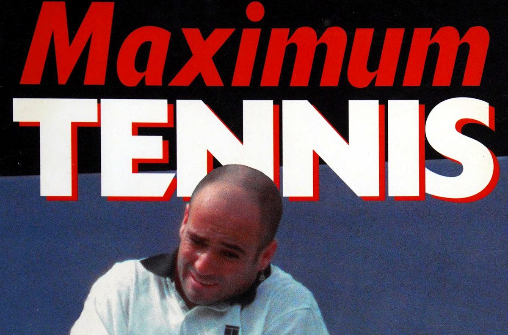
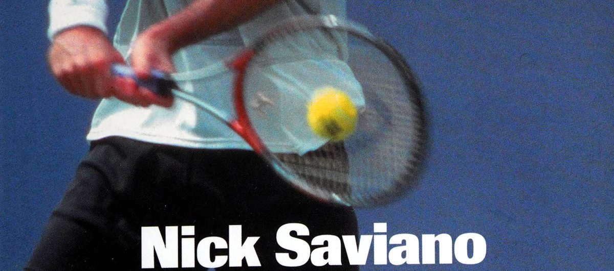
Lời cảm ơn
Gửi tới mẹ tôi, Carmella, và bố tôi, Dominick (người đã qua đời) vì sự hỗ trợ, động viên và tình yêu vô điều kiện của họ, cũng như tám anh chị em của tôi.
Gửi tới Cha Joe Dispenza, Tiến sĩ, người đã qua đời năm 1992, và đã giúp hình thành triết lý cơ bản của tôi không chỉ về tâm lý thể thao mà còn về cuộc sống. Nhiều khái niệm tôi viết trong chương 7 là kết quả trực tiếp từ ảnh hưởng của ông.
Rainer Martens, Tiến sĩ, người đã chỉ cho tôi hướng đi đúng đắn với cuốn sách này, đã đưa ra những hướng dẫn tuyệt vời và sau đó cho tôi cơ hội viết cuốn sách đầu tiên của mình. Cảm ơn Martin Barnard và Wendy McLaughlin vì tính chuyên nghiệp, đạo đức làm việc và sự hướng dẫn của họ để hoàn thành dự án này.
Trong gia đình USTA xin gửi lời cảm ơn đặc biệt tới Tiến sĩ Paul Roetert và Tiến sĩ Paul Lubbers vì đã xem xét cuốn sách cũng như đưa ra gợi ý và hướng dẫn trong quá trình thực hiện; và, Tiến sĩ Ron Woods, vì đã giúp đỡ tôi nhiều năm trong việc hoàn thiện các kỹ năng của tôi trong lĩnh vực đào tạo huấn luyện.
Cảm ơn Jon Levey vì đã xem lại cuốn sách và giúp giới thiệu các chương.
Đặc biệt cảm ơn Chris Evert vì đã viết lời tựa và hỗ trợ hết mình cho những nỗ lực của tôi trong dự án này.
Gửi đến mười chuyên gia đẳng cấp thế giới: Nick Bollettieri, Jim Courier, Chris Evert, Brad Gilbert, Dick Gould, Billie Jean King, Pat McEnroe, Pam Shriver, Stan Smith và Dennis Van der Meer, vì đã bỏ thời gian quý báu để viết phần giới thiệu cho chương của họ.
Gửi tới Dick Gould, người đã dạy tôi bài học tennis đầu tiên vào năm 12 tuổi và chưa bao giờ ngừng dạy tôi kể từ đó. Cảm ơn tình bạn, sự hỗ trợ và hướng dẫn của các bạn trong hơn 35 năm.
Gửi tới Nick Bollettieri và Dennis Van der Meer—hai huyền thoại huấn luyện đã chia sẻ một cách cởi mở sự hiểu biết và kiến thức về quần vợt của họ với tôi.
Gửi tới hàng trăm, nếu không phải hàng nghìn người chơi mà tôi đã có cơ hội làm việc cùng. Bạn đã giáo dục tôi nhiều hơn những gì tôi đã dạy bạn.
Cuối cùng, xin gửi tới hàng nghìn huấn luyện viên trên khắp đất nước mà tôi đã có vinh dự được làm việc và giao lưu cùng. Bạn đặt cả trái tim và tâm hồn của mình vào việc phát triển cầu thủ và hiếm khi nhận được sự tín nhiệm xứng đáng. Tôi đánh giá cao và tôn trọng bạn nhiều hơn bạn từng biết.
Giới thiệu
Nếu bạn có niềm đam mê với trò chơi quần vợt, có lẽ bạn đã thử mọi cách để khiến trò chơi của mình trở nên tốt hơn. Tôi đã đi cùng một con đường.
Tôi phải mất 35 năm với tư cách là một tay vợt trẻ, một chuyên gia ở ATP Tour, một huấn luyện viên chuyên nghiệp và một giám đốc giáo dục huấn luyện để cuối cùng tìm ra điều gì cho phép các tay vợt phát huy hết tiềm năng của họ. Tôi gọi chúng là sự thật thực sự hoặc những nguyên tắc cơ bản của trò chơi. Những nguyên tắc cơ bản này được thực hiện bởi những tay vợt thực sự vĩ đại như Andre Agassi, Venus và Serena Williams, Pete Sampras, Jennifer Capriati, Lleyton Hewitt và các chuyên gia quần vợt khác.
Họ là mẫu số chung vượt qua mọi phong cách chơi và mang lại thành công ở mọi cấp độ của trò chơi!
Mỗi chương trình bày một trong 10 nguyên tắc cơ bản chính này. Một số cầu thủ và huấn luyện viên giỏi nhất giới thiệu từng chương, cho bạn ý tưởng về cách họ sử dụng những khái niệm này để nâng cao trình độ trò chơi của riêng họ hoặc trình độ của các cầu thủ của họ. Các nguyên tắc cơ bản chính bao gồm tất cả các khía cạnh của trò chơi, từ chương 1 về cách thiết lập kế hoạch phát triển và kỹ thuật tối ưu hóa chương 4, đến chương 10 về tầm quan trọng của việc vui chơi, tận hưởng và nuôi dưỡng niềm đam mê với trò chơi. Trong suy nghĩ của tôi, một trong những chìa khóa lớn nhất dẫn đến thành công là sự vui vẻ và chương 10 sẽ cung cấp cho bạn cái nhìn sâu sắc về những gì bạn có thể làm để nâng cao những mặt tích cực và xóa bỏ những mặt tiêu cực khỏi trò chơi của mình.
Cho dù bạn đang hy vọng đạt được cấp độ cao hơn trong môn quần vợt cạnh tranh, là một vận động viên câu lạc bộ đang cố gắng giành chức vô địch câu lạc bộ ở cấp độ đánh giá của bạn hay một huấn luyện viên đang tìm kiếm cái nhìn sâu sắc mới về việc phát triển các cầu thủ, thì cuốn sách này sẽ giúp bạn không chỉ đạt được mục tiêu của mình mà còn vượt qua chúng. Hãy đọc tiếp và đây là cách để bạn phát huy tối đa tiềm năng chơi quần vợt của mình!
'Tháp pháo Sekipneede có giá 6% brie ptulv dy
Chương 1: Hình dung tay vợt lý tưởng của bạn
Con đường dẫn đến thành công là một kế hoạch phát triển được hình thành từ tầm nhìn về cầu thủ mà bạn muốn trở thành. Bạn phải nhìn thấy nó để đạt được điều đó.
Thiết lập một kế hoạch phát triển là chìa khóa để đưa trò chơi của bạn lên một tầm cao mới hoặc thậm chí phát huy hết tiềm năng của bạn với tư cách là một người chơi nếu bạn thực sự nghiêm túc. Về bản chất, nó là bản kế hoạch chi tiết cho sự phát triển của bạn và tạo ra cái mà tôi gọi là "đào tạo có hệ thống". Nó trình bày chính xác những gì bạn cần phải làm trong tất cả các khía cạnh của trò chơi và nêu chi tiết cách thực hiện sự phát triển đó. Nó sẽ mang lại sự rõ ràng và tập trung không chỉ cho bạn mà còn cho cả huấn luyện viên của bạn. Và tin tôi đi, nó sẽ là nguồn động lực và cảm hứng to lớn hàng ngày.
4 lần vô địch Grand Slam và cựu số 1 thế giới
Chương này thực sự gây chú ý với khái niệm về một kế hoạch phát triển.
Phát huy hết tiềm năng của bạn với tư cách là một vận động viên quần vợt là một'cuộc hành trình. Nó không xảy ra sau một vài bài học và không có con đường tắt nào cả. Bất cứ khi nào bạn bắt tay vào hành trình khám phá kiểu đó, nếu bạn muốn đến đích, điều khôn ngoan là bạn nên có một bản đồ chi tiết làm hướng dẫn cho mình. Bạn cần một kế hoạch dứt khoát để định hướng sự phát triển của mình thông qua tất cả các khả năng mà bạn có với tư cách là một người chơi. Cho dù bạn là người hy vọng giành được chức vô địch 4.0 tại câu lạc bộ của mình hay nâng cao chiếc cúp US Open, thì phương tiện vẫn giống nhau. Bạn phải thiết lập các điều khoản được xác định rõ ràng về cách bạn muốn đạt được mục tiêu này. Quá nhiều người chơi cho phép trò chơi của họ lang thang một cách vô ích với hy vọng tìm ra bí quyết thành công một cách kỳ diệu. Hãy lấy nó từ tôi, nó không xảy ra theo cách đó. Không phải trong quần vợt. Bạn cần tạo ra bản đồ đường đi sẽ đưa bạn đến đó. Và đó là mục đích của chương mở đầu quan trọng này. Nó sẽ giúp trò chơi của bạn đi đúng hướng.
Chương này sẽ giúp bạn thiết kế một kế hoạch phát triển nhằm đặt ra các mục tiêu của bạn và tìm ra những con đường rõ ràng để đạt được chúng. Sau khi bạn đạt được tiến bộ trên hành trình của mình và bản đồ đó trở nên lỗi thời, bạn phải đánh giá lại các mục tiêu của mình và xây dựng một kế hoạch mới.
Với tư cách là một tuyển thủ, tôi liên tục xác định điểm mạnh và điểm yếu của mình là gì về thể chất, tinh thần, cảm xúc và kỹ thuật.
Tôi bắt đầu tìm cách cải thiện điểm yếu và củng cố điểm mạnh của mình. Tôi đã rất chăm chỉ thực hiện tất cả các phần trong trò chơi của mình. Những ý tưởng cải tiến đến với tôi một cách tự nhiên khi tôi còn là một học sinh cơ sở chiến đấu với các bạn cùng lứa tại Học viện của Nick Bollettieri và với Hoa Kỳ.
Đội tuyển thiếu niên Davis Cup. Môi trường cạnh tranh khốc liệt đó đã thúc đẩy tôi tìm kiếm những con đường để nâng cao trình độ trò chơi của mình. Tôi thật may mắn khi có một số huấn luyện viên tuyệt vời giúp đỡ tôi trên con đường của mình nên tôi chưa bao giờ đi quá xa lộ trình. Ở tuổi |4 hoặc tôi đã cam kết làm bất cứ điều gì cần thiết để xem cuối cùng tôi có thể trở thành một cầu thủ như thế nào. Cảm giác tuyệt vời nhất mà bất kỳ ai cũng có thể có là biết rằng chắc chắn rằng bạn đã đạt được tiềm năng tối đa của mình. Phải mất rất nhiều công sức và nó không hề dễ dàng. Nhưng đó là một cuộc hành trình thực sự đáng tham gia. Hãy đọc kỹ chương này, xây dựng một kế hoạch phù hợp với bạn, làm việc chăm chỉ và tìm hiểu những gì cần thiết để phát huy hết tiềm năng của bạn.
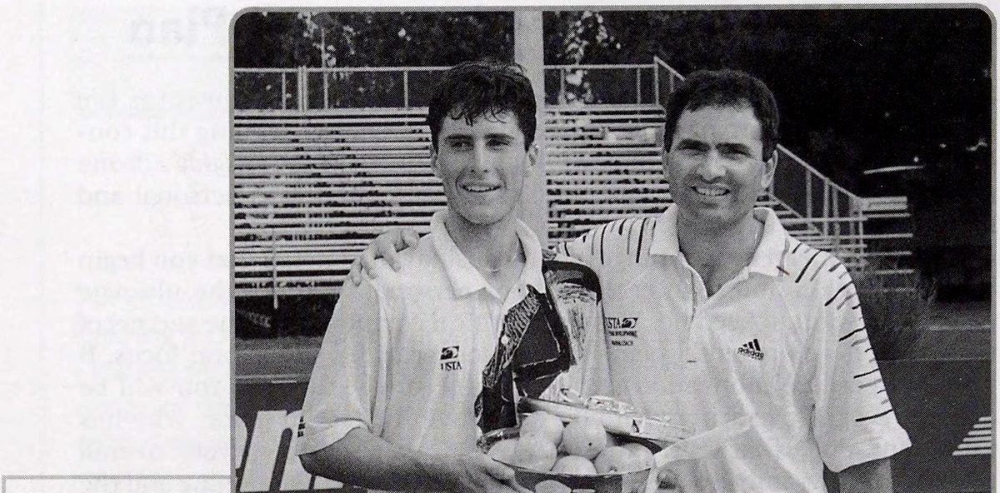
Lập kế hoạch phát triển
Bước đầu tiên và quan trọng nhất trong quá trình cải thiện cá nhân của bạn là nguyên tắc mà tôi gọi là "lập kế hoạch từ trong ra ngoài". Tôi bắt đầu cải tiến khái niệm này sau khi đọc cuốn sách Bảy thói quen của người thành đạt của Stephen Covey, trong đó ông nói về cách tiếp cận từ trong ra ngoài để đạt được hiệu quả cá nhân và giữa các cá nhân.
Ý tôi là gì khi lập kế hoạch từ trong ra ngoài? Ý tôi là bạn bắt đầu bằng cách suy ngẫm và sau đó hình thành tầm nhìn cá nhân về người chơi đỉnh cao mà bạn muốn trở thành. Đây là yếu tố quan trọng quyết định sự thành công của toàn bộ kế hoạch phát triển. Tầm nhìn của bạn mang lại sự rõ ràng và tập trung. Nó cung cấp động lực tích cực hơn là những lời chỉ trích tiêu cực. Bạn sẽ có thể nhận ra chính xác những gì bạn cần làm với trò chơi của mình, tại sao nó quan trọng và mức độ ưu tiên bạn nên dành cho nó trong kế hoạch tổng thể của mình. Tầm nhìn của bạn cũng tạo ra mối liên hệ giữa quá trình luyện tập hàng ngày của bạn và cầu thủ xuất sắc nhất mà bạn muốn trở thành. Nếu không có loại kế hoạch bắt đầu từ trong ra ngoài này, bạn đang tham gia vào "đào tạo ngẫu nhiên", một cách tiếp cận thực hành thành công và thất bại. Đó là một cách cực kỳ kém hiệu quả và thường không hiệu quả để luyện tập hoặc phát triển trò chơi của bạn. Bạn có thể tập luyện chăm chỉ với môn quần vợt của mình nhưng hầu như không có gì để thể hiện. Nói về sự thất vọng!
Vài năm trước, một chuyên gia lưu diễn trẻ tuổi, Vince Spadea, và cha anh ấy đã đến gặp tôi để xin một số hướng dẫn về sự phát triển quần vợt của Vince. Tôi biết Vince từ khi anh ấy mới 5 tuổi và đã cùng anh ấy thi đấu cho đội tuyển quốc gia Hiệp hội Quần vợt Hoa Kỳ (USTA) trong bốn năm. Anh ấy từng là một trong những hậu bối hàng đầu thế giới và là một cầu thủ cực kỳ tài năng. Vince đang phải vật lộn với sự tự tin của mình. Kết quả của anh ấy ở mức dưới chuẩn và thứ hạng thế giới của anh ấy đã trì trệ ở mức 300.
Tôi đã mời Vince và cha anh ấy đến văn phòng của tôi để thảo luận về tình hình của anh ấy và cho anh ấy ý kiến về phương hướng.
Tôi giải thích với họ rằng, bất chấp mọi nỗ lực của anh ấy, Vince vẫn cần một fo- và chúng tôi bắt đầu lập kế hoạch cụ thể để giúp anh ấy phát huy hết tiềm năng của mình. Họ đồng ý, đưa ra một kế hoạch phát triển toàn diện. Lập kế hoạch từ trong ra ngoài, Vince nói về vị trí trò chơi của anh ấy vào thời điểm đó và tầm nhìn cá nhân của anh ấy về người chơi đỉnh cao mà anh ấy muốn trở thành.
Trẻ em dưới 14 tuổi không cần phải thực hiện toàn bộ quá trình. Họ sẽ được hưởng lợi từ các cuộc thảo luận về tầm nhìn về mẫu cầu thủ mà họ muốn trở thành và về những gì họ cần phát triển trong trò chơi của mình. Nhưng vì chúng vẫn đang học những nguyên tắc cơ bản về kỹ thuật, chiến thuật và luật chơi nên một sự phát triển toàn diện- Bạn cần lập kế hoạch với huấn luyện viên của con mình — ngay cả khi trẻ chưa có kế hoạch tinh thần.
không trực tiếp tham gia vào giai đoạn này.
Nick Saviano sau chiến thắng của _ Spadea tại Orange Bowl năm 1992 18.
đã phát biểu, tôi đưa ra phản hồi để đảm bảo rằng tầm nhìn của anh ấy phản ánh tính cách, kỹ năng thể chất và cách anh ấy yêu thích thi đấu. Đây là chìa khóa thành công của toàn bộ quá trình bởi vì, khi anh ấy kết tinh tầm nhìn của mình, các lĩnh vực khác trong trò chơi mà anh ấy cần giải quyết sẽ bắt đầu đi vào đúng vị trí.
tiến trình logic bắt đầu phát triển. Sau tầm nhìn, Vince bắt đầu nhận ra các chiến lược, chiến thuật và kỹ thuật trong trò chơi mà anh cần giải quyết; những lĩnh vực tâm lý anh cần củng cố; điều kiện thể chất mà anh ấy cần phải cải thiện; và những cân nhắc về lịch trình mà anh ấy cần phải thực hiện. Cuối cùng, chúng tôi đặt ra các mục tiêu cụ thể để hoàn thành các mục tiêu đó.
Toàn bộ quá trình chỉ mất khoảng hai giờ. Rõ ràng, kế hoạch của Vince có chiều sâu hơn nhiều và mất nhiều thời gian hơn so với kế hoạch dành cho người chơi thi đấu bình thường. Bạn thực sự có thể thực hiện một kế hoạch phát triển “tăng tốc”—tin hay không tùy bạn—trong khoảng |5 phút và có đủ nền tảng để mang lại cho bạn những lợi ích cơ bản tương tự. Tuy nhiên, bạn càng nghiêm túc với trò chơi của mình thì bạn càng muốn kế hoạch của mình chi tiết và sâu sắc hơn.
Vào cuối cuộc gặp, tôi có thể thấy rằng Vince yên tâm hơn về tương lai của mình, đồng thời anh ấy thực sự rất hăng hái và sẵn sàng ra đi. Tôi đã nói với anh ấy và cha anh ấy trước khi họ rời đi rằng, nếu anh ấy làm theo kế hoạch của mình, anh ấy có thể lọt vào top 100 trên bảng xếp hạng thế giới của Hiệp hội quần vợt chuyên nghiệp (ATP) trong vòng một năm.
Chúng tôi vẫn giữ liên lạc trong suốt năm tiếp theo. Vince tuân theo các nguyên tắc mà chúng tôi đã đặt ra trong kế hoạch và chúng tôi đã thực hiện các điều chỉnh theo yêu cầu khi trò chơi của anh ấy phát triển.
Kết quả thật đáng ngạc nhiên. Vince đã thắng ba người thách đấu
sự kiện (các giải đấu "nhỏ" của quần vợt chuyên nghiệp) và sau đó bắt đầu đánh bại một số tay vợt đẳng cấp thế giới hàng đầu trong giải đấu. Thứ hạng thế giới của anh tăng vọt từ hạng 300 lên top 60 trong vòng chưa đầy tám tháng.
Trên hết, sự tiến bộ của Vince là nhờ vào tài năng, đạo đức làm việc, sự cam kết của anh ấy với quần vợt và sự hỗ trợ của gia đình anh ấy. Nhưng chính kế hoạch phát triển đã cung cấp cho Vince sự hướng dẫn rõ ràng, rõ ràng để tối đa hóa nỗ lực của anh ấy. Trong vài năm tiếp theo, Vince tiếp tục tiến bộ và nỗ lực lọt vào top 20 thế giới, và anh ấy được ghi tên vào Hoa Kỳ.
Đội tuyển Davis Cup.
Trường hợp của Vince Spadea không phải là trường hợp cá biệt. Tôi đã sử dụng khái niệm thiết lập kế hoạch phát triển trong 10 năm qua và đã đạt được thành công lớn với người chơi ở mọi cấp độ của trò chơi.
Bạn có thể thiết lập một kế hoạch phát triển hợp lý trong vòng chưa đầy 30 phút, nhưng bạn sẽ cần sự trợ giúp từ một người hiểu rõ về trò chơi của bạn hoặc từ một chuyên gia được chứng nhận của Hiệp hội Quần vợt Chuyên nghiệp Hoa Kỳ (USPTA) hoặc Cơ quan Đăng ký Quần vợt Chuyên nghiệp (PTR). Bạn cũng nên cập nhật và điều chỉnh kế hoạch của mình theo định kỳ. Khi bạn đọc về các thành phần khác nhau của kế hoạch phát triển, đừng lo lắng. Ngay cả khi bạn chỉ đơn giản trải qua quá trình này trong đầu mà không viết ra bất cứ điều gì, nó sẽ giúp bạn làm rõ những gì và làm thế nào bạn cần để tiếp tục quá trình phát triển của mình.
Bất kể thời gian bạn cam kết thực hiện, 15 phút hay hai giờ, kết quả có thể rất sâu sắc.
Trưởng nhóm phát triển
Mỗi người chơi phải có một trưởng nhóm phát triển (DTL) được chỉ định.
Người này chịu trách nhiệm đóng vai trò chủ đạo trong việc hướng dẫn sự phát triển của bạn. DTL của bạn có thể là huấn luyện viên hoặc phụ huynh của bạn; hoặc, nếu bạn là người lớn, bạn có thể là DTL của riêng mình. Bạn càng nghiêm túc thì bạn càng cần một chuyên gia để giúp bạn thiết lập và thực hiện kế hoạch của mình. Vai trò của DTU là giúp bạn đi đúng hướng và đảm bảo rằng bạn có được mọi thứ cần thiết để đạt được mục tiêu của mình.
Đầu vào từ DTL của bạn sẽ bao gồm huấn luyện thực hành, trong và ngoài sân đấu (trong một số trường hợp, DTL sẽ không thực hiện bất kỳ huấn luyện thực tế nào) và giám sát tất cả các thông tin, mẹo, hướng dẫn hoặc lời khuyên khác được chuyển cho bạn để đảm bảo rằng nó phù hợp với mục tiêu đào tạo có hệ thống của bạn. Nói cách khác, bạn sẽ nghe được nhiều điều về quần vợt mà không phải lúc nào cũng chính xác hoặc phù hợp với bạn và bạn không muốn có những lời khuyên hoặc thông tin mâu thuẫn không nhất quán với kế hoạch của mình. Ở cấp độ thế giới, hầu như mọi tay vợt hàng đầu trong suốt 15 đến 20 năm qua đều có một người chủ chốt đảm nhận vai trò này (ví dụ, Venus và Serena Williams—cha của họ; Andre Agassi—huấn luyện viên cũ của anh, Brad Gilbert; Martina Hingis—mẹ cô; Jim Courier—Jose Higueras; Jennifer Capriati—bố cô, Stefano; Lindsay Davenport—huấn luyện viên của cô, Robert Van't Hof). Điều tương tự cũng đúng với các đàn em hàng đầu. DTL có lẽ là mẫu số chung quan trọng nhất trong số những người chơi hàng đầu trong trò chơi hiện nay.
Đánh giá cá nhân hiện tại
Để đạt được mục tiêu mong muốn với trò chơi của mình, bạn cần biết hiện tại mình đang ở đâu. Đánh giá thực tế về trò chơi hiện tại của bạn là điều bắt buộc. DTL của bạn có thể giúp ích rất nhiều ở đây vì khó có thể chính xác hoặc trong một số trường hợp là thực tế về trình độ kỹ năng của bạn.
Bạn cần xem lại phong cách chơi mà bạn chơi, liệu phong cách đó có phù hợp với bạn hay không và điểm mạnh và điểm yếu của bạn là gì trong các khía cạnh khác nhau của trò chơi. Bạn có thể làm điều này trong thời gian vài phút. Một khi bạn biết mình đang ở đâu, bạn có thể nghĩ về nơi bạn muốn đi.
Tầm nhìn dài hạn
Bạn muốn trở thành tuyển thủ như thế nào? Bạn có tham vọng trở thành đẳng cấp thế giới hay chỉ là một cầu thủ xuất sắc vào cuối tuần? Dù mục tiêu của bạn là gì, bạn cũng cần phát triển một tầm nhìn sống động về cầu thủ mà cuối cùng bạn muốn trở thành. Đây sẽ là xương sống và ánh sáng dẫn đường cho kế hoạch của bạn. Bạn cần xem xét tính cách của mình và cách bạn thích chơi.
Khi bạn suy ngẫm, hãy cố gắng tưởng tượng tất cả các khía cạnh trong trò chơi của bạn. Bạn sẽ chơi như thế nào dưới áp lực? Bạn sẽ có vũ khí gì? Bạn sẽ chơi phong cách chơi nào?
Tầm nhìn của bạn phải phát huy tối đa điểm mạnh và giảm thiểu điểm yếu của bạn. Nếu bạn thấp, không có cú giao bóng lớn và ghét chơi lưới, đừng tưởng tượng mình trở thành một Pete Sampras khác. Nếu bạn cao và chậm chạp, rất có thể bạn sẽ không bao giờ trở thành một Serena Williams khác. Hãy thực tế khi đánh giá, nhưng quan trọng nhất là tầm nhìn của bạn phải kích thích và thúc đẩy bạn.
Hãy nhớ rằng, bạn là duy nhất, với tư cách là một con người và một cầu thủ, và tầm nhìn của bạn phải phản ánh điều đó. Bạn cần phát triển cầu thủ mà bạn có thể trở thành chứ không phải tiềm năng của bất kỳ ai khác. Bên cạnh việc dựa trên ước mơ của bạn, tầm nhìn của bạn cũng cần tính đến mức độ cam kết và hạn chế về thời gian. Ví dụ, nếu bạn là một người 50 tuổi chỉ có thể chơi ba giờ một tuần vào cuối tuần, tầm nhìn của bạn sẽ hoàn toàn khác với tầm nhìn của một cậu bé 13 tuổi đang chơi giải đấu muốn trở thành một tay vợt đẳng cấp thế giới. Tuy nhiên, hãy nhớ rằng các nguyên tắc tương tự cũng được áp dụng.
Chiến lược và phong cách thi đấu
Khi bạn đã có tầm nhìn rõ ràng về người chơi mà bạn muốn trở thành, bạn cần thiết lập phong cách và chiến lược trò chơi phù hợp để giúp biến tầm nhìn đó thành hiện thực. Thảo luận với DTL của bạn về chiến lược và mô hình nào cần phải thành thạo cũng như vũ khí bạn cần phát triển để đạt được mục tiêu của mình.
Trước khi làm điều này, tôi khuyên bạn nên đọc chương 2, để giúp bạn làm rõ chính xác cách thiết lập phong cách và chiến lược trò chơi phù hợp với mình.
Tôi gặp Stefano Capriati khi con gái anh ấy đang thi đấu trong sự kiện Easter Bowl Junior danh giá dành cho nữ | 6 tuổi trở xuống.
Lúc đó tôi là huấn luyện viên đội tuyển quốc gia.
Anh ấy nói với tôi về tầm nhìn của anh ấy về mẫu cầu thủ mà con gái Jennifer của anh ấy sẽ trở thành:
thể thao, mạnh mẽ và đánh mạnh bằng một cú giao bóng lớn. Tôi thấy rõ rằng Stefano đã có kế hoạch rõ ràng cho sự phát triển của Jennifer. Tôi đã gặp rất nhiều bậc cha mẹ đặt nhiều hy vọng vào môn quần vợt của con họ nhưng không nhiều người có được sự rõ ràng như vậy về tương lai. Con gái của ông vốn đã xuất sắc rồi. Cô ấy đã lọt vào tứ kết năm đó, điều này không có gì quá đặc biệt cho đến khi bạn tính đến việc cô ấy chỉ mới mười tuổi! Nhưng phải đến bốn năm sau—trong một sân đất nện trong nhà lạnh lẽo, sũng nước, thiếu ánh sáng, mái dột, gập ghềnh vào một ngày Chủ nhật mưa lạnh ở Charleroi, Bỉ—tôi mới thấy tầm nhìn của Stefano trở thành hiện thực. Chính ở đó, tôi đã chứng kiến Jennifer Capriati giành chiến thắng đầu tiên tại Liên đoàn Quần vợt Quốc tế (ITF) dành cho lứa tuổi 18 trở xuống. Một tuần sau, cô giành chức vô địch trẻ Pháp khi mới 3 tuổi. Và, mặc dù không phải lúc nào mọi chuyện cũng thuận buồm xuôi gió qua tất cả những thăng trầm trong những năm qua, nhưng tầm nhìn của Stefano (mà anh đã truyền cho Jennifer) về cầu thủ vĩ đại Jennifer dường như không bao giờ bị lung lay và cuối cùng đã trở thành hiện thực.
Lynne Rolley, Jennifer và Stefano Capriati, và Nick Saviano sau chiến thắng của Jennifer trong Liên đoàn quần vợt quốc tế đầu tiên | 8s và giải đấu cấp cơ sở ở Charleroi, Bỉ.
Cân nhắc về mặt chiến thuật Lời khuyên tốt nhất mà tôi có thể đưa ra cho bạn là thế này—hãy xem những người thuận lợi. Những người chơi giỏi nhất luôn đưa ra những quyết định chiến thuật đúng đắn trong trận chiến nóng bỏng và những quyết định đó hầu như luôn nằm trong bối cảnh chiến lược tổng thể của họ.
Các cuộc thảo luận về chiến thuật nên diễn ra sau các cuộc thảo luận về phát triển chiến lược. Nếu bạn tập trung vào việc điều chỉnh chiến thuật mà không có chiến lược được xác định rõ ràng sẽ dẫn đến việc thiếu định hướng và mục đích khi thi đấu. Xác định những kỹ năng chiến thuật quan trọng nào (ngoài các nguyên tắc chiến thuật tiêu chuẩn) bạn cần phát triển và quan trọng nhất đối với chiến lược cụ thể của bạn. Ví dụ, nếu bạn là một vận động viên đánh mặt đất năng nổ với cú thuận tay to và cú đánh trái tay yếu, thì kiểu đánh thuận tay từ trong ra ngoài rất quan trọng đối với bạn. Hoặc, nếu bạn thích chơi trên lưới, bạn phải sử dụng nhiều cách khác nhau để điều chỉnh chiến thuật (chẳng hạn như đến sau quả giao bóng thứ hai). Chương 3 đi vào chi tiết hơn về cách bạn có thể sử dụng các chiến thuật để cải thiện chiến lược của mình theo cách phù hợp với mình.
Phát triển kỹ thuật
Hầu hết người chơi, khi họ nghĩ đến việc cải thiện trò chơi của mình, đều nhảy ngay vào việc mày mò cơ chế các cú đánh của họ. Đôi khi điều đó gây ra nhiều vấn đề hơn là giải quyết được. Chỉ sau khi bạn đã thiết lập được tầm nhìn, chiến lược và kế hoạch chiến thuật rõ ràng, bạn mới có thể thảo luận một cách hiệu quả những gì bạn cần làm về mặt kỹ thuật. Điều quan trọng không chỉ là biết phải làm gì mà còn quan trọng không kém là biết cách ưu tiên những nhu cầu đó và lượng thời gian dành cho mỗi nhu cầu đó. Thay đổi cơ chế hoặc điều chỉnh các cú đánh của bạn có thể khó khăn và bực bội, nhưng khi nó là một phần của kế hoạch tổng thể, bạn sẽ hiểu tại sao nó cần phải được thực hiện và bạn sẽ có động lực nội tại để thực hiện nó. Để có cái nhìn chi tiết hơn về kỹ thuật, xem chương 4.
Phát triển tâm lý
Thành phần này trong kế hoạch phát triển của bạn là một phần của việc làm chủ tâm trí của bạn.
Hãy suy nghĩ về cách bạn sẽ thi đấu và cách ứng xử tâm lý trước, trong và sau khi thi đấu. Sau khi xác định những kỹ năng tâm lý nào bạn cần phát triển hoặc cải thiện, hãy thiết lập một kế hoạch đơn giản cho phép bạn tiến những bước khiêm tốn về phía trước. Trong chương 7, “Tập trung vào những gì bạn có thể kiểm soát”, tôi thảo luận về một số bí mật tâm lý của những chuyên gia sẽ cung cấp cho bạn thông tin giúp bạn đi đúng hướng.
Lập kế hoạch và định kỳ
Lập một lịch thi đấu/trận đấu giúp bạn có thể tối đa hóa kết quả của mình và cho phép nghỉ ngơi và phục hồi đầy đủ. Để làm điều này bạn
cần hiểu các khái niệm cơ bản về lập kế hoạch và định kỳ. Các vận động viên, đặc biệt là những vận động viên quần vợt, không thể chơi với phong độ tốt nhất mỗi ngày, suốt cả năm. Cơ thể và tâm trí của bạn cần thời gian để nghỉ ngơi và phục hồi sau khi nỗ lực tối đa. Các vận động viên đẳng cấp thế giới đã học được cách luyện tập và thi đấu để đạt đến đỉnh cao vào những thời điểm nhất định trong năm. Đó được gọi là định kỳ.
Bạn có thể sử dụng những nguyên tắc này để nhắm mục tiêu khi bạn muốn đạt phong độ tốt nhất, sau đó thiết lập một chương trình luyện tập và thi đấu để đưa bạn đến đó.
Thảo luận với DTL của bạn về tổng số giải đấu bạn nên chơi trong năm, số giải đấu tối ưu liên tiếp, thời lượng luyện tập bạn cần giữa các cuộc thi và thời gian nghỉ ngơi cần thiết để đạt được lợi ích tối đa. Ví dụ, khi tôi tham gia giải đấu chuyên nghiệp, tôi thích chơi tới 30 giải đấu mỗi năm - con số này rất nhiều đối với một người chơi chuyên nghiệp - và tôi đã lên lịch chơi 4 hoặc 5 giải đấu liên tiếp. Đó là điều làm việc tốt nhất cho tôi. Tuy nhiên, các chuyên gia khác, chẳng hạn như Bjorn Borg hoặc Jimmy Connors, chơi ít nhất 15 giải đấu mỗi năm và chỉ sắp xếp lịch thi đấu hai sự kiện liên tiếp (họ cũng đã giành chiến thắng hoặc vào đến chung kết của hầu hết các sự kiện họ đã chơi). Bạn có thể chỉ có một trận đấu câu lạc bộ một tuần hoặc một giải đấu một tháng. Quan điểm của tôi là mọi người đều khác nhau. Hãy làm những gì tốt nhất cho bạn.
Phát triển thể chất Không có kế hoạch nào được hoàn thành nếu không kiểm tra khía cạnh thể chất của trò chơi. Ở giai đoạn này, bạn sẽ đánh giá những gì bạn cần làm về mặt thể chất để đạt được mục tiêu của mình. Bạn có cần mạnh mẽ hơn không? Tăng cơ sở hiếu khí của bạn? Làm việc dựa trên tốc độ hoặc động tác chân của bạn? Ngay cả khi bạn không phải là một người chơi nghiêm túc, bằng cách hiểu những gì bạn cần phải làm và thực hiện kế hoạch cơ bản nhất, bạn có thể có tác động đáng kể đến kết quả của mình. Giả sử bạn quá dễ mệt mỏi sau một khoảng thời gian dài và bạn luôn thua hai hiệp tiếp theo vì mệt mỏi. Chỉ cần thêm một vài bài tập vào cuối buổi tập để tăng nhịp tim có thể giúp ích đáng kể. Chương 6 thảo luận về những cách thực hành cụ thể có thể giúp ích cho bạn.
Thiết lập mục tiêu Cuối cùng, bạn cần thiết lập các mục tiêu để hoàn thành mục tiêu của mình. Một lần nữa, những mục tiêu này có thể cực kỳ đơn giản và cơ bản hoặc có thể toàn diện hơn, bao gồm các mục tiêu hiệu suất ngắn hạn, trung hạn và dài hạn. Nhưng đừng nhầm lẫn, việc có mục tiêu sẽ giúp bạn dễ dàng duy trì động lực và chịu đựng những hy sinh cần thiết để đạt được kết quả cuối cùng.
Brian Dunn được |6 tuổi khi được chọn là thành viên của đội tuyển quốc gia Hoa Kỳ. Brian đã nói rõ với tôi rằng anh ấy muốn trở thành một chuyên gia đẳng cấp thế giới. Anh là một học sinh giỏi (cả bố và mẹ anh đều là giáo sư của một trường đại học), đồng thời là một trong những hậu bối xuất sắc nhất cả nước và được cha anh huấn luyện. Anh ấy sẵn sàng từ bỏ việc học đại học nếu tiềm năng của anh ấy đảm bảo điều đó. Tuy nhiên, gia đình lo ngại về chi phí quá lớn khi bắt đầu thi đấu chuyên nghiệp.
Để giải quyết vấn đề, chúng tôi đã thiết lập một kế hoạch phát triển để giúp Brian không chỉ cải thiện trò chơi của mình mà còn tự khẳng định mình là một trong những triển vọng hàng đầu thế giới để thu hút các hợp đồng chứng thực quan trọng để giúp anh ấy trở thành chuyên gia. “Mục tiêu cuối cùng” cụ thể của anh ấy (mục tiêu kết quả sẽ được thảo luận chi tiết ở chương 7) là vô địch 18 đội tuyển quốc gia, vô địch giải trẻ Mỹ mở rộng và kết thúc năm với tư cách là tay vợt trẻ số một thế giới. Mục tiêu thực sự rất cao!
Nick Saviano và Brian Dunn tại _ giải Junior US Open 1992. Brian kết thúc với tư cách là học sinh số 1 thế giới _.
Với sự hỗ trợ của cha mẹ anh ấy, chúng tôi đã vạch ra một kế hoạch phát triển và tầm nhìn dài hạn rõ ràng cho trò chơi của anh ấy. Đó không phải là một con đường dễ dàng! Có rất nhiều thăng trầm, đặc biệt là trong năm đầu tiên anh chơi cho lứa tuổi dưới 8. Nhưng từng bước một, Brian tiếp tục tiến bộ. Khi anh ấy bước vào năm thi đấu cuối cùng ở cấp cơ sở, trò chơi của anh ấy bắt đầu phát triển. Anh ấy đã lọt vào trận chung kết của Australian Juniors, mặc dù anh ấy đã chơi không tốt trong trận tranh đai. Anh ấy đã có một trận tứ kết tại giải Juniors của Ý, sau đó là trận thua đáng thất vọng sớm trước người Pháp. Đây là một bước lùi đặc biệt lớn vì anh ấy là một trong những người được yêu thích và nhiều đại lý thể thao cũng như đại diện công ty đã đến xem anh ấy thi đấu. Brian đã phục hồi bằng cách giành chiến thắng trong sự kiện khởi động trước Wimbledon và sau đó lọt vào trận chung kết Wimbledon Juniors (mặc dù một lần nữa, anh lại để thua đáng thất vọng trong trận chung kết). Tuy nhiên, anh ấy vẫn bám sát kế hoạch của mình và tiếp tục làm việc chăm chỉ khi chúng tôi thực hiện những cải tiến tinh tế khi trò chơi của anh ấy phát triển. Giờ đây, sự tập trung của anh ấy chuyển sang giải vô địch trẻ em quốc gia Hoa Kỳ tại Kalamazoo, Michigan, người chiến thắng sẽ nhận được quyền tham dự trực tiếp nội dung nam tại US Open. Phải mất 5 hiệp đấu mệt mỏi nhưng Brian đã giành được danh hiệu.
Bây giờ sân khấu đã được chuẩn bị cho Brian. Nếu anh ấy có thể thể hiện tốt trước một tay vợt hàng đầu trong trận hòa chính của US Open và thi đấu tốt ở Junior Open, anh ấy có thể củng cố thứ hạng số một thế giới dành cho lứa tuổi thiếu niên và có thể kiếm được một hợp đồng chứng thực cho phép anh ấy theo đuổi giấc mơ chuyên nghiệp của mình. Brian đã thành công rực rỡ. Ở vòng đầu tiên, anh đánh bại tay vợt người Đức đang đứng trong top 100 trên bảng xếp hạng ATP thế giới, sau đó thua ở vòng hai sau khi chơi một trận xuất sắc. Anh tiếp nối thành tích đó bằng cách giành chức vô địch US Open Junior và giữ vững vị trí số một thế giới. Brian sau đó trở thành chuyên nghiệp và ký các hợp đồng chứng thực béo bở.
Nhưng đó chưa phải là kết thúc của câu chuyện. Brian dính chấn thương đầu gối trong 18 tháng đầu tiên thi đấu chuyên nghiệp. Hai cuộc phẫu thuật sau đó đã chấm dứt sự nghiệp của anh ấy trước khi nó có cơ hội cất cánh. Brian quay trở lại trường học, lấy bằng đại học và tiếp tục lấy bằng luật của Đại học Georgetown.
Hai năm trước tôi nhận được một cuộc gọi từ Brian. Anh ấy dự định kết hôn và rất hào hứng với nghề luật của mình. Trong cuộc trò chuyện, anh ấy nói với tôi, "Nick, tôi muốn cảm ơn anh vì nhiều nguyên tắc anh nói đến—có tầm nhìn rõ ràng và lập kế hoạch—là những nguyên tắc tôi đã sử dụng khi theo đuổi tấm bằng luật. Chúng thực sự đã giúp tôi hoàn thành mục tiêu và biến tầm nhìn của tôi thành hiện thực.' Những nhận xét của anh ấy có ý nghĩa rất lớn đối với tôi cũng như bất kỳ nhận xét nào khác mà tôi đã nhận được trong môn quần vợt. Lời nói của anh ấy đã củng cố niềm tin của tôi vào lợi ích và tầm quan trọng của việc lập kế hoạch từ trong ra ngoài và thiết lập một kế hoạch phát triển rõ ràng.
Chương này có vẻ trình bày rất nhiều thông tin cần tiếp thu cùng một lúc, nhưng đừng lo lắng. Khi bạn hiểu được quy trình lập kế hoạch từ trong ra ngoài, kế hoạch phát triển của bạn có thể được hoàn thành trong vòng chưa đầy 30 phút.
Tôi cũng đã đưa ra các ví dụ về hai kế hoạch phát triển chi tiết. Đầu tiên là dành cho một tay vợt nam 45 tuổi, giải trí, được xếp hạng 4,0 trên thang điểm của Chương trình xếp hạng quần vợt quốc gia (NTRP). Mục tiêu của anh ấy là đạt được cấp độ 4,5. Kế hoạch của anh ấy thường mất khoảng 45 phút để hoàn thành. Kế hoạch thứ hai dành cho một cô bé 13 tuổi có khát vọng trở thành cầu thủ đẳng cấp thế giới. Kế hoạch này sẽ cần phải thảo luận kỹ lưỡng để thiết lập.
Lên kế hoạch dành một vài giờ để phát triển một chương trình như vậy.
Xem hai chương trình phát triển mẫu (mẫu 1.1 và 1.2). Rõ ràng là những nguyên tắc cơ bản giống nhau đều có tác dụng đối với người chơi nghiêm túc cũng như người chơi xã hội.
Đừng bỏ cuốn sách này và hãy cố gắng lập một kế hoạch hoàn chỉnh ngay bây giờ. Khi bạn đọc hết phần còn lại của cuốn sách, nhiều điều về trò chơi nói chung và trò chơi của bạn nói riêng sẽ trở nên rõ ràng hơn với bạn. Bạn sẽ hiểu rõ hơn về quy trình, trò chơi của mình và nơi bạn muốn đi cùng nó. Có một điều chắc chắn: Nếu bạn dành thời gian để thiết lập một kế hoạch dù là khiêm tốn nhất và bạn sẵn sàng thực hiện nó thì cơ hội đưa trò chơi của bạn lên một tầm cao mới là rất lớn!
Dành cho người chơi phong trào nghiêm túc
NGƯỜI CHƠI: "John Smith"
MÔ TẢ NGƯỜI CHƠI: Nam, 45 tuổi, cao 6'1"
Phát triển
TEAM LEADER: Tên huấn luyện viên (Được chứng nhận USPTA hoặc PTR)
Đánh giá người chơi
Chơi ở cấp độ 4.0.
Phong cách trò chơi: Net Rusher Giao bóng ổn định và nhất quán.
Những cú vô lê ổn định nhưng lại không hiệu quả.
Các cú đánh trên mặt đất ổn định, nhưng trái tay hơi yếu. Những cú đánh tiếp cận là tốt.
Có tinh thần vững vàng và thi đấu tốt.
[Lưu ý: Hầu hết mọi người sẽ nghĩ rằng John nên dành nhiều thời gian để cải thiện
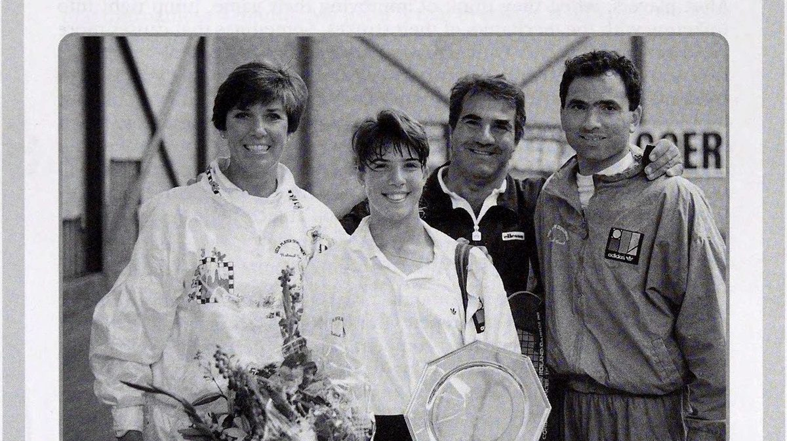
Tầm nhìn dài hạn
trái tay. Nhưng như chúng ta đã thấy, đó không hẳn là kế hoạch đúng đắn.]
Tôi thích tấn công vào lưới, giao bóng, vô lê và đánh những cú tiếp cận để có thể tiến vào phía sau họ. Tôi có một cú giao bóng lớn và giành được rất nhiều điểm miễn phí nhờ nó. Cú giao bóng của tôi cũng giúp tôi thực hiện những cú vô lê dễ dàng. Tôi vào lưới rất giỏi - một tay vô lê ổn định với khả năng đưa bóng đi xa. Tôi liên tục gây áp lực lên đối thủ và sử dụng thể lực cũng như khả năng điều hòa tuyệt vời của mình để đe dọa đối thủ.
Máy đẩy lưới. Mục tiêu chủ yếu sẽ là vào lưới để cố gắng ghi điểm.
Chiến thuật
Các mẫu có tầm quan trọng chính:
Tấn công quả giao bóng thứ hai bằng cách đánh tiếp cận và lao vào.
Tấn công bóng ngắn.
Các kiểu giao bóng và vô lê:
Giao bóng rộng cho cả hai bên rồi tung cú vô lê ra sân rộng.
Ở lại quả giao bóng thứ hai và sau đó chạm lưới từ quả trả giao bóng.
Phục vụ:
Thay đổi vị trí và tốc độ giao bóng để có được những cú trả bóng yếu đối với những cú vô lê dễ dàng.
Phát triển kỹ thuật
° Phục vụ:
Cần nhiều sức mạnh hơn và độ chính xác được cải thiện.
° Bóng chuyền:
Cần đưa bóng cao vào lưới.
Cần đánh sâu hơn và chắc hơn vào những quả bóng thấp hơn lưới.
Phát triển tâm lý
Không cần cải thiện đáng kể.
Phát triển thể lực
Đưa khả năng điều hòa lên một tầm cao mới để duy trì mức cường độ cao trong ba-
Lập lịch và chu kỳ hóa
Chơi ít nhất một giải đấu mỗi tháng.
Đặt mục tiêu
Mục tiêu hiệu suất: (Đây là những mục tiêu mà bạn có nhiều quyền kiểm soát. Chương 7 sẽ giải thích chi tiết hơn).
Học bảy bài học trong tháng tới để cải thiện kỹ thuật giao bóng và bóng chuyền.
Phục vụ:
Để cải thiện sức mạnh và vị trí, hãy thực hiện 50 cú giao bóng với mục tiêu ba lần một tuần.
Bóng chuyền:Tập bóng chuyền trong 15 phút ba lần một tuần.
Điều hòa:Tập bóng chuyền trong 15 phút ba lần một tuần.
Mục tiêu kết quả: (Đây là những mục tiêu kết quả mà người chơi không có quyền kiểm soát.) Xếp hạng: Nhận xếp hạng 4,5 NTRP vào cuối năm.
Giải đấu:Chiến thắng đơn câu lạc bộ.
Cá nhân: Đánh bại Arthur Jones kiêu ngạo đó!
Mẫu I.2
Dành cho người chơi khao khát vươn tầm thế giới
NGƯỜI CHƠI: "Jane Smith"
MÔ TẢ NGƯỜI CHƠI: Nữ, |3 tuổi, 5'6"
Được xếp hạng trong top 50 của bảng xếp hạng Quốc gia USTA.
LÃNH ĐẠO PHÁT TRIỂN: Tên huấn luyện viên (Được chứng nhận USPTA hoặc PTR)
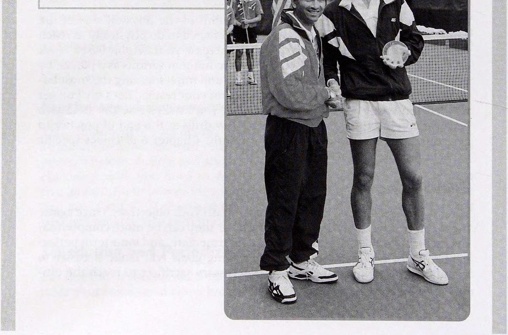
Đánh giá người chơi
Cầu thủ cơ bản to lớn, mạnh mẽ, năng nổ.
Đánh mạnh vào cả hai bên. Cú đánh trái tay chắc chắn hơn nhưng đánh được nhiều người chiến thắng hơn từ cú thuận tay.
Thích tấn công sớm vào các điểm, thường ở lượt bắn đầu tiên.
Có xu hướng thiếu kiên nhẫn và vội vã.
Về mặt chiến thuật, chơi tốt một số mẫu. Tuy nhiên, chưa nắm vững các mẫu phát huy thế mạnh của mình.
Chuyển động tổng thể là phù hợp nhưng có thể cải thiện đáng kể. Di chuyển tốt từ bên này sang bên kia. Cần cải thiện tiến về phía trước.
Kỹ thuật vô lê hợp lý nhưng lại không thoải mái khi dứt điểm vào lưới.
Thuận tay: Đánh nhiều người thắng, lực tốt.
Sức mạnh: Có sức mạnh bẩm sinh, kích thước tốt và tốc độ đầu vợt tuyệt vời.
Giao bóng là một vũ khí tiềm năng: Hành động và sức mạnh của cánh tay tốt. Kỹ thuật cần làm việc.
Tầm nhìn dài hạn
Chơi một trò chơi năng nổ trên toàn sân, trong đó cô ấy có khả năng tấn công đầu tiên xuất sắc. Lakes chỉ huy các điểm sớm trong cuộc biểu tình thông qua một cú giao bóng lớn, trả bóng mạnh mẽ và lấy bóng sớm từ các cú đánh trên mặt đất. Về mặt chiến thuật, chơi quần vợt năng nổ, tỷ lệ phần trăm cao. Thể lực ở trạng thái tốt và di chuyển tốt ở mọi khía cạnh của trận đấu. Cô ấy sử dụng kích thước và sức mạnh của mình để thống trị đối thủ về mặt thể chất. Về mặt tâm lý, cô ấy thể hiện sự hiện diện mạnh mẽ, tích cực (PPP) trên sân trong các trận đấu của mình và là một đối thủ cạnh tranh khốc liệt, yêu thích
Cầu thủ cơ bản năng nổ và ghi nhiều điểm vào lưới.
Giao bóng lớn để giành điểm miễn phí cho quân Át hoặc người chiến thắng và/hoặc cố gắng gây ra phản ứng yếu để giành quyền kiểm soát điểm.
Trận trả giao bóng có tính quyết liệt, đặc biệt là ở những cú giao bóng thứ hai.
Chơi ở sân sau: Ở gần đường cuối sân và nhận bóng sớm. Chơi những cú đánh mạnh mẽ với tỷ lệ phần trăm cao.
Chiến thuật
Giao bóng: Phát triển các kiểu giao bóng khiến đối thủ phải chơi rộng ở cả hai bên, sau đó đánh mạnh vào phần sân rộng. Thực hiện cú giao bóng mạnh ở điểm phát bóng ở cả hai bên, tìm kiếm một con át hoặc một câu trả lời đưa về giữa sân nơi cô ấy có thể tận dụng lợi thế.
Trả bóng: Chơi tích cực, tỷ lệ trả bóng chéo sân cao, làm nổi bật sức mạnh. Đồng thời đánh quả bóng trung hòa cực mạnh ở giữa sân. Ở những cú giao bóng thứ hai, thường chơi những pha trả bóng quyết liệt ở cuối đường biên. Nếu cô ấy thực hiện một cú trả bóng chất lượng cao và đối thủ phản ứng chậm thì cô ấy sẽ chạm lưới sau cú đánh.
Sân sau: Kiểm soát phần giữa sân. Khi bóng rơi vào khu vực đó, cô ấy tỏ ra hung hãn và cố gắng giành quyền kiểm soát cú đánh đó. Thường xuyên đưa bóng dọc biên (từ một cú sút chéo sân) bằng sức mạnh khi cô ấy có thời gian để chuẩn bị. Tốc độ và độ sâu trong các cú đánh của cô ấy được tăng cường để giữ chân đối thủ và giúp cô ấy kiểm soát số điểm. Khi cô ấy thực hiện một cú đánh mặt đất chất lượng mà đối thủ của cô ấy phản ứng chậm, cô ấy sẽ tiến về phía trước và kết thúc điểm trên lưới.
Phát triển kỹ thuật
Giao bóng: Cần cải thiện hoạt động của cánh tay và bùng nổ hơn trong giao bóng bằng chân.
Những cú đánh trên mặt đất: Cần phải cố gắng giữ tư thế thân trên tốt khi đánh bóng thấp.
Bóng chuyền: Cần rút ngắn cú vung và sử dụng nhiều chân hơn.
Phát triển tâm lý
Phải tiếp tục tập trung vào việc chơi từng điểm một và phát huy hết khả năng của mình.
Luôn tự nói chuyện tích cực.
Phát triển thể lực
Phát triển nền tảng hiếu khí vững chắc làm nền tảng cho sự phát triển thể chất của trẻ.
Phát triển sức mạnh ở cơ tứ đầu và cơ mông tối đa để ổn định.
Lập lịch và chu kỳ hóa
Sẽ thi đấu trong khoảng 15 giải đấu trong năm nay.
* Tối đa ba giải đấu liên tiếp, sau đó là tối thiểu hai tuần tập luyện và nghỉ ngơi.
Sẽ nghỉ thi đấu trong tháng 10 và tháng 11 để tập trung phát triển lối chơi và thể lực của mình.
Đặt mục tiêu
Mục tiêu hiệu suất:
Dài hạn (I năm): Để hoàn thiện các kiểu trả bóng từ quả giao bóng thứ hai và phát triển khả năng dứt điểm trên lưới khi thích hợp.
Trung bình (6 tháng): Có thể tự tin đánh trả đường biên và sử dụng nó trong một trận đấu ít nhất năm đến sáu lần và theo bóng vào lưới một hoặc hai lần.
Ngắn hạn (1 tháng):Sẽ có đối tác đánh giao bóng cho tôi và tôi sẽ thực hiện các cú trả giao bóng trong 15 phút ít nhất ba lần một tuần.
Mục tiêu kết quả:
Dài hạn (I năm): Đạt thứ hạng WTA thế giới.
Trung bình (6 tháng): Sẽ thi đấu ở vòng loại trong bốn sự kiện trị giá 10.000 đô la.
Ngắn hạn (4 tuần): Sẽ tham gia sự kiện tương lai $10.000 và sẽ yêu cầu thẻ đặc biệt để đủ điều kiện.
Chương 2: Đón nhận cá tính thi đấu của bạn
Bản năng trên sân của bạn sẽ là động lực trong việc phát triển phong cách chơi và xây dựng chiến lược trận đấu.
Tính cách của bạn là chìa khóa để phát triển phong cách và chiến lược trò chơi phù hợp với bạn. Trong vở kịch nổi tiếng Hamlet của Shakespeare, Polonius đã khuyên: “Hãy thành thật với chính mình”. Đó cũng là lời khuyên tốt cho người chơi quần vợt.
Người được vinh danh tại Đại sảnh Danh vọng Quần vợt Quốc tế và là người giành được 18 danh hiệu Grand Slam đơn
Việc để tính cách trên sân của bạn trở thành động lực thúc đẩy phong cách chơi mà bạn chơi là điều vô cùng quan trọng. Trong suốt sự nghiệp thi đấu của mình, tôi đã tập đánh bóng khá nhiều. Mặc dù đó không phải là thế mạnh của tôi nhưng tôi là một tay vô lê cừ khôi.
Nhưng khi đến thời điểm thi đấu, việc đứng trên lưới không phải là điều tôi cảm thấy thoải mái. Ngay cả khi tôi đánh tốt, tôi biết rằng cơ hội tốt nhất để giành chiến thắng là ở đường cuối sân. Tất nhiên, tôi sẽ lên lưới để ghi điểm khi cần thiết. Tuy nhiên, nếu tôi có thể giúp được, tôi sẽ ở lại mức cơ bản. Đó là kiểu trò chơi phù hợp nhất với tôi. Để có thể chơi tốt nhất, bạn phải làm theo bản năng tự nhiên của mình. Nếu bạn thỏa hiệp bằng cách chơi theo phong cách không phù hợp với mình, bạn sẽ không phát huy được tiềm năng của mình.
Bản năng trên sân của bạn phải là yếu tố quyết định trong việc phát triển phong cách chơi của bạn và hình thành chiến lược trận đấu. Tự tin vào những gì bạn đang làm trên sân là chìa khóa thành công lớn. Bạn phải tin vào trò chơi của mình, nếu không bạn sẽ chỉ là bóng ma của chính mình trên sân. Chương này sẽ đi một chặng đường dài trong việc giúp bạn khám phá đâu là tính cách thực sự của bạn khi ra tòa. Nick phân tích kỹ lưỡng và chính xác các phong cách chơi khác nhau và cách xác định bạn thuộc phong cách nào. (Và tốt hơn nữa là làm thế nào để đánh bại tất cả những người khác!) Về cơ bản, tôi là một kẻ phản công Đó là chiến lược của tôi. Tôi đợi đối thủ cho mình một cơ hội và sau đó tôi nắm lấy nó. Và thật trùng hợp, đó cũng là tôi ở ngoài sân. Tôi không phải là người quá hung hăng, hiếm khi làm bất cứ điều gì ngoài tầm kiểm soát. Nhưng cả hai không phải lúc nào cũng đi đôi với nhau.
Rất nhiều người giao bóng và chuyền bóng thực sự là những người thụ động. Chưa bao giờ có một cầu thủ khiêm tốn và thoải mái hơn Stefan Edberg khi rời sân. Nhưng trên sân, bản năng của anh ấy là lao vào lưới và kết thúc trận đấu càng nhanh và quyết liệt càng tốt. Vì vậy, đừng cho rằng vì bạn cư xử theo một cách nhất định ngoài sân đấu nên bạn phải chơi theo cách đó khi ở trên đó. Một trong những điều tuyệt vời về quần vợt là mặc dù các cách tiếp cận có thể giống nhau nhưng mỗi cá tính độc đáo đều thể hiện thành phong cách đặc biệt của riêng mình.
Khi bạn kết hợp hai người chơi có tính cách tương phản trên sân, bạn sẽ có một công thức cho một trận đấu kinh điển.
Như trường hợp của Borg-McEnroe, Lendl-Becker, Martina và tôi, bản năng trên sân của một cầu thủ hoàn toàn trái ngược với đối thủ của họ. Tôi biết khi vào vai Martina, cô ấy sẽ gây áp lực cho tôi suốt cả ngày. Công việc của tôi là phản ứng lại sự hung hăng của cô ấy. ! sẽ làm nhẹ
điều chỉnh trò chơi của tôi, cô ấy cũng vậy, tùy thuộc vào bề mặt hoặc dịp.
Nếu chúng tôi chơi trên sân đất nện, Martina sẽ chọn lọc hơn về thời điểm cô ấy tấn công vào lưới. Nếu chúng tôi gặp nhau trên sân cỏ, tôi biết mình sẽ phải tận dụng mọi cơ hội để tỏ ra quyết liệt. Nhưng bất kể bề ngoài thế nào, chúng tôi vẫn luôn tuân theo những đặc điểm tính cách cơ bản và phong cách chơi của mình.
Tôi sẽ không trở thành một vận động viên ném lưới nữa vì cô ấy sẽ tham gia vào các cuộc biểu tình cơ bản ba mươi gậy. Nếu tôi định đánh bại cô ấy, tôi biết điều đó phải nằm trong khuôn khổ của việc chơi thứ quần vợt cơ bản, thông minh, theo tỷ lệ phần trăm.
Việc có sự hiểu biết vững chắc và quen thuộc với bản năng và phong cách của chính mình sẽ giúp xác định mức độ thành công của bạn. Thành thật với chính mình và trò chơi của bạn là con đường duy nhất để đi.
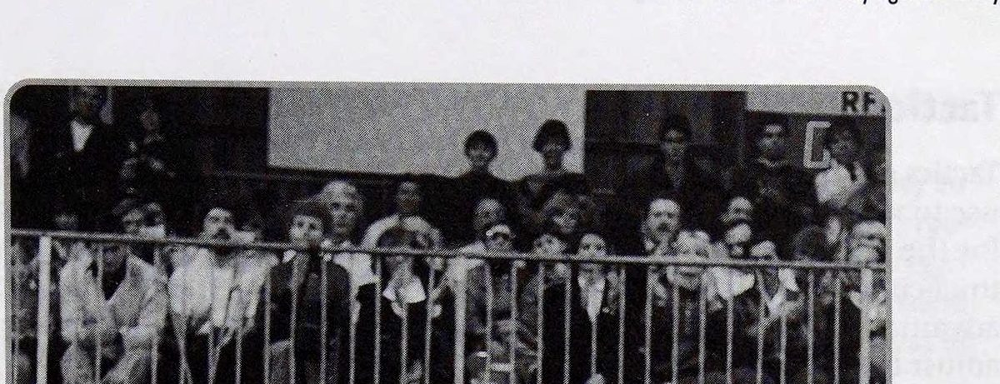
Phong cách và chiến lược đích thực
Nếu phong cách chơi không phù hợp với tính cách của bạn, nó sẽ phá hủy sự thích thú, tình yêu và niềm đam mê của bạn với trò chơi. Việc đến tòa án ngày này qua ngày khác để cố gắng chơi một trò chơi không đồng ý với bạn sẽ ảnh hưởng đến con người bạn và cách bạn thể hiện bản thân. Kết quả sẽ là một thảm họa. Không quan trọng bạn là một chiến binh cuối tuần, một học sinh đầy tham vọng hay một cầu thủ đẳng cấp thế giới. Nếu bạn muốn trở thành người chơi giỏi nhất có thể, cá tính độc đáo của riêng bạn phải là động lực thúc đẩy phong cách chơi và chiến lược bạn phát triển. - Trong sức nóng của một trận đấu, khi áp lực thực sự gia tăng, các cầu thủ giỏi sẽ tập trung vào cốt lõi của trận đấu. Bạn có thể cảm nhận và nhìn thấy tính cách thực sự của họ trên sân trong cách họ thi đấu và cố gắng giành điểm. Bản năng tự nhiên của họ chiếm ưu thế để tấn công vào lưới hoặc đào sâu ở đường cuối sân khi thời điểm đến. Họ làm những gì diễn ra một cách tự nhiên nhất, những gì cảm thấy thoải mái nhất và những gì họ tin tưởng nhất để thành công.
Hãy suy nghĩ về điều đó. Bạn có thể hình dung Andre Agassi hay chị em nhà Williams, khi trận đấu đang diễn ra, đứng cách xa đường cuối sân và đánh những cú đánh có tỷ lệ chạm đất cao, thận trọng và không mạo hiểm? Tất nhiên là không. Họ sẽ bước vào sân và tung ra những cú đánh chạm đất để giành quyền kiểm soát điểm. Liệu một cầu thủ năng nổ như Pete Sampras có ở lại và thực hiện các cú đánh trên mặt đất khi đến thời điểm quyết định không? Không. Anh ấy sẽ tấn công vào lưới để đưa bóng đi. Những vận động viên này chơi theo cách đó bởi vì họ chính là như vậy. Chắc chắn, những người chơi như vậy có thể chơi các chiến thuật khác với phong cách cơ bản của họ trong một thời gian và họ thường làm điều đó để giành được lợi thế trong một trận đấu. Nhưng họ không bao giờ có thể coi đó là chiến lược chính của mình.
Nếu làm vậy, đơn giản là họ sẽ không trở thành những cầu thủ xuất sắc như ngày nay.
Điều này cũng đúng với bạn. Nếu bạn đang chơi một chiến thuật không đúng với cá tính của mình, bạn không chỉ cảm thấy chán nản, đau khổ trên sân mà còn sẽ héo mòn trước áp lực thi đấu. Điều này không có nghĩa là bạn phải là một người chơi một chiều. Bạn nên như vậy
có thể điều chỉnh lối chơi của bạn một cách chiến thuật khi cần thiết và sử dụng bất kỳ chiến lược nào sẽ hiệu quả trong một trận đấu. Tuy nhiên, phong cách và chiến lược trò chơi tổng thể của bạn phải phù hợp với con người bạn.
Khác nhau một trời một vực
Khi bạn nghe các bình luận viên thể thao trên TV, nhiều khi họ sử dụng các từ "chiến lược" và "chiến thuật" thay thế cho nhau, và ý nghĩa của những từ này trở nên phức tạp. Ngay cả trong sách về quần vợt, người ta thường nhầm lẫn và khó phân biệt giữa chiến lược và chiến thuật. Tuy nhiên, có một sự khác biệt sâu sắc.
Trước khi tôi thảo luận về các phong cách chơi khác nhau và cách chọn phong cách bạn nên chơi, hãy làm rõ chính xác ý tôi về phong cách, chiến lược và chiến thuật.
Biết ý nghĩa của các thuật ngữ này sẽ giúp bạn hiểu sâu hơn về trò chơi hiện tại của bạn, trò chơi bạn muốn phát triển cũng như trò chơi của đối thủ cũng như cách khắc chế phong cách của họ. Chương 3 sẽ thảo luận chi tiết về chiến thuật, nhưng bây giờ chỉ cần định nghĩa chung là đủ.
Phong cách trò chơi
Phong cách trò chơi có nghĩa chính xác như ý nghĩa của nó: phong cách trò chơi bạn thích chơi.
(Tôi sẽ đi vào chi tiết về bốn phong cách chơi cơ bản ở phần sau của chương này.) Phong cách chơi của bạn thường không thay đổi khi bạn phát triển các kỹ năng của mình. Tuy nhiên, phong cách chơi của bạn có thể phát triển khi trò chơi của bạn trưởng thành hơn. Ví dụ, Pete Sampras là một vận động viên ném bóng bằng hai tay, vuốt đất khi còn trẻ.
Tuy nhiên, khi lớn lên, anh ấy đã phát triển lối chơi trái tay bằng một tay và phong cách chơi hung hãn, lao vào lưới. Ngược lại, Lindsay Davenport gần như chơi theo phong cách mà cô ấy đã bắt đầu khi còn trẻ trong suốt sự nghiệp của mình.
Cô ấy là một trong bốn tay vợt |4 tuổi trở xuống có thứ hạng cao (hai nam và hai nữ) mà tôi đã đưa đến giải đấu hàng đầu |4 tuổi trở xuống trên thế giới, được gọi là Les Petits ở Pháp.
Tôi nhớ rất rõ lần đầu tiên cô ấy chơi đàn. Cô gái cao (5 feet 10 inch lúc 12 tuổi) này đã thực hiện những cú vung bóng rất mạnh và đánh những cú đánh mạnh, bằng phẳng trên mặt đất; và tôi nhớ mình đã nghĩ, tôi không thể tin được cô ấy có thể giữ được quả bóng trong sân. Thật là một con mắt đáng kinh ngạc—sự phối hợp tay và sức mạnh. Cô thi đấu ấn tượng trong suốt giải đấu, lọt vào chung kết trước khi thua tay vợt người Đức.
Nhưng tuần đó cô ấy đã để lại ấn tượng rằng cô ấy có điều gì đó đặc biệt. Ngày nay, Lindsay Davenport – cựu tay vợt số một thế giới và từng đoạt huy chương vàng – chơi theo phong cách rất giống với phong cách cô đã chơi khi mới 12 tuổi.
Chiến lược của bạn thường gắn liền với phong cách chơi của bạn, đến mức hai thuật ngữ này thường được coi là gần như đồng nghĩa. Phong cách chơi của bạn hầu như luôn luôn quyết định chiến lược cơ bản của bạn.
Lindsay Davenport (thứ hai từ trái sang) chơi theo phong cách tương tự năm 12 tuổi với phong cách cô ấy làm ngày nay.
Chiến lược Chiến lược của bạn là kế hoạch trò chơi tổng thể mà bạn sử dụng trong quá trình thi đấu trong hầu hết mọi điều kiện và trên hầu hết các bề mặt. Ví dụ như Venus Williams: Chiến lược của cô ấy là giao bóng lớn, năng nổ và mạnh mẽ ngay từ đầu, đồng thời giành quyền kiểm soát điểm sớm trong pha đánh bóng. Cô ấy hầu như sẽ chơi chiến lược cơ bản này mỗi khi bước ra sân.
Chiến thuật
Chiến thuật là những cú đánh cụ thể và sự kết hợp giữa các cú đánh và thao tác mà bạn sử dụng để giành điểm trên sân. Một ví dụ là 'giao bóng rộng và thực hiện cú vô lê. Một chiến thuật khác là đánh vào phía trái tay của đối thủ để tạo ra một đòn trả đũa phòng thủ. Bạn thực hiện các điều chỉnh chiến thuật để thiết lập lợi thế trước đối thủ, vô hiệu hóa hoặc chống lại chiến lược của anh ta hoặc để điều chỉnh theo điều kiện môi trường.
Những điều chỉnh chiến thuật cụ thể mà bạn thực hiện trong trận đấu thường nằm trong bối cảnh chiến lược tổng thể của bạn. Hãy lấy Venus Williams một lần nữa làm ví dụ. Venus có thể điều chỉnh chiến thuật trong trận đấu để vào lưới nhiều hơn bình thường một chút hoặc đánh thuận tay đối thủ vì đó là mặt yếu hơn của cô ấy. Nhưng cô ấy sẽ thực hiện những điều chỉnh này mà không thay đổi chiến lược chung của mình là đánh lớn và áp đảo đối thủ. Nói cách khác, cô ấy không định tấn công vào lưới ở mọi điểm, cũng như sẽ không cố gắng vượt qua đối thủ của mình từ sân sau. Giống như con báo không thay đổi đốm, bạn không nên thực hiện những thay đổi căn bản về mặt chiến thuật trái ngược với chiến lược cơ bản của mình.
Tôi Phải Là Tôi!
Hãy thành thật với chính mình và phát triển phong cách chơi phù hợp với tính cách của bạn. Điều đó nghe có vẻ hiển nhiên nhưng thực sự không phải vậy. Người chơi ngay cả ở cấp độ chuyên nghiệp cũng rất dễ lạc lối khi chơi đúng chiến lược. Đôi khi bạn phải học bài học này một cách khó khăn.
Lớn lên trên các sân cứng và nhanh ở miền bắc California, tôi đã phát triển thành một vận động viên tấn công chạy lưới, người giao bóng, vô lê và vào lưới mọi cơ hội.
Chiến lược này hoàn toàn phù hợp với tính cách của tôi. Tôi thiếu kiên nhẫn và thích hung hăng. Thật không may, vì ở khu vực của tôi không có sân đất nện nên tôi có rất ít kinh nghiệm về sân đất nện. Vì vậy, khi tôi trở thành một tay vợt chuyên nghiệp và thi đấu khắp thế giới, tôi không hề nản lòng trước sự thiếu kinh nghiệm của mình trên mặt sân đất nện. Tôi chỉ đơn giản là ra ngoài và chơi như thường lệ trên sân cứng, giao bóng, vô lê và tấn công vào lưới. Tôi trở nên khá giỏi trong việc di chuyển trên mặt sân đất nện chậm và tìm ra cách tốt nhất để tấn công lưới. Điều đáng chú ý là tôi đã có thể đánh bại một số tay vợt có thứ hạng cao trên sân đất nện.
Tôi thậm chí còn lọt vào tứ kết và bán kết một số giải đấu lớn trên sân đất nện. Kết quả đó đã giúp tôi lần đầu tiên lọt vào top 50 thế giới.
Ngay sau đó, một huấn luyện viên kỳ cựu không tham gia giải đấu đã gợi ý rằng tôi nên thay đổi phong cách và chiến lược tổng thể của mình để không chỉ trở thành một cầu thủ sân đất nện giỏi hơn mà còn là một cầu thủ toàn diện giỏi hơn. Anh ấy nói tất cả những gì tôi cần làm là tấn công cân bằng hơn, lùi lại và ghi điểm, và kiềm chế.
phong cách tấn công. Lúc đó tôi mới 22 tuổi, vẫn đang tìm cách tiến bộ hơn và rất gợi ý. Vì vậy, tôi đã nghe theo lời khuyên của anh ấy, dây câu và tàu chìm.
Tôi đã luyện tập các cú đánh trên mặt đất của mình một cách cẩn thận và cải thiện tính nhất quán của mình để cảm thấy thoải mái hơn khi tiếp đất. Tôi ở lại nhiều hơn trong các trận đấu tập của mình và tính điểm. Được trang bị phong cách và chiến lược mới, tôi quay trở lại chuyến lưu diễn để thi đấu. Thật là một thảm họa! Tôi đã thua liên tiếp 10 trận đầu tiên. Không chỉ thứ hạng và sự tự tin của tôi giảm xuống mà tệ nhất là tôi ghét cách mình chơi. Chẳng có gì vui cả.
Có chuyện gì vậy? Trước hết, đó là một kế hoạch phát triển được xây dựng kém.
Nhưng vấn đề cốt lõi là lối chơi mới của tôi hoàn toàn không phù hợp với tính cách của tôi. Nó cũng giảm thiểu những vũ khí tốt nhất của tôi (những cú vô lê và tốc độ vào lưới) vốn là nền tảng cho sự tự tin của tôi.
Kết quả là tôi đánh những cú chạm đất tốt hơn, nhưng mọi thứ khác đều sụp đổ. Những gì tôi lẽ ra nên làm là bám sát phong cách và chiến lược cơ bản của mình, điều chỉnh chiến thuật khi chơi trên sân đất nện và chỉ đơn giản là tinh chỉnh và cải thiện các khía cạnh khác trong trò chơi của mình.
Tôi đã phải trả giá đắt khi học được bài học đơn giản nhưng sâu sắc này. Đừng phạm sai lầm tương tự. Hãy nhớ rằng, nếu ai đó cố gắng thuyết phục bạn chơi một chiến lược không phù hợp với tính cách của bạn, bạn chỉ cần nói với họ rằng "Tôi phải là chính mình" và kiên trì với trò chơi của mình.
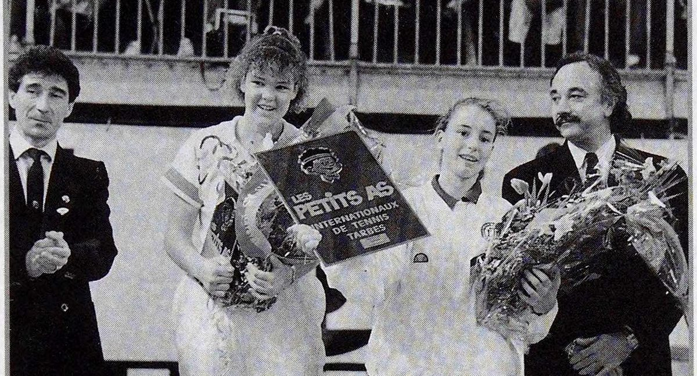
Năm chìa khóa để thiết lập chiến lược thành công
Sau đây là năm chìa khóa giúp bạn thiết lập phong cách phù hợp với mình— tính cách, đặc điểm thể chất, vũ khí, điểm yếu và kiểu chơi. Khi đọc về năm chìa khóa này, bạn sẽ thấy rằng chúng đều gắn bó chặt chẽ với nhau. Nếu bạn có thể kết hợp năm lĩnh vực này vào phong cách của mình, thì bạn sẽ không chỉ tiến được một bước lớn để trở thành người chơi giỏi nhất có thể mà còn có được niềm vui khi chơi trò chơi.
Tính cách Tôi đã giải thích chi tiết tại sao điều này lại quan trọng đến vậy. Tuy nhiên, bạn cần đánh giá một số điều cụ thể về tính cách của mình. Bạn có phải là người cực kỳ kiên nhẫn và thụ động trên sân và bạn có xu hướng ngại chấp nhận rủi ro không? Nếu bạn có những đặc điểm này, chúng là dấu hiệu rõ ràng cho thấy bạn nên áp dụng một phong cách khá bảo thủ, chẳng hạn như người phản đòn hoặc người chơi cơ bản. Ngược lại, nếu bạn thiếu kiên nhẫn, quá háo hức với những phần thưởng ngay lập tức và không thích tập trung trong thời gian dài, thì những đặc điểm tính cách này sẽ khiến bạn hướng tới phong cách hung hãn hơn, chẳng hạn như người chạy đường biên hung hãn hoặc người chạy lưới.
Lời nhắn gửi phụ huynh và huấn luyện viên
Hầu hết thời gian, phong cách và chiến lược trò chơi của người chơi trẻ sẽ phát triển một cách tự nhiên, miễn là họ không bị ép buộc vào một cách chơi cụ thể. Tuy nhiên, đôi khi người chơi tự nhốt mình vào một lối chơi cụ thể vì họ giành chiến thắng ở giai đoạn đầu. Đây có thể không phải là phong cách tốt nhất về lâu dài. Một yếu tố khác là chúng có thể cực kỳ nhỏ bé khi còn nhỏ, sau đó lớn lên thành một vận động viên lớn khi trưởng thành. Vì những yếu tố này, tôi khuyên bạn nên ghi nhớ ba điều sau:
I. Các cầu thủ trẻ, từ 8 đến 14 tuổi, nên học nền tảng kỹ thuật và chiến thuật tốt về mọi mặt của trận đấu để sau này không bị hạn chế nếu phong cách chơi hoặc chiến lược của họ thay đổi.
2. Điều quan trọng là phải biết và hiểu rõ các giai đoạn tăng trưởng và phát triển cơ bản của trẻ em, từ khi còn nhỏ cho đến sau tuổi dậy thì. Bằng cách này, bạn có thể đánh giá khả năng thể chất của trẻ ở một độ tuổi nhất định và trẻ có thể phát triển đến mức nào khi trưởng thành về mặt thể chất.
3. Nếu một cầu thủ nghiêm túc trong việc cải thiện, hãy giúp anh ta thiết lập tầm nhìn về cầu thủ đỉnh cao mà anh ta muốn trở thành và giữ nó nhất quán với tính cách của anh ta.
Đặc điểm thể chất
Những đặc điểm thể chất mà bạn sở hữu cũng nên được kết hợp và phát huy tối đa theo phong cách mà bạn phát triển. Nếu là người trưởng thành, chắc hẳn bạn đã biết chính xác những kỹ năng đó là gì. Điều này không dễ xác định đối với những cầu thủ trẻ, đầy tham vọng. Các đặc tính thể chất của chúng có thể thay đổi khi chúng trưởng thành. Điều này nhấn mạnh tầm quan trọng của việc học tất cả các kỹ năng cơ bản sớm để chúng không bị hạn chế trong tương lai. Một số yếu tố thể chất cần xem xét bao gồm chiều cao, cân nặng, tốc độ, sự nhanh nhẹn, khả năng phối hợp và sức mạnh cơ bắp.
Đặc điểm vật lý ảnh hưởng đến chiến lược bạn sử dụng. Giả sử bạn cao nhưng không nhanh nhẹn lắm. Bạn có thể muốn xem xét việc phát triển kiểu phong cách "đánh đầu tiên", trong đó bạn cố gắng kiểm soát điểm sớm trong cuộc giao bóng bằng cú giao bóng, trả giao bóng hoặc cú đánh đầu tiên của bạn.
Chiều cao của bạn có thể sẽ giúp bạn đánh có lực. Nếu bạn có thể kiểm soát điểm sớm, đối thủ sẽ không thể đuổi bạn tới lui trên sân, điều này sẽ giảm thiểu sự thiếu tốc độ và sự nhanh nhạy của bạn. Mặt khác, nếu bạn thấp và di chuyển tốt nhưng không có nhiều sức mạnh, bạn có thể phát triển những cú đánh và chuyền bóng ổn định. Ngoài ra, hãy rèn luyện để nâng cao kỹ năng phòng thủ của bạn. Bằng cách này, bạn có thể làm nổi bật chuyển động của mình, chơi ổn định và chống lại những người chơi to lớn hơn, mạnh mẽ hơn một cách hiệu quả.
Vũ khí
Hầu hết người chơi đều phát triển vũ khí một cách tự nhiên ngay từ khi còn trẻ. Đầu tiên, hãy biết điểm mạnh của bạn là gì. Nhiều cầu thủ tự lừa dối mình khi tin rằng họ có cú vô lê tốt hơn hoặc cú thuận tay mạnh hơn thực tế. Tham khảo ý kiến của trưởng nhóm phát triển (DTL) để giúp bạn xác định điểm mạnh của mình; mục tiêu của bạn là tích hợp những vũ khí đó với phong cách chơi của bạn. Phong cách của bạn nên tối đa hóa việc sử dụng những vũ khí đó, chẳng hạn như chạy vòng quanh trái tay để đánh cú thuận tay mạnh mẽ của bạn thường xuyên nhất có thể hoặc phát triển tính nhất quán trên mặt đất để tận dụng tốc độ của bạn.
Điểm yếu
Cũng như việc bạn nên phát huy tối đa điểm mạnh của mình thì bạn cũng nên giảm thiểu điểm yếu của mình. Phong cách chơi đúng sẽ khiến đối thủ khó khai thác được điểm yếu của bạn. Ví dụ, Lindsay Davenport không phải là một trong những người dẫn đầu tốt nhất trong giải đấu dành cho nữ (mặc dù tôi thực sự không thể gọi đó là điểm yếu). Tuy nhiên, trong hầu hết các trận đấu của cô, sự di chuyển của cô không phải là một yếu tố quan trọng vì chiến lược cơ bản của cô là giành quyền kiểm soát điểm bằng sức mạnh ngay từ quả bóng đầu tiên. Bằng cách ra lệnh cho đối thủ của mình, Lindsay đã gây khó khăn cho việc bắt cô ấy bỏ chạy.
Các mô thức thi đấu
Phong cách phù hợp cho trò chơi của bạn phải thiết lập các kiểu chơi cụ thể giúp bạn dễ dàng giành được điểm hơn. Điều này gắn liền với hai chìa khóa cuối cùng để tối đa hóa điểm mạnh và giảm thiểu điểm yếu của bạn. Bạn muốn buộc đối thủ sử dụng vũ khí của mình và ngăn cô ấy tìm ra điểm yếu của bạn trên sân. Ví dụ, nếu bạn có cú thuận tay to và cú trái tay yếu, hãy tìm cách chạy vòng quanh trái tay của bạn và đánh một cú thuận tay từ trong ra ngoài. Điều đó cho phép bạn đánh cú đánh tốt nhất của mình, đặt bạn trên sân để khiến đối thủ khó tìm thấy trái tay của bạn hơn và buộc đối thủ phải đánh trả theo sức mạnh của bạn.
Các phong cách thi đấu cơ bản
Có bốn phong cách chơi tạo thành chiến lược chính cho tất cả người chơi. Tìm hiểu về những phong cách này hoàn thành được ba điều quan trọng.
Tất nhiên, đầu tiên là phải hiểu những phong cách đó là gì. Thứ hai, nó sẽ cho phép bạn xác định phong cách tốt nhất cho mình hoặc xác nhận rằng trên thực tế bạn đang chơi đúng phong cách. Và thứ ba, nó sẽ giúp bạn nhận ra các phong cách khác nhau mà đối thủ của bạn sẽ chơi để bạn có thể hiểu cách khắc chế họ.
Đối với mỗi phong cách chơi, tôi sẽ mô tả ngắn gọn về lối chơi điển hình và các mẫu kỹ năng mà phong cách chơi đó yêu cầu. Tôi cũng sẽ liệt kê các chìa khóa để
Một vài năm trước tại giải Mỹ mở rộng, Brad Gilbert và tôi đã đi ra sân sau để xem một trận đấu cấp cơ sở có sự tham gia của một trong những cầu thủ trẻ hàng đầu của Hoa Kỳ. Anh ấy đang thi đấu với một cầu thủ trẻ người Úc. Brad muốn xem người Mỹ có triển vọng như thế nào. Anh ta to lớn và khỏe mạnh, sở hữu những cú giao bóng mạnh mẽ và chơi một trò chơi tấn công mạnh mẽ. Tuy nhiên, sau vài ván đấu đầu tiên, Brad và tôi bắt đầu nhận thấy cầu thủ trẻ người Úc này là một tay phản công xuất sắc như thế nào. Anh ta rất nhanh, ít mắc lỗi và dường như có câu trả lời cho mọi điều mà người Mỹ đánh vào anh ta.
Brad quay sang tôi và nói: "Anh chàng của chúng tôi rất tốt, nhưng tôi thực sự thích cậu bé người Úc này.
Anh ấy là một tay chơi! Thông minh, nhanh nhẹn, vận động viên giỏi, thi đấu tốt, không có vũ khí lớn nhưng anh ấy có thể phát triển những thứ đó.” Tôi nói, “Tôi không thể đồng ý hơn. Cậu bé này có phong cách phản đòn tuyệt vời, và nếu cậu ấy phát triển thêm một chút sức mạnh và trở thành một cầu thủ chơi toàn sân, cậu ấy sẽ là một cầu thủ xuất sắc.” Chúng tôi bỏ đi sau khi tay vợt người Úc thắng set đầu tiên và Brad nhắc lại: "Đứa trẻ đó sẽ trở thành một tay chơi!" Chà, cả hai chúng tôi đều đúng, nhưng không ai trong chúng tôi có thể ngờ rằng anh ấy lại tiến bộ nhanh đến vậy. Bạn thấy đấy, ba năm rưỡi sau, tay vợt trẻ người Úc Lleyton Hewitt đã vô địch giải Mỹ mở rộng 2001 đơn nam và sau đó là chức vô địch Wimbledon 2002, bằng cách sử dụng sự kết hợp giữa đòn phản công xuất sắc với sự xen kẽ tinh tế của lối chơi toàn sân, để trở thành tay vợt xếp hạng số một trẻ nhất trong môn thể thao hiện đại.
Lleyton Hewitt đã cho thấy _ dấu hiệu của sự vĩ đại ngay cả khi
thành công cho từng phong cách. Bằng cách đó, bạn có thể xác định phong cách hiện tại của mình là gì, đánh giá xem nó có phù hợp nhất với mình hay không và xác định các thành phần chính cần thiết để thực hiện thành công phong cách trò chơi cá nhân của bạn.
Bốn phong cách trò chơi chính là phản công, tấn công cơ bản, cầu thủ toàn sân và tấn công lưới. (Tôi gọi phong cách chơi cuối cùng này là "Net Rusher"
thay vì "giao bóng và vô lê", như người ta thường gọi, bởi vì thuật ngữ "máy đẩy lưới" mô tả đầy đủ hơn về một cầu thủ liên tục tấn công lưới. Mặc dù có thể có vô số biến thể trong bốn loại rộng này, nhưng hầu hết tất cả người chơi đều thuộc một trong số chúng. Bởi vì bạn nên phát triển một phong cách chơi phù hợp và tận dụng tốt nhất các đặc điểm cá nhân của mình, phong cách và chiến lược của bạn sẽ là duy nhất. Trên thực tế, không có hai người chơi nào giống hệt nhau.
Kẻ phản đòn
Những người phản công về cơ bản là những người chơi phòng thủ cơ bản phản ứng với những cú đánh của đối thủ. Những người chơi sử dụng phong cách chơi này thường cho phép đối thủ của họ ra lệnh chơi và sau đó họ phản công. Những người phản đòn thường sẽ chơi lùi về phía sau sân hơn những người chơi tấn công theo đường biên, thường ở xa đường biên cuối sân và thường đánh những cú đánh trên mặt đất với độ hở lưới cao hơn và độ xoáy cao hơn. Trọng tâm của họ là chiều sâu, tính nhất quán, khả năng kiểm soát và thu hồi mọi quả bóng. Những cầu thủ như vậy thường có những đường chuyền chính xác, những cú lốp bóng khéo léo và có hiệu quả trong việc vô hiệu hóa sức mạnh cũng như lối chơi tấn công của đối thủ.
Những kẻ phản đòn thường bị chê bai vì bị gọi là "kẻ đẩy". Nhưng ở cấp độ chơi cao nhất, đó là một chiến lược hiệu quả dành cho những người chơi có tốc độ, sức bền, trình độ sân đất nện và thiếu vũ khí lớn. Tuy nhiên, kiểu người chơi này thường thấy nhất ở quần vợt trẻ em hoặc quần vợt giải trí dành cho người lớn. Ngày nay, rất ít người chơi đẳng cấp thế giới sử dụng phong cách phản đòn thực sự làm chiến lược chính của họ. Lý do là vì các tay vợt chuyên nghiệp thường xuyên tung ra những cú đánh mạnh đến mức nếu một đấu thủ luôn chờ đợi để phản công, anh ta có thể bị đánh ngay khỏi sân. Tuy nhiên, tất cả người chơi ở cấp độ chuyên nghiệp đều có thể sử dụng chiến thuật phản đòn nếu cần thiết trong trận đấu. Ví dụ về những tay phản công thành công trong thi đấu chuyên nghiệp là Sanchez-Vicario và Conchita Martinez của Tây Ban Nha.
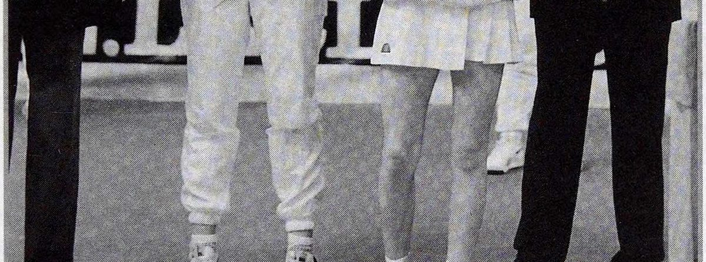
Tính cách
Người phản đòn phải có tinh thần vững vàng. Những tay phản đòn thành công phải có thái độ “không bao giờ bỏ cuộc”, sẵn sàng đứng trên sân miễn là cần thiết để giành được một điểm và thắng trận. Họ cũng phải có sự kiên nhẫn. Dựa vào tính nhất quán, những người phản đòn sẽ hiếm khi ép buộc vấn đề trong một cuộc biểu tình trừ khi được đưa ra một cú bỏ bóng dễ dàng.
Những kẻ phản đòn cũng thận trọng và thường không chấp nhận rủi ro. Đối với những người phản công, phần thưởng của việc chấp nhận rủi ro nhiều hơn mức tối thiểu sẽ không lớn bằng việc chơi an toàn.
Arantxa Sanchez-Vicario _ điển hình cho lối phản đòn - Phong cách.
Đặc điểm thể chất
Những kẻ phản công có thể lực cao và liên tục giành chiến thắng trong các trận đấu nhờ áp đảo đối thủ. Tuy nhiên, việc chạy xuống ở mỗi cú đánh cuối cùng sẽ gây ra hậu quả, vì vậy những người phản công cần phải có sức chịu đựng hiếu khí tuyệt vời, cũng như khả năng kỵ khí tốt để có tốc độ thực hiện các cú đánh. Người phản công thành công cũng có động tác di chuyển tốt. Nếu bạn thiếu tốc độ, phản ứng chậm hoặc động tác bằng chân kém khi cố gắng bao vây sân thì trò chơi phản đòn là phong cách sai lầm dành cho bạn.
Để thực hiện thành công phong cách phản đòn, bạn cần có những cú đánh mặt đất ổn định và kiểm soát bóng tốt, đó là những nền tảng của trò chơi phản đòn. Những người phản đòn phải có những đường chuyền xuất sắc, những đường lốp bóng tấn công và phòng thủ tốt, đồng thời phải giỏi
cao thủ đang bỏ chạy vì chạy bóng xuống và không thể thực hiện một cú sút tốt là không tốt.
Chiến thuật
Để thành công về mặt chiến thuật, những người phản công phải hiểu và thực hiện lựa chọn cú đánh có tỷ lệ phần trăm cao. Họ sẽ cần những mẫu trung hòa tốt. Ví dụ, khi đối thủ thực hiện một cú đánh hung hãn ở đường dưới, người phản công sẽ đáp trả bằng một cú đánh chéo bàn sâu, giật, rất khó tấn công. Họ cũng cần khả năng di chuyển quả bóng xung quanh và giữ nó cách xa vũ khí của đối thủ và khai thác điểm yếu của người chơi. Cuối cùng, chiến thuật phòng thủ tốt có thể giúp những kẻ phản công thoát khỏi rắc rối như khả năng tung ra một cú lốp bóng phòng thủ tốt khi đang chạy chết.
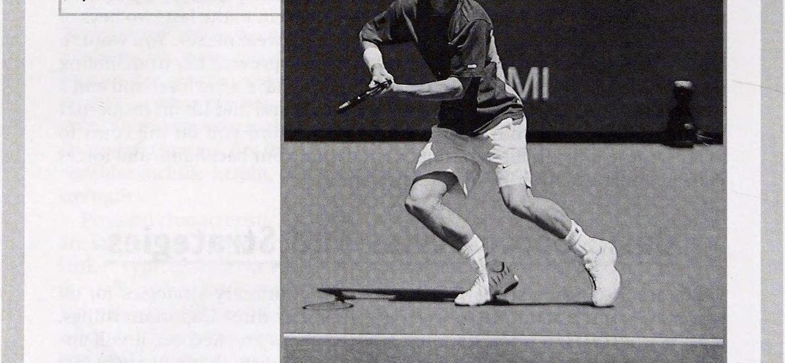
Các mô thức thi đấu then chốt
Đây là những mẫu mà những tay đấm giỏi phải sở hữu:
e Đường chuyền chéo sân có tỷ lệ phần trăm cao cơ bản e Đường chuyền hai cú: bóng đầu tiên dọc bàn, đường chuyền thứ hai e Đường chéo sân, sau đó đổi hướng dọc theo đường biên e Mở sân theo các góc, sau đó đánh sang phần sân mở
Người đánh gốc hung hãn Những người đánh gốc hung hãn cũng dựa vào cú đánh chạm đất của họ, nhưng họ chơi gần hoặc trước đường cuối sân và chọn quyết định lối chơi bằng những cú đánh mạnh mẽ, hung hãn của mình. Thông thường, những người chơi cơ bản hung hãn có ít nhất một vũ khí thực sự trên mặt đất. Thông thường, cú đánh đó là một cú thuận tay lớn, nhưng nhiều người chơi cơ bản năng nổ có khả năng đánh trúng người chiến thắng ngay cả từ phía yếu hơn của họ. Những cầu thủ thành công với phong cách này thường cực kỳ nhanh nhẹn và hoạt bát. Chúng thường có hiệu quả trên mọi bề mặt và đặc biệt thành thạo trên sân có nhịp độ chậm đến trung bình. Thông thường, họ có khả năng trả giao bóng tốt và thường sử dụng các cú giao bóng của chính mình để dựng vũ khí lên khỏi mặt đất.
Rất dễ tìm thấy ví dụ về loại cầu thủ này ở cấp độ chuyên nghiệp, vì một số cầu thủ giỏi nhất hiện nay là những cầu thủ chạy đường biên năng nổ. Andre Agassi, Venus và Serena Williams, và Lindsay Davenport là những ví dụ điển hình của kiểu chơi này.
Tính cách
Những người đánh cơ bản hung hãn không ngại cố gắng đánh người chiến thắng. Kiểu người chơi này hung hãn và thà tự mình làm điều đó hơn là kiên nhẫn chờ đợi cơ hội tấn công.
Là một cầu thủ chủ động tấn công, Andre _ Agassi không ngừng hung hãn _ cả hai bên.
Đặc điểm thể chất
Những người chơi có nhiều kỹ năng thể chất và thể trạng đa dạng có thể trở thành những cầu thủ tấn công cơ bản thành công. Không giống như những kẻ phản công, những người mà việc thiếu các đặc tính thể chất gây ra một nhược điểm thực sự, những kẻ tấn công cơ bản hung hãn có thể cao hoặc thấp, chậm hoặc nhanh, dày hoặc gầy. Những người đánh cơ bản hung hãn thường có sức mạnh tuyệt vời trong các cú đánh trên mặt đất của họ. Phong cách này không nhất thiết yêu cầu người chơi phải nhanh nhẹn và linh hoạt—mặc dù nó có ích. Tuy nhiên, những người chơi này phải có khả năng bố trí ở vị trí thích hợp và giữ thăng bằng tốt để có thể thực hiện cú phát bóng của mình.
Để thực hiện thành công phong cách cơ bản tích cực, cầu thủ này cần phải có cú giao bóng tốt, âm thanh, mạnh mẽ và khả năng nhận bóng sớm để kiểm soát điểm. Họ cũng cần kiểm soát tốt và đa dạng các cú giao bóng để giúp thiết lập điểm sao cho họ có thể sử dụng các cú đánh tiếp đất của mình để kết thúc điểm.
Chiến thuật
Những người chơi chủ động tấn công cần biết cách sắp xếp điểm một cách chiến thuật để đánh trúng vũ khí lớn của mình. Điều này đòi hỏi họ phải sử dụng các cú giao bóng của mình một cách thông minh để thiết lập điểm cho vũ khí của mình cũng như thiết lập mô hình trả bóng quyết liệt, giúp họ kiểm soát điểm một cách nhanh chóng.
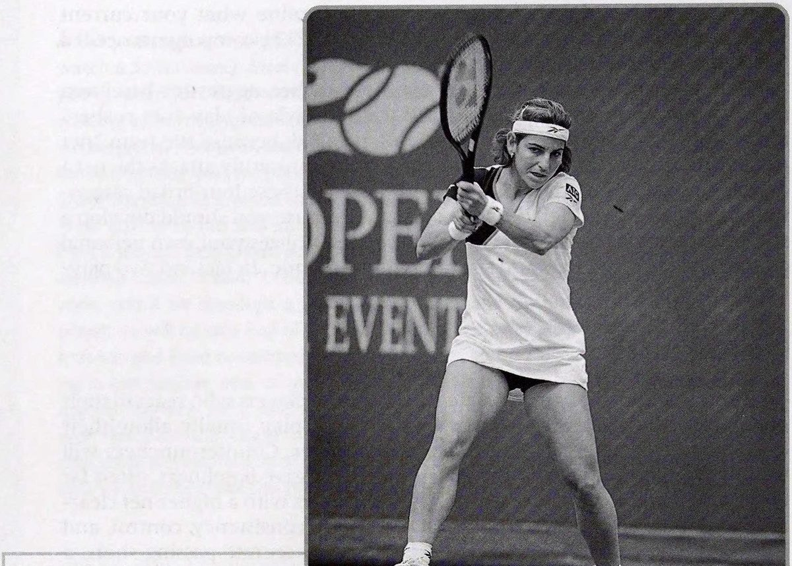
Các mô thức thi đấu then chốt
Sau đây là những mẫu mà một người đánh bóng chủ động cần phải có.
Giao bóng rộng ra hai bên để củng cố sức mạnh
e Giao bóng vào cơ thể ở hai bên, sau đó bước xung quanh để đánh vào vũ khí của họ
e Giao bóng cho người phát bóng bước xung quanh và đánh vũ khí của họ
e Từ trong ra ngoài, kiểu đột quỵ
e Thay đổi hướng từ chéo sân sang dọc biên
e Mở sân bằng cách đánh góc rồi đánh ra sân rộng
Cầu thủ toàn sân
Người chơi trên toàn sân có khả năng chơi mọi phong cách chơi. Chiến lược cụ thể mà họ sử dụng trong trận đấu tùy thuộc vào tình huống. Họ thường có thân hình lực lưỡng và khỏe mạnh. Những người chơi trên toàn sân có xu hướng dao động giữa các cú đánh tấn công và lối chơi trung hòa. Họ thường (nhưng không phải luôn luôn) không có một loại vũ khí rõ ràng nào, nhưng họ có khả năng sử dụng gần như tất cả các phần trong trò chơi của mình một cách tấn công để giành chiến thắng trong các trận đấu. Tuy nhiên, hãy nhớ rằng rất ít người chơi thực sự phù hợp với mô tả kỹ thuật này về một người chơi toàn sân.
Thông thường, một cầu thủ có sở thích rõ ràng là ở đường cuối sân hoặc trên lưới. Ví dụ về những người chơi trên toàn sân bao gồm Todd Martin và Martina Hingis.
Một vài năm trước, tôi đang ngồi trong trung tâm mua sắm trong nhà bên dưới Grand Hyatt ở Melbourne, Australia, ăn tối với một tay vợt trẻ người Mỹ Justin Gimelstob đang thi đấu ở giải Úc mở rộng. Sau vài phút, Martina Hingis – bạn của Justin và được xếp hạt giống đầu tiên ở giải đấu dành cho nữ – ngồi xuống và cùng chúng tôi trò chuyện nhẹ nhàng.
Cuộc thảo luận nhanh chóng chuyển sang trận đấu sắp tới và trận hòa của cô ấy. Thật thú vị khi nghe cô ấy giải thích cách cô ấy dự định chơi với từng người chơi nếu cô ấy thực sự thắng. Sự tự tin mà cô ấy có trong mọi khía cạnh của trận đấu đã trở thành tôi sẽ chơi ổn định và di chuyển cô ấy xung quanh,' "Chống lại rõ ràng." trò chơi toàn diện nhưng không áp đảo, Martina đã giành chiến thắng trong sự kiện năm đó khi cô ấy sử dụng trò chơi toàn sân của mình một cách hoàn hảo.
Cầu thủ toàn sân Martina Hingis cực kỳ thoải mái ở phần sân sau hoặc trên lưới.
Tính cách
Người chơi trên toàn sân là người giải quyết vấn đề. Họ thích suy nghĩ theo cách của họ thông qua các trận đấu. Họ xuất sắc trong việc phân tích đối thủ và tìm ra chiến thuật hiệu quả nhất. Những người chơi này không ngại điều chỉnh và thích nghi ở giữa trận đấu, thường là nhiều lần nếu cần thiết để giành chiến thắng. Những người chơi trên toàn sân cũng có xu hướng cảm thấy nhàm chán khi chơi một chiều. Giống như một nghệ sĩ, họ thích sử dụng tất cả tài năng của mình.
Đặc điểm thể chất
Không có đặc điểm rõ ràng nào áp dụng cho loại người chơi này. Tuy nhiên, những cầu thủ giỏi nhất trên toàn sân đều có thể trạng tốt nhất và đủ thể lực để có thể điều chỉnh và thích nghi theo yêu cầu của cuộc thi.
Một cầu thủ chơi toàn sân cần phải có lối chơi toàn diện—kỹ thuật và kỹ năng tốt ở cả sân sau và trên lưới để có thể chơi hiệu quả ở mọi khu vực trên sân. Họ cần phải kiểm soát bóng tốt để thao túng điểm số.
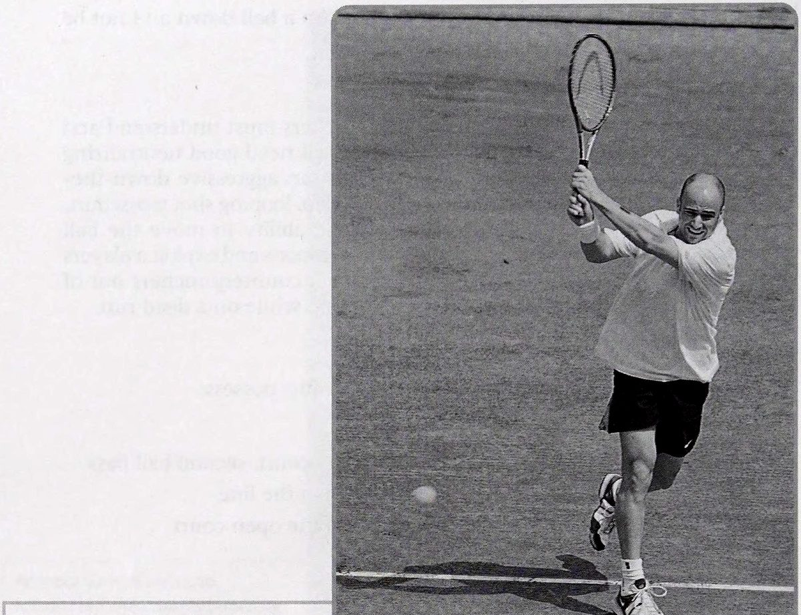
Chiến thuật
Người chơi trên toàn sân biết trận đấu đang diễn biến như thế nào về mặt chiến thuật để họ có thể điều chỉnh. Họ hiểu rõ về các kiểu chơi cơ bản từ mọi khu vực trên sân.
Các mô thức thi đấu then chốt
Người chơi trên toàn sân thực sự phải có khả năng hiểu và thực hiện ít nhất một số mẫu cơ bản từ mỗi giai đoạn của trò chơi.
e Các mẫu giao bóng và bóng chuyền cơ bản
- Các mẫu giao bóng và giữ lại cơ bản ngoài các cú giao bóng rộng, phát bóng và thân
e Các mô hình tiếp cận cơ bản: xuôi dòng, từ trong ra ngoài và ngược lại
e Các mô hình sân sau cơ bản: kéo chéo sân, đổi hướng chéo sân, từ trong ra ngoài và mở sân với các góc
Máy đẩy mạng
Những người lao vào lưới gây áp lực rất lớn lên đối thủ, tấn công vào lưới sau một cú đánh tiếp cận hoặc sau cú giao bóng của họ để đưa bóng đi bằng một cú vô lê. Cú giao bóng thường là một vũ khí, hoặc ít nhất là cực kỳ hiệu quả, trong việc khiến đối thủ mất thăng bằng. Những người lao lưới thường sở hữu những cú vô lê xuất sắc và sự hiểu biết về phạm vi phủ sóng cũng như vị trí của lưới. Họ cũng có xu hướng trở thành những vận động viên giỏi, có kỹ năng di chuyển để lên lưới nhanh và sự nhanh nhẹn, bùng nổ để che lưới cũng như bò lùi để lốp bóng. Điểm thường giành được một cách nhanh chóng, vì mục tiêu của họ là gây áp lực liên tục cho đối thủ bằng cách tấn công vào lưới.
Những cầu thủ tiêu biểu cho kiểu chơi này bao gồm Greg Rusedski và Pete Sampras (những người gần đây đã phát triển thành một vận động viên giao bóng và vô lê nhiều hơn so với thời kỳ đầu trong sự nghiệp của mình). Hiện tại không có nhiều người lao vào lưới trong giải đấu dành cho nữ—Jana Novotna và Martina Navratilova là những người cuối cùng và giỏi nhất chơi theo phong cách này.
Tính cách
Những người tung lưới có tính cách hung hãn trên sân. Họ muốn kiểm soát điểm càng sớm càng tốt và kết thúc điểm bằng một cú sút.
Họ cũng là những người chấp nhận rủi ro. Đẩy lưới vốn là một chiến lược có độ rủi ro cao, thưởng cho những người chơi hung hãn và trừng phạt những người chơi dè dặt. Máy kéo lưới có cường độ và sự tập trung cao trong thời gian ngắn. Họ không thích chơi những điểm dài và phải cẩn thận để trở nên thiếu kiên nhẫn và đến không đúng lúc.
Đặc điểm thể chất
Thể thao là yếu tố quan trọng đối với thành công của vận động viên ném lưới. Tốc độ, sự nhanh nhẹn và thể lực tổng thể của họ càng tốt thì họ sẽ càng hiệu quả hơn trong phong cách chơi này.
Người tung lưới Greg Rusedski _ tấn công lưới bất cứ khi nào có thể.
Sức mạnh kỵ khí tuyệt vời cho phép những người lao vào lưới chạy nhanh vào lưới, lao vào tìm bóng và phục hồi nhanh chóng. Mặc dù không phải là yêu cầu tuyệt đối nhưng chiều cao mang lại lợi thế cho người lao lưới khi giao bóng. Những sải chân dài giúp họ vào lưới nhanh chóng và tầm sải dài giúp họ che lưới hiệu quả hơn.
Những người lao vào lưới cần phải sở hữu những cú giao bóng, khả năng kiểm soát, sự đa dạng, khả năng ngụy trang và sức mạnh tuyệt vời để giao bóng và vô lê. Rõ ràng họ cần phải có sự phối hợp tay-mắt tốt, kỹ thuật và kỹ năng trên lưới xuất sắc và lối chơi chuyển tiếp hiệu quả như cách tiếp cận lát cắt tốt. Có thể lùi lại để che bóng và đưa bóng đi bằng một cú đập bóng là điều cần thiết.
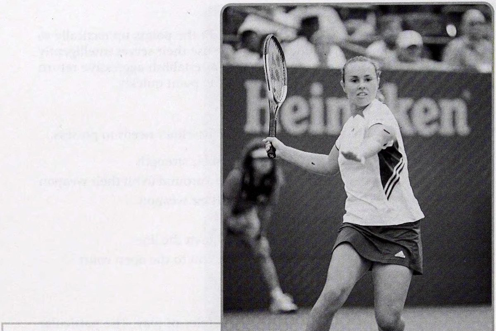
Chiến thuật
Người lao lưới giỏi có nhận thức tốt để nhận ra cơ hội tấn công lưới và khi nào việc mạo hiểm là không khôn ngoan. Họ biết loại nào
cú đánh tốt nhất là tiến về phía sau và đánh như thế nào. Một chiến thuật chính của những người lao vào lưới là chip và lao vào quả giao bóng thứ hai của đối phương. Nó có thể là quả bóng ngắn nhất mà họ nhìn thấy trên sân. Một bí mật ít được biết đến về những người lao lưới giỏi là họ hầu như luôn chơi những cú vô lê có tỷ lệ bóng cao. Họ chỉ đơn giản là lấy những gì đối thủ đưa cho họ, chơi cú vô lê có tỷ lệ phần trăm cao để ấn định chiến thắng ở lượt đánh thứ hai.
Các mô thức thi đấu then chốt
Dưới đây là một số mẫu bắt buộc phải có đối với người tung lưới.
e Giao bóng rộng rãi ở hai bên và biết các lựa chọn từ ba cú trả bóng cơ bản.
e Đưa vào cơ thể ở hai bên. Biết các lựa chọn của bạn.
e Giao bóng tới điểm phát bóng trên deuce và ad.
e Tiếp cận dọc theo dòng.
e Tiếp cận từ giữa sân, từ trong ra ngoài.
e Tiếp cận lối về, xuôi dòng.
Khi bạn đã xác định hoặc bắt đầu phát triển phong cách chơi chính của mình, bước tiếp theo là phát triển chiến lược, mô hình, chiến thuật và vũ khí cần thiết để thực hiện phong cách chơi cụ thể đó. Điều chỉnh cách tập luyện của bạn và lựa chọn các bài tập thích hợp được thiết kế đặc biệt để cải thiện một phong cách chơi cụ thể là chìa khóa để tối đa hóa thời gian của bạn trên sân. Đây là nơi huấn luyện viên có thể giúp thiết kế một thói quen luyện tập hiệu quả. Tôi sẽ giải quyết vấn đề này sâu hơn ở chương 6.
Khắc chế phong cách của đối thủ
Phong cách chơi của bạn phải phát huy tối đa điểm mạnh và giảm thiểu điểm yếu của bạn. Mục tiêu số một của bạn là áp đặt chiến lược cơ bản của bạn lên đối thủ. Nhưng bạn cũng phải có khả năng nhận ra phong cách chơi của đối thủ và thực hiện những điều chỉnh chiến thuật tinh tế để bộc lộ những khía cạnh dễ bị tổn thương trong trò chơi của đối thủ. Mặc dù chiến lược cơ bản của bạn có thể giữ nguyên nhưng chiến thuật hiệu quả nhất đối với người chơi này có thể không hiệu quả với người chơi khác. Do đó, điều quan trọng là bạn phải có một số hướng dẫn chiến thuật chung khi xử lý các phong cách chơi cụ thể. Tôi đã phác thảo một số nguyên tắc chiến thuật quan trọng có thể được sử dụng để chống lại bốn phong cách chơi khác nhau.
Phản công
1. Tập trung vào việc dứt điểm và mong đợi thực hiện thêm những cú sút để hoàn thành mục tiêu này.
2. Hãy kiên nhẫn. Chơi các mẫu và chờ đợi một cơ hội. Đừng tìm kiếm người chiến thắng hoàn toàn quá sớm.
Tấn công bất cứ khi nào có cơ hội tốt.
4. Khi bạn ở ngoài vị trí, đừng đánh quá mạnh mà hãy đánh một cú vô hiệu hóa, vì đối thủ của bạn khó có thể tận dụng được vị trí dễ bị tổn thương của bạn.
5. Thường xuyên đánh vào phía sau đối thủ để chống lại tốc độ của họ.
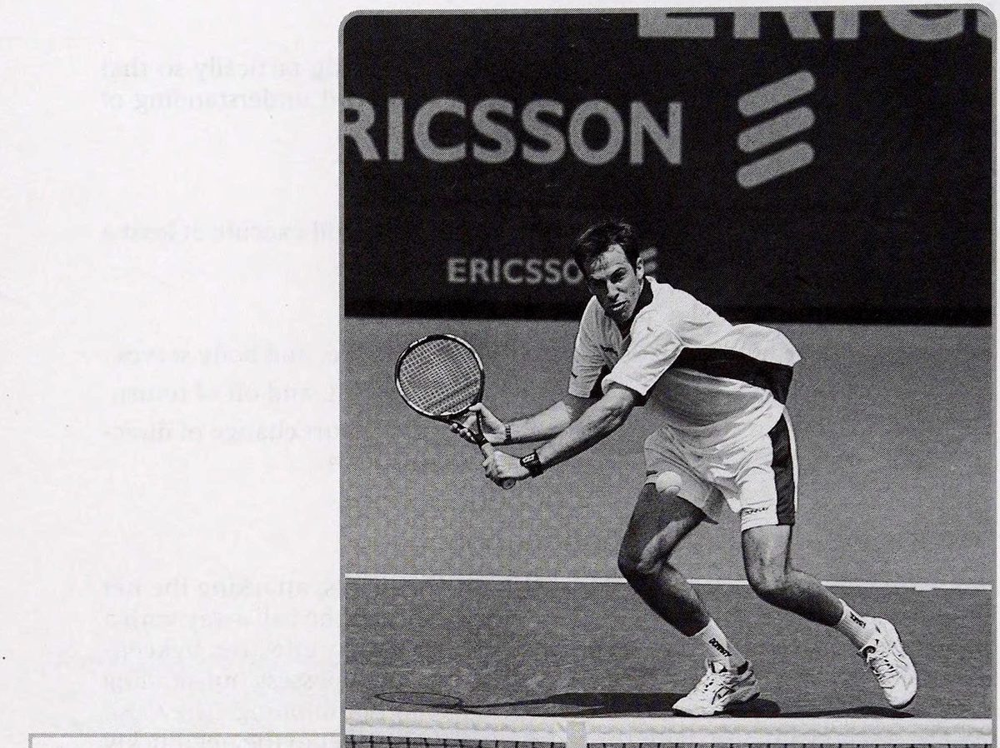
Khắc chế lối đánh cuối sân tấn công
1. Cố gắng đưa ra quan điểm ngay từ đầu, trái ngược với việc phản ứng lại đối thủ của bạn. Hãy tập trung vào việc tạo ra bức ảnh đầu tiên có chất lượng.
2. Thỉnh thoảng đánh rộng vào điểm mạnh của đối thủ để khiến anh ta mất cảnh giác rồi chơi lại điểm yếu của họ.
3. Thay đổi tốc độ và vị trí giao bóng của bạn để khiến đối thủ mất nhịp. Ví dụ, giao bóng vào cơ thể đối thủ thường xuyên hơn.
4. Giữ bóng ra khỏi "vùng quyền lực" của đối phương. Thay đổi tốc độ các cú đánh của bạn và sử dụng một lát cắt nếu thích hợp.
Khắc chế người chơi toàn sân
1. Bởi vì những người chơi toàn sân thường không có vũ khí chiếm ưu thế, hãy tận dụng cơ hội này để chơi với những mẫu phát huy thế mạnh của bạn.
2. Hãy chuẩn bị cho việc đối thủ của bạn có thể thay đổi chiến thuật nhiều lần nếu họ thua trận. Thực hiện các điều chỉnh chiến thuật rõ ràng nằm trong chiến lược cơ bản của bạn.
3. Cố gắng kiểm soát điểm ngay từ đầu, điều này sẽ hạn chế khả năng chơi trò chơi của đối thủ.
Khắc chế người lên lưới
1. Cố gắng thực hiện càng nhiều cú giao bóng đầu tiên trong trận đấu càng tốt.
2. Đặt quả trả bóng của bạn xuống chân đối thủ.
3. Sử dụng một cú lốp bóng tấn công, đặc biệt là vào đầu trận đấu, để khiến đối thủ của bạn không thể chạm tới lưới.
4. Tập trung vào việc thực hiện hai đường chuyền. Đưa bóng xuống thấp ở đường chuyền đầu tiên và sau đó đánh vào đối thủ ở đường chuyền thứ hai.
5. Tập trung vào việc thực hiện cú chuyền bóng và tránh xu hướng lao vào phạm lỗi.
6. Hãy cân nhắc việc vào lưới thường xuyên hơn bình thường để lấy lưới của đối thủ.
7. Tấn công và khai thác quả giao bóng thứ hai của đối thủ.
Rất nhiều thông tin được trình bày trong chương này, nhưng đừng để điều đó làm bạn xao lãng khỏi vấn đề cơ bản. Phát triển một phong cách và chiến lược phù hợp với tính cách của bạn. Trong bối cảnh này, bạn có thể nâng cao hiểu biết về những gì bạn cần làm để tối đa hóa trò chơi của mình. Nếu bạn làm được điều này thì đó sẽ là một bước tiến lớn để trở thành người chơi giỏi nhất có thể. Điều này cũng liên quan đến chiến thuật mà tôi sẽ thảo luận trong chương tiếp theo.
Chương 3: Tùy chỉnh chiến thuật
Trong sức nóng của trận chiến, hãy đi đúng hướng bằng cách tập trung vào các cú đánh và điều chỉnh chiến thuật để củng cố chiến lược trận đấu tổng thể của bạn.
Chiến thuật là những điều chỉnh, thao tác, các cú đánh cụ thể và sự kết hợp các cú đánh mà bạn sử dụng trong quá trình diễn ra một điểm hoặc một trận đấu. Những điều chỉnh này được thực hiện để mang lại cho bạn lợi thế hơn đối thủ, để vô hiệu hóa hoặc chống lại chiến lược của anh ta hoặc để điều chỉnh theo điều kiện môi trường. Tuy nhiên, có nhiều điều cần cân nhắc khi bạn tiếp cận chiến thuật.
Đó. là những chiến thuật chung áp dụng cho tất cả người chơi, chẳng hạn như đánh một cú sút chéo sân vào phần thấp của lưới hoặc giao bóng vào điểm yếu của đối thủ. Tôi gọi đây là “chiến thuật chung”, về cơ bản áp dụng cho tất cả người chơi.
Nhưng mỗi người đều có phong cách và chiến lược chơi khác nhau, do đó, chiến thuật phù hợp với một người chơi có thể không nhất thiết là chiến thuật phù hợp với bạn.
Do đó, những điều chỉnh cụ thể mà bạn nên thực hiện trên sân nhằm làm nổi bật điểm mạnh và giảm thiểu điểm yếu của mình là điều mà tôi gọi là "chiến thuật cá nhân". Ví dụ, một động thái chiến thuật phổ biến đối với các điểm quan trọng là đạt được tỷ lệ giao bóng đầu tiên cao. Tuy nhiên, bạn có bảo Pete Sampras đừng đánh một cú ace ở giữa sân ở điểm break point hay bảo Venus Williams đừng đánh những cú vô lê thuận tay từ giữa sân vì chúng có tỷ lệ đánh bóng thấp? Tất nhiên là bạn sẽ không làm thế.
bao gồm Andre Agassi và Monica Seles
Bạn có thể có kỹ thuật tuyệt vời nhất trên thế giới nhưng nếu bạn không hiểu chiến thuật và lựa chọn cú đánh, bạn sẽ không thường xuyên nằm trong vòng chiến thắng. Điều này đúng
Tiger Woods có kỹ năng kỹ thuật vượt trội, nhưng nhiều tay golf hàng đầu khác cũng vậy. Điều khiến anh ấy nổi bật so với những người còn lại là anh ấy hiểu rõ trò chơi của mình đến mức anh ấy biết chính xác mình có thể thực hiện cú đánh nào vào mọi thời điểm và đưa ra lựa chọn đúng đắn khi giải đấu đang diễn ra. Andre Agassi cũng vậy. Anh ấy là một trong những tiền đạo cầm bóng vĩ đại nhất từng thi đấu, nhưng hầu hết mọi người không nhận ra rằng kỹ năng chiến thuật của anh ấy cũng tốt như những cú đánh của anh ấy!
Anh ấy chơi phong cách tấn công mạnh mẽ đến mức hoàn hảo, chọn những cú đánh có tỷ lệ phần trăm cao, tấn công cho đến khi có được bóng để tấn công. Đó là lý do tại sao tôi tin rằng chương này rất quan trọng. Nó sẽ giúp bạn tập trung vào việc thực hiện các động thái chiến thuật chính xác có lợi cho bạn vào những thời điểm quan trọng. Vì vậy, hãy dành thời gian đọc chương này một cách cẩn thận, áp dụng các nguyên tắc của nó và tôi đảm bảo với bạn rằng thời gian đó sẽ được sử dụng hiệu quả.
rồi
Hãy xem xét hai nguyên tắc chung này khi bạn nghĩ về chiến thuật:
e Quy tắc 1. Bạn nên thực hiện các điều chỉnh chiến thuật trong bối cảnh chiến lược cá nhân của riêng bạn. Nói cách khác, bạn phải luôn tìm cách làm nổi bật điểm mạnh và giảm thiểu điểm yếu của mình.
e Quy tắc 2. Tránh điểm mạnh của đối thủ và tấn công điểm yếu của cô ấy. Nếu bạn có bất kỳ câu hỏi nào về quy tắc 2 trong trận đấu, hãy tham khảo quy tắc 1.
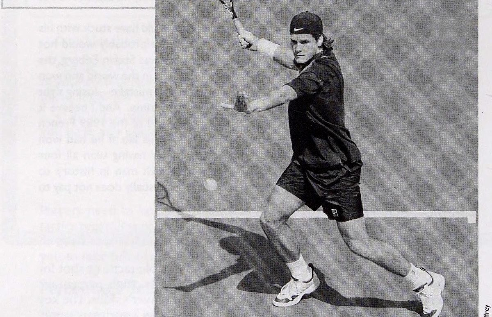
Chiến thuật chung
Người chơi cần biết và thực hiện tỷ lệ chơi, kiểu chơi và chiến thuật cơ bản bất kể phong cách chơi riêng của họ. Đây là nền tảng của quần vợt tốt. Hiểu và nắm vững các chiến thuật chung này cho phép bạn tận dụng tối đa phong cách chơi của riêng mình.
Tỷ lệ quần vợt
Mục tiêu chung trong quần vợt có tỷ lệ cao là mắc ít lỗi hơn trong khi buộc đối thủ của bạn mắc nhiều lỗi hơn. Bạn có thể thực hiện điều này thông qua việc lựa chọn cảnh quay âm thanh và các mẫu có tỷ lệ phần trăm cao nhằm tối đa hóa điểm mạnh và giảm thiểu điểm yếu của bạn.
Vào mùa thu năm 1983,1 27 tuổi và đã thi đấu trong giải đấu được bảy năm. Ở vòng đầu tiên của chuyến lưu diễn ở Nancy, Pháp, tôi được xếp vào vai đàn em hàng đầu thế giới. Tuần trước, anh ấy đã vô địch giải đấu vệ tinh của Đức (một loạt các giải đấu chuyên nghiệp cấp độ đầu vào mà các cầu thủ trẻ sử dụng để giành quyền tham gia giải đấu chuyên nghiệp lớn). Những người trong phòng thay đồ đã kể cho tôi nghe về cầu thủ trẻ này, người đang gây chấn động trong thế giới quần vợt. "Siêu tài năng", họ nói. "Anh ấy chơi như thế nào?" Tôi hỏi. Họ nói với tôi rằng anh ấy có một cú trái tay xuất sắc, một cú giao bóng rất tốt và một pha vào lưới tuyệt vời. Anh ấy tấn công lưới không ngừng nghỉ.
Chà, tôi là một người kỳ cựu trong giải đấu và tôi biết mình sẽ chơi như thế nào. sẽ giao bóng và tung cú vô lê và tấn công vào lưới.
Khi chúng tôi ra sân thi đấu, đối thủ của tôi đã thắng và được chọn giao bóng. Ở điểm đầu tiên, anh ấy giao bóng và đi vào lưới sau đó. Tôi chặn cú trả bóng, anh ta tung cú vô lê ra phần sân rộng mở, và tôi lao xuống và đánh trúng người chiến thắng. Ở điểm thứ hai, anh ấy giao bóng và tung cú vô lê, và tôi đánh trúng một người chiến thắng khác. nhiều điểm hơn mang lại kết quả tương tự. Tôi đã chơi một trò chơi đầu tiên không thể tin nổi và đã khiến anh ấy tan vỡ vì tình yêu.
Chúng tôi đổi phe, và tôi hành động như thể đây chỉ là một trò chơi thường ngày của tôi. Kể từ thời điểm đó, đối thủ của tôi ngừng giao bóng và vô lê trong phần còn lại của trận đấu.
Tôi đã đe dọa anh ta lùi lại và đi ngược lại chiến lược cơ bản của anh ta. Đây chính xác là điều tôi muốn làm vì nó cho tôi cơ hội tấn công lưới theo ý muốn. Kết quả là một trận thua. Tôi đánh bại anh ta với tỷ số 6–1, 6–2.
Sau trận đấu, tôi muốn nói với đối thủ của mình rằng lẽ ra anh ta nên giữ nguyên phong cách chơi của mình, nhưng tôi không biết anh ta, và bằng cách nào đó tôi biết anh ta có thể sẽ không mắc lại sai lầm đó nữa. Anh ấy đã không làm vậy. Đối thủ của tôi ngày hôm đó là Stefan Edberg, ngôi sao vĩ đại người Thụy Điển, người đã leo lên vị trí số một thế giới và giành được 7 danh hiệu Grand Slam đơn. Tôi đã thấy Edberg mắc sai lầm tương tự – đánh mất chiến lược của mình và ngừng tấn công vào lưới – chỉ một lần khác. Và tôi tin rằng điều đó đã khiến anh ấy phải trả giá bằng trận đấu. Đó là trận đấu với Michael Chang trong trận chung kết giải Pháp mở rộng 1989. Nó hóa ra là một trong những trận đấu lớn nhất trong cuộc đời anh ấy. Nếu vô địch Roland Garros ngày hôm đó, anh sẽ kết thúc sự nghiệp khi giành cả 4 danh hiệu Grand Slam. Điều đó có thể khiến anh ta trở thành người đàn ông thứ năm trong lịch sử đạt được thành tích đó. Tất nhiên, ý nghĩa của câu chuyện là bạn thường không được lợi nếu đi chệch khỏi chiến lược cơ bản của mình.
Tỷ lệ phần trăm quần vợt là một thuật ngữ tương đối. Một chiến thuật hoặc cú đánh an toàn và đáng tin cậy đối với một người chơi có thể là một lối chơi khó hoặc mạo hiểm đối với người khác. Do đó, việc lựa chọn cú đánh có tỷ lệ phần trăm cao sẽ thay đổi tùy theo kỹ năng của mỗi người chơi. Chìa khóa để chơi quần vợt theo tỷ lệ phần trăm là đảm bảo bạn biết trò chơi của riêng mình, biết điểm mạnh và điểm yếu của bạn là gì, đồng thời biết cách thiết lập điểm để chơi những cú đánh và kiểu chơi tốt nhất của bạn. Tuy nhiên, một số nguyên tắc cơ bản của quần vợt có tỷ lệ cược cao thường có thể áp dụng cho tất cả người chơi.
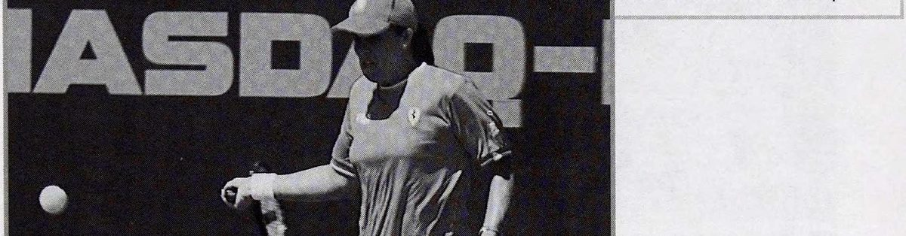
Bốn trụ cột chiến thuật
Bạn có thể không nhận ra điều đó, nhưng trong mỗi thời điểm bạn chơi, bạn đưa ra quyết định trong tích tắc để thực hiện một trong bốn loại cú đánh khác nhau: tấn công, xây dựng, trung lập hoặc phòng thủ. Cú đánh bạn chọn trong tích tắc đó sẽ giúp ích rất nhiều trong việc xác định xem bạn có chơi đúng điểm chiến thuật hay không.
Việc phân biệt giữa bốn loại ảnh khác nhau không phải lúc nào cũng dễ dàng.
Đôi khi nó được xác định bởi vị trí của bạn trên sân. Đôi khi nó được xác định bởi trình độ kỹ năng hoặc phong cách chơi cụ thể của bạn. Là hướng dẫn chung, đây là phần giải thích ngắn gọn về các cách đánh khác nhau và hướng dẫn về thời điểm thực hiện từng cú đánh.
e Tấn công—mục đích của một cú đánh tấn công là để giành điểm ngay lập tức hoặc làm tổn thương đối thủ của bạn, đặt anh ta vào thế phòng thủ và giúp bạn giành được điểm ở lượt đánh tiếp theo. Thời điểm thực hiện một cú đánh tấn công là khi bóng ở đúng vị trí bạn muốn, ở độ cao tốt và tốc độ thoải mái, đồng thời khi bạn ở vị trí sân hoàn hảo và giữ thăng bằng tốt để thực hiện cú đánh của mình.
Cú đánh tấn công—Ngôi sao trẻ người Đức Tommy Haas _ chuẩn bị thực hiện cú thuận tay _ từ bên trong đường cuối sân.
- Tòa nhà—Một tòa nhà, hoặc bố trí, cú đánh nhằm mục đích đưa bạn vào vị trí để kiểm soát điểm hoặc giành điểm trong vài lượt đánh tiếp theo. Thông thường, đây là cảnh quay đầu tiên theo một kiểu hoặc sự kết hợp các cảnh quay cụ thể. Độ cao của quả bóng có thể không vừa tầm với của bạn, chắc chắn là không đủ để phát bóng. Tuy nhiên, khi vị trí và tốc độ đánh của đối thủ không đặt bạn vào thế bấp bênh và bạn đang ở vị trí và thăng bằng để thực hiện cú đánh của mình đúng cách, bạn nên cân nhắc việc đánh một cú đánh xây dựng. Một ví dụ là khi đối thủ của bạn thực hiện một cú đánh vượt ra ngoài đường giao bóng nhưng không đủ sâu để khiến bạn lùi lại hoặc đủ rộng để khiến bạn phải bỏ chạy.
Cú sút xây dựng—Jennifer _ Capriati tung cú thuận tay mạnh mẽ để ghi điểm.
SS a SiS AS SSPE a Si
Cú đánh trung lập—Todd Martin đánh một cú đánh trái tay vô hiệu hóa.
e Trung lập—Sử dụng cú đánh trung lập khi bạn đang đáp trả cú đánh chất lượng của đối thủ. Bạn có thể đánh bóng với tốc độ, độ sâu hoặc vị trí tốt; và mặc dù nó không đặt bạn vào tình thế quá bấp bênh, nhưng thật khó để cố gắng thực hiện một cú đánh cưỡng bức của riêng bạn. Mục đích của bạn là chống lại cú đánh của đối thủ bằng một cú đánh có thể vô hiệu hóa lợi thế nhất thời của đối thủ. Giả sử đối thủ của bạn đánh một cú đánh sâu và mạnh về phía trái tay của bạn. Một cú đánh trung hòa sẽ là đánh một cú giật mặt đất xoáy lên sâu, giúp bạn có thời gian để phục hồi, hoặc một cú cắt trái tay, sẽ giữ bóng ở mức thấp và tránh khỏi cú đánh của đối thủ.
vùng.
- Phòng thủ—Sử dụng đòn phòng thủ khi bạn đang gặp khó khăn tuyệt vọng.
Đối thủ của bạn đã thực hiện một cú đánh với tốc độ, độ sâu hoặc vị trí cực kỳ tốt (hoặc tất cả những điều này kết hợp) và bạn đang gặp khó khăn chỉ để tiếp cận bóng hoặc xử lý cú đánh của đối phương. Mục đích của bạn ở đây là tìm cách giữ vững quan điểm. Một ví dụ về một cú đánh phòng thủ là thực hiện một cú lốp bóng cao khi đang ở trạng thái chết.
chạy.
Cú sút phòng thủ—Gustavo Kuerten thực hiện một cú sút phòng thủ để cố gắng giữ vững điểm.
Nguyên tắc tỷ lệ thành công cao
Bất kể phong cách chơi hay chiến lược trò chơi của bạn là gì, bạn cần hiểu một số nguyên tắc chung để chơi quần vợt có tỷ lệ phần trăm cao. Trong mỗi lần đánh, bạn phải tính đến tình hình trận đấu vào thời điểm đó.
Biết trò chơi cũng như điểm mạnh và điểm yếu của bạn.
Nhận biết các vị trí tấn công, trung lập và phòng thủ.
Giữ bóng trong cuộc.
Điều chỉnh theo điều kiện chơi.
Đánh vào các khu vực mục tiêu lớn trên sân.
Có được khoảng trống lưới tốt trong các cú đánh trên mặt đất của bạn.
Tạo độ xoáy cho bóng để tăng cường khả năng kiểm soát.
Giảm tốc độ bắn của bạn để kiểm soát tốt hơn khi cố gắng đánh vào một vị trí chính xác. Tốc độ cao hơn đồng nghĩa với việc kiểm soát ít hơn.
Đánh vào vùng mục tiêu lớn hơn khi bạn đánh bằng sức mạnh.
Đánh chéo sân, giúp bạn có khoảng cách xa nhất để đánh bóng vào sân từ góc này sang góc khác và phần thấp nhất của lưới để đánh qua (ba feet ở giữa lưới).
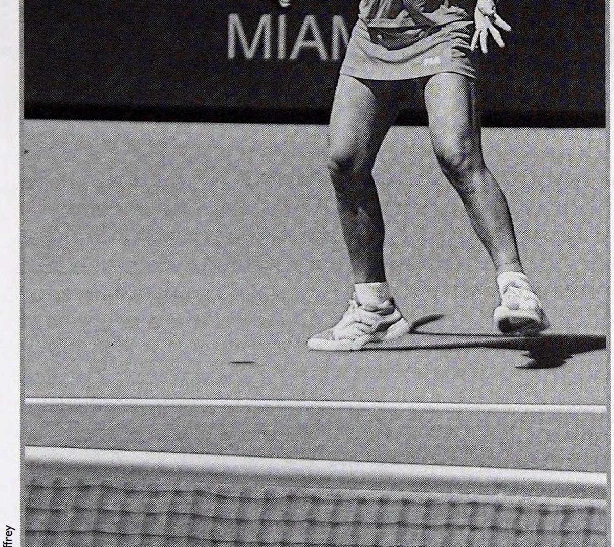
Thi đấu theo vùng sân
Đã bao nhiêu lần bạn thấy người chơi mắc những lỗi này trong trận đấu? Một quả bóng tiếp đất gần lưới và người chơi chạy về phía trước để lấy bóng, chỉ để đánh bóng vào giữa lưới hoặc đẩy bóng ra xa đường biên ngang 10 feet. Hoặc một quả bóng chạm đất cách vạch giao bóng hai feet, đập vào giữa sân và đấu thủ không tận dụng được cơ hội để thực hiện pha tấn công. Bạn nghĩ thế nào về việc chứng kiến một người chơi cố gắng đánh người chiến thắng bằng một quả bóng cách đường biên vài inch.
Cứ như thể những cầu thủ này không biết bóng đã rơi xuống phần sân của họ ở đâu và như thế nào. Những cú đánh họ chọn không phù hợp nếu xét đến vị trí của họ trên sân hoặc quá mạo hiểm hoặc khó khăn trong tình huống, và họ mất cơ hội kiểm soát điểm.
Những sai lầm này không chỉ giới hạn ở các cầu thủ câu lạc bộ. Hoàn toàn ngược lại. Nhiều chuyên gia trẻ hàng đầu cũng mắc phải những quyết định sai lầm tương tự. Để giúp bạn đưa ra quyết định tốt hơn trong việc lựa chọn cú đánh và nhận biết tốt hơn khi cơ hội xuất hiện—và không tự xuất hiện—tôi đã chia sân thành nhiều khu vực khác nhau (xem hình 3.1).
Khu xây dựng trung lập
- Khu vực xây dựng trung lập—Đây là khu vực cách đường cơ sở trong vòng từ 4 đến 5 feet. Bạn sẽ không đạt được nhiều người chiến thắng từ vị trí này. Bạn nên cố gắng vô hiệu hóa đối thủ hoặc đánh một cú đánh công trình để tạo ra phản ứng yếu nhằm vào vị trí tốt hơn (xem hình a2):
- Vùng chiều cao—Khu vực này bắt đầu từ một vài feet bên trong đường giao bóng và kéo dài đến tận lưới. Yếu tố số một ở đây là độ cao của quả bóng khi bạn chạm tới nó. Nếu bóng cao hơn lưới, bạn đang ở thế tấn công. Nếu bóng ở ngang hoặc chỉ thấp hơn một chút so với mặt lưới, bạn nên thực hiện cú đánh xây dựng, với mục đích tạo cơ hội để giành điểm ở lần đánh tiếp theo. Nếu bóng ở dưới mức lưới nhiều, bạn đang ở thế trung hòa. Cuối cùng, nếu bạn đang cố gắng giành lấy quả bóng thì bạn đang ở thế phòng thủ (xem hình 3.3).
Vùng chiều cao.
Hình 3.3 Khu xây dựng trung tính.
Hình 3.2
Lần tới khi bạn nhận được một quả bóng ngắn trên sân, hãy nhận ra rằng điều quan trọng nhất là độ cao của quả bóng khi bạn chạm được nó. Hãy sử dụng điều đó làm kim chỉ nam trong việc chọn kiểu đánh nào để đánh và bạn sẽ thấy mình hiếm khi chọn sai cú đánh.
- Trung tâm điều khiển—Đây là khu vực ngay giữa sân (xem hình 3.4). Ngược lại, nó bắt đầu ngay bên trong đường giao bóng và kéo dài về phía sau khoảng năm hoặc sáu feet tính từ đường cơ sở. Từ bên này sang bên kia, nó kéo dài khoảng 5 feet theo cả hai hướng tính từ đường dịch vụ trung tâm. Khi đối thủ của bạn đánh bóng vào khu vực này, bạn nên tìm cách giành quyền kiểm soát điểm nếu không giành được chiến thắng hoàn toàn. Rõ ràng, những gì bạn làm phụ thuộc vào độ cao và tốc độ cú đánh của đối thủ, nhưng một quả bóng rơi vào khu vực này nói chung là cơ hội để bạn đặt mình vào vị trí người điều khiển.
Vùng sáng tạo—Vùng sáng tạo là các phần của sân ở bên trái và bên phải của trung tâm điều khiển (xem hình 3.5). Khi bạn có được một bức ảnh chất lượng thấp ở khu vực này, bạn có cơ hội sáng tạo. Khi nói đến tính sáng tạo, ý tôi là bạn có ba lựa chọn chính: bạn có thể đánh dọc biên, đánh chéo sân sâu hoặc theo một góc nhọn để mở rộng sân. Bất kỳ cú đánh nào trong số này đều có thể làm đối thủ bị thương và khiến bạn rơi vào tình thế phải kết thúc điểm ở lượt đánh tiếp theo.
Trung tâm điều khiển.
Hình 3.5 Vùng sáng tạo.
Bây giờ tôi không muốn bạn ra ngoài và chia sân thành tất cả các khu vực khác nhau. Nó sẽ trở nên quá phức tạp. Tuy nhiên, tôi khuyên bạn chỉ nên tập trung vào một trong những khu vực này tại một thời điểm. Hãy lấy trung tâm điều khiển làm ví dụ. Khi ra ngoài tập luyện, hãy chú ý khi nào bóng rơi vào khu vực đó. Tốt hơn nữa, nếu bạn có mục tiêu cao su nằm phẳng trên sân, bạn có thể phác thảo khu vực đó và xem liệu đó có phải là cơ hội tốt để kiểm soát điểm hay không. Bạn sẽ ngạc nhiên khi thấy mình có thêm bao nhiêu cơ hội để tấn công và khả năng lựa chọn cú đánh của bạn sẽ tốt hơn nhiều. Ngược lại, hãy nỗ lực phối hợp để giữ cho những cú đánh của bạn nằm ngoài tầm kiểm soát của đối thủ.
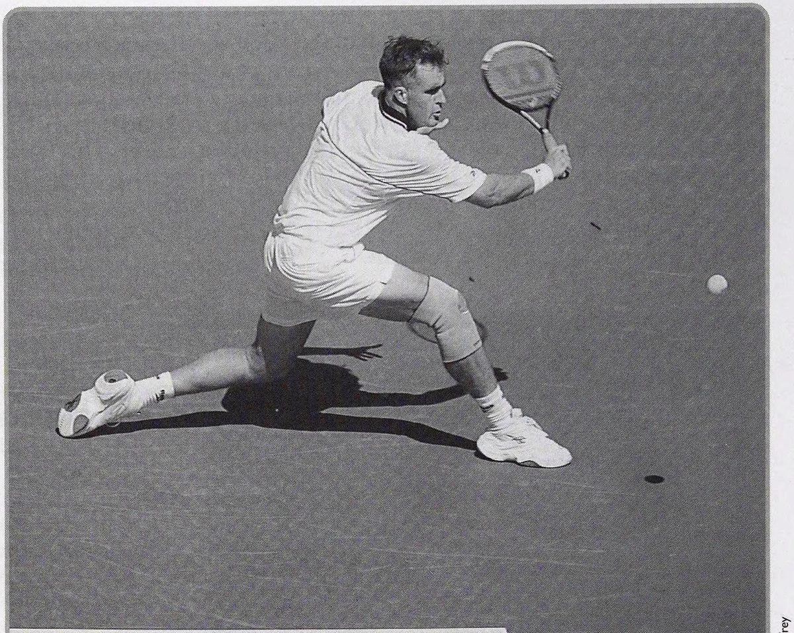
Các mô thức thi đấu
Bất kể trình độ quần vợt của bạn như thế nào, bạn nên chơi theo nhiều kiểu giống nhau mà các chuyên gia đẳng cấp thế giới sử dụng. Sự khác biệt cơ bản giữa các cầu thủ chuyên nghiệp và cầu thủ địa phương ở câu lạc bộ, các cầu thủ trẻ hàng đầu và các cầu thủ đại học là các chuyên gia hiểu rõ nên sử dụng mô hình nào vào thời điểm nào, chất lượng cú đánh của họ tốt hơn và họ thực hiện các mô hình đó cực kỳ tốt.
Bạn chỉ có thể chơi hai hoặc ba mẫu với mức độ tự tin cao. Nhiều chuyên gia không chơi nhiều hơn ba hoặc bốn mẫu cơ bản trong hầu hết thời gian. Tôi muốn bạn hiểu ba điều từ phần này.
Trước tiên, tôi muốn cung cấp cho bạn ít nhất sự hiểu biết cơ bản về các kiểu chơi chính trong năm lĩnh vực chính của trò chơi: giao bóng, trả bóng, chơi lùi sân, chuyển tiếp (hoặc tiếp cận lưới), giao bóng và vô lê. Thứ hai, tôi muốn nâng cao hiểu biết của bạn về cách thực hiện tốt các mẫu này. Cuối cùng, tôi muốn giúp bạn thêm một số mẫu chính này vào tiết mục của mình. Việc nắm vững các kiểu chơi này sẽ giúp bạn thực hiện chiến lược của mình hiệu quả hơn. Một số chìa khóa dẫn đến thành công bao gồm:
e Tối đa hóa điểm mạnh của bạn. Vâng, tôi biết bạn đã từng nghe tôi nói điều này trước đây, nhưng nó rất quan trọng. Hãy sử dụng sức mạnh của bạn! Nếu cú thuận tay của bạn là vũ khí lớn của bạn, hãy thiết lập các kiểu chơi thuận tay của bạn.
- Giảm thiểu điểm yếu của bạn. Nếu trái tay là điểm yếu của bạn, đừng sử dụng các kiểu buộc bạn phải đánh nhiều cú trái tay. Bạn cũng nên sử dụng các mẫu đối lập.
- Sử dụng các mẫu đối lập. Mẫu phản đòn (còn gọi là bộ ngắt mẫu) là khi bạn thay đổi một mẫu hiện có đang được chơi để tránh chơi theo điểm yếu của bạn hoặc để tránh điểm mạnh của đối thủ. Ví dụ, đối thủ của bạn đang chơi cú thuận tay mạnh mẽ của anh ta với cú thuận tay yếu của bạn. Mô hình đối phó của bạn là đánh thuận tay của bạn dọc theo đường biên để buộc anh ta thực hiện một pha đánh bóng chéo sân liên quan đến trái tay của bạn.
Một vài năm trước, tôi đã đến sân tập với Jan-Michael Gambill, và anh ấy đang tập luyện với Andre Agassi để chuẩn bị cho trận đấu ở Davis Cup với Bỉ.
Andre đã thực hiện rất tốt khi thực hiện cú giao bóng ở phần sân phụ, kéo Jan-Michael ra khỏi sân, sau đó thực hiện cú đánh tiếp theo ở phần sân rộng. Trong quả giao bóng, Andre sẽ ném bóng qua đầu để đạt được độ xoáy như mong muốn. Điều này cho thấy rằng anh ta sẽ đánh kiểu giao bóng đó ra xa. Vì vậy, tôi hỏi anh ấy liệu anh ấy có bao giờ lo lắng về việc ngụy trang nhiều hơn khi giao bóng hay không. Anh ấy nói, "Thật tuyệt nếu bạn có thể ngụy trang và thực hiện. Nhưng điểm mấu chốt là, nếu tôi thực hiện một cú đá tốt kéo anh ta ra ngoài và sau đó đánh vào phần sân rộng mở* và anh ta không thể chống lại mô hình đó, thì tôi không quá lo lắng về yếu tố ngụy trang. Tôi nhận thấy rằng, nếu bạn thực hiện tốt mô hình đó, hầu hết thời gian, việc anh ta có biết điều đó sắp xảy ra hay không không thành vấn đề."
Andre Agassi, Jan-Michael Gambill và Nick Saviano sau buổi tập luyện.
- Sử dụng ảnh chụp đầu tiên chất lượng. Thực hiện cú đánh đầu tiên chất lượng để bắt đầu một mô hình buộc đối thủ của bạn phải chơi theo ý bạn hoặc có thể thử một cú đánh có tỷ lệ rủi ro thấp. Khi cô ấy làm vậy, bạn có thể đáp lại cú đánh của cô ấy bằng một cú đánh có tỷ lệ bắn cao. Trong hầu hết các trường hợp, điều này sẽ tự động đặt đối thủ của bạn vào thế phòng thủ - và thậm chí có thể giành được điểm hoàn toàn.
e Giành được điểm không phải là mục tiêu duy nhất. Thông thường, ý tưởng đằng sau việc sử dụng một khuôn mẫu nhất định là tạo ra sự nghi ngờ hoặc bối rối cho đối thủ của bạn.
Ví dụ: mặc dù phong cách chơi của bạn là lùi lại, bạn có thể sử dụng kiểu giao bóng và vô lê vào một điểm để khiến đối thủ mất thăng bằng.
Đối thủ của bạn càng khó chịu hoặc phải đoán trên sân thì trò chơi của bạn càng hiệu quả.
e Làm chủ được một vài mẫu vẫn tốt hơn là làm chủ được nhiều mẫu. Điều này có vẻ hiển nhiên, nhưng tốt hơn là có kỹ năng cao với ít mẫu hơn là có kỹ năng thấp với nhiều mẫu khác nhau. Vì vậy, hãy nhớ rằng bạn không cần phải học tất cả các kiểu chơi sau đây. Không có người chơi nào là bậc thầy của tất cả.
Dưới đây là liệt kê bốn phong cách trò chơi và các kiểu mẫu cho từng phong cách mà bạn cần có trong tiết mục của mình để thành công. Ví dụ, mọi người phải có kiểu giao bóng và trả bóng tốt, trong khi những người phản công không cần phải thành thạo các kiểu giao bóng và vô lê. Vì vậy, giao bóng và vô lê không được liệt kê cho những người phản công.
1. Kẻ phản công—Giao bóng, trả giao bóng, lùi về
2. Người chơi chủ động tấn công—Giao bóng, trả bóng, lùi, chuyển tiếp
3. Cầu thủ toàn sân—Giao bóng, trả giao bóng, lùi sân, chuyển tiếp, giao bóng và chuyền-
4. Máy đẩy lưới—Giao bóng, trả lại, giao bóng và chuyền bóng, chuyển tiếp
Trong các phần sau, tôi đã mô tả và giải thích các mô hình phổ biến và quan trọng nhất trong từng lĩnh vực của trò chơi. Chỉ tập trung vào các mẫu quan trọng đối với phong cách chơi của bạn.
Mô thức giao bóng
Bạn nên sử dụng cú giao bóng để giành điểm ngay lập tức hoặc để gây ra phản ứng yếu giúp bạn giành quyền kiểm soát điểm. Các chuyên gia chỉ giao bóng ở ba vị trí cơ bản: ra ngoài, ngay trên cơ thể và xuống điểm phát bóng. Điều quan trọng không phải là bạn có đánh được quân Át trong cú giao bóng của mình hay không (mặc dù thật tuyệt nếu bạn có thể) mà là hiểu được mô hình chơi được bắt đầu từ việc giao bóng đến từng vị trí trong số ba vị trí này.
e Giao bóng rộng. Mục tiêu ở đây là kéo đối thủ của bạn ra khỏi sân bằng một cú giao bóng ngắn và rộng. Bạn có thể làm điều này với độ chính xác, độ xoáy hoặc kết hợp cả hai. Trong sân deuce, người thuận tay phải có thể sẽ sử dụng cú giao bóng cắt lát và trong sân quảng cáo, có thể sẽ sử dụng cú giao bóng.
Nếu bạn có thể kéo đối thủ ra khỏi sân bằng một cú giao bóng rộng, thì bạn có thể đánh cú đánh tiếp theo vào phần sân rộng mở. Vị trí sơ hở đó có thể phụ thuộc vào vị trí đối thủ của bạn thực hiện cú trả bóng. Ví dụ, nếu đối thủ của bạn quay trở lại vạch cuối sân, hãy đánh vào phần sân mở bằng một đòn phản công chéo sân. Nếu đối thủ của bạn quay trở lại giữa sân, hãy đánh lại phần sân mở bằng cú đánh chéo sân. Và nếu đối thủ của bạn trả lại cú giao bóng chéo góc rộng của bạn, thì bạn có thể lựa chọn đánh dọc biên hoặc lùi về phía sau đối thủ.
e Phục vụ cho cơ thể. Mục tiêu là gây nhiễu đối thủ của bạn bằng cách giao bóng ngay vào cô ấy, khiến cô ấy khó tạo ra bất kỳ góc độ nào khi trả giao bóng. Nếu bạn thực hiện một cú giao bóng xoáy thay vì một cú giao bóng phẳng, cú giao bóng của bạn sẽ xuyên vào cơ thể đối thủ. Bởi vì đối thủ của bạn khó có thể đánh được một góc khi cô ấy trả bóng, nên phản ứng của cô ấy thường là về phía giữa sân.
Cú đánh tiếp theo của bạn phải là đánh ra phần sân rộng hoặc phía sau đối thủ.
e Giao bóng xuống điểm phát bóng. Mục tiêu của việc giao bóng ở giữa sân là làm cho đối thủ của bạn căng ra để tiếp cận bóng. Trong sân đấu deuce, điều này đòi hỏi phải thực hiện một cú giao bóng phẳng (với điều kiện bạn thuận tay phải) để nó không lao về phía đối thủ của bạn. Trong sân quảng cáo, bạn có thể đánh bằng một số lát để nó thoát khỏi đối thủ của bạn. Nếu bạn giao bóng đến điểm phát bóng, phản ứng rất có thể xảy ra của đối thủ là đánh quả trả bóng về phía giữa sân. Nếu anh ta làm vậy, bạn có quyền lựa chọn đánh phía sau anh ta hoặc đánh vào sân mở. Một lợi thế tất yếu của việc giao bóng đến điểm phát bóng là kiểu giao bóng này di chuyển quãng đường ngắn nhất và qua phần thấp nhất của lưới, điều này mang lại cho bạn khả năng thực hiện cú giao bóng cao hơn và trên thực tế là đánh được quân Át.
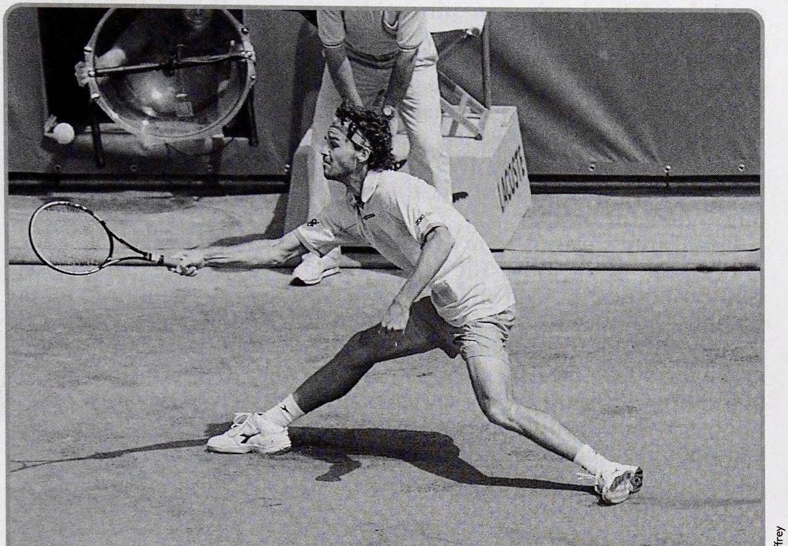
Mô thức đỡ giao bóng
Mục tiêu số một của bạn khi trả giao bóng là đưa bóng trở lại cuộc chơi! Điều này đặc biệt quan trọng nếu đối thủ của bạn có cú giao bóng lớn vì bạn có thể không có nhiều cơ hội để chống lại nó. Dù thế nào đi nữa, bạn nên sử dụng ba kiểu trả bóng cơ bản với nhiều cú đánh khác nhau.
- Vô hiệu hóa đối thủ của bạn. Đánh cú trả bóng sâu và xuống giữa sân. Đây có thể là một cú công kích mạnh mẽ hoặc một cú giật sâu, giật để đẩy đối thủ của bạn lùi lại và không cho phép anh ta tấn công. Một biến thể xảy ra khi đối thủ của bạn giao bóng và tung cú vô lê. Nếu anh ta chạm lưới sau cú giao bóng của mình, bạn nên vô hiệu hóa vị trí của anh ta bằng cách trả bóng ở vị trí nisseect.
e Tấn công xuống hàng. Một cách hiệu quả để tấn công đối thủ khi cô ấy giao bóng là lấy bóng sớm và đánh dọc biên. Đây phải là một cú đánh mạnh mẽ vì nếu đánh không tốt, đối thủ của bạn sẽ có một cú đánh chéo bàn dễ dàng để đưa bạn vào thế phòng thủ.
Tấn công quả giao bóng của đối thủ là một cách chơi xuất sắc ở quả giao bóng thứ hai.
Trả bóng về phía sau quả giao bóng thứ hai là cơ hội tuyệt vời để thực hiện cú sút của bạn vào lưới. Hãy xem Pete Sampras hoặc Andy Roddick thực hiện cú trả thuận tay dọc biên và theo nó vào lưới để dứt điểm.
e Đạt được tỷ lệ chéo sân cao. Cú đánh chéo sân trả về mang lại cho bạn tỷ lệ cú đánh cao nhất vì nó mang lại cho bạn khu vực mục tiêu lớn nhất (nhiều sân hơn, lưới thấp hơn) để đánh bóng vào cuộc. Khi bạn gặp một máy chủ lớn, sự trở lại này rất quan trọng vì nó mang lại cho bạn khả năng xảy ra lỗi lớn hơn. Và nếu bạn chạm bóng muộn, nó vẫn đi vào lưới.
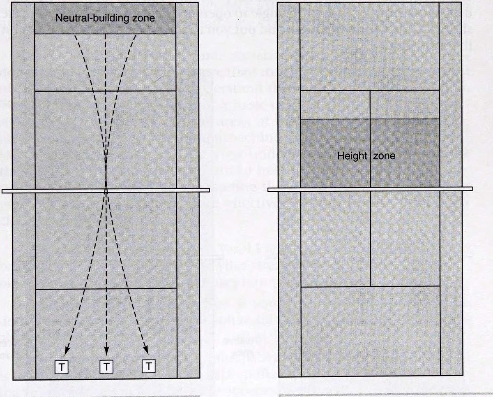
Mô thức cuối sân
Khi bóng đang trong cuộc và cả bạn và đối thủ đều ở sân sau, mục tiêu của bạn là giành quyền kiểm soát điểm. Các chuyên gia hàng đầu sử dụng năm mô hình chính từ sân sau để đảm trách.
e Cuộc tập hợp chéo sân. Chơi bóng chéo sân (nói chung) là môn quần vợt có tỷ lệ chơi cao. Hãy kiên định bằng cách đánh bóng sâu với tốc độ hợp lý và độ hở lưới tốt. Hãy để đối thủ của bạn mắc nhiều lỗi hơn bằng cách cố gắng thay đổi hướng bóng hoặc thử điều gì đó lạ mắt. Tránh phá vỡ mô hình chéo sân trừ khi bạn nhận được đường bóng ngắn hoặc phản ứng yếu mà bạn có thể tấn công.
e Đánh chéo sân, sau đó đánh xuống vạch. Vì hầu hết người chơi đều mong đợi bạn đánh chéo sân, nên bạn có thể kiểm soát điểm sau khi đánh chéo sân bằng cách thay đổi hướng bóng và đánh dọc theo đường biên. Điều này được thực hiện tốt nhất khi bạn nhận được một quả bóng ngắn hơn hoặc đối thủ của bạn ở ngoài vị trí. Hãy nhớ rằng hầu hết các lỗi không bắt buộc đều xuất phát từ kiểu này vì việc thay đổi hướng của quả bóng chéo sân sẽ có tỷ lệ đánh thấp hơn. Ngoài ra, hãy lưu ý rằng cú đánh dọc biên thường có vẻ cởi mở trong khi thực tế không phải vậy vì khi bạn đánh xuống đường biên, bóng không thoát ra khỏi đối thủ của bạn.
e Đánh một góc để mở sân. Nếu đối thủ của bạn đánh bóng hơi lệch về phía mép sân không quá sâu và ngồi dậy một chút (trong khu vực sáng tạo), thì đó là một lời mời hoàn hảo để thực hiện một cú sút góc ngắn chéo sân để khiến đối thủ của bạn bỏ chạy. Nếu bạn có thể kéo đối thủ ra khỏi sân, cú đánh tiếp theo của bạn sẽ được đánh sâu vào phần sân rộng mở.
e Đánh từ trong ra ngoài. Đây là một trong những mẫu được các chuyên gia yêu thích. Khi bóng tiếp đất ở giữa sân (ở trung tâm điều khiển), hãy chạy vòng quanh quả bóng để đánh thuận tay từ trong ra ngoài về phía trái tay của đối phương.
Điều này thường cho phép bạn đánh sức mạnh của mình vào điểm yếu của đối thủ và khiến đối thủ khó đánh trả về phía trái tay của bạn, tạo cho bạn một cú thuận tay khác để đánh. Bạn có thể đánh ra phần sân rộng hoặc đánh lùi về phía sau đối thủ, tùy thuộc vào vị trí đối thủ trả bóng.
e Đánh cao về phía trái tay. Ngay cả những người chuyên nghiệp cũng không thích chơi những cú trái tay cao. Vì vậy, bạn nên giật bóng (với xoáy lên nếu có thể) cao về phía trái tay của đối thủ. Khi đối thủ lùi lại để đánh bóng thoải mái hơn, bạn nên bước một bước vào sân đề phòng phản ứng ngắn. Nếu phản ứng của anh ta đủ ngắn, bạn có thể đánh ra sân rộng hoặc phía sau anh ta.
Mô thức chuyển tiếp
Nếu bạn muốn vào lưới từ sân sau, chất lượng cú đánh tiếp cận của bạn quan trọng hơn nhiều so với kiểu chơi. Vì vậy, bạn
nên tập trung vào vị trí và di chuyển bóng qua sân với tốc độ vừa đủ hoặc lát cắt để giữ bóng ở mức thấp. Vấn đề là nếu cú đánh tiếp cận của bạn đứng thẳng, bạn sẽ là một con vịt đang ngồi để bị vượt qua! Ngoài cú đánh tiếp cận, đây là các mẫu bạn có thể chơi trong trò chơi chuyển tiếp khi vào lưới.
- Tiếp cận hàng dọc. Khi bạn thực hiện một cách tiếp cận chất lượng, sút dọc biên và đi vào lưới, đối thủ của bạn có rất ít lựa chọn. Phong cách của bạn phụ thuộc vào vị trí đối thủ của bạn thực hiện cú đánh của cô ấy. Nếu cô ấy đi chéo sân, hãy thực hiện cú vô lê ở phần sân rộng. Nếu cô ấy đi xuống vạch, hãy lại tung cú vô lê ra sân mở. Nếu cô ấy đi lên giữa, bạn có quyền lựa chọn tung cú vô lê ra phần sân rộng hoặc phía sau đối thủ.
e Tiếp cận ở giữa. Khi bạn thực hiện cú tiếp cận ở giữa sân, bạn thường không có các góc để thực hiện cú vô lê đầu tiên, nhưng bạn sẽ cắt giảm các góc mà đối thủ có thể đánh để vượt qua bạn. Thông thường, bạn nên cố gắng thiết lập cú ném bóng với cú đánh tiếp theo của mình.
Vì vậy, nếu đối thủ của bạn đi xuống một trong hai đường so với cú đánh tiếp cận của bạn, bạn nên chuyền bóng trở lại đường biên. Trường hợp ngoại lệ là nếu đối thủ của bạn đánh một cú đánh yếu và bay cao qua lưới. Sau đó, bạn nên chuyền bóng chéo sân cho người trông nom dễ dàng. Nếu đối thủ thực hiện cú đánh tiếp cận giữa của bạn và lùi lên giữa, bạn có quyền lựa chọn tung cú vô lê sang phần sân rộng hoặc phía sau đối thủ.
e Tấn công lén lút. Khi bạn gây tổn thương cho đối thủ bằng cách thực hiện một cú đánh chéo sân hoặc một cú sút dọc biên và kéo dài anh ta ra, rất khó có khả năng anh ta có thể thực hiện được một cú chuyền hiệu quả trên đường chạy. Kiểu chơi của bạn là lẻn vào lưới sau cú đánh của bạn và sau đó tung cú vô lê ra sân rộng.
Lần đầu tiên tôi biết về tầm quan trọng của một cuộc "tấn công lén lút" là bài học đầu tiên của tôi với Pancho Segura tuyệt vời và đầy màu sắc. Lúc 7 tuổi tôi đã là một trong những học sinh giỏi nhất cả nước. Tôi cảm thấy như thể mình đánh bóng tốt nhưng cần phải nâng tầm hiểu biết chiến thuật của mình về trận đấu lên một tầm cao mới. Vì vậy, ước mơ của tôi là được làm việc với huyền thoại Pancho Segura. Được nhiều người coi là người có cú thuận tay tốt nhất (anh ấy đánh nó bằng hai tay) mọi thời đại và là một trong những nhà chiến thuật vĩ đại nhất từ trước đến nay, Pancho là một cầu thủ và huấn luyện viên nổi tiếng, người đã từng làm việc với nhiều cầu thủ vĩ đại như Jimmy Connors. Cuối cùng tôi đã có thể thực hiện được chuyến đi đầu tiên của mình. Tôi sẽ không bao giờ quên bài học đó. Pancho lúc đó chắc hẳn đã ngoài 50 tuổi, cao khoảng 5 feet 6 inch và rất chân vòng kiềng. Không phải là một cảnh tượng hùng vĩ! Chúng tôi khởi động và bắt đầu chơi tính điểm.
Cú giao bóng của anh ấy không tốt lắm, nhưng, cậu bé, những cú chạm đất và trả bóng của anh ấy rất tuyệt vời. Tôi nhớ mình đã chạy khắp sân để theo kịp anh ấy. Sau điểm thứ hai, anh ấy tung một cú sút góc rộng về phía thuận tay của tôi; Khi tôi đang chạy nước rút để lấy bóng, anh ấy nhận thấy tốc độ của tôi và nói, "Này, nhóc, cậu có bánh xe tuyệt vời!" Sau đó, khi tôi lấy lại được bóng, anh ấy đã đánh bóng sang phía bên kia.
có thể nghe thấy anh ấy cười khi tôi chạy sang phía bên kia để đánh một quả bóng vô hiệu hóa vào sâu trong góc. Nhưng điều tiếp theo tôi nhìn thấy sau khi thực hiện cú sút của mình là Pancho đang đứng trên lưới mỉm cười với tôi khi anh ấy thực hiện cú vô lê dễ dàng. Anh ta đã làm tôi ngạc nhiên khi lẻn vào trong khi tôi đang căng bóng! Anh ấy nói bằng giọng nặng nề và ngôn ngữ đầy màu sắc, "Này, anh bạn, đừng bao giờ để SOB mà bạn đang chơi cảm thấy thoải mái! Bạn thấy những gì tôi đã làm không? Hãy luôn gây áp lực lên họ. Khi họ nghĩ bạn đang lùi lại, bạn lẻn vào. Khi họ nghĩ bạn đang tiến vào, đôi khi bạn hãy lùi lại. Nhưng bất cứ khi nào bạn kéo một cầu thủ ra biên về phía trái tay và bạn thấy anh ta căng ra, hãy tìm cách lẻn vào lưới." Tôi không bao giờ quên lời khuyên đó và tôi đã áp dụng nó nhiều lần trong suốt sự nghiệp của mình. Từ đó trở đi, mỗi khi thực hiện tốt, tôi lại nhớ lại bài học đầu tiên với Pancho.
Nick Saviano và Pancho Segura tại Giải Mỹ mở rộng 1986.
e Từ giữa (từ trong ra ngoài hoặc chéo sân). Nhiều quả bóng bạn sẽ tiếp cận sẽ đến từ trung tâm (trong trung tâm điều khiển). Trong tình huống này, bạn có thể đánh bóng tới một trong hai góc của sân. Đây là cách tiếp cận ưa thích của các chuyên gia vì cách tiếp cận này di chuyển theo một góc so với đối thủ, buộc họ phải di chuyển. Nếu cách tiếp cận được thực hiện với tốc độ và độ sâu nhất định, cú chuyền bóng của đối thủ thường sẽ đi dọc biên, sau đó sẽ là một cú vô lê chéo sân tới phần sân rộng mở.
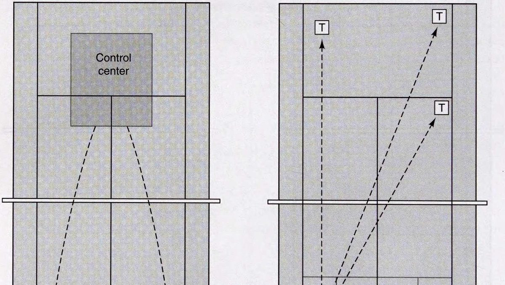
Mô thức giao bóng lên lưới
Rất ít cầu thủ ở mọi cấp độ, kể cả chuyên nghiệp, giao bóng và vô lê mọi lúc.
Hầu hết người chơi thường sử dụng chiến thuật này để khiến đối thủ mất thăng bằng.
Cho dù bạn là bản sao của Patrick Rafter hay sử dụng cú giao bóng và cú vô lê để thay đổi tốc độ trước đối thủ, các kiểu chơi vẫn giống nhau.
Chìa khóa để có một cú giao bóng và cú vô lê hiệu quả là một cú giao bóng chất lượng được đặt đúng vị trí và cú vô lê đầu tiên có tỷ lệ sút cao. Nơi bạn thực hiện cú vô lê thường xuyên nhất phụ thuộc vào chất lượng và vị trí của cú trả bóng. Nhưng các mẫu cơ bản mang lại cho bạn tỷ lệ thành công cao hơn:
e Giao bóng rộng, chuyền bóng ra sân rộng. Đây là một mô hình đơn giản nhưng hiệu quả. Kéo đối thủ của bạn ra xa bằng cú giao bóng và tung cú vô lê ra sân rộng. Nếu đối thủ của bạn thực hiện một cú trả bóng tốt ở cuối đường biên, bạn có thể buộc phải giữ bóng trước mặt bằng cách vô lê dọc theo đường biên và vào vị trí cho cú đánh tiếp theo.
e Giao bóng đến điểm phát bóng, chuyền bóng về phía sau đối thủ. Sử dụng chiến thuật này để kéo đối thủ của bạn về phía giữa sân và sau đó tung cú vô lê về phía sau anh ta.
e Phục vụ cho cơ thể. Chiến thuật ở đây là tạo ra một đòn đáp trả yếu bằng cách “còng tay” đối thủ của bạn. Sau đó tung cú vô lê vào điểm yếu của cô ấy hoặc ra sân rộng nếu có.
Chiến thuật âm thanh
Để thực hiện những điều chỉnh chiến thuật hợp lý trong một trận đấu, bạn phải hiểu rõ về các yếu tố đang ảnh hưởng đến lối chơi và đánh giá thực tế về những gì đang diễn ra trong trận đấu. Những đối thủ cạnh tranh lớn – những người đặc biệt cần phải là những nhà chiến thuật giỏi – đều có kỹ năng này. Họ biết chính xác những gì đang diễn ra trên sân và cuối cùng tìm ra cách tốt nhất để phát huy tối đa kỹ năng của mình và điều chỉnh cho phù hợp. Để làm được điều này trong trò chơi của mình, trước tiên bạn phải nhận thức được các yếu tố ảnh hưởng đến việc chơi.
Khi bạn ra sân thi đấu, ba yếu tố chính sẽ ảnh hưởng đến trận đấu của bạn
1. Bạn. Điều này bao gồm trò chơi của bạn và cách bạn chuẩn bị cho cuộc thi. Bạn là nhân tố quan trọng nhất dẫn đến thành công. (Trên thực tế, bạn có thể
đảm bảo thành công mỗi khi bạn thi đấu. Lưu ý rằng tôi nói thành công chứ không phải chiến thắng. Sẽ có nhiều điều hơn về điều này ở chương 8. 2. Đối thủ của bạn. Yếu tố lớn thứ hai sẽ ảnh hưởng đến trận đấu của bạn là người bạn đang chơi. Điều này bao gồm cấp độ người chơi của cô ấy; phong cách chơi của cô ấy; chiến thuật cô ấy sử dụng; và điểm mạnh, điểm yếu cũng như sự dẻo dai trong cạnh tranh của cô ấy.
3. Môi trường. Các yếu tố như bề mặt sân, thời gian trong ngày, trong nhà hay ngoài trời, gió, mặt trời, nhiệt độ, thời tiết, tiếng ồn của đám đông và những thứ tương tự đều ảnh hưởng đến cuộc chơi của bạn.
Thật không may, nhiều người chơi không biết điều gì thực sự đang xảy ra trên sân hoặc tại sao. Tất cả chúng ta đều từng tham dự một giải đấu và nghe hai tay vợt ra sân và nói chuyện riêng về trận đấu mà họ vừa thi đấu với nhau. Cứ như thể họ đã chơi hai trận riêng biệt vậy! Vấn đề là thường có một khoảng cách rất lớn giữa nhận thức và thực tế.
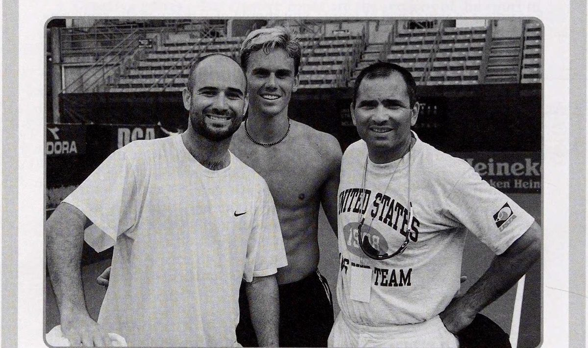
Điều chỉnh chiến thuật
Đã bao nhiêu lần bạn nghe các huấn luyện viên và chuyên gia giảng dạy nói, "Đừng bao giờ thay đổi một ván thắng; hãy luôn thay đổi một ván thua." Lời khuyên tốt? Không thực sự. Làm sao bạn biết trò chơi của bạn, vốn đã mang lại chiến thắng cho bạn trong quá khứ, bây giờ không phải là trò chơi chiến thắng cho bạn? Chỉ vì bạn đang thua không có nghĩa là bạn có chiến thuật sai. Có thể nhận ra sự khác biệt là rất quan trọng.
Trong quần vợt, sự thay đổi không phải lúc nào cũng tốt. Và nếu bạn phải thay đổi, tinh tế vẫn tốt hơn thay đổi triệt để. Những điều chỉnh lớn, đặc biệt là trong trận đấu, hiếm khi cần thiết hoặc mang lại lợi ích. Khi trận đấu diễn ra không suôn sẻ với bạn, câu hỏi đầu tiên bạn nên tự hỏi mình là "Tôi có đang thực hiện trò chơi của mình tốt không?" không phải "Tôi nên thay đổi điều gì?" Nếu bạn không thực hiện tốt trò chơi của mình thì bạn nên tập trung vào việc thực hiện tốt hơn chứ không phải thay đổi kế hoạch trò chơi của mình. Ví dụ, nếu bạn là một vận động viên đánh cơ bản năng nổ nhưng bạn đang thua trận vì mắc quá nhiều lỗi không đáng có, thì chiến thuật của bạn có thể không phải là vấn đề.
Bạn có thể chỉ cần di chuyển chân nhiều hơn hoặc mất nhiều thời gian hơn giữa các điểm. Bằng cách tập trung vào việc thực hiện tốt hơn trong những tình huống như vậy, vấn đề thường có thể được giải quyết mà không cần thay đổi trò chơi của bạn.
Nếu bạn vẫn gặp khó khăn mặc dù đã tập trung vào việc thực hiện, thì bạn cần đánh giá lại chiến thuật của mình và có thể thực hiện một số điều chỉnh. Hãy nhớ rằng những điều chỉnh chiến thuật tinh tế thường sẽ tạo nên sự khác biệt, miễn là chúng được thực hiện tốt. Và bất kỳ điều chỉnh nào bạn thực hiện phải luôn được thực hiện trong bối cảnh chiến lược cơ bản của bạn.
Dưới đây là một số ví dụ. Giả sử một cầu thủ đang tấn công cú giao bóng của bạn. Có lẽ tất cả những gì bạn cần làm là thay đổi vị trí giao bóng thêm một chút. Hoặc, nếu đối thủ của bạn đang tấn công bạn bằng những cú đánh chạm đất, có lẽ độ sâu hơn một chút sẽ giúp anh ta không làm tổn thương bạn. Hãy nhắm mục tiêu cao hơn trên lưới và điều đó có thể
chỉ cần thực hiện thủ thuật. Nếu bạn giao bóng và thực hiện cú vô lê và đối thủ liên tục chuyền bóng cho bạn, điều đó có thể đơn giản như việc bạn thực hiện cú vô lê một chút.
tốc độ nhanh hơn.
Một ví dụ về việc một sự điều chỉnh chiến thuật đơn giản và tinh tế có thể có tác động sâu sắc đến một trận đấu như thế nào là trận chung kết Pháp mở rộng nam 1991.
Jim Courier, trong trận chung kết Grand Slam đầu tiên, đối mặt với đồng hương Andre Agassi.
Agassi đang thắng trận đấu hai set một và đang chiếm ưu thế về số điểm trong cú giao bóng của mình. Courier đang gặp khó khăn chỉ để giữ được cú giao bóng của riêng mình. Vào thời điểm đó, như định mệnh đã sắp đặt, bầu trời Paris mở rộng và trời bắt đầu mưa. Các cầu thủ rời sân và trong thời gian trời mưa, họ đã có thể trao đổi với huấn luyện viên của họ về trận đấu. Khi thời gian trì hoãn kết thúc và trận đấu tiếp tục trở lại, Courier đã lật ngược hoàn toàn cục diện trận đấu và giành chiến thắng sau 5 set.
Người ta biết rằng lời khuyên chiến thuật mà Courier nhận được từ huấn luyện viên của anh ấy, Jose Higueras, đã thay đổi toàn bộ cục diện trận đấu. Anh ta bảo Courier làm gì? Phải chăng anh ta đã xây dựng một kế hoạch chiến thuật phức tạp và phức tạp để chống lại những gì Agassi đang làm? Không. Điều chỉnh duy nhất mà Courier thực hiện chỉ đơn giản là lùi lại vài feet khi trả giao bóng để bản thân có thêm thời gian và ổn định hơn trong việc đưa bóng vào cuộc. Chính là nó! Một việc đơn giản như đứng lùi xa hơn đã thay đổi toàn bộ trận đấu.
Vì vậy, khi bạn đang trong giai đoạn cạnh tranh khốc liệt, hãy làm theo giao thức đơn giản này khi mọi thứ không suôn sẻ.
1. Giữ nguyên phong cách chơi cơ bản của bạn.
2. Thực hiện theo chiến lược bạn đã quyết định cho trận đấu.
3. Tập trung vào việc thực hiện. Nếu trận đấu diễn ra không suôn sẻ, hãy đánh giá việc thực hiện của bạn. Hầu hết việc thực hiện kém là nguyên nhân gây ra vấn đề của bạn chứ không phải là do chiến lược hoặc chiến thuật kém.
4. Đánh giá lại chiến thuật của bạn. Nếu sau khi xem lại ba giao thức trước mà bạn vẫn gặp khó khăn trong trận đấu, hãy đánh giá lại chiến thuật của mình. Chúng có thể không phù hợp để chống lại đối thủ này hoặc trong những điều kiện này.
5. Thực hiện những điều chỉnh chiến thuật tinh tế trong bối cảnh chiến lược của bạn.
6. Đến thời điểm này, nếu bạn vẫn đang chìm trong biển lửa, thì bạn có thể thử một số điều chỉnh chiến thuật triệt để vì dù sao thì bạn cũng có thể sẽ thua!
Kiến thức về chiến thuật sẽ không mang lại nhiều lợi ích cho bạn nếu bạn không có kỹ năng nhận thức tốt để biết điều gì đang thực sự xảy ra trên sân. Vì vậy, hãy nâng cao nhận thức của bạn về thế giới xung quanh và bạn sẽ thấy khả năng điều chỉnh chiến thuật tốt của mình tăng lên theo cấp số nhân.
Chiến thuật cá nhân
Ấn tượng đầu tiên rất quan trọng. Trong quần vợt cạnh tranh, điều quan trọng là phải áp đặt trận đấu của bạn về mặt chiến lược, thể chất và tâm lý lên đối thủ càng nhanh càng tốt. Đối thủ của bạn phải nói rõ ngay từ ván đầu tiên rằng bạn có ý định thiết lập không khí cho trận đấu.
Các chuyên gia biết rất rõ điều này. Hãy nhìn cách họ bắt đầu trận đấu của mình.
Andy Roddick và Pete Sampras sẽ giành được một cú át chủ bài ở điểm phát bóng trong lần giao bóng đầu tiên của họ. Andre Agassi sẽ thực hiện quả trả giao bóng đầu tiên và thực hiện thành công. Lindsay Davenport sẽ thực hiện cú sút chạm đất sâu vào góc ở quả bóng đầu tiên. Giống như một con nai, Venus Williams sẽ lao tới quả bóng đầu tiên mà bạn cố gắng đánh qua cô ấy. Trước khi đổi bên trong lần thay đổi đầu tiên, tất cả các cầu thủ xuất sắc này đều để lại ấn tượng khó phai trong tâm trí đối thủ trong suốt trận đấu. Ấn tượng đầu tiên này có thể là một công cụ chiến thuật rất mạnh mẽ, nó không chỉ đe dọa đối thủ của bạn mà còn có thể được sử dụng để tạo ra sự nghi ngờ trong tâm trí đối thủ về những cú đánh mà bạn sẽ đánh trong trận đấu.
Fred Stolle vĩ đại đã từng nói với tôi rằng, trong ván đầu tiên của một trận đấu khi anh ấy trả bóng trước một người giao bóng và một người bắt vô lê, anh ấy sẽ cố gắng thực hiện một cú sút dọc biên, một cú tạt bóng, một cú lốp bóng và một cú trả bóng nhẹ nhàng xuống chân. Bằng cách đánh tất cả các biến thể này, Stolle cố gắng tạo ra sự nghi ngờ trong tâm trí đối thủ về việc anh ta sẽ đánh trả đòn nào. Sau đó, trong suốt trận đấu, anh ấy thường tung ra cú sút yêu thích hoặc cú sút hiệu quả nhất.
Bạn cũng có thể sử dụng ấn tượng đầu tiên của mình để "đánh lừa đối thủ" nhằm che đậy những điểm yếu trong trò chơi của mình. Ví dụ: nếu bạn có một cú thuận tay yếu và một cú trái tay mạnh, bạn có thể muốn bắt đầu bằng cách thực hiện một vài cú thuận tay và lừa gạt như thể đó là mặt tốt hơn của bạn. Bạn có thể lôi kéo đối thủ chơi theo cú trái tay của mình.
Bằng cách tạo ấn tượng đầu tiên đúng đắn, bạn có thể tác động đến toàn bộ trận đấu về mặt chiến thuật. Hãy để đối thủ cảm nhận được sự hiện diện của bạn về mặt chiến lược, thể chất và tâm lý ngay từ đầu. Đây là một loại mối quan hệ trong đó việc khiến người khác cảm thấy không thoải mái là điều bình thường.
Sự đa dạng là gia vị của cuộc sống
Trong bối cảnh chiến lược của bạn, chiến thuật của bạn nên bao gồm một số sự đa dạng. Ngay cả khi bạn thực hiện một cách đẹp mắt, nếu bạn quá dễ đoán, đối thủ của bạn sẽ dễ dàng điều chỉnh theo những gì bạn đang làm.
Bí quyết là thêm đủ sự đa dạng để khiến đối thủ của bạn mất thăng bằng nhưng không quá nhiều đến mức làm cản trở việc thực hiện kế hoạch trò chơi của bạn.
Jimmy Connors là người giỏi nhất mà tôi từng thấy khi làm việc này. Connors là một cầu thủ ghi bàn năng nổ. Về cơ bản, anh ấy sẽ giao bóng và lùi lại, nhưng sau đó, không biết từ đâu, anh ấy sẽ giao bóng và tung cú vô lê, đôi khi ở một điểm bình thường và đôi khi ở một điểm quan trọng. Từ sân sau, anh ấy chơi thứ quần vợt năng nổ, có tỷ lệ cao, hiếm khi đánh được cú đánh có tỷ lệ thấp.
Nhưng ngay khi bạn nghĩ rằng bạn biết anh ấy có thể làm gì, anh ấy sẽ hoàn toàn làm bạn ngạc nhiên bằng cách thực hiện một cú sút hoặc giật trái tay dọc biên và đi vào lưới. Đối đầu với Jimmy, bạn cảm thấy mình không bao giờ có thể bắt kịp nhịp độ. Những lời xen vào đa dạng tinh tế này hiếm khi được đề cập hoặc thừa nhận khi Connors còn thi đấu, nhưng chúng là một trong những lý do khiến tôi coi anh ấy là một trong những cầu thủ có chiến thuật giỏi nhất mọi thời đại.
Hãy cân nhắc việc thêm loại hình đa dạng này vào trò chơi của bạn. Chỉ cần thay đổi nhịp độ một chút vào đúng thời điểm, khả năng đoán trước của đối thủ sẽ bị hạn chế. Nó sẽ tạo ra sự bối rối và thất vọng khiến đối thủ của bạn không thể tiếp tục trò chơi của mình. Đừng chỉ thêm sự đa dạng vào các điểm "ít lo lắng", như ở mức 40-0 hoặc 0-40. Hãy cân nhắc việc thay đổi nó trong những tình huống áp lực để thêm yếu tố bất ngờ. Thường thì yếu tố bất ngờ có thể khiến đối thủ của bạn bỏ lỡ. Và ngay cả khi bạn không giành được điểm, nó vẫn nhằm mục đích tạo ra sự bất an cho đối thủ. Dưới đây là một số ví dụ cụ thể cho từng phong cách chơi.
e Người phản đòn—Để trộn lẫn nó nếu bạn là người phản đòn, thỉnh thoảng lao vào lưới khi đối thủ của bạn ở ngoài vị trí.
Ngoài ra, hãy thay đổi một số kiểu bạn chơi trên mặt đất. Hãy tìm người chiến thắng bằng đường bóng ngắn mà bạn thường chơi an toàn. Khi giao bóng, đôi khi hãy thực hiện cú giao bóng lớn đầu tiên. Ngay cả khi bạn đang vượt qua đối thủ theo ý muốn khi cô ấy vào lưới, thỉnh thoảng hãy thực hiện một cú lốp bóng tấn công để giữ cho đối thủ không áp sát quá chặt.
e Cầu thủ ghi bàn hung hãn—Thỉnh thoảng vào lưới sau một cú đánh chạm đất lớn để khiến đối thủ của bạn mất thăng bằng. Thỉnh thoảng hãy thay đổi các kiểu sân sau của bạn. Thực hiện một cú giao bóng và vô lê với tỷ số 40-0. Sử dụng một góc để mở sân. Nếu bạn chơi thuận tay từ trong ra ngoài hầu hết thời gian, hãy gây bất ngờ cho đối thủ bằng cách xé toạc nó theo chiều chéo bàn.
e Người chơi toàn sân—Vì phong cách chơi của bạn dựa trên sự đa dạng nên có thể không cần thiết phải cố gắng thay đổi mô hình của bạn. Tuy nhiên, hãy lưu ý xem liệu bạn có bất kỳ khuynh hướng nào trên sân hay không, chẳng hạn như thích chuyền dọc hoặc chỉ tiếp cận bằng trái tay. Tạo bất ngờ cho những xu hướng này sẽ có hiệu quả trong việc khiến đối thủ của bạn mất thăng bằng.
e Net Rusher—Giả sử bạn đang giao bóng và vô lê thành công trong một trận đấu, giao bóng cả ở điểm phát bóng và ra ngoài. Điều này có thể có hiệu quả trong một thời gian, nhưng khi trận đấu diễn ra, đối thủ của bạn sẽ “đọc” tốt hơn những gì bạn đang làm và phản ứng nhanh hơn và hiệu quả hơn.
Đơn giản chỉ cần kết hợp một vài cú giao bóng cơ thể sẽ giúp đối thủ của bạn mất thăng bằng. Bạn thậm chí có thể thỉnh thoảng phục vụ và ở lại. Nếu bạn đang đến
vào lưới từ các cú đánh chạm đất của bạn, thỉnh thoảng kết hợp nó bằng cách tiếp cận về phía thuận tay hoặc đến giữa, cũng như về phía trái tay.
Huyền thoại chiến thuật
Nhiều người chơi tin vào huyền thoại. Họ nghĩ rằng nếu chỉ có thể thắng game thứ bảy của mỗi set thì họ sẽ thắng trận. Tất nhiên, trong quần vợt – cũng như trong cuộc sống – những huyền thoại chỉ đơn thuần là những nhận thức sai lầm về thực tế. Hãy để tôi xua tan một số lầm tưởng về chiến thuật mà bạn có thể đã nghe (hoặc thậm chí tin!)
® Ai giành được số điểm lớn sẽ thắng trận đấu @
Có và không. Khái niệm về những điểm quan trọng thường bị cường điệu hóa, nhấn mạnh quá mức và phản tác dụng. Đúng, những điểm lớn ảnh hưởng đến kết quả trận đấu, và không, chúng thường không lớn như bạn nghĩ. Điểm bổ sung thường được gọi là điểm lớn. Giả sử tôi giành được cả ba điểm cộng trong một trận đấu.
Điều đó có nghĩa là tôi vẫn có thể thua trận với tỷ số 6-1, 6-2. Nếu tôi mất tất cả số điểm "không quá lớn", hãy đoán xem—tôi thua! Đúng vậy, trong một trận đấu sát nút, những điểm mấu chốt như 5-4, 30-40 có tác động không nhỏ đến trận đấu. Và bạn có thể muốn chơi một "điểm quan trọng" khác với một điểm ít áp lực hơn. Ví dụ: nếu tôi đang giao bóng với điểm break, tôi thường sẽ cố gắng phát huy điểm đó theo điểm mạnh của mình và với tỷ lệ lựa chọn cú đánh có tỷ lệ cao. Tuy nhiên, đây là điều cần suy nghĩ. Nếu bạn giành được break point và thua nó, sau đó giành được break point khác và giành được nó, cái nào quan trọng hơn? Đó có phải là break point đầu tiên hay thứ hai— hay chính là điểm yếu đã đưa bạn đến break ngay từ đầu? Thực tế là 99% người chơi giành được nhiều điểm nhất trong một trận đấu sẽ thắng trận đấu. Tốt hơn hết là bạn nên tập trung thực hiện từng điểm một và phát huy điểm đó bằng khả năng tốt nhất của mình, bất kể tình huống nào. Hãy bớt lo lắng về những điểm lớn và tập trung nhiều hơn vào việc thực hiện từng điểm một và bạn sẽ trở thành một người chơi giỏi hơn.
@ Luôn đổi ván thua ®
Tôi đã đề cập đến điều này ở đầu chương, và tôi thấy rằng bạn không nên luôn thay đổi một trò chơi đang thua. Thường thì đó chỉ đơn giản là vấn đề cải thiện việc thực thi. Và ai sẽ nói đó là một kế hoạch thua cuộc? Trò chơi của bạn phát huy tối đa điểm mạnh và giảm thiểu điểm yếu của bạn và đó có thể là cơ hội tốt nhất để bạn giành chiến thắng. Ngoài ra, có thể đối thủ của bạn đã gặp phải tình huống nóng nảy hoặc bạn gặp phải vận rủi. Đó có thể là vấn đề bám sát trò chơi của bạn và áp đặt kế hoạch của bạn vào trận đấu.
® Không bao giờ thay đổi trò chơi chiến thắng ®@
Đây là một nửa huyền thoại. Nếu bạn đang thắng, bạn không muốn thay đổi bản chất trò chơi của mình, nhưng tốt hơn là bạn nên đa dạng hóa cách chơi của mình.
Nếu không, rất có thể đối thủ của bạn sẽ bắt đầu nắm bắt được những gì bạn đang làm và bắt đầu phản công tốt hơn.
@ Bạn phải suy nghĩ tốt hơn đối thủ @
Thông thường, việc áp đặt chiến lược của bạn lên đối thủ và thực hiện nó tốt sẽ quyết định một trận đấu. Đúng, nhiều lúc bạn cần phải điều chỉnh theo những gì đối thủ đang làm trong trận đấu, nhưng khái niệm này được nhấn mạnh quá mức. Với hai người chơi ở cùng cấp độ sử dụng các chiến thuật cơ bản, đúng đắn, người chiến thắng thường phụ thuộc vào việc thực hiện, kiểm soát cảm xúc của bạn và những điều chỉnh chiến thuật nhỏ. Quần vợt không phải là một trò chơi cờ vua. Nó giống với trò chơi cờ đam hơn. Tôi nghĩ rằng nhiều trận thua do suy nghĩ quá nhiều hơn là thắng do suy nghĩ kỹ hơn đối thủ.
® Bạn phải nâng cao trình độ chơi của mình trong tiebreak ®
Huyền thoại này ngụ ý rằng bạn đã không chơi với phong độ tốt nhất hoặc không phát huy tối đa khả năng tập trung của mình trước loạt tiebreak. Tôi không đồng ý với tâm lý này. Agassi từng nói: "Khi tôi chơi hết mình, tôi chơi mọi điểm như thể đó là một trận hòa." Khi các cầu thủ ở trạng thái tốt nhất, họ tập trung vào từng điểm một và chơi từng điểm với khả năng tốt nhất của mình bất kể tỷ số hay tình huống. Phải nói rằng, tôi thích những người chơi chơi thứ quần vợt năng nổ nhưng có tỷ lệ phần trăm cao trong tình huống hòa, nơi họ phát huy điểm mạnh của mình nhiều nhất có thể.
® Bạn phải thắng ván thứ bảy cực kỳ quan trọng @
Đây là một trong những niềm tin nực cười nhất mà tôi từng nghe trong thể thao. Trận thứ bảy với tỷ số 5-1 có quan trọng hơn tỷ số 5-4 hay 5-6 không? Hãy cho tôi nghỉ ngơi!
@ Luôn tiếp cận xuống dòng ®
Chỉ làm điều này nếu bạn muốn đối thủ đứng trên hàng chờ vượt qua bạn. Đó là điều sẽ xảy ra nếu mọi người tin vào huyền thoại đó. Có những lúc phải tiếp cận chéo sân, lên giữa hoặc từ trong ra ngoài. Và tôi đã thảo luận về tầm quan trọng của việc thay đổi mọi thứ để giữ cho trò chơi của bạn không trở nên dễ đoán và khiến đối thủ mất cân bằng.
® Luôn tung cú vô lê vào sân rộng rãi @
Nó phụ thuộc vào mức độ cởi mở của tòa án. Các yếu tố khác cũng có tác dụng. Nếu bạn đang chơi một trò chơi tốc độ thực sự, đặc biệt là trên sân đất nện, bạn có thể muốn đánh cú vô lê của mình về phía sau đối thủ để khiến anh ta nhầm chân. Độ cao của bóng có thể quyết định không phải là người chiến thắng mà là đưa bóng sâu ngay vào đối thủ để thực hiện cú vô lê tiếp theo.
® Khi bạn đang trong giờ nghỉ, chỉ cần tập trung vào việc giữ cú giao bóng của mình @
Vô nghĩa! Tất nhiên là bạn muốn giữ giao bóng, nhưng tại sao lại từ bỏ lối chơi quyết liệt đã giúp bạn dẫn trước? Cũng như mọi lúc khác, bạn nên tiếp tục tập trung vào chỉ một điểm tại một thời điểm. Có lẽ bạn có thể phá vỡ lần thứ hai hoặc thứ ba.
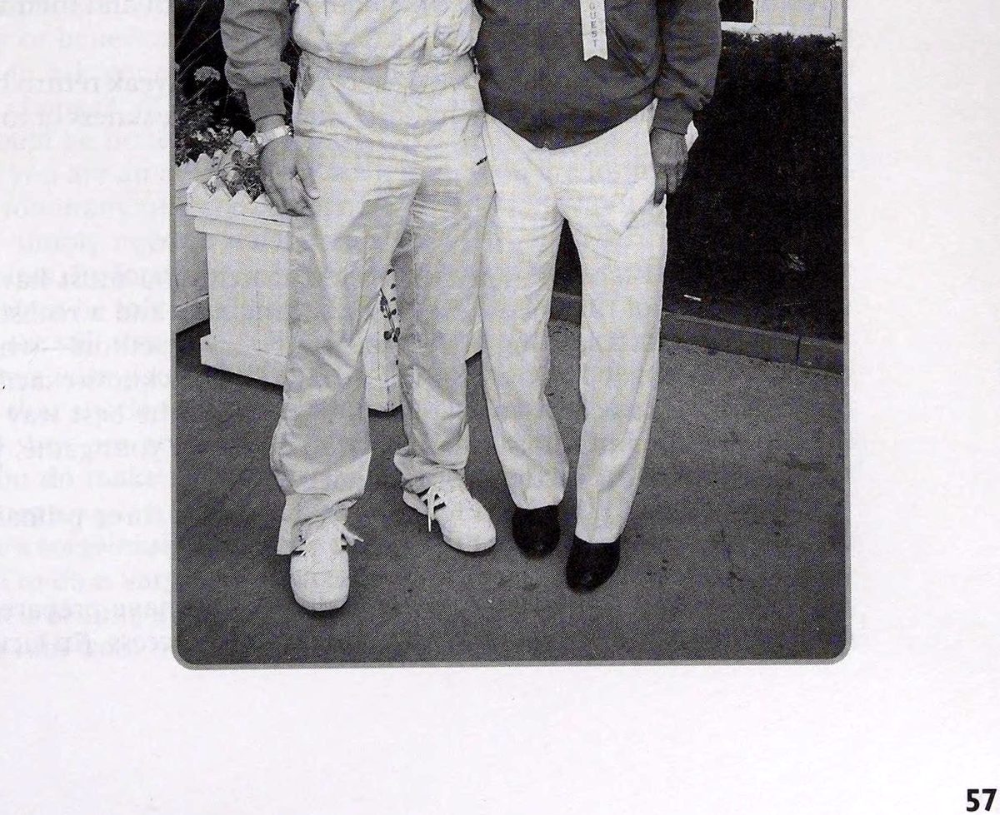
Khắc chế các phong cách thi đấu khác nhau
Một điểm vượt qua mọi phong cách và chiến lược trò chơi bất kể bạn đang chơi ai. Mục tiêu số một của bạn về mặt chiến lược và chiến thuật là áp đặt trò chơi của bạn lên đối thủ bằng cách làm nổi bật điểm mạnh của bạn càng nhiều càng tốt và giảm thiểu điểm yếu của bạn. Sai lầm chết người mà người chơi mắc phải là rơi vào bẫy chơi theo lối chơi của người chơi khác. Ví dụ: nếu bạn đang chơi một kẻ phản công, điều cuối cùng bạn muốn thử là đánh bại anh ta trong trò chơi của chính anh ta, trừ khi bạn là một kẻ phản đòn. Hãy nhớ rằng, hãy chơi trò chơi của bạn, làm những gì bạn giỏi nhất và thực hiện những điều chỉnh chiến thuật tinh tế cần thiết. Hãy trung thực với người chơi của bạn!
Nếu bạn nhớ một điều về chương này, thì chiến thuật của bạn phải xuất phát từ chiến lược của bạn! Có, bạn cần biết và sử dụng các nguyên tắc cơ bản về tỷ lệ phần trăm cao, lựa chọn âm thanh và các lĩnh vực khác được thảo luận trong chương này. Nhưng đừng bao giờ, đừng bao giờ đánh mất kiểu người chơi của bạn. Trong bối cảnh đó, hãy thực hiện những điều chỉnh chiến thuật cần thiết mà bạn cần thực hiện trong quá trình thi đấu. Nếu bạn làm theo nguyên tắc đơn giản này, tôi hứa với bạn rằng năng lực chiến thuật của bạn trên sân sẽ đưa bạn lên một tầm cao mới mà thậm chí không cần đánh bóng tốt hơn bạn hiện tại. Nếu bạn kết hợp kiến thức mới tìm thấy này với lời khuyên từ chương tiếp theo về kỹ thuật tối ưu hóa, thì bầu trời là giới hạn!
Reha Laeeateites
ero là
Chương 4: Tối ưu hóa kỹ thuật
Việc tập trung vào các nguyên tắc cơ bản thực sự của kỹ thuật sẽ cho phép phong cách đánh tự nhiên của bạn nổi lên, giúp bạn đánh sạch, nhất quán và có sức mạnh.
tồn tại kỹ thuật tiêu chuẩn hoặc đường vung gậy cho một cú đánh tối ưu cho tất cả người chơi. Tuy nhiên, có một kỹ thuật tối ưu cho từng người chơi. Mỗi người chơi là duy nhất, có những đặc điểm thể chất và tâm lý riêng. Do đó, điều tối ưu cho người chơi này có thể không tối ưu cho người chơi khác. Đó là lý do tại sao các chuyên gia đẳng cấp thế giới trong trò chơi ngày nay sử dụng nhiều kỹ thuật khác nhau.
Kỹ thuật tốt là một trong những chìa khóa thành công trong quần vợt; kỹ thuật tối ưu là chìa khóa để bạn phát huy hết tiềm năng của mình. Bí quyết để tối ưu hóa kỹ thuật của bạn là tập trung vào các nguyên tắc cơ bản của trò chơi, đồng thời để phong cách đánh tự nhiên và sự tinh tế của riêng bạn phát triển.
Aer eae waa
Đội trưởng đội tuyển Davis Cup Hoa Kỳ và cựu tay vợt đẳng cấp thế giới
Mọi người luôn hỏi tôi rằng nếu tôi dạy một đứa trẻ cách chơi hoặc bắt một học sinh lớp dưới và uốn nắn các cú đánh của chúng, tôi muốn kỹ thuật của chúng như thế nào. Họ nên đánh với độ xoáy mạnh hay những cú đánh phẳng hơn? Độ bám cực cao hay truyền thống hơn? Cú trái tay bằng một hay hai tay? Câu trả lời của tôi cho những câu hỏi này và bất kỳ câu hỏi nào liên quan đến tất cả các biến số liên quan đến việc xây dựng trò chơi của người chơi luôn giống nhau. Nó hoàn toàn dựa trên từng người chơi. Tôi cho chúng ăn một quả bóng, không nói một lời nào, xem cách chúng đánh một cách tự nhiên và sau đó áp dụng các thông số đó. Tốt nhất là hãy lấy bản năng tự nhiên của người chơi, cả về tinh thần và thể chất, và để điều đó quyết định phong cách chơi của họ. Khi huấn luyện viên cố gắng áp đặt một kỹ thuật nào đó không tự nhiên lên một cầu thủ, đó sẽ không bao giờ là một cú đánh đáng tin cậy.
Một nét giống như một dấu vân tay—không có hai cái nào giống hệt nhau và có nhiều cách để tiếp tục. Tôin chương này Nick chỉ cho bạn những nền tảng hữu hiệu và hiệu quả nhất để xây dựng các cú đánh của bạn. Anh ấy bắt đầu với ý tưởng đặt mình vào vị trí thích hợp và giữ thăng bằng khi thực hiện cú vung vợt - những yếu tố cốt lõi để đi vào vùng đánh tối ưu. Với những phần cơ bản này, bạn sẽ phát triển kỹ thuật của riêng mình để giúp bạn thoải mái với các cú đánh của mình. Nếu bạn cảm thấy thoải mái thì bạn tự tin.
Điều đó cực kỳ quan trọng khi thực hiện các cú đánh của bạn dưới áp lực một cách nhất quán. Nếu bạn không cảm thấy hài lòng với cú đánh của mình thì kỹ thuật của bạn sẽ không thành công và khi trận đấu trở nên căng thẳng, cú đánh của bạn sẽ bỏ rơi bạn.
Anh trai tôi, John, là một ví dụ tuyệt vời về việc giúp một cầu thủ phát triển nhờ kỹ thuật bản năng của mình. Rõ ràng anh ấy có phong cách chơi độc đáo của riêng mình. Trong trận đấu hôm nay, bạn khó có thể thấy ai cố gắng chơi bằng một tay cầm như anh ấy. Mặc dù nhiều cú đánh của anh ấy trông không giống như được lấy từ sách giáo khoa, nhưng nếu bạn phân tích các yếu tố như lấy bóng sớm, giữ thăng bằng và đánh trúng cú đánh, chúng gần như hoàn hảo. Họ thành công vì những nguyên tắc cơ bản của anh ấy rất đúng đắn.
Chừng nào nền tảng của bạn còn vững chắc thì cá tính riêng của bạn có thể nổi lên và thể hiện qua từng nét vẽ của bạn. Đó là những điều cần thiết để trở thành một tiền đạo cầm bóng hiệu quả. Tập trung vào các nguyên tắc cơ bản được thảo luận trong suốt chương này; họ sẽ cung cấp cho bạn hướng dẫn rõ ràng để phát huy hết tiềm năng của các cú đánh của bạn.
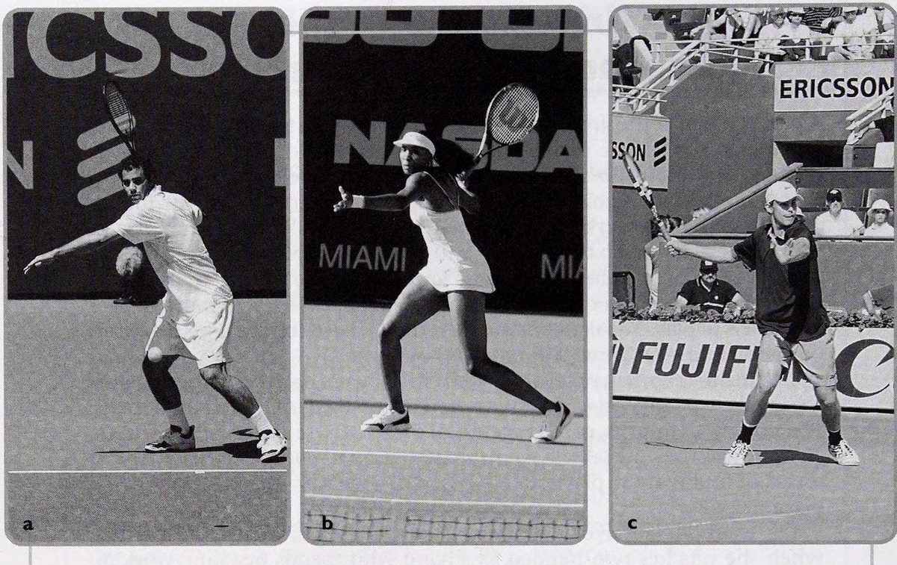
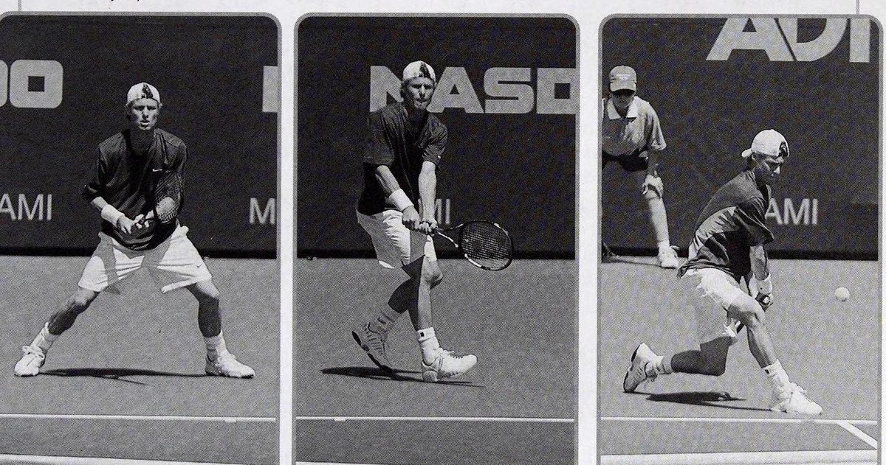
Nền tảng kỹ thuật
Có rất nhiều sự nhầm lẫn về những nguyên tắc cơ bản của kỹ thuật.
Bí quyết là có thể phân biệt giữa các nguyên tắc cơ bản cơ bản quan trọng và phong cách đánh theo chủ nghĩa cá nhân, đồng thời loại bỏ các sai sót kỹ thuật làm hạn chế khả năng của bạn. Điều tuyệt vời khi biết những điều cơ bản là bằng cách làm việc với chúng, bạn sẽ tự nhiên loại bỏ được hầu hết các lỗi kỹ thuật. Vì vậy, chương này sẽ chỉ tập trung vào những gì tôi coi là nguyên tắc kỹ thuật cơ bản quan trọng về các cú đánh chạm đất, cú vô lê, trả bóng và giao bóng. Những nguyên tắc cơ bản này phù hợp và có thể áp dụng cho hầu hết mọi lứa tuổi và trình độ chơi. Bạn có thể chọn bất kỳ cú đánh nào, tìm hiểu những điểm chính, thực hiện chúng và trò chơi của bạn sẽ được cải thiện.
Thật không may, nhiều người chơi—từ các cầu thủ câu lạc bộ cho đến các chuyên gia lưu diễn—dành phần lớn thời gian của họ để làm những việc sai kỹ thuật.
Họ thường cố gắng sửa chữa những sai sót kỹ thuật bằng cách cải thiện phong cách đánh của mình, điều mà họ nhầm lẫn với kỹ thuật cơ bản. Đây là một hành động vô ích nếu người chơi không có những kiến thức cơ bản ngay từ đầu.
Ví dụ, một người chơi có vị trí cơ thể kém so với bóng khi cô ấy đánh trái tay bằng hai tay, người dành thời gian tập luyện kiểu vung vợt sau mà cô ấy sẽ thực hiện—cú giật hoặc lùi thẳng—là đang tham gia vào một hành động vô ích. Những cầu thủ giỏi thực hiện thành công nhiều kiểu backswing. Tuy nhiên, không ai có cú đánh trái tay bằng hai tay tốt mà luôn có tư thế cơ thể kém so với bóng. Kiểu backswing thiên về phong cách đánh hơn; tư thế cơ thể tốt là điều cơ bản. Hãy nhớ rằng, những nguyên tắc cơ bản mà tôi sẽ nói đến trong chương này vượt xa phong cách đánh bóng.
Hãy nhìn vào những cú thuận tay của Pete Sampras, Venus Williams, và Andy Roddick (xem ảnh trang 70). Những tay vợt vĩ đại này đều có những kỹ thuật thuận tay rất khác nhau. Mỗi người có một phong cách đánh bóng riêng. Tuy nhiên, cả ba đều thực hiện các nguyên tắc cơ bản của cú đánh một cách hoàn hảo. Câu hỏi đặt ra là bạn có biết những nguyên tắc cơ bản đó là gì không?
Một khi bạn biết các nguyên tắc cơ bản thực sự của kỹ thuật, bạn có thể nỗ lực cải thiện chúng. Và khi bạn làm vậy, có hai điều tuyệt vời sẽ xảy ra. Đầu tiên, bạn sẽ cải thiện nền tảng kỹ thuật của mình, và thứ hai, phong cách cá nhân và sự tinh tế của bạn trên sân sẽ xuất hiện một cách tự nhiên.
Sự kết hợp này là chìa khóa để phát triển kỹ thuật tối ưu của bạn, điều này sẽ cải thiện đáng kể trò chơi của bạn cũng như tối đa hóa sự thích thú của bạn.
Pete Sampras, Venus Williams và Andy Roddick thể hiện cú thuận tay.
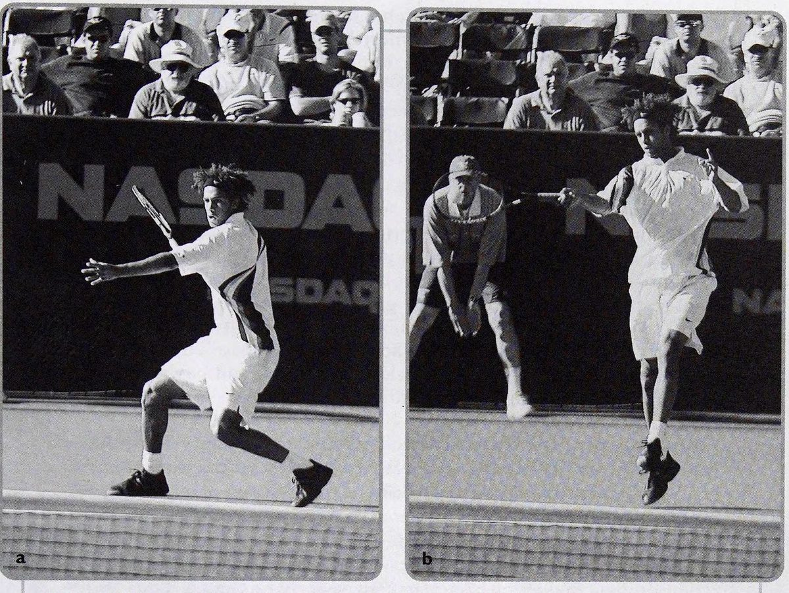
Phát triển tổng thể
Bạn phải xem việc phát triển kỹ thuật của mình như một phần của toàn bộ quá trình phát triển khả năng chơi trò chơi thành công. Có kỹ thuật tốt không phải là mục tiêu cuối cùng của bạn. Nó cũng không thể được dạy trong chân không.
Điều tôi muốn nói là bạn không muốn liên tục tách biệt công việc kỹ thuật của mình khỏi chiến thuật chơi. Quá nhiều người chơi nghĩ rằng việc cải thiện kỹ thuật sẽ giải quyết được mọi vấn đề của họ. Do đó, mục tiêu của bạn là phát triển kỹ thuật tối ưu để nâng cao chiến lược, chiến thuật, lựa chọn cú đánh và khả năng ghi điểm trong một trận đấu.
Nhiều năm trước, một nữ chuyên gia trẻ mà tôi đang làm việc cùng đã gọi cho tôi lúc 2 giờ sáng.
từ Châu Âu trong cơn hoảng loạn. "Nick," cô ấy kêu lên trên điện thoại, "Tôi đã đánh trượt tất cả các cú trái tay ở giữa lưới. Tôi phải làm gì đây?" Rõ ràng là cô ấy đang tìm kiếm một số lời khuyên kỹ thuật sâu sắc. Mệt mỏi và không chút khó chịu, tôi chỉ nói với cô ấy: “Hãy nhắm cao hơn!” và cúp máy. Sau này khi tôi nói chuyện với cô ấy, cô ấy nói rằng lời khuyên của tôi thực sự có ích. Vấn đề là có kỹ thuật tốt sẽ chẳng có ý nghĩa gì nếu nó không được xem chỉ như một thành phần khác của trò chơi.
Cách đây vài năm, tôi đã phát biểu tại Hội thảo Huấn luyện Toàn cầu của Liên đoàn Quần vợt Quốc tế ở Casablanca. Có 300 huấn luyện viên phát triển hàng đầu từ 70 quốc gia tham dự. Trong buổi nói chuyện của tôi, khán giả trở nên vô cùng im lặng khi tôi nói: "Nếu bạn đang dạy các cầu thủ của mình bắt chước kỹ thuật của những cầu thủ hàng đầu trong trận đấu ngày nay, thì bạn đang dạy họ trở thành một thế hệ đi sau làn sóng vô địch tiếp theo."
Tôi ngay lập tức thu hút được sự chú ý của mọi người. Tôi giải thích rằng các huấn luyện viên thành tích cao không nên tập trung vào phong cách đánh mà nên tập trung vào các nguyên tắc cơ bản thực sự của kỹ thuật. Các nguyên tắc cơ bản thực sự nói chung là những điểm chung trong kỹ thuật và chuyển động mà hầu như tất cả các cầu thủ vĩ đại đều thực hiện. Ngoài ra, trong quá trình luyện tập, họ (huấn luyện viên) phải mô phỏng những yêu cầu mà cầu thủ của họ sẽ gặp phải ở cấp độ thế giới. Điều này sẽ cho phép mài giũa các nguyên tắc cơ bản về kỹ thuật của người chơi để thích ứng với nhu cầu luôn thay đổi của trò chơi, trong khi phong cách đánh của họ phát triển một cách tự nhiên phù hợp với tính cách và đặc điểm thể chất của họ.
Sự kết hợp này tạo ra kỹ thuật tối ưu.
Tôi tiếp tục nói rằng trò chơi đang phát triển không ngừng. Các cầu thủ từ một thế hệ không có kỹ thuật giống như thế hệ trước. (Hãy nhìn vào quá trình tiến bộ của các nhà vô địch thế giới nam, từ Jimmy Connors và Bjorn Borg những năm 1970; đến John McEnroe, Boris Becker và Stefan Edberg trong những năm 1980; đến Jim Courier, Pete Sampras và Andre Agassi trong những năm 1990. Điều này cũng đúng với phụ nữ, với Billie Jean King đến Chris Evert, Martina Navratilova, Steffi Graf, Monica Seles; tới Martina Hingis, Lindsay Davenport, Venus và Serena Williams ngày hôm nay.
Với tư cách là một huấn luyện viên, tôi không muốn giới hạn các cầu thủ với những kỹ thuật và phong cách đánh lỗi thời không cho phép họ phát huy hết tiềm năng của mình. Vì vậy, nếu bạn muốn phát triển nhà vô địch vĩ đại tiếp theo, hãy nhớ rằng người chơi đó có thể sẽ trông khác—về mặt kỹ thuật—với những nhà vô địch ngày nay.
Ví dụ, bạn không muốn thực hiện cú cắt trái tay của mình chỉ bằng cách nhờ ai đó đưa bóng cho bạn khi luyện tập (giả sử bạn không học cú cắt này lần đầu tiên). Bạn cần kết hợp các tình huống chiến thuật vào quá trình luyện tập của mình. Bạn không chỉ cần học cách thực hiện cú đánh mà còn phải học thời điểm thực hiện cú đánh, cũng như từ các vị trí khác nhau và trong các tình huống trận đấu khác nhau. Việc đánh một lát khi bạn muốn tiếp cận lưới sẽ khác rất nhiều so với việc cố gắng giữ bóng thấp trước đối thủ đang lao vào lưới. Vì vậy, khi bạn đang luyện tập kỹ thuật, hãy luôn cố gắng kết hợp yếu tố chiến thuật vào buổi tập.
Tôi nhớ lần đầu tiên tôi nhận ra rằng trò chơi (và đặc biệt là kỹ thuật) đang phát triển. Tôi đang thi đấu trong một giải đấu ở Đức vào năm 1983 trong một trận đấu đôi ở vòng một.
Chúng tôi thi đấu với hai thiếu niên 15 và |6 tuổi đến từ Đức, và chúng tôi đã phải cố gắng hết sức khi hai cầu thủ trẻ này đập bóng vào chúng tôi. Đó là một ngôi nhà chật cứng, và đám đông phát điên vì hai cầu thủ trẻ người Đức này là thành viên của đội tuyển quốc gia ưu tú của họ và đặt nhiều hy vọng vào họ. Tôi nhớ mình đã nghĩ, Tôi đây, một chuyên gia lưu diễn kỳ cựu, đang gặp khó khăn trong việc xử lý nhịp độ của một đứa trẻ 5 tuổi. Wow, trò chơi đã thay đổi như thế nào. Chắc đã đến lúc tôi phải nghỉ hưu rồi! Chà, chúng tôi suýt đánh bại họ với tỷ số 7-5 trong set thứ ba. Tuy nhiên, tin tốt là chúng tôi đã vô địch giải đấu nên ý nghĩ về việc giải nghệ đã bị quên lãng. Nhưng cậu bé 5 tuổi đó không hề bị lãng quên. Tên anh ấy là Boris Becker!
Boris, cùng với lvan Lendl, đã giúp cách mạng hóa quần vợt chuyên nghiệp bằng sức mạnh
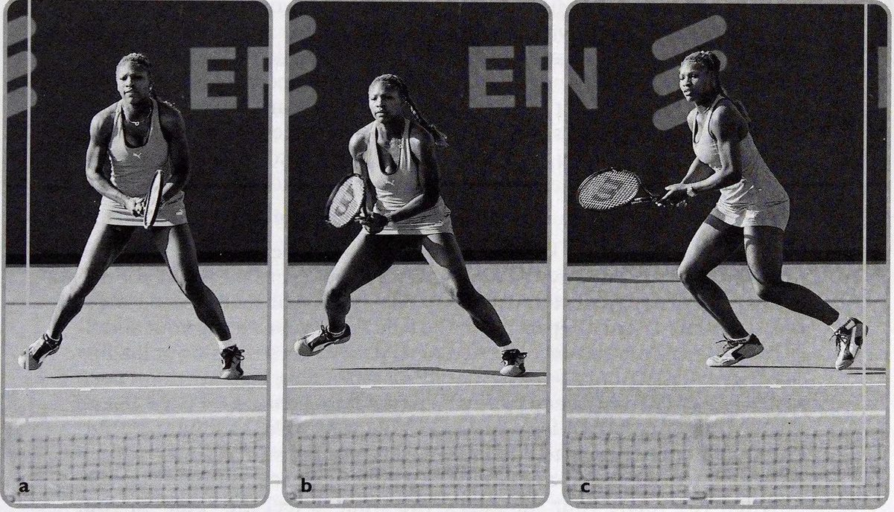
Đặc điểm của kỹ thuật đỉnh cao
Richard Schonborn của Đức—một trong những huấn luyện viên thành tích cao hàng đầu trên thế giới và là bạn của tôi—nói rằng kỹ thuật tuyệt vời có ba đặc điểm (xem cuốn sách của ông, Kỹ thuật nâng cao để thi đấu quần vợt). Tôi đã mở rộng ý tưởng của mình thành năm đặc điểm của kỹ thuật tuyệt vời.
1. Đơn giản. Nó chỉ sử dụng các bộ phận cơ thể cần thiết (hoặc ít) nhất có thể và không chứa các chuyển động không cần thiết hoặc phản tác dụng.
2. Hiệu quả. Nó sử dụng nỗ lực tối thiểu để hoàn thành mục tiêu. Nó cũng giúp giảm thiểu căng thẳng cho cơ thể, có thể ngăn ngừa chấn thương.
3. Có hiệu lực. Nó tạo ra kết quả mong muốn với tính nhất quán.
4. Linh hoạt và đa năng. Nó có thể được điều chỉnh cho phù hợp với yêu cầu chiến thuật của các tình huống trận đấu.
5. Tương thích. Nó tạo điều kiện cho bạn có khả năng chơi trò chơi phù hợp với tính cách của bạn.
Hãy nhớ rằng mục tiêu của bạn là tối ưu hóa kỹ thuật của bạn bằng cách tìm hiểu các nguyên tắc cơ bản về cơ học của quá trình tạo cú đánh và cho phép các đặc điểm cú đánh của riêng bạn (phong cách của bạn) phát triển.
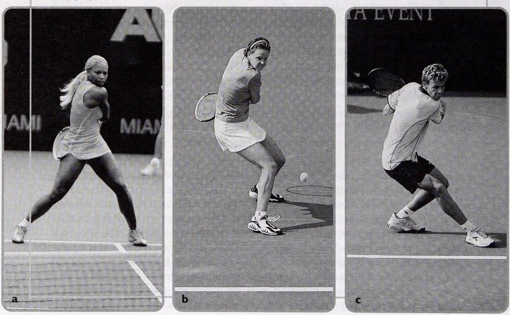
Trở về với nền tảng
Trong các đoạn văn sau, tôi đã liệt kê những điểm chính có thể áp dụng cho hầu hết mọi cú đánh. (Cú giao bóng là một ngoại lệ trong một số trường hợp vì một số cơ chế của cú giao bóng chỉ áp dụng cho cú đánh đó.) Bất kể trình độ chơi của bạn là gì—dù bạn là người mới bắt đầu hay một vận động viên chuyên nghiệp đẳng cấp thế giới—những nguyên tắc cơ bản này vượt qua mọi phong cách và trình độ khả năng.
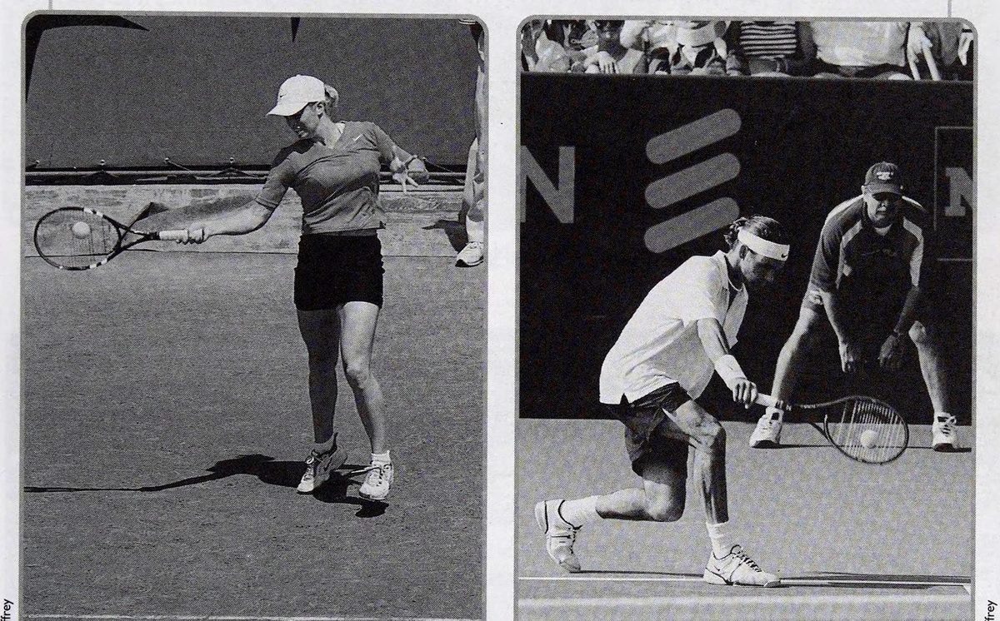
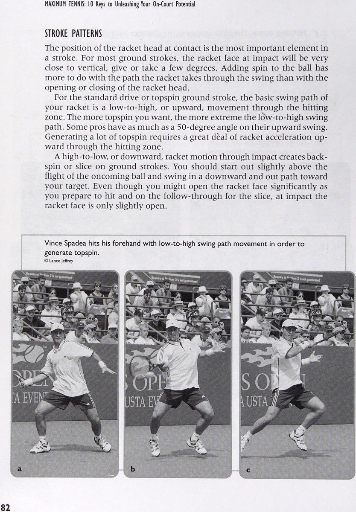
Thăng bằng và trọng tâm
Một trong những nguyên nhân lớn nhất gây ra lỗi trong quần vợt là khả năng giữ thăng bằng kém. Sự cân bằng của bạn được kết nối với trọng tâm của bạn. Hãy coi sự cân bằng là khả năng kiểm soát trạng thái cân bằng hoặc ổn định của bạn. Có hai loại cân bằng. Cân bằng tĩnh là khả năng kiểm soát cơ thể trong khi cơ thể không chuyển động (ví dụ khi bạn chuẩn bị giao bóng). Cân bằng động là khả năng điều khiển cơ thể trong quá trình chuyển động (ví dụ: khi bạn đổi hướng sau khi đánh một cú đánh hoặc khi đánh trên đường chạy).
Trọng tâm của bạn liên tục di chuyển khi bạn chơi. Đó là một điểm tưởng tượng mà xung quanh trọng lượng cơ thể của bạn được phân bố đều. Vị trí lý tưởng khi bạn chuẩn bị tách bước hoặc thực hiện một cú đánh là phải có trọng tâm thấp (hoàn thành bằng cách uốn cong đầu gối), với trọng tâm nằm ngay phía trên một điểm ở giữa hai bàn chân của bạn hay còn gọi là điểm tựa của bạn. Khái niệm này rất quan trọng trong việc hiểu sự cân bằng và ổn định cũng như trọng lực ảnh hưởng đến kỹ thuật quần vợt của bạn như thế nào.
(a) Lleyton Hewitt hiển thị trọng tâm thấp được phân bổ trên đế của anh ấy khi anh ấy tiếp đất từ bước tách đôi của mình. (b) Hewitt duy trì tư thế thân trên tốt khi tiếp cận quả bóng. (c) Lưu ý tư thế của Hewitt – thăng bằng đẹp, tư thế tốt, bệ đỡ rộng, đầu gối cong, đầu hướng vào vùng đánh.
Để tạo ra cú đánh tối ưu, đây là những nguyên tắc cơ bản chính liên quan đến sự cân bằng và trọng tâm mà bạn nên tập trung vào.
- Giữ tư thế thân trên tốt: Giữ đầu ngẩng cao, vai và lưng tương đối thẳng khi bạn tiếp cận và tiếp xúc với bóng.
e Giữ cố định phần thân trên của bạn: Cố gắng giữ cố định phần thân trên của bạn với chuyển động tối thiểu của đầu, đặc biệt là khi bạn di chuyển tới quả bóng.
e Giữ đầu cố định: Trong giai đoạn chuẩn bị và chỉ về hướng vùng đánh trong giai đoạn đánh, hãy giữ đầu cố định nhất có thể.
e Sử dụng đế đỡ thích hợp: Giữ hai chân của bạn cách nhau ít nhất bằng chiều rộng vai khi bạn chuẩn bị đánh bóng.
e Tăng cường độ ổn định: Trong giai đoạn chuẩn bị và vung vợt ra sau, hãy uốn cong đầu gối của bạn, điều này sẽ hạ thấp trọng tâm của bạn và tăng cường độ ổn định.
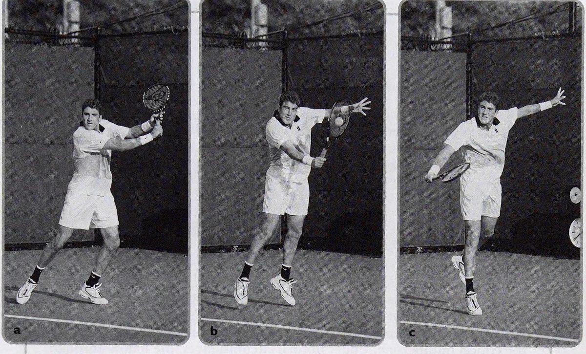
Chuỗi động học
Đừng sợ hãi trước cái tên hoa mỹ. Chuỗi động học đơn giản có nghĩa là cơ thể hoạt động như một hệ thống các mắt xích, nhờ đó lực do một bộ phận của cơ thể tạo ra sẽ được truyền một cách trơn tru sang bộ phận tiếp theo. Hãy nghĩ về nó theo cách này:
Cơ thể bạn cuộn tròn trong giai đoạn chuẩn bị bằng cách xoay vai, thân, hông và uốn cong đầu gối. Sau đó, cơ thể bạn thả lỏng trong giai đoạn đánh, với năng lượng được truyền từ chân đến hông, thân, vai, cánh tay, cổ tay và cuối cùng đến vợt của bạn. Đây là cách các chuyên gia tạo ra rất nhiều sức mạnh.
Điều quan trọng là bạn ít nhất phải hiểu khái niệm rằng các cú đánh quần vợt mạnh nhất (giao bóng và đánh trên mặt đất) bắt đầu bằng cú công bóng bằng chân.
tạo ra lực phản ứng mặt đất có thể được truyền lên các đoạn của chuỗi động học tới vợt. Kiến thức này sẽ giúp bạn hiểu rõ hơn cách phân tích kỹ thuật của riêng bạn và sau đó là những gì bạn cần phải làm.
Bốn kiểu cầm vợt chính được sử dụng trong quần vợt: lục địa, đông, bán tây và tây. Mỗi cái đều có ưu điểm và nhược điểm. Kiểu cầm vợt được sử dụng cũng sẽ ảnh hưởng đến phong cách chơi và chiến thuật của người chơi.
e Lục địa. Cách cầm vợt lục địa là một trong những cách cầm vợt phổ biến nhất cho bóng chuyền và giao bóng. Nó không được sử dụng phổ biến cho các cú đánh thuận tay trên mặt đất, nhưng nhiều người chơi - bao gồm cả những người chơi đẳng cấp thế giới - sử dụng nó cho cả cú đánh trái tay bằng một và hai tay. Vùng đánh hiệu quả nhất cho
(a) James Blake thể hiện chuỗi động học bằng cách nạp vào các nhóm cơ lớn trong giai đoạn chuẩn bị, (b) sau đó giải phóng năng lượng này từ đầu.
kiểu cầm vợt kiểu lục địa có xu hướng thấp hơn và gần cơ thể hơn một chút so với vùng đánh của kiểu cầm vợt phía đông. Khi ba trong số bốn giải Grand Slam được thi đấu trên sân cỏ, nhiều tay vợt chuyên nghiệp đã sử dụng kiểu cầm vợt châu lục cho cả cú thuận tay và trái tay vì độ nảy trên sân cỏ cực kỳ thấp. Ngày nay rất ít người làm được điều đó. Nếu bạn là một tay vợt trẻ, đầy tham vọng và bạn sử dụng cách cầm vợt này cho cú thuận tay, tôi khuyên bạn nên liên hệ với một đại lý địa phương ở Hoa Kỳ.
Hiệp hội quần vợt chuyên nghiệp (USPTA) hoặc Cơ quan đăng ký quần vợt chuyên nghiệp (PTR) chuyên nghiệp để giúp bạn chuyển sang kiểu cầm vợt phía đông.
Ưu điểm của cách cầm vợt kiểu lục địa là nó có hiệu quả cho cả cú vô lê trái tay và thuận tay, do đó loại bỏ nhu cầu thay đổi cách cầm vợt của bạn trên lưới; và nó có hiệu quả trong việc giao bóng vì nó cho phép cổ tay hoạt động tốt và nghiêng cẳng tay. Tuy nhiên, nhược điểm của việc sử dụng kiểu cầm vợt lục địa bao gồm khó khăn trong việc đánh bóng từ trung bình đến cao và thậm chí tạo ra một lượng nhỏ xoáy lên ở phía thuận tay.
e Đông. Cách cầm vợt thuận tay và trái tay kiểu phương đông cổ điển phù hợp với mọi kiểu xoay và thế đứng. Nó có vùng đánh thoải mái cao hơn một chút và xa hơn về phía trước so với vùng đánh lục địa. Cách cầm vợt phía Đông hiện nay là cách cầm vợt phổ biến cho trái tay bằng một tay. Ưu điểm của việc sử dụng kiểu cầm vợt phía đông là nó có hiệu quả đối với hầu hết các kiểu đánh, bao gồm cả cú công bóng và cú đánh xoáy lên, và nó có một số hạn chế đáng kể. Một nhược điểm là khó sử dụng nó trên những quả bóng ở độ cao ngang vai hoặc cao hơn.
e Bán Tây. Cách cầm vợt này được sử dụng cho cú thuận tay. Bằng cách xoay tay theo chiều kim đồng hồ từ cách cầm vợt phía đông, kiểu cầm vợt nửa tây cho phép bạn đánh những quả bóng nảy cao hơn một cách thoải mái hơn và tạo điều kiện thuận lợi cho việc sử dụng kiểu đánh top-spin. Đây là quan điểm chung của các chuyên gia hàng đầu. Vùng đánh thoải mái nhất cho kiểu cầm vợt bán tây là ở độ cao giữa ngực và vai.
Ưu điểm của việc sử dụng kiểu cầm vợt bán tây là nó rất tốt trong việc truyền xoáy lên, đánh mạnh và xử lý những quả bóng cao hơn thắt lưng. Một số nhược điểm bao gồm khó xử lý bóng thấp hơn thắt lưng và bóng ngắn tiếp đất gần lưới và có sự thay đổi cách cầm lớn hơn từ cách cầm thuận tay sang cách cầm trái tay tiêu chuẩn.
Khi Bjorn Borg lần đầu tiên bùng nổ trên đấu trường quốc tế khi giành chức vô địch Ý và Pháp mở rộng khi còn là một thiếu niên, anh ấy đã sử dụng kiểu cầm vợt bán tây. Kiểu cầm vợt này được coi là cực kỳ cực kỳ đến nỗi tất cả những người được gọi là chuyên gia đều tự tin dự đoán rằng anh ta chỉ có thể thắng trên sân đất nện vì bóng nảy lên cao và anh ta sẽ không bao giờ có thể thích nghi với môn quần vợt trên sân cỏ nơi độ nảy thấp. Chà, sau khi giành 5 chức vô địch Wimbledon liên tiếp (thi đấu trên sân cỏ) thì không còn ai nói như vậy nữa. Hiện nay kiểu cầm vợt bán tây là kiểu cầm vợt phổ biến nhất trong các giải đấu chuyên nghiệp dành cho cú thuận tay.
và phương Tây. Tay cầm phía tây xoay xa hơn so với báng cầm phía tây và đặt bàn tay bên dưới báng cầm. Cách cầm vợt này không được sử dụng cho các cú đánh trái tay và được coi là một cách cầm vợt cực đoan ngay cả đối với các cú đánh thuận tay. Nhiều chuyên gia - sử dụng cách cầm vợt này, thường là các chuyên gia trên sân đất nện, vì bóng nảy cao hơn trên sân đất nện.
Tôi không khuyến nghị cách cầm này cho những người chơi trẻ tuổi vì nó có thể hạn chế sự phát triển của một trò chơi toàn diện. Những người chơi sử dụng kiểu cầm vợt kiểu Tây thường gặp khó khăn khi di chuyển vào lưới và đánh bóng.
Ưu điểm của cách cầm vợt kiểu phương Tây bao gồm việc truyền topspin tốt cho những quả bóng có độ nảy từ trung bình đến cao và giúp bạn dễ dàng xử lý những quả bóng ở độ cao ngang ngực hoặc cao hơn. Một số nhược điểm là rất khó xử lý những quả bóng thấp hơn thắt lưng và những quả bóng ngắn chạm lưới; gây ra vấn đề khi đánh thuận tay trên đường chạy; có sự thay đổi lớn về cách cầm vợt từ cách cầm thuận tay sang cách cầm vợt trái tay tiêu chuẩn; và gặp khó khăn trong việc phát triển một trò chơi toàn diện. Những người chơi sử dụng cách cầm vợt này thường gặp khó khăn trong việc điều chỉnh cách sử dụng cách cầm vợt lục địa cho những cú vô lê.
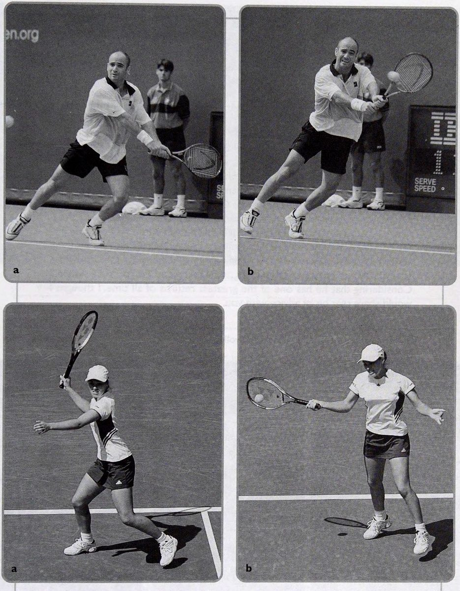
Chuẩn bị cú đánh
Bạn có thể có những cú đánh đẹp nhất trên thế giới, nhưng nếu bạn không có những nguyên tắc cơ bản về di chuyển đến bóng và chuẩn bị đánh nó, phần còn lại của cú đánh của bạn sẽ là một cú đánh tồi. Sự chuẩn bị tốt không chỉ cho phép bạn tối đa hóa khả năng kiểm soát và sức mạnh mà còn rất quan trọng trong việc giúp bạn đối phó với sức mạnh ngày càng tăng trong trò chơi ngày nay.
Số lần chạm đất
Các kỹ thuật cơ bản để chuẩn bị đánh một cú là bước tách đôi; đơn vị lần lượt; chuyển động tới bóng (hoặc theo dõi); chuẩn bị vợt và kiểu đánh. Nếu bạn cải thiện bất kỳ hoặc tất cả các lĩnh vực này, trình độ chơi của bạn sẽ được cải thiện đáng kể.
(a) Serena Williams vừa tiếp đất từ bước nhảy, (b) bắt đầu lượt đơn vị, (c) và trong giai đoạn đầu chuẩn bị vợt và theo dõi bóng. Lưu ý rằng cô ấy đã di chuyển vợt một cách độc lập cho đến thời điểm này.
Bước tách đôi là một kỹ thuật cực kỳ quan trọng mà người chơi sử dụng để đưa cơ thể vào vị trí di chuyển tới bóng theo bất kỳ hướng nào nhanh nhất có thể và nó là một trong những nguyên tắc cơ bản nhất của chuyển động trên sân quần vợt. Phần giải thích chi tiết về cách thực hiện bước tách có ở chương 5 về chuyển động.
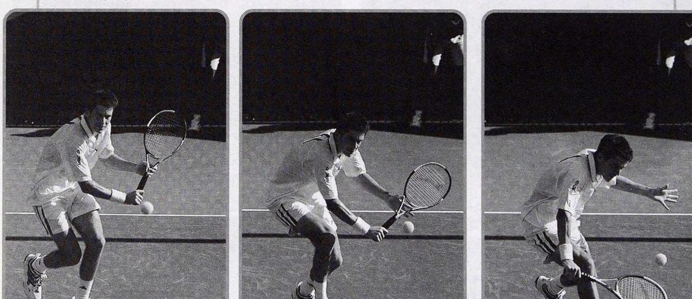
Xoay người đồng bộ và chuẩn bị vợt ban đầu
Lượt đi của đơn vị nói chung là nước đi đầu tiên mà người chơi thực hiện khi họ bước ra khỏi bước chia quân. Chân gần nơi bóng được đánh nhất sẽ quay và bước ra về hướng bóng trong khi phần thân trên (vai và hông) bắt đầu xoay. Ngược lại với những gì thường được dạy, bạn không muốn lấy lại vợt của mình ở giai đoạn này. Tuy nhiên, việc xoay vai cùng với việc di chuyển nhẹ khuỷu tay của tay cầm vợt về phía sau sẽ góp phần vào việc chuẩn bị vợt ban đầu.
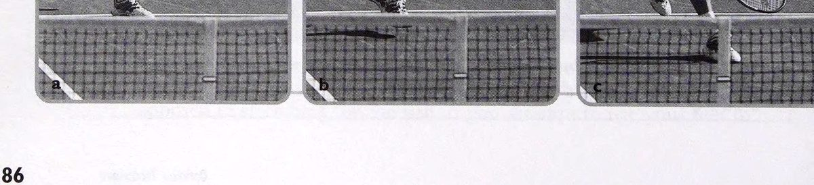
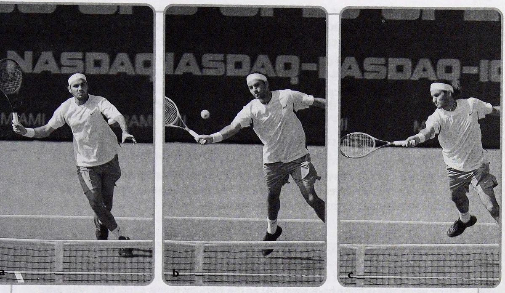
Di chuyển tới bóng (bám bóng)
Sau bước tách và xoay đơn vị, chuyển động của bạn tới bóng khi bạn chuẩn bị đánh và sau bước phục hồi để trở lại vị trí cho cú đánh tiếp theo mà tôi gọi là "theo dõi" bóng. Chìa khóa ở đây là duy trì tư thế tốt—vai và lưng tương đối thẳng với một chút uốn cong về phía trước ở thắt lưng—với chuyển động tối thiểu của phần thân trên và đầu của bạn. Nếu bạn mất thăng bằng động và/hoặc để vai và đầu lắc lư hoặc lắc lư lên xuống quá mức, điều đó gần như không thể theo dõi chính xác quả bóng đang tới. Ngoài ra, tư thế tốt giúp bạn tự do về mặt thể chất để đánh bất kỳ cú đánh nào cần thiết.
Một sai lầm phổ biến là cúi người quá mức ở thắt lưng, điều này làm mất thăng bằng và hạn chế khả năng thực hiện một cú đánh chất lượng của bạn. Giống như bạn là một người mẫu thời trang, hãy nghĩ đến việc giữ thăng bằng một cuốn sách trên đầu khi bạn di chuyển đến quả bóng.
e Tải cơ. Tôi biết có lẽ bạn đã được yêu cầu hàng nghìn lần chỉ cần quay sang một bên khi đánh bóng. Nhưng điều đó là chưa đủ vì nó sẽ không tạo ra độ giãn thích hợp – dự trữ năng lượng ở các nhóm cơ lớn khi bạn chuẩn bị đánh bóng. Tập trung vào việc xoay vai và uốn cong đầu gối. Trên thực tế, bạn sẽ căng hoặc căng các nhóm cơ lớn — ngực, vai, thân, hông, chân — mà không hề nhận ra khi chuẩn bị đánh bóng. (Tham khảo hình a ở trang 75 và hình trả giao bóng ở a và b ở trang 86 để biết ví dụ về điều này.) Điều này cực kỳ quan trọng để tối đa hóa số cú đánh chạm đất và trả giao bóng của bạn, đặc biệt khi bóng được đánh vào bạn với tốc độ lớn.
Khi xoay vai, bạn muốn cảm nhận được lực "kéo" ở vai trước. Đây là một phần quan trọng trong quá trình chuẩn bị vợt của bạn.
bởi vì, khi bạn nhận được "tải trọng" này, bạn sẽ tự động thực hiện được khoảng một nửa cú vung vợt về sau với chuyển động tối thiểu của cánh tay vợt. Tải cơ bắp của bạn theo cách này cũng sẽ cho phép bạn tạo ra rất nhiều lực với một cú backswing tương đối ngắn. Đây là một mẹo có thể giúp bạn thực hiện được điều này. Để cảm nhận được sức nặng của phần thân trên của bạn, hãy nhờ ai đó cho bạn một quả bóng dễ dàng. Trước khi bước tới bóng, hãy xoay phần thân trên và uốn cong đầu gối để chuẩn bị. Bạn sẽ ngay lập tức cảm nhận được quá trình tải trọng lên các nhóm cơ chính của mình. Tham khảo lại trang 75 (a) để biết các bức ảnh về cơ bắp. Trang 80 minh họa những ví dụ điển hình về việc người chơi bị thu hút bởi vai của họ.
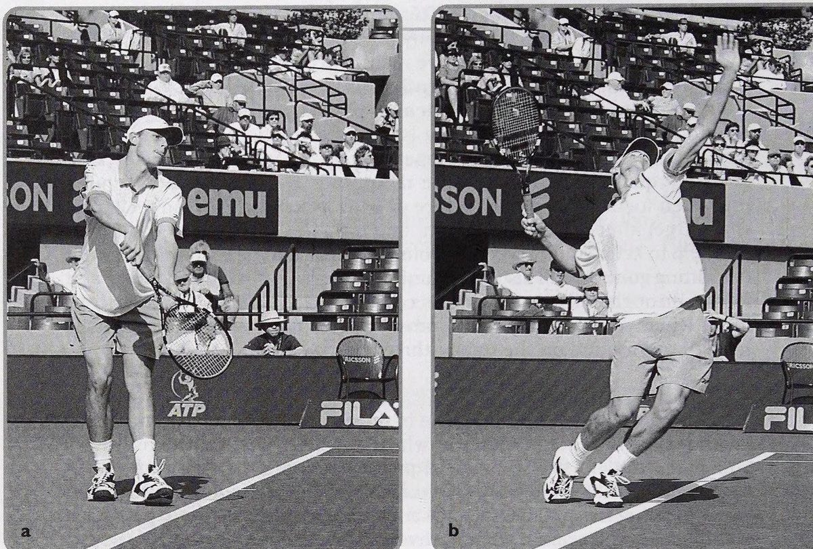
Chuẩn bị vợt
Khi bạn chuẩn bị vợt, hãy cân nhắc những điều sau: vung vợt lùi, thế đứng và vùng đánh.
- Xoay người ra sau. Có một quan niệm sai lầm rằng người chơi nên lấy lại vợt trước khi chuẩn bị đánh bóng. Thời điểm mà cánh tay đánh của bạn thực sự bắt đầu lấy lại vợt sẽ khác nhau tùy theo các kiểu chuẩn bị vợt khác nhau. Tuy nhiên, vợt thường không di chuyển độc lập trong một khoảng cách đáng kể cho đến khi phần lớn quá trình xoay vợt của bạn hoàn thành. Về mặt kỹ thuật, khuỷu tay của cánh tay vợt của bạn ở bên thuận tay sẽ di chuyển nhẹ về phía sau khi vai và hông của bạn bắt đầu xoay; tuy nhiên, bạn sẽ có cảm giác như thể vai và hông của bạn là bộ phận duy nhất chuyển động vào thời điểm đó.
Các cú backswing rất khác nhau tùy theo từng người chơi. Bạn có thể đưa vợt tương đối thẳng về phía sau, theo một cú giật lớn, một cú giật nhỏ, dẫn bằng khuỷu tay hoặc sử dụng các chuyển động khác. Nói chung đây là những chức năng của phong cách, không phải những nguyên tắc cơ bản; do đó, chúng sẽ không được xử lý ở đây. Điều chính là tránh những điều cực đoan và có được sự xoay tốt phần thân trên của bạn.
- Thế đứng. Ba loại tư thế cơ bản cho tất cả các cú đánh quần vợt là mở, bình phương và đóng. Đã có một sự thay đổi đáng kể trong trận đấu theo hướng tư thế cởi mở ở cả thuận tay và trái tay. Sau đây là giải thích ngắn gọn về mỗi điều đó.
1. Lập trường cởi mở. Thế đứng mở hiện nay là động tác chân được sử dụng phổ biến nhất với thuận tay và ngày càng trở nên phổ biến hơn ở phía trái tay. Để thực hiện cú đánh tiếp đất ở tư thế mở, hãy đặt chân sau của bạn gần với đường bay của bóng, với chân trước xa hơn và vai vuông góc với lưới, trái ngược với việc đánh bóng ở tư thế vuông góc hoặc khép kín với vai xoay vuông góc với lưới và bàn chân của bạn thẳng hàng với đường bay của bóng. Sử dụng tư thế mở giúp tiết kiệm khoảng nửa bước và giúp phục hồi nhanh hơn. Ngoài ra, bạn có thể xoay thân trên nhiều hơn với tư thế mở, giúp bạn có nhiều sức mạnh hơn. Thế đứng mở được sử dụng trong cú đánh trái tay thường xuyên hơn bởi những người chơi thuận tay hai tay, nhưng nó cũng đang ngày càng phổ biến với những người chơi một tay.
2. Thế đứng vuông góc. Trong tư thế vuông góc, chân trước và chân sau của bạn vuông góc với lưới. Trọng lượng được chuyển về phía trước theo hướng đánh khi bạn bước vào cú đánh. Tư thế này rất tuyệt vời để giữ thăng bằng và đánh một cú đánh có kiểm soát.
3. Thế đóng. Trong tư thế khép kín, chân trước bước ngang qua chân sau sao cho cơ thể tạo một góc về phía hàng rào bên. Không nên sử dụng thế đứng khép kín để đánh thuận tay, đặc biệt với cách cầm vợt phía đông, nửa tây hoặc tây. Nó thường chỉ hiệu quả ở phía trái tay và ưu tiên hàng đầu của bạn luôn là sử dụng tư thế vuông góc nếu có thể.
Trong suốt trận đấu, bạn có thể sẽ sử dụng cả ba thế đứng.
Thế đứng nào bạn sử dụng trong một cú đánh nhất định sẽ phụ thuộc vào kỹ thuật cá nhân của bạn và cú đánh cụ thể mà bạn đang đánh. Vấn đề là học cách sử dụng tư thế sẽ giúp bạn tối đa hóa cú đánh của mình.
(a) Serena Williams đánh trái tay với thế đứng cởi mở. (b) Lindsay Davenport đánh trái tay với tư thế vuông góc cổ điển. (c) Gustavo Kuerten đánh trái tay bằng một tay với thế đóng. Chú ý chuyển động xoay và tải của vai ở cả ba người chơi.
Vùng đánh. Vùng đánh là khoảng cách từ cơ thể bạn đến điểm bóng tiếp xúc. Để phát triển các cú đánh ổn định, bạn cần thiết lập vùng đánh tối ưu của mình và đánh bóng một cách nhất quán trong vùng đó.
Điểm tiếp xúc thực tế (khoảng cách bạn tiếp xúc với bóng ở phía trước cơ thể) sẽ khác nhau tùy thuộc vào kiểu đánh. Tuy nhiên, vùng đánh của bạn nên thay đổi ít nhất có thể. Về cơ bản, đó phải là một khoảng cách thoải mái với cơ thể để bạn có thể thoải mái thực hiện cú đánh.
Hãy nhớ rằng, đặt cơ thể của bạn ở vị trí lý tưởng để tiếp xúc với bóng là mục tiêu chính của động tác chân tốt.
Kim Clijsters tiếp xúc bóng trên tay cô ấy. Roger Federer tiếp bóng bằng tay thuận tay của anh ấy ở vùng đánh tối ưu.
trái tay trong vùng đánh tối ưu của anh ấy.
Justin Gimelstob thể hiện đường xoay từ cao xuống thấp cho cú đánh trái tay.
Theo dõi
Sự phát triển của công nghệ vợt mới và sự phát triển của kỹ thuật (thay đổi cách cầm, độ xoáy nhiều hơn và tìm kiếm sức mạnh tối đa) đã tăng tốc độ đầu vợt trong tất cả các cú đánh, điều này đã ảnh hưởng sâu sắc đến việc theo dõi và cách dạy nó. Điều quan trọng nhất cần nhớ về cú đánh tiếp theo là, nếu bạn có một đường swing tốt dẫn đến và xuyên qua vùng đánh bóng, thì cú đánh tiếp theo sẽ diễn ra một cách tự nhiên. Nói tóm lại, chính góc và quỹ đạo của đầu vợt khi tiếp xúc có ảnh hưởng về mặt kỹ thuật đến vị trí bóng đi.
Quả bóng chỉ ở trên dây trong khoảng bốn mili giây, có nghĩa là nó sẽ trôi qua rất lâu trước khi bạn hoàn thành dù chỉ một phần nhỏ của lần theo dõi.
Vì vậy, có lý do là việc theo dõi không thực sự quan trọng đối với cú đánh hoặc cú đánh, phải không? Sai! Cú đánh tiếp theo là một phần quan trọng của tất cả các cú đánh.
Việc theo dõi là một thước đo tuyệt vời để xác định xem bạn có đang tiếp cận bóng với đường vung chính xác cho cú đánh mà bạn đang đánh hay không. Ví dụ, người chơi thường nói rằng để có được xoáy lên bạn phải vượt qua đầu hoặc che bóng khi đánh. Trên thực tế, bạn không vượt qua phần trên của quả bóng trong cú đánh mà hơi lật mặt vợt sau cú đánh khi bạn thực hiện cú đánh. Nhưng, nhờ có nhận thức này
trong ý nghĩ của bạn về việc che bóng khi đánh, nó thực sự có thể giúp bạn thiết lập đường xoay chính xác cho cú đánh. Vì vậy, mặc dù việc theo dõi không ảnh hưởng trực tiếp đến đường bay của bóng nhưng trên thực tế nó ảnh hưởng đến cách bạn tiếp cận bóng.
Việc theo dõi tốt cũng giúp ngăn ngừa chấn thương bằng cách giảm thiểu căng thẳng cho cánh tay và vai của bạn. Dưới đây là một vài gợi ý:
e Sau khi tăng tốc qua vùng đánh bóng trong một cú đánh trên mặt đất, đừng cố dừng hoặc giảm tốc độ theo dõi mà hãy để nó kéo dài ra một cách tự nhiên. Thông thường, điều này sẽ dẫn đến việc quấn quanh cổ. Khoảng cách xa hơn để giảm tốc độ vợt trong lượt đánh tiếp theo giúp tránh căng thẳng cho cánh tay và vai của bạn. Trong hầu hết các trường hợp, câu ngạn ngữ cũ về đánh và giữ đích ở phía trước không áp dụng được.
e Khi học một cú đánh mới hoặc sửa một vấn đề trên mặt đất hoặc trên lưới, hãy ghi nhớ những lời khuyên này. Giữ mặt vợt theo đường vung chính xác trong một khoảng cách dài sau khi tiếp xúc sẽ tăng cơ hội thực hiện cú đánh chính xác. Điều này đúng với những cú vô lê cũng như những cú đánh trên mặt đất. Một mẹo khác là mở rộng khả năng theo dõi của bạn qua vùng đánh và hướng ra khu vực mục tiêu trước khi cho phép nó bao quanh.
Cả hai chiến thuật này sẽ giúp bạn học cách kiểm soát đầu vợt qua vùng đánh quan trọng. Trong trường hợp bình thường, đòn tấn công tiếp theo sẽ bạo lực hơn, ra vào vùng đánh rất nhanh.
Tuy nhiên, nếu bạn gặp khó khăn trong việc kiểm soát bóng, những mẹo này sẽ giúp ích.
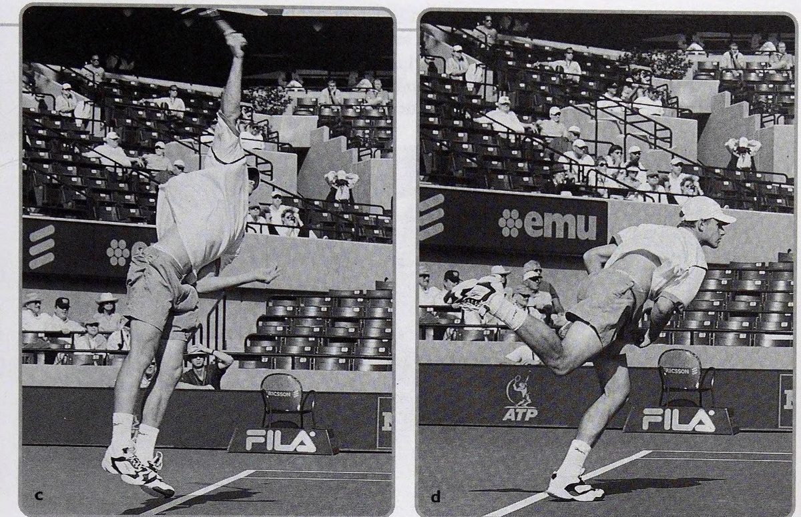
Đỡ giao bóng
Cú trả bóng là một cú đánh cực kỳ quan trọng trong trò chơi của bất kỳ ai, tuy nhiên nó lại là một trong những cú đánh ít được luyện tập nhất. Hãy nhớ rằng, mỗi điểm đều bao gồm một cú giao bóng trả lại (trừ khi có lỗi kép hoặc quân át), điều này khiến nó trở thành cú đánh quan trọng thứ hai trong trò chơi. Cải thiện kỹ thuật hoàn vốn của bạn sẽ mang lại cổ tức lớn. Dưới đây là một số bí quyết để đánh trả tốt. Những điểm này được áp dụng cho cả cú trả bóng thuận tay và trái tay.
e Chia bước. Bắt đầu bước chia bóng của bạn ngay trước khi đối thủ đánh bóng. Tập trung vào thời điểm tiếp xúc để theo dõi bóng.
e Vai trước. Hãy nghĩ đến việc xoay nhanh vai trước để xoay phần thân trên của bạn. Về mặt kỹ thuật, những điều khác sẽ xảy ra nhưng bạn không cần phải lo lắng về chúng. Việc tải nhanh phần thân trên sẽ cho phép bạn thực hiện một cú vung vợt lùi ngắn nhưng vẫn tạo ra lực khi trả bóng.
e Xoay lùi nhỏ gọn. Thường thì điều này sẽ xảy ra một cách tự nhiên nếu bạn quay nhanh vai trước. Cú giao bóng càng khó thì backswing càng nhỏ.
- Động tác bằng chân. Mục tiêu của bạn là đánh bóng trong vùng đánh tối ưu bằng cách di chuyển bàn chân của bạn. Cố gắng giữ chân ở dưới người, thay vì duỗi người để lấy bóng. Nếu bạn cố gắng sử dụng đôi chân của mình để
Hãy chú ý đến việc xoay vai nhanh và vung vợt sau nhỏ gọn khi Agassi chuẩn bị trả bóng trái tay và Hingis thực hiện cú trả bóng thuận tay
Tiếp cận bóng mà không cần chạm tới, bạn sẽ di chuyển chân nhanh hơn và giữ thăng bằng. Nếu bóng ở xa hoặc tới nhanh, bạn sẽ tự động vươn người ra để với lấy. Ý tưởng là bạn không muốn với tới quả bóng trừ khi thực sự cần thiết.
e Đu quay. Nếu bạn thực hiện cú giao bóng sớm, bạn sẽ có cảm giác như mình đang vung vợt theo đường bay của quả bóng, thay vì vung lên (mặc dù về mặt kỹ thuật bạn sẽ vung vợt từ thấp lên cao). Cú đánh của bạn ít có tác động hướng lên trên vì bóng nảy lên nhanh chóng từ mặt đất.
Tôi đang ở sân tập của Câu lạc bộ All England trong tuần đầu tiên của giải vô địch Wimbledon 2001, khi Andre Agassi đến và ngồi ngay cạnh tôi khi anh ấy đang đợi sân tập. Chúng tôi bắt đầu trò chuyện và tôi nhân cơ hội cho anh ấy xem một bài báo về việc trả giao bóng mà tôi đã viết trong Bản tin Huấn luyện Thành tích Cao USTA của chúng tôi (trong đó tôi là biên tập viên), được gửi tới 25.000 huấn luyện viên.
Bài viết giới thiệu một tập hợp các hình ảnh liên tiếp về Andre thực hiện cú trả bóng trái tay. Sau khi nghiên cứu các bức tranh, câu trả lời của anh ấy hiện rõ trong tâm trí tôi. Anh ấy nói, "Nick, tôi thậm chí không nghĩ đến việc lấy lại vợt. Tất cả những gì tôi nghĩ là giữ vợt sát người và xoay vai...kỹ thuật phải đơn giản!"
Xét rằng anh ấy có một trong những lợi nhuận vĩ đại nhất mọi thời đại, tôi nghĩ tôi sẽ chia sẻ lời khuyên đó với bạn.
Tim Henman chuẩn bị thực hiện cú vô lê trái tay.
Roger Federer thực hiện cú vô lê thuận tay. Federer thể hiện kỹ thuật đẹp, đơn giản.
Bóng chuyền
Bí quyết để có được kỹ thuật vô lê tuyệt vời là sự đơn giản. Điều quan trọng nhất là khả năng di chuyển tới bóng, giữ thăng bằng, với cú vung vợt về phía sau tối thiểu và khả năng kiểm soát mặt vợt khi tiếp xúc. Càng có nhiều bộ phận chuyển động và cú xoay bóng càng lớn thì càng khó làm chủ được cú đánh.
Không giống như các cú đánh trên mặt đất, không có nhiều sự khác biệt về kỹ thuật vô lê giữa các chuyên gia hàng đầu.
- Chuẩn bị vợt trước rồi mới di chuyển. Khi bạn chuẩn bị cho cú vô lê, hãy nghĩ đến việc chuẩn bị vợt trước rồi mới di chuyển đến quả bóng. Trên thực tế, bạn sẽ di chuyển và chuẩn bị vợt cùng một lúc. Tuy nhiên, việc sắp xếp vợt sớm sẽ giúp bạn đánh giá rõ ràng chính xác nơi bạn cần di chuyển để có được vị trí tốt nhất cho cú đánh.
Có quá nhiều người chơi nhìn thấy bóng, bắt đầu di chuyển về phía nó và sau đó cố gắng chuẩn bị vợt của mình. Kết quả là vị trí cơ thể kém so với bóng và khó chuẩn bị vợt kịp thời.
- Giữ tư thế tốt. Trong suốt giai đoạn chuẩn bị và đánh, hãy giữ vai và lưng tương đối thẳng.
- Giữ khuỷu tay cong. Khi bạn chuẩn bị vợt cho cú vô lê, hãy đảm bảo rằng khuỷu tay của bạn bị cong. Bạn không bao giờ nên duỗi thẳng cánh tay trong giai đoạn chuẩn bị cho cú vô lê.
e Giữ đầu vợt phía trên cổ tay của bạn. Khi bạn chuẩn bị cho cú vô lê, đầu vợt của bạn thường sẽ bắt đầu cao hơn cổ tay của bạn, với mặt vợt hơi mở.
e Xoay phần thân trên của bạn về phía trái tay. Đừng bắt đầu cú vô lê trái tay với toàn bộ cơ thể của bạn quay sang một bên. Đối mặt với bóng, xoay phần thân trên của bạn khi bạn chuẩn bị, kéo vai để có được sức mạnh cần thiết cho cú đánh, sau đó bước. Điều này sẽ giúp tải các nhóm cơ lớn ở phần trên cơ thể của bạn.
- Giữ khuỷu tay của bạn hướng ra phía thuận tay. Giữ khuỷu tay của bạn cong và hơi hướng ra phía trước cơ thể khi bạn chuẩn bị cho cú vô lê thuận tay.
- Sử dụng xích đu nhỏ gọn. Đúng vậy, các chuyên gia thường thực hiện một cú xoay bóng lớn, nhưng mọi tay vô lê cừ khôi đều có thể thực hiện cú thuận tay hoặc cú trái tay với cú vung ngược và theo sau tối thiểu.
Nhiều năm trước (chắc tôi 14 tuổi) tại Câu lạc bộ Quần vợt Berkley, họ đã tổ chức một sự kiện lớn dành cho nam chuyên nghiệp. Thần tượng của tôi Rod Laver, người hai lần vô địch Grand Slam, đang thi đấu trong sự kiện này. Vì vậy, tôi đã đến giải đấu ba ngày liên tiếp để xem anh ấy thi đấu.
Tôi muốn tìm một lúc nào đó để có thể hỏi anh ấy về kỹ thuật vô lê của anh ấy, nhưng không thể đến gần anh ấy khi anh ấy đang ở sân.
Tuy nhiên, tôi nhận thấy rằng anh ấy thực sự sẽ đi bộ đến sân từ khách sạn của anh ấy, gần câu lạc bộ quần vợt. Vì vậy, vào thứ Sáu, trước trận tứ kết của anh ấy, tôi đến câu lạc bộ sớm và đợi bên ngoài để có thể "chặn" anh ấy trên đường khi anh ấy đang đi đến sân. Khi anh ấy đến gần, tôi thực sự lo lắng. Nhưng tôi đã cố gắng nhổ nó ra. "Ông Laver, tôi có thể hỏi ông một câu hỏi nhanh được không?" "Hãy tiến lên nếu bạn tiếp tục đi bộ," anh ấy nói. "Tôi đang cố gắng cải thiện những cú vô lê của mình. Bạn có điều gì có thể nói với tôi để giúp ích không?" Anh ấy giơ vợt lên như thể sắp đánh một cú vô lê thuận tay và nói: "Hãy giữ vợt hoạt động đơn giản và mạnh mẽ bằng chân của bạn.
Đó là lúc tôi tung cú vô lê tốt nhất của mình."
Lúc đầu, tôi không hiểu hết, nhưng tôi không bao giờ quên những gì anh ấy nói. Khi tôi luyện tập cú vô lê của mình và cải thiện nó trong nhiều năm, tôi ngày càng thấy rõ anh ấy đã đúng như thế nào.
Cho đến ngày nay, khái niệm về kỹ thuật vợt đơn giản với khả năng di chuyển bóng tốt là một phần trong triết lý kỹ thuật của tôi về bóng chuyền. Khoảng 25 năm sau, tôi có vinh dự được đi cùng Rod trên chiếc xe lịch sự tại Giải Mỹ mở rộng. Tôi đã đề cập đến câu chuyện với anh ấy. Anh nhớ về giải đấu nhưng không nhớ cậu bé hỏi anh về cú vô lê. Điều quan trọng là tôi đã không quên!
- Kiểm soát mặt vợt trước và sau cú đánh. Nếu bạn có thể kiểm soát mặt vợt trước và một chút sau cú đánh (nếu bạn kiểm soát nó trước và sau cú đánh, điều đó có nghĩa là bạn đã duy trì được khả năng kiểm soát khi tiếp xúc), thì bạn có cơ hội lớn để đánh bóng chuyền tốt một cách liên tục. Với suy nghĩ này, trong giai đoạn chuẩn bị, hãy cố gắng đặt mặt vợt ngay phía sau đường bay của quả bóng sắp tới. Trong thực tế, bạn có thể cao hơn một chút so với quả bóng đang tới, tùy thuộc vào cú đánh, nhưng điều quan trọng là phải căn chỉnh nó nhanh chóng và không quay mặt vợt ra khỏi quả bóng đang tới. Sau đó tập trung vào việc giữ mặt vợt của bạn hướng về phía mục tiêu sau khi bạn tiếp xúc và giữ điều này trong một giây. Điều này sẽ giúp giữ cho mặt vợt của bạn hướng đúng hướng trong suốt vùng đánh. Nó cũng sẽ giúp giảm thiểu kích thước của cú backswing và cú đánh tiếp theo của bạn. Tất cả những người chơi bóng chuyền cừ khôi đều có thể làm điều này theo ý muốn. Vì vậy, đừng bối rối khi bạn thấy một số vận động viên chuyên nghiệp thực hiện một cú đánh lớn hoặc lật đầu vợt của họ trong lượt theo dõi.
Phục vụ
Cú giao bóng là cú đánh quan trọng nhất trong trò chơi. Mọi điểm đều bắt đầu bằng nó và đó là cú đánh duy nhất trong quần vợt mà bạn có toàn quyền kiểm soát cách mình thực hiện nó. Nói rằng bạn nên tập luyện những cú giao bóng đầu tiên và thứ hai là chưa đúng! Tôi có thể viết cả một chương về kỹ thuật giao bóng.
Để làm được điều đó, tôi đã chọn ra một số điểm quan trọng nhất về kỹ thuật. Một lần nữa, nếu bạn cải thiện bất kỳ mục nào trong số các mục sau đây, bạn sẽ giúp ích đáng kể cho việc giao bóng của mình.
e Thư giãn. Phục vụ là năng lượng lỏng. Đặc biệt, hãy đảm bảo có ít lực căng ở mặt hoặc tay cầm vợt của bạn.
e Số dư. Hãy cân bằng ngay từ đầu.
- Ngón chân trước. Bắt đầu với bàn chân trước của bạn quay sang một bên (ít nhất một góc 30 phần trăm so với lưới) hoặc nó sẽ xoay khi bạn xoay vai.
Nếu ngón chân của bạn hướng thẳng vào lưới, khả năng xoay hông và vai của bạn sẽ bị hạn chế.
- Tung cánh tay. Ném bóng bằng cánh tay sang một bên cơ thể, tạo thành một góc khoảng 45 độ, thay vì ném thẳng ra trước mặt bạn. Điều này sẽ tạo ra sự xoay vai tự nhiên mà không cần suy nghĩ về nó.
- Tung vị trí. Vị trí ném sẽ khác nhau tùy theo phong cách của mỗi người chơi. Tuy nhiên, cú ném phải hơi hướng ra phía trước cơ thể và ngay phía trên vai đánh của bạn. Khi giao bóng xoáy, nó thường sẽ được ném qua đầu bạn vài inch.
- Tung chiều cao. Độ cao cú ném của bạn phải cao hơn một chút so với vị trí bạn tiếp xúc với bóng khi duỗi hết cỡ. Việc ném thấp sẽ hạn chế sức mạnh và tỷ lệ phần trăm dịch vụ của bạn.
Cú giao bóng mạnh mẽ của Andy Roddick.
e Vai. Khi tung bóng lên, bạn nên xoay vai và bắt đầu uốn cong đầu gối. Xoay vai khi bắt đầu, cùng với việc đưa cánh tay quăng sang một bên cơ thể và ngón chân hướng sang một bên, sẽ tự nhiên gây ra một chút xoay ở hông mà bạn không cần suy nghĩ.
e Vị trí nguồn. Nếu bạn có thể vào được thế mạnh tốt ngay trước khi bùng nổ thì cơ hội có được một cú giao bóng tốt của bạn là rất lớn (ảnh b ở trên). Vị trí sức mạnh cho cú giao bóng là khi cơ thể bạn được nạp đầy (dự trữ năng lượng) vào vai, hông và đầu gối ngay trước khi bùng nổ. Vai của bạn được xoay và nghiêng, hông của bạn được xoay và về phía trước, và đầu gối của bạn bị cong. Hầu hết các cầu thủ câu lạc bộ không vào được vị trí này. Tuy nhiên, chỉ cần tưởng tượng về nó sẽ giúp ích cho việc giao bóng của bạn.
e Ngẩng đầu lên. Hãy ngẩng cao đầu khi tiếp xúc với bóng.
e Vụ nổ theo chiều dọc. Hãy coi cú giao bóng như một vụ nổ theo phương thẳng đứng và có cảm giác như bạn đang bùng nổ trong cú đánh.
e Thở ra. Thở ra khi đánh. Nó tạo ra sự căng thẳng và mất sức khi bạn nín thở khi đánh.
"Luyện tập giao bóng mỗi ngày và sử dụng mục tiêu. Hãy nhớ rằng, đây là cú đánh quan trọng nhất trong trò chơi.' Tôi đã nói điều đó hàng nghìn lần với những cầu thủ trẻ đầy tham vọng. Nhưng chỉ một số ít thực sự làm theo lời khuyên đó. Greg là một trong số ít người ghi nhớ lời khuyên của tôi. Anh ấy từng bay từ Canada sang làm việc với tôi khi anh ấy mới 12 đến 4 tuổi.
"Tôi muốn trở thành một vận động viên giao bóng và chuyền bóng," anh ấy nói. Điều duy nhất là anh ấy rất nhỏ con, và mặc dù anh ấy đã phát triển một động tác giao bóng tốt, tôi không nghĩ nó sẽ tạo nên một cú đánh thực sự quan trọng. Tuy nhiên, anh ấy vẫn luyện tập nó hàng ngày. Sau đó, khi tôi đảm nhận công việc huấn luyện quốc gia cho Hiệp hội Quần vợt Hoa Kỳ, tôi không còn có thể làm việc với các tay vợt từ các quốc gia khác nữa. Vì vậy, Greg không đến nhà tôi nữa. Nhưng chúng tôi vẫn là bạn bè, và tôi vẫn tiếp tục gặp anh ấy theo thời gian. cho đến những sự kiện quốc tế hàng đầu dành cho lứa tuổi thiếu niên, thi đấu hoặc trên sân tập. Mỗi lần tôi gặp anh ấy, có hai điều nổi bật là anh ấy to lớn hơn và mạnh mẽ hơn, và những cú giao bóng của anh ấy ngày càng tốt hơn.
Tôi nhận thấy rằng trong tất cả các buổi tập của anh ấy, anh ấy đều kết thúc buổi tập bằng cách đánh một rổ giao bóng có mục tiêu. Cuối cùng, anh ấy chuyển sang thi đấu chuyên nghiệp và chuyển đến Anh và bắt đầu nhanh chóng thăng hạng trên bảng xếp hạng, với cú giao bóng được đánh giá là một trong những cú giao bóng tốt nhất.
trong trò chơi—tốc độ ở tốc độ hơn 140 dặm một giờ—và một cú vô lê tuyệt vời để hỗ trợ nó. Cuối cùng, một vài năm trước, khi xem anh ấy thi đấu, tôi đã ngạc nhiên trước sức mạnh và độ chính xác của Greg Rusedski 6'4", giao bóng và vô lê để anh ấy lọt vào chung kết Giải Mỹ mở rộng và lọt vào top 5 thế giới. Đôi khi việc lắng nghe cũng mang lại lợi ích và chắc chắn việc thực hành cú giao bóng của bạn cũng mang lại lợi ích!
Bí quyết để phát triển và nắm vững kỹ thuật tối ưu thực sự bắt nguồn từ các nguyên tắc cơ bản. Khi bạn bắt đầu tối ưu hóa kỹ thuật của mình, đừng cố gắng làm nhiều việc khác nhau cùng một lúc. Kiểm tra với chuyên gia USPTA hoặc PTR được chứng nhận tại địa phương và chọn một hoặc có thể hai điều để tập trung vào một lĩnh vực cần cải thiện. Nếu bạn giữ nó đơn giản, tập trung nỗ lực vào việc nắm vững các nguyên tắc cơ bản, đồng thời phát huy tính cách và phong cách tự nhiên của mình, bạn sẽ đạt được những cải tiến lớn trong kỹ thuật nói riêng và trò chơi của mình nói chung.
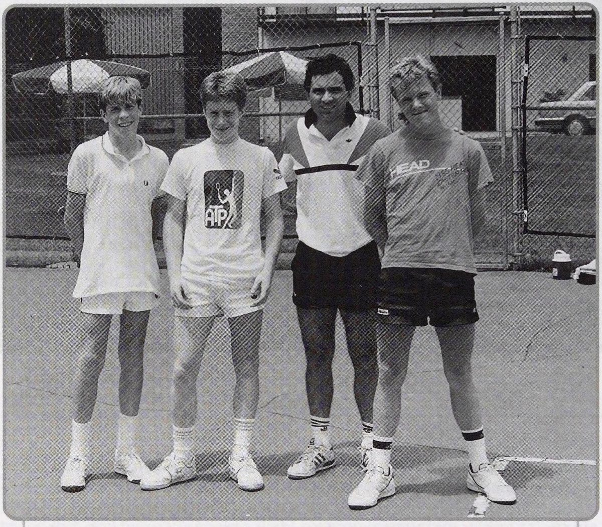
Chương 5: Để sự di chuyển tuôn chảy
Chuyển động hiệu quả liên quan nhiều đến cách tiếp cận tinh thần đúng đắn cũng như kỹ thuật. Hãy sử dụng tiềm thức của bạn để khiến việc xét xử diễn ra một cách tự động.
Những động lực tuyệt vời trong bất kỳ môn thể thao nào đều rất dễ nhận ra. Xem Lleyton Hewitt chạy đua trên sân, Venus Williams thực hiện cú trái tay trên đường chạy hoặc Pete Sampras lướt nhẹ vào lưới. Những vận động viên này không chỉ mạnh mẽ và nhanh nhẹn mà dường như họ luôn giữ thăng bằng và di chuyển dễ dàng, hiếm khi tỏ ra lúng túng và dường như luôn di chuyển đúng hướng.
Những vận động viên giỏi trong thể thao có thể di chuyển hiệu quả, năng suất và tự nhiên, di chuyển quanh sân hoặc sân mà không cần suy nghĩ có ý thức. Tôi tin rằng chuyển động đó mang tính tinh thần cũng như thể chất - nó xuất phát từ tiềm thức.
Huấn luyện viên, người sáng lập và chủ tịch nổi tiếng thế giới của Cơ quan đăng ký quần vợt chuyên nghiệp (PTR)
Tôi đã dạy và chơi quần vợt gần như suốt cuộc đời mình, nhưng tôi vẫn thích tiếp tục học hỏi. Tôi thực sự cố gắng để theo kịp những phát triển mới nhất trong việc huấn luyện.
Những ý tưởng về chuyển động và dự đoán trong chương này là một trong những ý tưởng thông minh và sáng tạo nhất mà tôi từng nghĩ ra. Và đó không chỉ là lý thuyết suông! Tôi đã thấy các khái niệm này hoạt động và có thể xác nhận mức độ hiệu quả thực sự của chúng. Tôi đã làm một bài kiểm tra với Nick khi anh ấy vào lưới và đưa cho tôi một loạt quả bóng ở đường cuối sân, đồng thời tuyên bố rằng anh ấy có thể đoán trước hướng nào tôi sẽ đánh trong mỗi cú chuyền bóng của mình. Anh ấy không nhất thiết phải đánh trúng đích trong mỗi cú đánh, nhưng anh ấy tin rằng ít nhất anh ấy sẽ luôn di chuyển đúng hướng khi bóng bật ra khỏi vợt của tôi. Trước khi chúng tôi bắt đầu bài tập, tôi nhận thấy khẳng định của anh ấy quá lạc quan, nhưng sau khi anh ấy liên tục chọn ra từng đường chuyền của tôi mà không do dự, tôi đã trở thành một người có niềm tin vững chắc. Nguyên tắc cơ bản trong các khái niệm của Nick là hầu như mọi chuyển động đều phải xuất phát từ tiềm thức. Nói cách khác, việc di chuyển tới quả bóng phải trở thành một phần bản năng trong trò chơi quần vợt của bạn. Cũng giống như việc thở hoặc chớp mắt, bạn thậm chí không cần phải nghĩ về nó. Nếu đối thủ của bạn thực hiện một cú đánh và bạn phải suy nghĩ xem nó sẽ đi đến đâu thì đã quá muộn. Bạn có thể tiếp cận bóng kịp thời, nhưng bạn không di chuyển với khả năng tối ưu của mình và các phương án đánh của bạn sẽ bị bắt chước. Trong tích tắc mà mắt và não của bạn nhận biết được điều gì đang xảy ra, bạn sẽ phải chạy đua để hành động. Tốc độ bạn có thể tiếp cận quả bóng nhanh như thế nào là yếu tố rất lớn quyết định chất lượng cú đánh mà bạn có thể đánh.
Bạn có thể đang tự nhủ rằng không thể di chuyển mà không suy nghĩ. Nhưng nếu bạn làm theo những chìa khóa được trình bày trong chương này, bạn sẽ thấy rằng điều đó không những khả thi mà còn cực kỳ có giá trị.
Bạn phải bắt đầu bằng cách có mức cường độ phù hợp nhưng vẫn duy trì đủ thư giãn để cơ thể bạn trôi chảy. Sau đó, bạn phải sẵn sàng đuổi theo mỗi quả bóng mà không quan tâm đến việc bạn "nghĩ" cú đánh sẽ vào, ra hay là người thắng. Bạn phải sẵn sàng di chuyển theo bất kỳ hướng nào và sau đó nhanh chóng quay lại vị trí chính xác để có được quả bóng tiếp theo. Học cách đọc một số dấu hiệu nhất định từ đối thủ—xoay và quỹ đạo bóng, vị trí sân, kiểu dáng và xu hướng—mỗi điều này giúp bạn dự đoán loại cú đánh mà đôi khi bạn sẽ phải đối mặt trước khi nó được đánh.
Cho dù bạn có phải là người di chuyển cừ khôi hay không nhanh nhẹn, chương này chứa đầy thông tin về epee sẽ giúp bạn đưa chuyển động của ae lên một tầm cao hoàn toàn mới.
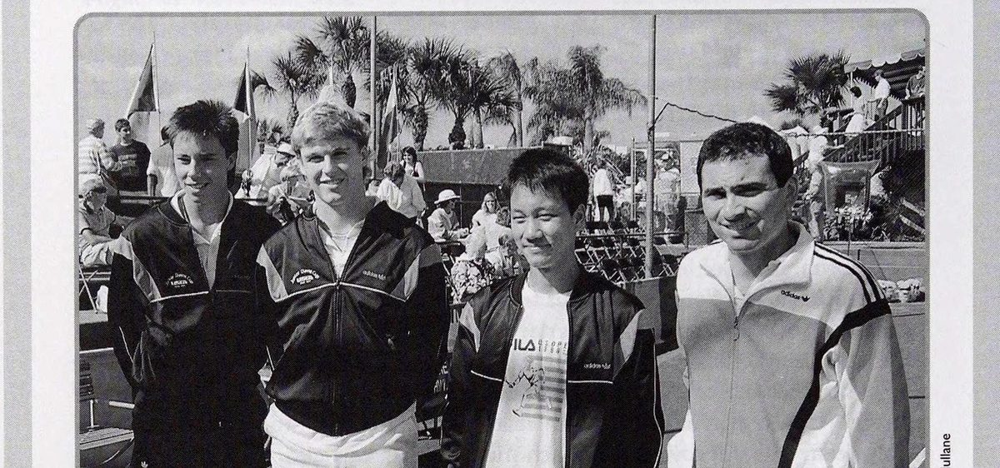
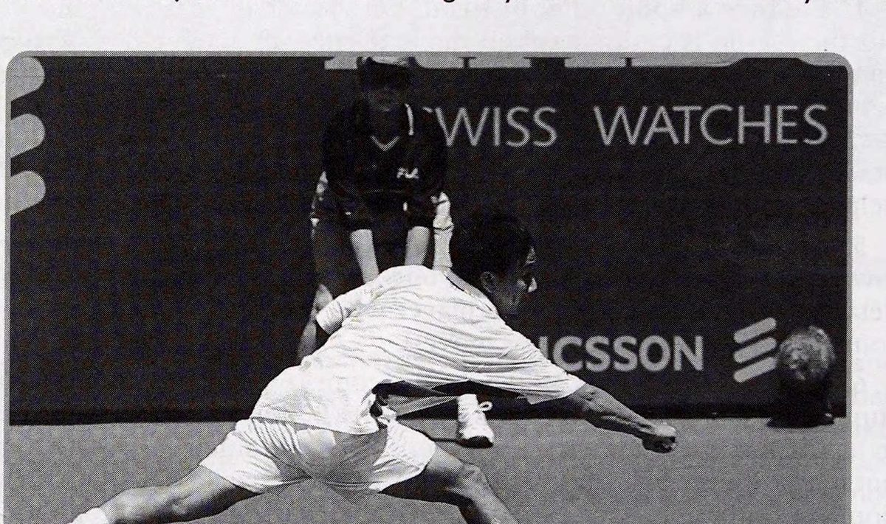
Bí quyết di chuyển đỉnh cao
Biết những bí mật thực sự để di chuyển tuyệt vời có thể không giúp bạn trở thành người vận động giỏi trên sân. Tuy nhiên, nếu bạn kiên trì và làm việc dựa trên các nguyên tắc chuyển động tốt, bạn sẽ cải thiện phạm vi bảo hiểm của mình nhiều hơn bạn từng nghĩ là có thể. Ngoài ra, bạn sẽ ít bị chấn thương hơn và sử dụng ít năng lượng hơn khi chơi.
Di chuyển tốt trong quần vợt có mối liên hệ chặt chẽ với hầu hết mọi khía cạnh của trò chơi—tác động bằng chân, kỹ thuật đánh, chiến thuật, trạng thái tâm lý, tình trạng thể chất, thị lực, khả năng dự đoán, v.v. Tất cả những yếu tố này phối hợp với nhau khi bạn di chuyển trên sân tennis. Do đó, việc cải thiện chuyển động của bạn không nên được xem như một mục tiêu hoặc mục tiêu riêng biệt.
Để di chuyển tốt trong một môn thể thao hành động siêu nhanh như quần vợt, bạn phải có quá trình suy nghĩ tiềm thức chứ không phải ý thức. Điều đó có nghĩa là nếu bạn đang suy nghĩ một cách có ý thức về cách di chuyển và vị trí trong trận đấu thì bạn đang gặp rắc rối lớn. Để quá trình diễn ra từ tiềm thức, bạn phải rèn luyện các kỹ năng vận động của mình để chúng trở nên hoàn toàn tự động.
Khi tôi còn là huấn luyện viên đội tuyển quốc gia, sống ở Princeton, New Jersey, tôi được yêu cầu làm việc với một cô gái 15 tuổi tên Lisa, sống ở Pennsylvania gần đó. Đặc biệt, tôi đã được yêu cầu giúp đỡ cô ấy về cú thuận tay. Tôi không bao giờ quên buổi tập đầu tiên của chúng tôi.
Chúng tôi bắt đầu đánh, và tôi bắt đầu phân tích kỹ thuật thuận tay của cô ấy và đưa ra một số gợi ý. Cô ấy rõ ràng là một vận động viên rất giỏi và nhanh chóng học được nhiều điều. Tôi cũng có thể thấy rằng cô ấy có khả năng di chuyển cực kỳ tốt. Nhưng thông thường, cô ấy sẽ không chạy theo bóng khi tôi đánh nó ra xa về phía thuận tay hoặc trái tay của cô ấy. Vì vậy, tôi đã gọi cô ấy lên mạng và hỏi cô ấy một câu hỏi mà tôi đã biết câu trả lời: "Bạn có phải là người chạy khá nhanh không?" Cô ấy nói: "Ừ, so với hầu hết các bạn nữ ở trường." Tôi nói: "Sao em không chạy để tìm những quả bóng rộng?" Cô ấy trả lời: "Tôi rất chậm thấy bóng bay ra khỏi vợt của em." Tôi có thể thấy rằng cô ấy thành thật tin vào điều này, nhưng tôi biết thực tế không phải vậy. Vì vậy, tôi đã thay đổi bài tập và yêu cầu cô ấy đánh những cú vô lê phản xạ với cả hai chúng tôi trên lưới. Tôi nhớ mình đã rất ấn tượng với tốc độ nhanh như thế nào bằng tay của cô ấy khi chúng tôi tung ra những cú vô lê qua lại. Thực ra, sự thật là tôi đã cố gắng hết sức để không thể hiện rằng mình phải như vậy. nhón chân để theo kịp cô ấy trên lưới! Sau một phút, tôi dừng bài tập và nói, "Lisa, em có thấy em nhặt bóng ra khỏi vợt của tôi nhanh như thế nào trong những cú vô lê phản xạ này không? Bạn thậm chí không nghĩ về nó. Bạn chỉ cần phản ứng và đi. Bạn có ít thời gian hơn để phản ứng trên lưới so với khi bạn ở sân sau.'"
Cô ấy nhìn tôi và biết tôi nói đúng.
Tôi tiếp tục, "Khi bạn ở sân sau, bạn không thể đưa ra quyết định sáng suốt về việc liệu bạn có chạy hay không. Nếu bạn muốn sử dụng tốc độ đó của mình và trở thành một cầu thủ xuất sắc, trước tiên bạn cần phải chạy theo những quả bóng rộng đó, sau đó dừng lại khi bạn không thể đến đó." Cuộc trò chuyện chỉ kéo dài một phút nhưng Lisa rất nhạy bén và hiểu mọi điều tôi đang nói.
Chúng tôi chỉ tập luyện năm hoặc sáu lần. Tuy nhiên, cô ấy
bắt đầu di chuyển và tiếp cận những quả bóng rộng đó khi cô ấy từ từ bắt đầu làm nổi bật kỹ năng di chuyển của mình. Đó là vào năm 1989. Kể từ thời điểm đó, Lisa Raymond đã phát triển thành một tay vợt đánh đơn hàng đầu I0. Nhưng điều còn ít ngạc nhiên hơn (sau buổi tập đánh vô lê phản xạ của chúng tôi), cô ấy đã giành được ba danh hiệu Grand Slam đôi và trở thành tay vợt đánh đôi số một thế giới. Bây giờ, khi tôi xem Lisa trên TV hoặc tại một sự kiện lớn đánh một cú thuận tay tuyệt vời trên đường chạy, tâm trí tôi luôn nhớ lại buổi tập đầu tiên của chúng tôi ở Princeton.
Nhiều cầu thủ chuyên nghiệp sử dụng "chuyên gia di chuyển" hoặc "huấn luyện viên tốc độ"
làm việc với họ ngoài sân đấu để cải thiện khả năng di chuyển của họ. Mặc dù loại hình tập luyện này sẽ cải thiện sức mạnh cơ bắp, tốc độ, sự nhanh nhẹn, khả năng điều hòa và có thể cả động tác chân của bạn, nhưng nó chỉ đóng vai trò bổ sung cho việc chơi quần vợt. Để thành thạo các kỹ năng di chuyển trong quần vợt, bạn phải luyện tập trên sân, với vợt trên tay và đánh bóng tennis. Không có gì giống như những yêu cầu trong khi thi đấu và trừ khi bạn luyện tập đúng cách, bạn sẽ không bao giờ phát huy hết tiềm năng của mình với tư cách là người vận động bất kể công việc bên ngoài sân đấu của bạn là gì.
Tôi đã liệt kê những điều mà tôi tin là những bí mật thực sự để phát huy hết tiềm năng của bạn. Bạn có thể gọi chúng là “Bảy thói quen của người dẫn đầu hiệu quả cao”.
Nhưng điều đó sẽ không phải là nguyên bản nên tôi sẽ chỉ gọi chúng là bí mật. Chúng được liệt kê theo thứ tự tuần tự. Tuy nhiên, nếu bạn nỗ lực và cải thiện bất kỳ lĩnh vực nào trong số này, chuyển động của bạn trên sân chắc chắn sẽ được cải thiện. Đừng cố gắng làm việc trên tất cả chúng cùng một lúc. Tôi khuyên bạn nên đọc phần này và xem liệu có lĩnh vực nào mà bạn biết mình còn yếu hay không. Sau đó dành thời gian làm việc trong lĩnh vực đó. Giống như hầu hết những gì tôi nói trong cuốn sách này, hãy sử dụng chương này như một nguồn tài liệu mà bạn có thể liên tục quay lại để củng cố sự hiểu biết của mình.
1. Nhận thức tích cực. Bạn phải nỗ lực phát triển nhận thức tích cực về khả năng di chuyển của mình. Không thành vấn đề nếu bạn là Michael Johnson.
Nếu bạn có nhận thức tiêu cực về kỹ năng di chuyển của mình, bạn sẽ di chuyển không tốt trên sân tennis.
Một nhận thức tiêu cực tạo ra căng thẳng và nghi ngờ bản thân, giết chết sự mong đợi, tính tự phát và tính linh hoạt. Điều đó lại tạo ra chuyển động kém, củng cố nhận thức tiêu cực rằng bạn di chuyển không tốt.
Điều đầu tiên bạn cần làm là dừng mọi suy nghĩ tiêu cực về chuyển động của mình. Thứ hai, đừng để bất cứ ai nói với bạn rằng bạn không phải là người chủ động giỏi hoặc bạn chậm chạp. Thứ ba, luôn tập trung vào mức độ bạn có thể cải thiện.
Bạn càng có thể hình dung mình di chuyển tốt trên sân thì càng tốt.
Điều này nghe có vẻ ngô nghê nhưng nó là nền tảng để xây dựng các kỹ năng di chuyển tốt. Việc di chuyển tốt có liên quan đến tiềm năng của chính bạn, vì vậy hãy suy nghĩ tích cực. Tất cả người chơi có thể cải thiện và phát huy tối đa kỹ năng di chuyển của mình.
Vào năm 1986, tôi đã cố gắng thuyết phục Michael, lúc mới 5 tuổi đã là một trong những học sinh xuất sắc nhất của chúng tôi trong nước, đại diện cho Hoa Kỳ tại Sunshine Cup.
Sự kiện này tương đương với giải vô địch đồng đội thế giới |8 trở xuống.
Thể thức này tương tự như Davis Cup, trong đó huấn luyện viên của đội (chính là tôi) ngồi trên sân trong suốt trận đấu và huấn luyện các cầu thủ.
Các đội thi đấu hai trận đơn và một trận đôi, đội nào thắng hai trận sẽ vào vòng tiếp theo.
Khoảng 40 quốc gia đã tham gia sự kiện năm đó.
Vấn đề là Michael không muốn thi đấu vì trận đấu được diễn ra trên sân cứng (thường được gọi là "đất sét xanh"), là một bề mặt mềm đòi hỏi khả năng trượt bóng mới hiệu quả. Michael, người có tốc độ nhanh như chớp là nền tảng trong trò chơi của anh ấy, đã không thi đấu hoặc tập luyện trên bề mặt mềm kể từ giải |2 trở xuống. Anh ấy không cảm thấy thoải mái khi di chuyển và giữ thăng bằng trên bề mặt mềm và anh ấy không muốn chơi trên đó. Phải mất một chút thuyết phục, nhưng cuối cùng anh ấy vẫn quyết định chơi. Vì vậy, đúng với đạo đức làm việc tuyệt vời của mình, anh ấy cùng với các thành viên còn lại trong nhóm đã luyện tập chăm chỉ để chuẩn bị cho sự kiện. Chúng tôi đã giành chiến thắng trong hai trận đấu đồng đội đầu tiên để tiến vào vòng tứ kết. Toàn đội đang tiến bộ qua từng trận đấu, nhưng rõ ràng là Michael, người phụ thuộc rất nhiều vào tốc độ của mình, vẫn không di chuyển trôi chảy. Anh ấy vẫn chưa hoàn toàn thoải mái trên bề mặt trơn trượt, điều này khiến anh ấy phải suy nghĩ một cách có ý thức về chuyển động của mình, đồng thời ảnh hưởng xấu đến khả năng giữ thăng bằng của anh ấy khi đánh bóng.
Trận đấu tiếp theo của chúng tôi là gặp một đội Thụy Điển khó nhằn, những người thực sự là chuyên gia về bề mặt mềm.
Chúng tôi đã thua ở vị trí thứ hai trong trận đấu đơn (đó là trận đầu tiên diễn ra), vì vậy Michael phải giành chiến thắng trong trận đấu của mình để tránh giúp Thụy Điển dẫn trước 2-0 không thể vượt qua trong phần thi đồng đội. Michael đã chơi hết mình. Anh ấy thậm chí còn di chuyển tốt hơn trước, nhưng vẫn chưa phát huy hết khả năng của mình. Đơn giản là bề ngoài anh ấy không thể sánh được với trải nghiệm của những người chơi khác. Chán nản, Michael ngồi xuống ghế sau khi thua trận và nói: “Tôi không thể chơi trên mặt sân này.
Tôi không thể sử dụng tốc độ của mình trên sân đất nện như trên sân cứng." Tôi trả lời: "Michael, anh có một trò chơi hoàn hảo cho bề mặt này.
Tất cả những gì bạn cần là thêm kinh nghiệm để có thể di chuyển và trượt mà không cần phải suy nghĩ. Hãy tin tôi, bạn có một trận đấu tuyệt vời trên sân đất nện.' Lúc đó tôi thực sự không nghĩ anh ấy tin tôi.
Chà, tôi không biết anh ấy sẽ học chơi trên sân đất nện tốt đến mức nào. Hai năm sau, tôi chứng kiến Michael Chang vô địch Pháp mở rộng trên sân đất nện đỏ Roland Garros ở tuổi 17. Anh ấy đánh bại tay vợt số một thế giới, lvan Lendl, và sau đó là Stefan Edberg trong trận chung kết với một trong những trận thắng khó chịu nhất trong lịch sử quần vợt chuyên nghiệp! Không cần phải nói, Michael đã học được cách để chuyển động của mình trôi chảy trên mặt sân đất nện đỏ chậm chạp ở Paris.
Đội tuyển Hoa Kỳ Sunshine Cup 1986: Jared Palmer, Jonathan Stark, Michael Chang và Nick
2. Tập trung vào "khi nào" chứ không phải "ở đâu". Đây là một trong những chìa khóa quan trọng nhất để giải phóng tiềm năng chuyển động của bạn. Ý tôi muốn nói ở đây là bạn nên tập trung chú ý vào thời điểm đối thủ sắp tiếp xúc, sau đó bắt đầu bước tách ngay trước khi anh ta tiếp xúc. Đừng cố ý nghĩ xem đối thủ của bạn đang đánh bóng ở đâu. Bằng cách cố gắng không suy nghĩ một cách có ý thức, quá trình suy nghĩ tiềm thức của bạn sẽ tiếp quản và bạn sẽ thấy mình đang di chuyển theo hướng quả bóng khi nó bật ra khỏi vợt của đối thủ. Hệ thống thị giác của bạn có thể xử lý thông tin về nơi quả bóng sẽ đi nhanh hơn rất nhiều so với những gì bạn có thể nghĩ về nó một cách có ý thức. (Nghiên cứu cho thấy nó hoạt động nhanh tới 1.000 phần giây trong điều kiện tối ưu.) Bạn cũng sẽ tạo ra trạng thái nhận thức cao hơn, cả về tinh thần và thể chất, cho phép bộ não của bạn xử lý lượng thông tin đáng kinh ngạc khi đối thủ của bạn tiếp cận quả bóng. Nó dựa trên kinh nghiệm trước đây và tình hình hiện tại để tính toán và dự đoán những gì sẽ xảy ra. Đó là lý do tại sao bạn có thể thấy các vận động viên chuyên nghiệp hàng đầu di chuyển theo bản năng khi bóng bay ra khỏi vợt của đối thủ.
Tôi nhận ra điều này nghe có vẻ phức tạp đến mức nào, nhưng thực tế nó lại đơn giản đến không ngờ.
Khi thi đấu, hãy tập trung vào thời điểm đối thủ sắp tiếp xúc với bóng, chứ không phải vị trí anh ta sẽ đánh, tính thời gian cho bước tách của bạn cho phù hợp và bạn sẽ bắt đầu di chuyển theo bóng.
3. Mạnh mẽ nhưng vẫn thoải mái. Để di chuyển tốt nhất, bạn phải ở trạng thái chuẩn bị tối ưu về tinh thần và thể chất. Bạn phải tập trung cao độ nhưng vẫn thả lỏng cơ thể. Đừng nhầm lẫn dữ dội với căng thẳng. Cơ thể căng thẳng sẽ làm căng các cơ, khiến chúng không phản ứng nhanh được. Xem Lleyton Hewitt trong một trận đấu. Anh ấy cực kỳ căng thẳng, tập trung cao độ vào trò chơi của mình, nhưng anh ấy lại rất thoải mái về mặt thể chất, trông như thể anh ấy đang lười biếng. Sau đó, đột nhiên, anh ta băng qua sân để đạt được quả bóng mà các cầu thủ khác không thể lấy được. Rất ít người chơi sẽ di chuyển tốt như vậy, nhưng vấn đề đã được đưa ra.
Một gợi ý tuyệt vời mà bạn có thể sử dụng để kiểm tra độ căng của bản thân là đảm bảo cơ mặt của bạn được thư giãn. Nếu chúng căng thẳng thì rất có thể phần còn lại của cơ thể bạn cũng vậy. Ngoài ra, nếu bạn nín thở khi đánh bóng, bạn đang nín thở. (Bạn nên thở ra hoặc càu nhàu khi đánh.) Căng thẳng trong cơ thể ảnh hưởng tiêu cực đến mọi thứ, từ tầm nhìn đến động tác chân của bạn.
4. Giữ một cuốn sách trên đầu. Tất nhiên, tôi đang nói theo nghĩa bóng, nhưng lý do rất quan trọng. Khi bạn di chuyển đến quả bóng, hãy duy trì tư thế thân trên tốt, đầu và vai tương đối đứng yên. Trên thực tế, bạn sẽ hơi cúi người về phía trước ở thắt lưng. Vấn đề là, tránh uốn cong quá mức ở thắt lưng, khom vai và/hoặc di chuyển đầu sang bên hoặc lên xuống. Điều này giúp bạn theo dõi bóng tốt hơn khi nó đến gần. Nó cũng giúp bạn giữ thăng bằng động, động tác bằng chân và kỹ thuật tổng thể khi đánh.
5. Duy trì trọng tâm thấp. Khi bạn di chuyển tới quả bóng, hãy giữ trọng tâm thấp bằng cách uốn cong đầu gối. Xem chương 4 để biết mô tả chi tiết hơn. Hãy chỉ cho tôi một cầu thủ đứng thẳng trên sân và tôi sẽ chỉ cho bạn một động tác kém!
6. Chạy theo từng đường bóng. Khi bóng rời khỏi vợt của đối thủ, hãy chạy theo nó bất kể nó đang đi đâu hoặc bạn nghĩ mình có thể bắt được nó hay không. Điều quan trọng là ban đầu bạn không nên đưa ra quyết định có ý thức về việc có nên chạy theo bóng hay không. Chỉ cần phản ứng và đi cho nó. Điều này sẽ giúp ích cho khả năng dự đoán, bước tách, bước đầu tiên bùng nổ và tốc độ của bạn. Bạn cũng sẽ có thể chạm tới những quả bóng mà bạn chưa bao giờ mơ ước có được. Sau ít nhất ba hoặc bốn bước, nếu nó nằm ngoài tầm với của bạn một cách vô vọng hoặc rơi ra ngoài, thì bạn có thể ngừng chạy. Nếu đối thủ của bạn đánh một cú và bạn chỉ đứng đó nghĩ rằng đó là người chiến thắng hoặc bị thua, bạn đã đưa ra một quyết định sáng suốt. Và đó là điều không-không.
Tôi sẽ không bao giờ quên lần đầu tiên được ra sân cùng huấn luyện viên huyền thoại người Úc Harry Hopman. Lúc đó tôi mới 5 tuổi, anh ấy đã đến Bắc California để làm phòng khám cho những học sinh hàng đầu trong vùng. Ông Hopman là một người cuồng nhiệt khi nỗ lực trên sân tập và chạy theo từng đường bóng. Có một hàng dài người chơi đang chờ để dành vài phút luyện tập với anh ấy. Thời cơ của tôi cuối cùng cũng đến, và ông Hopman bắt đầu với một vài quả bóng tương đối dễ để cảm nhận trình độ chơi của tôi rồi bắt đầu bắn những quả bóng khắp nơi. Lúc đầu, tôi nghĩ ông ấy vô tình đánh chúng quá xa tôi, nhưng sau ba hoặc ba
bốn tôi nhận ra rằng anh ấy nghiêm túc. Tôi dừng việc chạy theo quả bóng tiếp theo và nói: "Thật nực cười. Tôi không thể đạt được những điều đó." Hãy nhớ rằng đây là người đã huấn luyện Rod Laver, Kenny Rosewald, Lew Hoad, John Newcombe và Tony Roche, kể tên một vài người; và tôi đây, một đứa trẻ 5 tuổi thậm chí còn chưa được xếp hạng quốc gia. Mọi thứ dừng lại, và Harry trừng mắt nhìn tôi và nói: "Trên sân của tôi, anh chạy theo mọi quả bóng hoặc rời khỏi sân!" Anh ấy cực kỳ nghiêm túc và tôi đã nhận được tin nhắn.
Và mặc dù vào thời điểm đó tôi chưa hiểu hết tầm quan trọng của việc chạy và căng cơ đối với mỗi quả bóng, nhưng kể từ đó về sau, tôi đã làm như vậy. Tôi có thể thành thật mà nói rằng bài học ngắn gọn đó đã có tác động sâu sắc đến phong trào của tôi trong suốt phần còn lại của sự nghiệp của mình. Nhiều năm trôi qua, ! đã làm việc với ông Hopman vô số lần trong suốt sự nghiệp thi đấu chuyên nghiệp của tôi. Khi ông ấy bước ra sân với giỏ bóng khổng lồ của mình, tôi sẽ đùa với ông ấy và nói: "Harry, trong rổ đó anh không có đủ bóng để làm tôi mệt!" Anh ấy chỉ mỉm cười và bắt đầu sút xa, còn tôi sẽ chạy theo từng đường bóng.
Michael Chang chạy và căng người theo từng đường bóng.
7. Duỗi người và đu đưa. Ngay cả khi bạn chưa chạm tới bóng, hãy duỗi người và vung vào nó và cố gắng thực hiện cú đánh. Đầu tiên, bạn sẽ ngạc nhiên khi tiếp cận và đánh được nhiều quả bóng hơn bạn từng nghĩ là có thể. Thứ hai, duỗi người để đánh bóng giúp phát triển khả năng thăng bằng động, động tác bằng chân và kiểm soát vợt của bạn.
Nếu bạn áp dụng bảy điều đơn giản này, chuyển động của bạn sẽ được cải thiện đáng kể và bạn sẽ chảy từ tiềm thức của mình. Hãy nhớ rằng bạn cần nhấn mạnh bảy phím mà tôi vừa nói trước khi chuyển sang các kỹ thuật nâng cao hơn như dự đoán và động tác bằng chân. Nếu bạn bỏ qua các nguyên tắc cơ bản cơ bản và chỉ tập luyện các kỹ thuật nâng cao, bạn có thể không cải thiện đáng kể chuyển động của mình.
Kết hợp tất cả các nguyên tắc chuyển động và bạn sẽ có sự kết hợp chiến thắng.
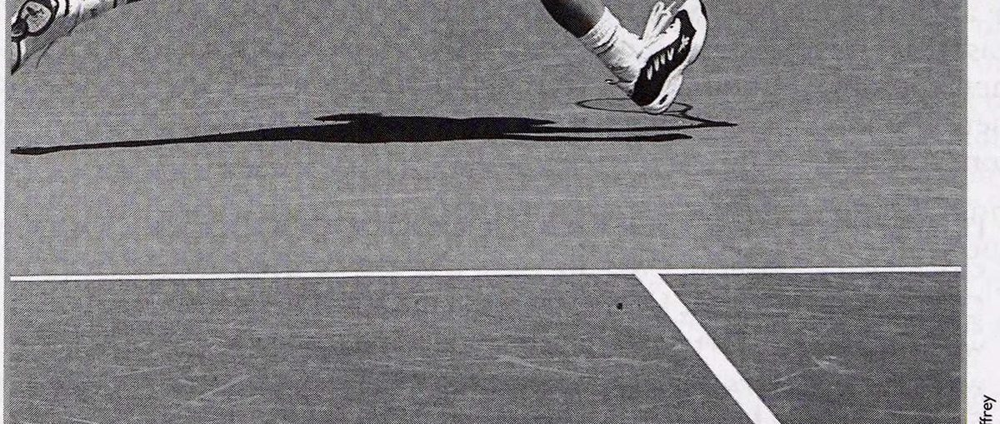
Các giai đoạn di chuyển
Có bốn giai đoạn chuyển động của bạn trong một thời điểm trong quần vợt—định vị, theo dõi, đánh và hồi phục. Bạn có thể làm việc trên cả bốn lĩnh vực cùng một lúc hoặc đơn giản là bạn có thể tập trung vào giai đoạn mà bạn cảm thấy có thể giúp ích cho nhu cầu cụ thể của mình. Dưới đây là chìa khóa thành công cho từng giai đoạn chuyển động.
Định vị
Đây là giai đoạn đối thủ của bạn đã sẵn sàng đánh bóng. Có ba yếu tố quan trọng đối với vị trí của bạn. Đầu tiên là vị trí hình học của bạn trên sân so với vị trí bạn đánh bóng. Thứ hai là chiều sâu vị trí của bạn trên sân. Thứ ba là cách bạn định vị cơ thể của mình so với quả bóng khi đối thủ của bạn chuẩn bị thực hiện cú đánh. Lưu ý rằng vị trí ở sân sau khác với vị trí trên lưới. Sự khác biệt sẽ được chỉ ra khi thích hợp.
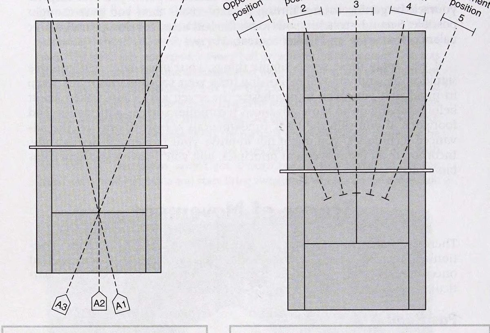
Định vị hình học trên sân
Định vị hình học ở phần sân sau là một cách thú vị để nói rằng bạn nên phục hồi và/hoặc điều chỉnh vị trí của mình trên sân tùy theo nơi bạn thực hiện cú đánh và nơi đối thủ của bạn có thể thực hiện cú đánh của mình.
Nguyên tắc chung là chia đôi góc tầm bắn có thể có của đối thủ. Ví dụ: nếu bạn đánh bóng vào giữa sân thì vị trí của bạn phải ở ngay giữa sân. Nếu bóng đi ra ngoài sân deuce, vị trí của bạn phải cách đường giữa sân vài bước (xem hình 5.1, trang 102).
Mặc dù vị trí trên lưới là khác nhau, nhưng nếu bạn đánh bóng ra xa, bạn nên đặt mình ở vị trí gần đường biên đó hơn vài bước (xem hình 5.2).
Mục tiêu của bạn là thực hiện cú sút có tỷ lệ chuyền bóng cao nhất (trong trường hợp này là dọc biên) và vẫn có thể cắt bỏ hầu hết các đường chuyền chéo sân.
Điều đó khiến đối thủ của bạn có tỷ lệ đánh trúng đích thấp nhất.
Vị trí ở sân sau.
Hình 5.2 Vị trí trên lưới.
Độ sâu của bạn trên sân sẽ thay đổi tùy theo phong cách chơi và trình độ kỹ năng của bạn. Tuy nhiên, vị trí xuất phát cơ bản là sau đường cơ sở từ 3 đến 5 feet. Nếu đối thủ của bạn di chuyển ra khỏi lưới hoặc bị căng ra xa, bạn nên di chuyển đến gần đường cuối sân hơn. Trong trường hợp cực đoan, khi đối thủ của bạn đang ở thế tuyệt vọng, bạn nên bước vào trong đường cuối sân để đề phòng một quả bóng yếu, ngắn hoặc một vật bay lơ lửng mà bạn có thể hạ gục trên không. Nếu bạn đánh một quả bóng ngắn và đối thủ của bạn đang ở thế tấn công, bạn có thể muốn lùi lại một bước. Để định vị trên lưới, bạn nên vào gần lưới nhất có thể trong khi vẫn có thể che được một cú lốp bóng qua đầu. Nói chung, khoảng cách đó phải nằm ở khoảng giữa lưới và đường giao bóng. Tuy nhiên, điều đó sẽ khác nhau tùy thuộc vào các yếu tố như chiều cao, tốc độ, chất lượng cú đánh của bạn và vị trí của đối thủ trên sân.
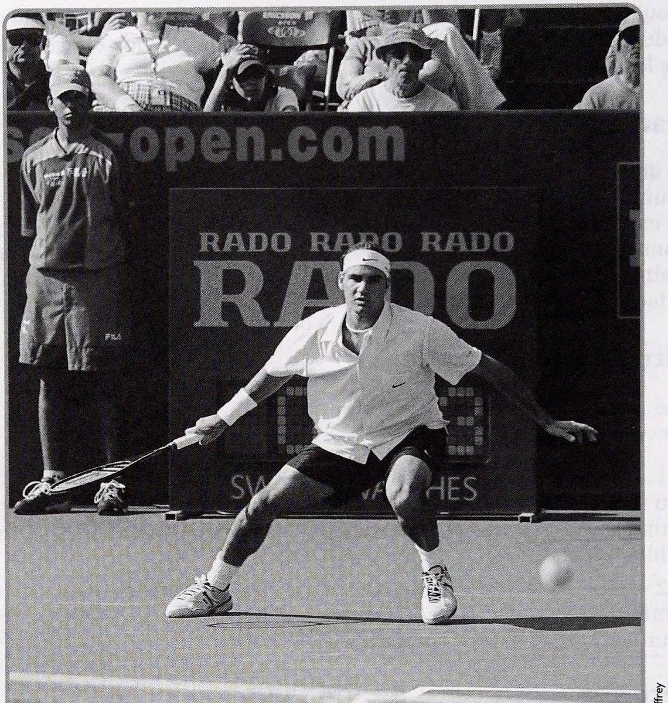
Tư thế cơ thể
Vai của bạn phải vuông góc với vị trí của bóng trên sân đối phương. Ví dụ: nếu quả bóng ở giữa sân, bạn
vai phải "vuông góc", hướng thẳng vào lưới. Nếu bóng ra xa sân deuce, vai của bạn phải hướng thẳng về vị trí của bóng.
Theo dõi
Như đã thảo luận ở chương 4, việc theo dõi liên quan đến cách bạn di chuyển tới bóng sau khi đối thủ thực hiện cú đánh của anh ta. Hãy nhớ những chìa khóa để thành công. Tập trung vào việc bùng nổ với quả bóng ở bước đầu tiên, ngay cả khi quả bóng không ở xa bạn. Bạn có thể vào vị trí để thực hiện cú đánh của mình càng nhanh thì càng tốt.
Duy trì tư thế tốt của phần thân trên với chuyển động đầu tối thiểu để tạo điều kiện cho bạn giữ thăng bằng năng động.
Đánh
Giai đoạn đánh bóng là cách bạn thiết lập để đánh bóng. Đây là hai chìa khóa để thực hiện nó thành công.
1. Các bước điều chỉnh. Khi bạn tiếp cận quả bóng, hãy thực hiện những bước nhỏ hơn nếu bạn có thời gian để làm quen với quả bóng. Mục tiêu của bạn là đưa bóng đến vị trí (khoảng cách) tối ưu so với cơ thể của bạn ("vùng đánh bóng") để thực hiện cú đánh của bạn.
2. Chân đế rộng và trọng tâm thấp. Để ổn định, hãy thiết lập trọng tâm thấp bằng cách uốn cong đầu gối của bạn và giữ một chân đế rộng với hai chân dang rộng ít nhất bằng vai.
Phục hồi
Sau khi đánh bóng, bạn phải di chuyển để vào vị trí thực hiện cú đánh tiếp theo. Dưới đây là ba chìa khóa để phong trào phục hồi thành công.
1. Cảm giác cấp bách. Sau khi bạn đánh bóng, hãy luôn phục hồi với tinh thần khẩn trương. Sai lầm phổ biến là dành thời gian và quan sát cú đánh của bạn ở giai đoạn này.
2. Trồng và đẩy đi. Nếu bạn bị kéo ra hai bên sân, hãy đặt chân bên ngoài của bạn và đẩy ra, lùi về phía giữa sân. Một số người chơi đánh với tư thế mở sẽ thực hiện được điều này bằng một động tác, bước nhảy/nửa bước, trong đó họ đánh và tiếp đất bằng chân bên ngoài, sẵn sàng đẩy ra bằng chân đó ngay lập tức.
3. úp mặt vào lưới. Khi hồi phục, bạn nên quay mặt vào lưới và thực hiện một vài bước xáo trộn để trở lại vị trí trên sân. Bạn có thể sử dụng bước nhảy chéo (trong đó một chân bắt chéo qua chân kia), đôi khi những người chuyên nghiệp sẽ sử dụng bước này để tăng tốc nhanh chóng nhằm đạt được khoảng cách cần thiết khi chúng được kéo ra rộng. Nhưng nếu bạn đang thực sự mất vị trí, tốt nhất bạn nên quay đầu và bỏ chạy!
Trong phần hồi phục, Roger Federer đặt chân ngoài và bắt đầu đẩy ra để nhanh chóng trở lại vị trí.
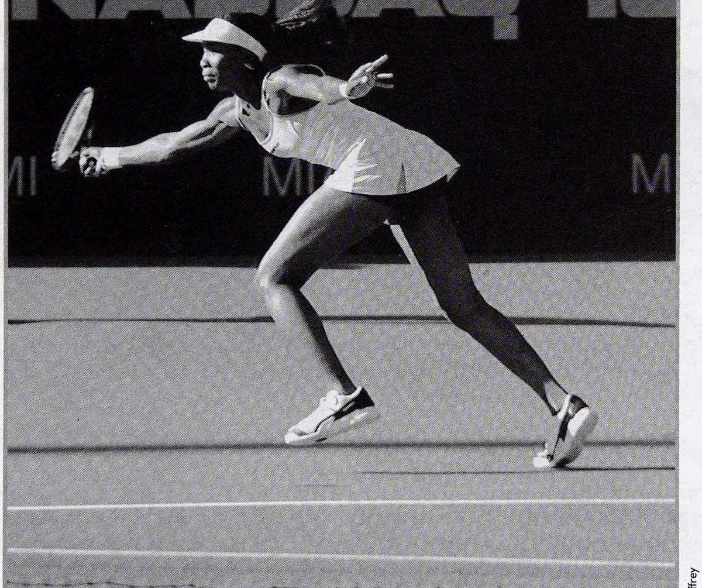
Kỹ năng phán đoán trước
Kỹ năng di chuyển và dự đoán là không thể tách rời. Dự đoán là rất quan trọng trong quá trình diễn ra trận đấu vì nhu cầu di chuyển của người chơi rất lớn và thời gian điều chỉnh tối thiểu. Nếu bạn dự đoán tốt, bạn sẽ nhận bóng nhanh hơn. Kỹ năng dự đoán tốt là một trong những lý do chính khiến các tay vợt chuyên nghiệp khiến trận đấu trở nên dễ dàng và tại sao họ hiếm khi tỏ ra ngạc nhiên trước những gì diễn ra trên sân. Sự đoán trước sẽ giúp bạn di chuyển hiệu quả và năng suất hơn; bạn sẽ đánh bóng sạch hơn, kiên định hơn và ít chấn thương hơn.
Dự đoán cũng là một trong những thuật ngữ bị hiểu lầm nhiều nhất trong môn quần vợt. Có hai nhận thức sai lầm chiếm ưu thế. Nhận thức sai lầm đầu tiên là việc dự đoán chỉ có thể được áp dụng khi người chơi biết chính xác vị trí đối phương sẽ đánh bóng và chính xác kiểu đánh sẽ là gì. Thứ hai là cách duy nhất để phát triển những kỹ năng đó là bằng nhiều năm kinh nghiệm. Mặc dù cả hai suy nghĩ này đều đúng ở một mức độ nhất định, nhưng chúng thực sự đại diện cho một phần rất nhỏ của một phương trình lớn hơn nhiều.
Dự đoán có thể được chia thành hai phần: dự đoán toàn bộ và một phần. Dự đoán hoàn toàn là khi bạn biết chính xác kiểu cảnh quay nào sẽ đến và hướng tới. Bạn nghĩ điều đó xảy ra bao nhiêu lần?
Không thường xuyên lắm. Dự đoán một phần là phổ biến hơn nhiều. Đó là quá trình tìm ra điều mà đối thủ của bạn không thể hoặc sẽ không làm trong một tình huống nhất định. Một cầu thủ giỏi thực hiện điều này ở hầu hết mọi điểm.
Tại sao việc dự đoán lại quan trọng đến vậy? Bởi vì nếu bạn có thể loại bỏ trong đầu mình một số lựa chọn mà đối thủ có trong một cú đánh nhất định, điều đó có thể cải thiện thời gian phản ứng của bạn. (Thời gian phản ứng là thời gian bạn cần phản ứng cộng với thời gian bạn di chuyển đến quả bóng: thời gian phản ứng + thời gian chuyển động = thời gian phản ứng.) Bạn sẽ tiếp cận bóng nhanh hơn nhiều, mang lại cho bạn nhiều lựa chọn hơn trong cú đánh của mình. Bạn cũng sẽ di chuyển tự do hơn với quả bóng vì bạn sẽ cảm thấy bớt căng thẳng hơn. Sự tự do di chuyển đó cho phép bạn làm được nhiều việc hơn với những bức ảnh của mình. Bạn dự đoán càng tốt thì bạn sẽ càng hành động tốt hơn.
Kinh nghiệm là người thầy tuyệt vời của sự dự đoán. Tuy nhiên, hầu hết người chơi không hiểu rằng bạn có thể rèn luyện để dự đoán tốt hơn và rút ngắn thời gian học tập. Nó không phức tạp để làm. Bạn đã làm điều này hầu hết thời gian trên sân nhưng đơn giản là bạn không nhận thức được điều đó. Bằng cách nhận ra những điều sẽ cải thiện khả năng dự đoán của bạn, bạn có thể tập trung hơn và được định hướng để học nhanh hơn. Về cơ bản có bốn yếu tố chính sẽ cung cấp cho bạn thông tin bạn cần dự đoán trong mỗi lần chụp.
1. Kiểu và chất lượng cú đánh của đối thủ. Bằng cách nhận biết loại cú đánh (hướng, tốc độ, độ xoáy, độ cao, quỹ đạo và độ sâu) cũng như chất lượng của cú đánh, bạn có thể dự đoán vị trí và cách bóng sẽ nảy lên. Rõ ràng, kiểu dự đoán này xảy ra sau khi đối thủ của bạn đánh bóng.
2. Các mô hình, xu hướng, điểm mạnh và điểm yếu. Điều này liên quan đến việc biết mô hình và xu hướng của đối thủ cũng như điểm mạnh và điểm yếu của anh ta. Dựa trên thông tin đó, khả năng dự đoán những gì đối thủ của bạn có thể làm hoặc không thể làm sẽ cải thiện đáng kể.
Việc trinh sát đối thủ của bạn, luyện tập cùng nhau hoặc đã đấu với họ trong các trận đấu trước sẽ giúp bạn phát triển kiểu dự đoán này.
3. Vị trí tòa của đối phương. Điều này liên quan đến việc biết được sự phân chia thế trận của đối thủ đối với loại cú đánh mà cô ấy có thể đánh. Ví dụ: nếu đối thủ của bạn đã di chuyển về phía sau đường cơ sở rất xa, bạn có thể kết luận một cách hợp lý rằng cô ấy sẽ không đánh một cú đánh đường thấp từ xa phía sau đường cơ sở. Rất có thể cô ấy sẽ đánh bóng với độ hở lưới cao để đưa bóng vào sâu.
4. Tín hiệu từ cú đánh của đối thủ. Đây là về khả năng của bạn trong việc nắm bắt tín hiệu từ kỹ thuật của đối thủ. Hãy để ý xem anh ta đang sử dụng kiểu cầm vợt nào, độ thăng bằng, đường vung vợt, động tác bằng chân (hoặc thiếu), thế đứng cơ thể, khả năng ném bóng của anh ta, và những thứ tương tự. Tất cả những khía cạnh này trong quá trình tạo cú đánh của đối thủ sẽ cho bạn manh mối về loại cú đánh mà anh ta chuẩn bị đánh.
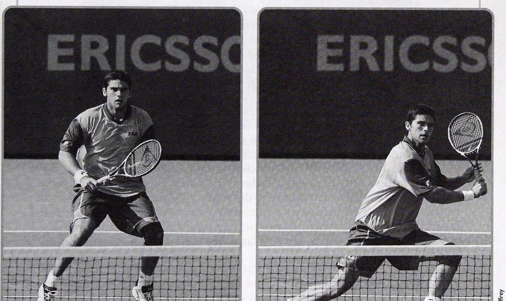
Rút ngắn đường cong học tập
Bạn có thể rút ngắn thời gian học tập bằng cách đào tạo cụ thể để cải thiện kỹ năng dự đoán của mình. Chỉ bằng cách làm việc dựa trên những nguyên tắc đã được thảo luận trong chương này, bạn sẽ tự nhiên cải thiện được kỹ năng dự đoán của mình. Để đẩy nhanh quá trình học tập hơn nữa, dưới đây là một số mẹo đào tạo hữu ích về cách cải thiện khả năng dự đoán một cách cụ thể.
- Làm việc về phát triển mẫu. Càng làm quen với các mẫu, bạn sẽ càng nhanh chóng nhận ra các lựa chọn tiềm năng của đối thủ khi mẫu đó xuất hiện trong trận đấu. Ví dụ, nếu bạn thực hành kiểu thuận tay từ trong ra ngoài, trong một trận đấu khi bạn đánh một cú thuận tay từ trong ra ngoài, bạn sẽ nhận thức rõ các phương án tiềm năng mà đối thủ có thể chơi với bạn, điều này sẽ cải thiện khả năng dự đoán của bạn.
e Chơi những trò chơi đòi hỏi bạn phải tìm ra mô hình và xu hướng của đối thủ. Yêu cầu đối tác của bạn chơi các mẫu và xu hướng nhất định trong buổi luyện tập mà không cho bạn biết chúng là gì. Sau đó cố gắng tìm hiểu xem đối tác của bạn đang làm gì khi bạn chơi điểm hoặc bộ. Ví dụ, đối tác của bạn có thể chọn đánh tất cả các cú trái tay chéo sân hoặc chỉ tấn công vào lưới sau một cú cắt trái tay dọc theo đường biên. Sau đó, bạn cố gắng nhận ra các mô hình và sử dụng chúng để có lợi cho mình.
e Hướng đạo đối thủ. Bạn càng biết nhiều về đặc điểm, xu hướng, điểm mạnh và điểm yếu của đối thủ thì bạn càng có thể dự đoán tốt hơn những gì cô ấy sẽ làm trên sân.
e Hiểu tác dụng của chuyển động quay. Cắt, xoáy lên, xoáy ngang và đá đều ảnh hưởng đến quỹ đạo và độ nảy của bóng. Nhờ ai đó đánh các kiểu xoáy khác nhau cho bạn để bạn có thể nhận ra độ xoáy và theo dõi bóng tốt hơn.
- Tìm hiểu các tín hiệu kỹ thuật cơ bản. Đối thủ của bạn sử dụng cách cầm vợt nào?
Vùng tấn công của anh ta ở đâu? Cú ném giao bóng của anh ấy ở đâu? Anh ấy có xoay người không? Anh ta đứng ở đâu khi trả giao bóng? Anh ta có đánh lát không? Quay đầu? Những loại tín hiệu này rất cần thiết trong việc đọc đối thủ của bạn và dự đoán vị trí và cách thức anh ta sẽ thực hiện cú đánh của mình. Ví dụ: nếu bạn thấy đối thủ của mình cầm vợt về phía sau đường bay của quả bóng đang tới, bạn nên đoán trước một lát cắt. Nếu anh ta duỗi người ra và với lấy bóng, hãy tìm một câu trả lời yếu ớt và bồng bềnh.
- Luyện tập có ý thức trong việc thực hành khả năng dự đoán. Giả sử bạn muốn giỏi hơn trong việc dự đoán một cú sút. Nói chuyện với huấn luyện viên của bạn về
những thứ khác nhau cần tìm trên thẻ. Nếu đối thủ của bạn ở vị trí thuận lợi khi cô ấy tiếp xúc, hãy chờ đợi một cú sút cực mạnh trên đường chuyền. Nếu cô ấy phải với lấy quả bóng bằng trái tay, hãy chờ đợi một cú cắt bóng, một cú sút dọc biên hoặc một cú lốp bóng.
Đầu tiên, hãy tập lên lưới và suy nghĩ một cách có ý thức về những gì đối thủ của bạn đang làm. Điều này sẽ giúp đảm bảo rằng bạn biết những gì bạn đang tìm kiếm để dự đoán. Sau đó, sau 10 phút, thay vì suy nghĩ xem đối thủ của bạn đang làm gì và ở đâu, hãy chuyển sự tập trung của bạn sang thời điểm tác động được thực hiện, thực hiện bước tách ra và để suy nghĩ của bạn trôi chảy trong tiềm thức. Bộ não sẽ xử lý một cách tự nhiên thông tin mà bạn đang làm việc.
Venus Williams bị căng ra và chạm bóng nên đối thủ của cô ấy có thể đoán trước được một phản ứng yếu ớt từ vị trí này.
Đây là một ví dụ khác, lần này là về cú giao bóng. Yêu cầu đối tác của bạn kết hợp các cú giao bóng của anh ấy trong khi bạn có ý thức tìm kiếm các dấu hiệu trong cú đánh của anh ấy (nói cách khác, một cú ném qua đầu anh ấy có nghĩa là một cú giao bóng, một cú ném sang một bên có nghĩa là một cú cắt). Sau khi thực hiện việc này một lúc, hãy chuyển sự tập trung của bạn sang thời điểm tiếp xúc, bắt đầu bước tách người ngay trước khi anh ấy tiếp xúc với bóng và để tiềm thức của bạn tiếp quản. Khi bộ não của bạn hiểu và nhận ra các tín hiệu, nó sẽ tự động sử dụng thông tin này để giúp bạn dự đoán vị trí và cách thức anh ta sẽ giao bóng.
Động tác bằng chân là nền tảng kỹ thuật quan trọng cho mọi cú đánh trong quần vợt.
Rất ít người trong chúng ta sở hữu tốc độ, khả năng giữ thăng bằng và sự nhanh nhẹn của các vận động viên chuyên nghiệp, nhưng trên thực tế, bạn có thể cải thiện khả năng bao quát sân của mình bằng cách học các kỹ thuật cơ bản của động tác chân tốt và cải thiện kỹ năng di chuyển tổng thể của bạn.
Có năm mục tiêu chính của động tác bằng chân:
1. Để có được một bước di chuyển bùng nổ trước quả bóng đang tới 2. Để có được quả bóng nhanh chóng và hiệu quả trong khi vẫn duy trì sự cân bằng động
3. Để đưa cơ thể của bạn đến vị trí tối ưu so với bóng để thực hiện cú đánh của bạn
4. Để duy trì vị trí cơ thể tốt và thăng bằng tĩnh khi thích hợp (ví dụ: trong tư thế giao bóng hoặc trong một số cú chạm đất và cú vô lê ngay trước và/hoặc một chút sau khi tiếp xúc)
5. Nhanh chóng lấy lại vị trí sau khi đánh bóng cho cú đánh tiếp theo
Để hoàn thành những mục tiêu này, có một số kỹ năng di chuyển cơ bản mà mọi người chơi nên biết. Tôi đã liệt kê những kỹ thuật quan trọng nhất của động tác bằng chân và chúng được sử dụng để làm gì. Điều này sẽ giúp bạn hiểu thuật ngữ và đánh giá xem bạn có thực hiện động tác bằng chân đúng cách hay không. Nếu bạn có thắc mắc về bất kỳ kỹ thuật nào trong số này, hãy hỏi chuyên gia USPTA hoặc PTR được chứng nhận tại địa phương để giúp bạn về bất kỳ kỹ thuật động tác chân nào trong số này.
Bước tách
Bạn nên tách bước mỗi khi đối thủ tiếp xúc với bóng. Bước tách chân thích hợp được cho là khía cạnh quan trọng nhất của động tác bằng chân. Thực hiện bước tách bóng vào đúng thời điểm sẽ giúp bạn giữ thăng bằng để bạn có thể lao vào quả bóng khi bạn nhận ra hướng đánh. Ngoài ra, nó còn nâng cao trạng thái nhận thức tinh thần của bạn vào thời điểm quan trọng khi bóng bay ra khỏi vợt của đối thủ. Điều này giúp tối đa hóa khả năng dự đoán cú đánh sắp tới của bạn.
Bước tách đôi được thực hiện bằng cách uốn cong đầu gối, hông và mắt cá chân của bạn (tất cả những gì bạn cần nghĩ đến là uốn cong đầu gối, hông và mắt cá chân của bạn sẽ uốn cong một cách tự nhiên) và nhảy lên không trung, dẫn đến việc thực sự hạ thấp trọng tâm của bạn khi bạn tiếp đất trên đầu bàn chân. Thời điểm của bước phân chia là rất quan trọng. Bạn nên bắt đầu bước tách bóng khi đối thủ bắt đầu tăng tốc vợt về phía trước để thực hiện cú đánh. Trái ngược với suy nghĩ của nhiều người, đôi chân của bạn không phải lúc nào cũng chạm vào nhau trên bậc thang lệch. Trên thực tế, trong hầu hết các trường hợp, hai chân của bạn không tiếp đất cùng nhau. Điều thực sự xảy ra là bạn tính thời gian cho bước tách sao cho bạn ở trên không khi bóng bật ra khỏi vợt của đối thủ và bạn có thể xác định hướng bóng được đánh trước khi tiếp đất. Kết quả là chân của bạn xa bóng nhất sẽ tiếp đất trước, trong khi chân gần bóng nhất của bạn thực sự quay về hướng của cú đánh trước khi nó tiếp đất. Điều này cho phép bạn thực hiện bước đầu tiên bùng nổ với quả bóng. Hầu hết người chơi thực hiện hành động bước ra này một cách tự nhiên và không biết rằng họ thực hiện động thái này. Tôi khuyên bạn không nên thực hiện hành động bước ra này - hãy để nó theo bản năng. Đúng hơn, tôi khuyên bạn nên tập trung vào thời gian của bước phân tách.
(a) Mark Philippoussis thực hiện một bước nhảy nhỏ khi thực hiện bước tách đôi. (b) Lưu ý cách chân phải của anh ấy tiếp đất trước và chân trái quay theo hướng anh ấy sẽ di chuyển trước khi tiếp đất.
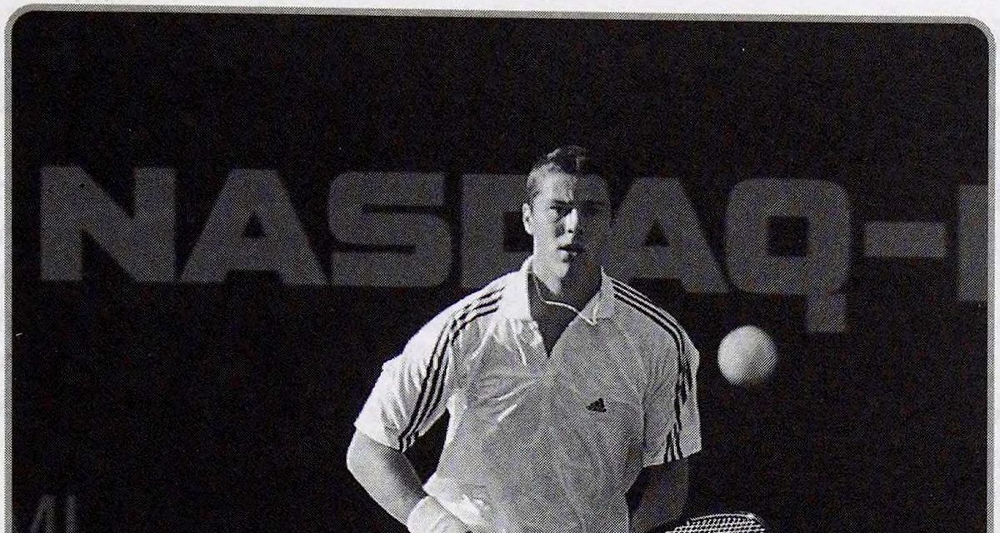
Chìa khóa học bước tách (split step)
Tư thế tốt. Duy trì tư thế tốt ở phần trên cơ thể, giữ vai và lưng tương đối thẳng với phần eo hơi cong về phía trước.
Đương đầu với đối thủ của bạn. Bạn không muốn bị xoay một góc khi đối thủ tiếp xúc với bóng. Bạn cần phải đối mặt trực tiếp với đối thủ của bạn.
Điều này sẽ giúp đảm bảo rằng bạn giữ thăng bằng và sẵn sàng bùng nổ theo mọi hướng.
Thời gian. Bắt đầu bước tách bóng ngay trước khi đối thủ tiếp xúc với bóng, tốt nhất là khi cô ấy bắt đầu chuyển động về phía trước của vợt.
Độ cao của bước nhảy. Đừng nhảy cao. Bạn nên nhảy hoặc nhảy cách mặt đất chỉ vài inch, với mục đích hạ thấp trọng tâm và tiếp đất bằng đầu bi của bàn chân, cách nhau ít nhất bằng vai, đầu gối, hông và mắt cá chân cong.
Đổi hướng
Để dừng lại và hồi phục nhanh nhất có thể, hãy đặt chân ngoài của bạn, uốn cong đầu gối và dồn trọng lượng của bạn về hướng bạn muốn di chuyển. Bàn chân bên trong của bạn phải hướng về hướng bạn đang hồi phục.
Sau đó đẩy ra và nổ ngược lại. Điều quan trọng là không để quán tính đẩy bạn mất thăng bằng, điều này sẽ buộc bạn phải thực hiện thêm các bước để phục hồi. Thay đổi hướng nhanh chóng đòi hỏi sức mạnh chân tuyệt vời.
Bước xáo trộn
Khi chỉ còn một khoảng cách ngắn để tiếp cận bóng hoặc khôi phục vị trí, hầu hết người chơi đều sử dụng bước xáo trộn. Bạn không thể giải quyết được nhiều vấn đề bằng bước xáo trộn, nhưng việc thiết lập sự cân bằng của bạn sẽ dễ dàng và nhanh chóng hơn so với việc sử dụng bước chéo. Trong bước xáo trộn, quay mặt vào lưới và đẩy chân ngoài về hướng bạn muốn đi. Chân trong của bạn bắt đầu đẩy ra trước khi chân ngoài tiếp đất, với cả hai bàn chân chạm nhau trên không ngay trước khi chân ngoài tiếp đất.
Một lỗi phổ biến là sử dụng bước xáo trộn để bao phủ một khoảng cách lớn khi sử dụng phân tần sẽ hiệu quả hơn.
Bước chéo
Khi bạn bị kéo ra khỏi sân và cần hồi phục nhanh chóng, hãy sử dụng bước chéo. Trong hầu hết các trường hợp, hãy đặt chân bên ngoài của bạn và đẩy ra để bắt đầu quá trình phục hồi. Sau đó bắt chéo chân ngoài của bạn qua phía trước chân trong, phần thân trên hướng vào lưới. Bước chéo cho phép bạn
Marat Safin thể hiện hình thể đẹp—tư thế phần thân trên tốt _ và khả năng giữ thăng bằng động—khi anh ấy thực hiện bước bắt chéo.
bao quát càng nhiều mặt đất càng tốt với bước đầu tiên của bạn mà không cần phải cam kết với bên này hay bên kia của sân.
Khôi phục hai bước
Quá trình phục hồi hai bước được thực hiện khi bạn buộc phải ra ngoài trong một đường chạy chết và cần dừng đà và hồi phục. Tiếp xúc bóng bằng chân sau và sau khi chân trước tiếp đất, chân sau của bạn bắt chéo về phía sau và cây đổi hướng. Bởi vì đà của bạn đã kéo bạn ra xa sân và việc phục hồi này mất nhiều thời gian hơn để thực hiện, bạn thường nên cố gắng thực hiện một cú đánh trung hòa hoặc phòng thủ để bạn có thời gian hồi phục hoặc cố gắng đánh người chiến thắng.
Phục hồi Hop/Nửa bước
Thao tác này được sử dụng khi bạn bị kéo ra rộng nhưng không phải chạy chết người và muốn dừng lại càng nhanh càng tốt và đổi hướng sau khi đánh bóng. Đánh bóng với tư thế mở và thực hiện một bước phục hồi nhỏ bằng chân ngoài của bạn (nó thực sự trông giống như một bước nhảy). Sau đó, đặt chân bên ngoài của bạn, uốn cong đầu gối và dồn trọng lượng của bạn về phía giữa sân, đẩy người ra để hồi phục. Điều này tiết kiệm khoảng nửa bước trong thời gian phục hồi. Bởi vì ngày càng có nhiều người chơi sử dụng tư thế mở ở cả trái tay và thuận tay, kiểu động tác bằng chân này cực kỳ phổ biến.
Jennifer Capriati thực hiện bước nhảy/nửa bước để phục hồi nhanh chóng.
Thả Bước
Bước thả bóng là bước lùi đầu tiên của bạn để thực hiện một cú lốp bóng. Người thuận tay phải nên lùi lại bằng chân phải trước. Khi bạn lùi lại bước đầu tiên này, phần thân trên của bạn bắt đầu xoay để tạo điều kiện cho việc di chuyển nhanh chóng về phía sau để lấy phần trên.
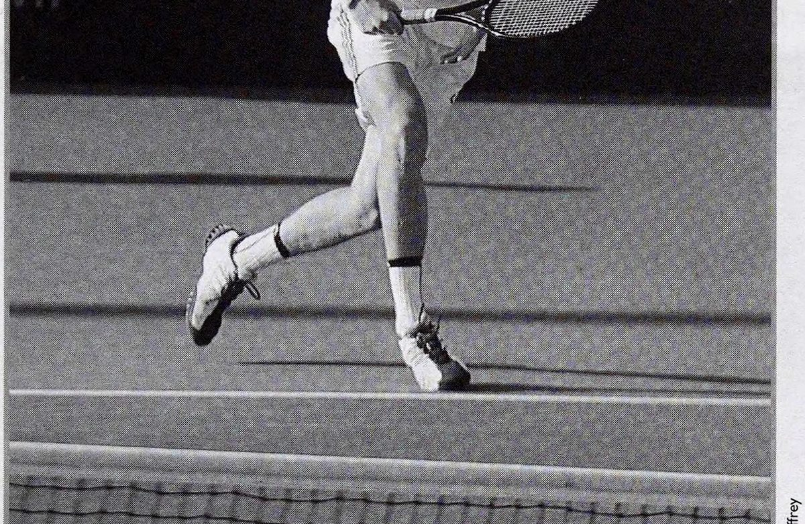
Những lỗi giết chết khả năng di chuyển
Những lỗi phổ biến nhất mà bạn có thể mắc phải sẽ "giết chết" kỹ năng di chuyển của bạn và hạn chế bạn phát huy hết tiềm năng của mình. Nói chuyện với huấn luyện viên USPTA hoặc PTR được chứng nhận hoặc nhờ một người bạn xem bạn thi đấu để xem liệu có bất kỳ hạn chế chuyển động nào áp dụng cho bạn hay không.
e Các bài tập bóng chết quá mức, thay vì các bài tập bóng sống hoặc tính điểm và thi đấu. Có rất nhiều bài tập bóng chết tuyệt vời có thể nâng cao khả năng di chuyển của bạn, nhưng chúng không nên thay thế các bài tập bóng sống.
- Khoan quá mức khi bạn biết bóng sẽ bị đánh vào đâu
- Khoan không đúng cách khi bóng được đưa vào người chơi một cách không mục đích
- Nói chuyện hoặc suy nghĩ tiêu cực về kỹ năng vận động của bạn
- Có ý thức suy nghĩ về nơi bóng sẽ đi
- Không chạy theo từng đường bóng
e Không với tới và vung bóng ngoài tầm với của bạn
- Tư thế xấu, chẳng hạn như cúi người quá mức ở thắt lưng, khom vai hoặc cử động đầu nhiều khi chạy
- Điều hòa kém
- Kỹ năng phối hợp kém
e Động tác chân không đúng cách, đặc biệt là ở bước nhảy
Trước khi quyết định xem bạn cần cải thiện những khía cạnh nào trong phong trào của mình, một lần nữa tôi khuyên bạn nên xem lại và áp dụng bảy điểm mà tôi đã đề cập ở đầu chương. Nếu bạn thực hiện chúng một cách trung thực, bạn sẽ tự nhiên bắt đầu áp dụng nhiều động tác và động tác chân cụ thể. Chỉ cần đừng cố gắng làm quá nhiều việc cùng một lúc. Ngoài ra, hãy nói chuyện với chuyên gia giảng dạy của bạn nếu bạn có thắc mắc. Nhưng hãy nhớ rằng, có cảm giác như bạn đang di chuyển quanh sân và phát huy tối đa các kỹ năng di chuyển của mình sẽ không chỉ cải thiện trận đấu của bạn mà còn là một niềm vui thực sự.
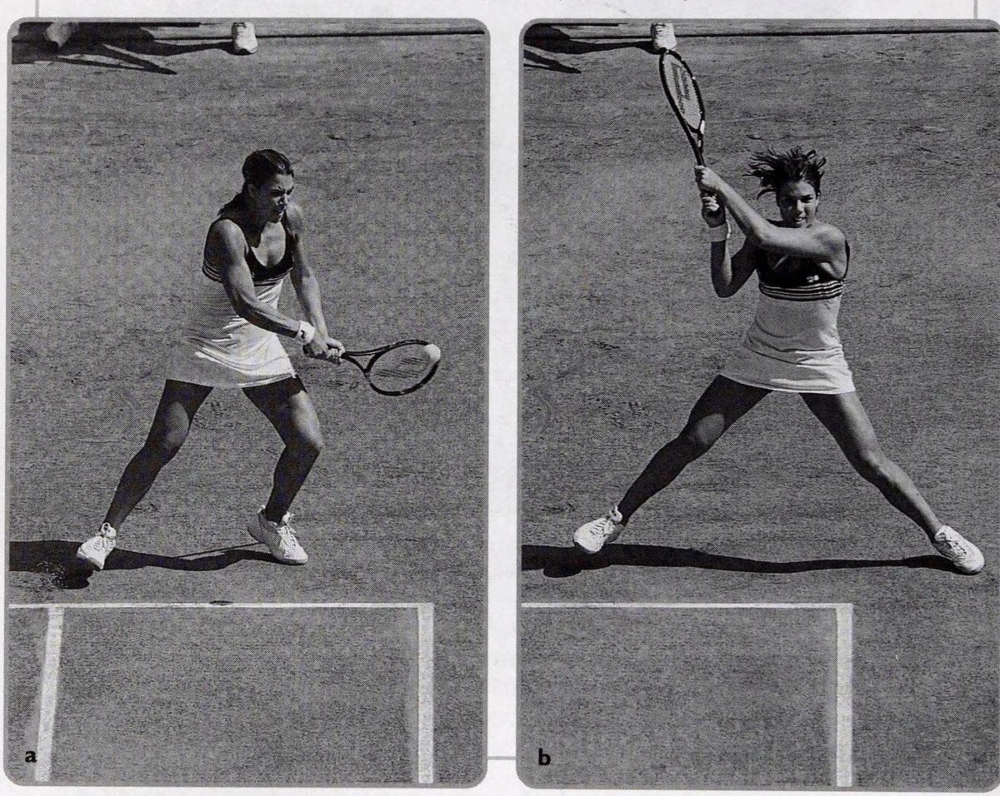
Chương 6: Mô phỏng để thành công
Tạo lại điều kiện thi đấu trong luyện tập để chuẩn bị cho mọi thử thách về thể chất và tinh thần mà đối thủ có thể ném vào bạn.
Ở tất cả các cấp độ chơi—bao gồm cả cấp độ chuyên nghiệp—người chơi thường gây ra nhiều thiệt hại cho trò chơi của họ trong quá trình luyện tập cũng như lợi ích họ nhận được. Hoặc, tôi có thể nói, họ thường “không học” trong các buổi thực hành nhiều hơn là học. Buồn nhưng có thật! Làm sao điều đó có thể xảy ra được? Dễ. Những cú đánh thiếu suy nghĩ, thói quen luyện tập kém, các bài tập không hiệu quả và phản tác dụng khiến người chơi không có sự chuẩn bị tốt cho những yêu cầu mà họ phải đối mặt trong thi đấu. Luyện tập tạo nên sự hoàn hảo? Không phải trong bối cảnh này. Làm việc chăm chỉ có được đền đáp không? Không nhất thiết, nếu bạn làm việc chăm chỉ vào những việc sai trái. Sự thật gần với câu châm ngôn “Luyện tập như chơi và chơi như luyện tập”. Thực hành tối ưu sẽ tạo ra kết quả tối ưu.
Từng đứng top 5 thế giới và là huấn luyện viên của Andre Agassi
Bạn muốn trở thành một tay vợt giỏi hơn? Bạn muốn thắng nhiều trận đấu hơn?
Câu trả lời rất đơn giản—thực hành. Nhưng điều đáng chú ý là bạn phải luyện tập đúng cách. Tôi thực sự là người ủng hộ việc thực hành chất lượng. Thực hành là nơi tất cả xảy ra. Theo tôi, việc luyện tập quan trọng hơn bất kỳ khía cạnh nào khác trong quá trình phát triển của một cầu thủ. Nếu bạn không thể hiện tốt trong luyện tập, trò chơi của bạn sẽ không thành công một cách thần kỳ trong trận đấu.
Đó là lý do tại sao việc đưa ra cấu trúc luyện tập của bạn và cố gắng mô phỏng những gì diễn ra trong một trận đấu lại rất quan trọng. Đó không phải là việc đi ra ngoài hàng giờ và đập bóng một cách vô mục đích. Điều đó là quá mức cần thiết: Bạn sẽ nướng não và cuối cùng thực sự làm hỏng trò chơi của bạn. Bạn có thể dành ít hơn một nửa thời gian ở ngoài đó và nếu bạn có tinh thần xây dựng và tập trung, bạn có thể đạt được những cải tiến lớn. Tennis giống như một cuốn sách không bao giờ kết thúc. Bạn phải liên tục viết các chương mới bằng cách nỗ lực để dẫn đầu cuộc chơi. Ngay cả một cầu thủ thành đạt như Andre Agassi cũng luôn tiếp cận việc tập luyện của mình có mục đích và định hướng. Anh ấy tiến bộ hơn theo tuổi tác vì anh ấy luôn nghĩ rằng những gì mình có là chưa đủ tốt và thậm chí có thể tốt hơn. Cho dù đó là một sự thay đổi tinh tế trong cách cầm vợt hay điều chỉnh kỹ thuật khi thực hiện cú vô lê, Andre luôn nghĩ về điều gì đó anh ấy có thể cải thiện.
Đó là lý do tại sao tôi thích chương này—Nick trình bày một số điểm quan trọng nhất về cách thực hành đúng cách. Tất cả những gì bạn cần làm là chú ý. Bạn sẽ hiểu lợi ích của việc có mục tiêu rõ ràng cho việc luyện tập của mình và kết hợp các khía cạnh tinh thần quan trọng vào mỗi buổi học. Bạn sẽ thấy sự khác biệt giữa việc học một cú đánh mới và xây dựng lối chơi của mình để tự tin hơn mỗi ngày trước một trận đấu lớn. Bạn sẽ học cách chạm vào tất cả các khía cạnh của trò chơi và mô phỏng các tình huống tương tự như khi thi đấu. Sẽ chẳng có ý nghĩa gì khi luyện tập những điều sẽ không xảy ra khi bạn chơi thật và bạn không muốn trở thành một người chơi chỉ có thể biểu diễn khi điều đó không quan trọng. Nếu bạn mô phỏng các điều kiện thi đấu trong luyện tập và bạn có thể thi đấu tốt trong những trường hợp đó thì đó là một dấu hiệu tốt cho thấy khi đến giờ thi đấu, bạn sẽ cố gắng hết sức. Đó chính là việc thực hành một cách nghiêm túc.
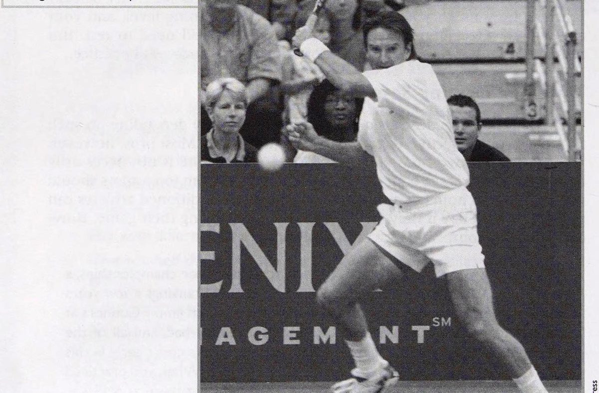
Tận dụng tối đa thời gian
Nếu bạn muốn tận dụng tối đa thời gian luyện tập của mình, hãy mô phỏng những yêu cầu bạn gặp phải khi thi đấu—về mặt kỹ thuật, chiến thuật, cảm xúc, trí tuệ và thể chất. Điều này không chỉ khiến việc luyện tập của bạn trở nên đầy thách thức và kích thích mà còn giúp bạn chuẩn bị cho những thử thách bạn sẽ gặp phải trong quá trình thi đấu và tạo ra một quá trình học tập tích cực sẽ đưa bạn lên cấp độ tiếp theo.
Trong bối cảnh này, bạn nên xem xét phong cách và chiến lược trò chơi của mình cũng như cấu trúc các phương pháp thực hành để cải thiện và bổ sung vào trò chơi của mình.
Kế hoạch phát triển của bạn sẽ cho bạn thấy rõ những lĩnh vực nào là quan trọng nhất mà bạn cần nhấn mạnh.
Khi tôi thi đấu chuyên nghiệp, thỉnh thoảng tập luyện tại một cơ sở quần vợt nổi tiếng.
Nơi này có bầu không khí tuyệt vời, những cầu thủ giỏi, huấn luyện viên giỏi và mọi người ở đó đã làm việc rất chăm chỉ. TÔI! sẽ tập luyện ở đó mỗi lần một tuần, luyện tập tới năm giờ một ngày. Tôi có thể trạng tốt và cảm thấy mình đánh bóng tốt.
Tuy nhiên, mỗi lần rời đi thi đấu ở một giải đấu, tôi cảm thấy di chuyển chậm chạp và chơi rất tệ. Lúc đầu tôi nghĩ đó là sự trùng hợp ngẫu nhiên, nhưng sau khi nó xảy ra bốn năm lần, tôi nhận ra vấn đề liên quan đến cách tôi tập luyện.
Điều tôi nhận ra là hầu hết quá trình khoan tôi đang thực hiện tại cơ sở không mô phỏng những gì sẽ xảy ra trong một trận đấu. Thực ra, tôi đã vô tình quên đi những điều về di chuyển và chiến thuật mà trước đây đã đến một cách tự nhiên. Ví dụ, trong một bài tập, huấn luyện viên sẽ đứng ở đường cuối sân trong sân deuce, còn tôi sẽ ở trên lưới. Huấn luyện viên sẽ bắn năm quả bóng liên tiếp vào tôi, khiến tôi di chuyển khắp lưới và thỉnh thoảng ném một cú lốp bóng. Cuộc tập trận này cảm thấy tuyệt vời; Tôi phải di chuyển nhiều, đánh nhiều bóng và rèn luyện thể chất rất tốt.
Vấn đề là có rất ít mối tương quan giữa các mô hình trong bài tập này—việc đưa ra quyết định, lựa chọn cú đánh và chuyển động—và những gì xảy ra trong một trận đấu. Giả sử huấn luyện viên ném bóng dọc biên, và tôi thực hiện cú vô lê chéo sân. Trong một trận đấu, sau đó tôi sẽ nhanh chóng hồi phục và di chuyển sang phía bên kia sân, vào vị trí tùy theo vị trí cú đánh của tôi tiếp đất. Tuy nhiên, thay vào đó, quả bóng tiếp theo trong bài tập này sẽ đến từ huấn luyện viên, người vẫn đang đứng trên sân. Kết quả là tôi đã không học được các động tác phục hồi thích hợp và không học cách định vị bản thân một cách chính xác. Tôi thường thực hiện bài tập này 30 phút mỗi lần, sáu ngày một tuần. Không có gì ngạc nhiên khi tôi cảm thấy chậm và mất đồng bộ trong các trận đấu. Đây chỉ là một ví dụ đơn giản. Cuối cùng, tôi học được rằng tôi phải nhận thức rõ hơn về cách mình luyện tập chứ không chỉ luyện tập chăm chỉ.
Để giúp bạn mô phỏng để thành công, có một số mục tiêu cụ thể mà bạn cần biết để đảm bảo rằng bạn đang tối đa hóa các buổi thực hành của mình, cũng như một số lỗi phổ biến nhất mắc phải trong quá trình đào tạo.
Xác định mục tiêu
Nếu bạn không biết mình đang cố gắng đạt được điều gì thì rất có thể bạn sẽ không đạt được nhiều thành tựu. Điều quan trọng là phải có mục tiêu cụ thể khi bạn đi tập luyện. Rõ ràng, mục tiêu của bạn sẽ thay đổi tùy thuộc vào một số yếu tố, chẳng hạn như thời gian trước cuộc thi tiếp theo là bao lâu, tầm quan trọng của cuộc thi, bề mặt bạn sẽ thi đấu và những thứ tương tự. Ngoài ra, bạn phải rõ ràng về những gì bạn đang làm cụ thể. Đó là kỹ thuật hay chiến thuật hay cả hai? Bạn đang cố gắng phát triển vũ khí hay cải thiện điểm yếu? Có rất nhiều biến số liên quan đến mục tiêu thực hành của bạn mà tôi không thể đề cập hết mọi khả năng. Thay vào đó, bằng cách cung cấp một số nguyên tắc chính của thực hành chất lượng cao, tôi sẽ cung cấp cho bạn những công cụ để hoàn thành mục tiêu thực hành của riêng bạn, bất kể chúng có thể là gì.
- Chất lượng. Nếu bạn muốn chơi tennis chất lượng cao, bạn muốn có những buổi tập luyện chất lượng cao. Điều này nghe có vẻ sáo rỗng nhưng nó là sự thật. Như Aristotle đã nói: "Chúng ta là những gì chúng ta làm nhiều lần. Do đó, sự xuất sắc không phải là một hành động mà là một thói quen."
e Đào tạo có mục đích. Như tôi vừa nói, những buổi luyện tập của bạn phải có mục đích. Bạn có thể phát triển kỹ năng, kiến thức và sự thích thú trong suốt buổi học nếu bạn nhận thức được mình đang làm gì và tại sao. Bạn không muốn tham gia vào một khóa đào tạo không cần đầu óc, nơi bạn ít suy nghĩ, không hiểu nhiều và không học được điều gì mới. Có một số loại kế hoạch, ngay cả khi nó đơn giản như chơi các điểm và lựa chọn cú đánh tốt.
Hãy lưu ý những lỗi bạn mắc phải và cách sửa. Ngược lại, hãy lưu ý đến những điều tốt bạn làm được trong buổi học và cách bạn thực hiện chúng.
Với cách tiếp cận này, bạn sẽ ngày càng trân trọng buổi thực hành.
Hãy nhớ rằng, hai cú đánh trong quần vợt không bao giờ giống hệt nhau, điều đó có nghĩa là quá trình học tập không bao giờ dừng lại. Vì vậy, khi bạn đang luyện tập, hãy luôn nghĩ về những gì bạn đang làm, cách cải thiện nó và những gì bạn đang cố gắng đạt được.
- Toàn bộ so với một phần. Một lý thuyết cho rằng tổng thể có giá trị lớn hơn tổng các phần của nó. Thay đổi bất kỳ một phần nào và toàn bộ hệ thống sẽ thay đổi.
Về mặt quần vợt, điều đó có nghĩa là tốt hơn nên học toàn bộ cú đánh hoặc kỹ thuật và chiến thuật áp dụng cho nó cùng một lúc, thay vì học từng phần. Hãy để tôi giải thích. Giả sử bạn đang học cách đánh một cú thuận tay và bạn học từng giai đoạn của cú đánh riêng biệt—đầu tiên là động tác bằng chân, sau đó là động tác vung vợt ra sau, sau đó là động tác đánh, và cuối cùng là động tác tiếp theo. bạn
về mặt kỹ thuật đã học được tất cả các phần của toàn bộ nét vẽ. Tuy nhiên, phương pháp này không bằng hoặc không hiệu quả bằng việc học toàn bộ nét trong một lần.
Vấn đề ở đây là, khi bạn chia nhỏ một nét thành nhiều phần rồi xây dựng lại nó, nó sẽ không hiệu quả bằng việc học toàn bộ nét đó cùng một lúc. Điều này cũng đúng khi xét đến việc tách biệt kỹ thuật và chiến thuật. Tránh chỉ học kỹ thuật, như tôi đã thảo luận ở chương 4 về kỹ thuật. Luôn cố gắng học toàn bộ kỹ năng cùng một lúc nếu có thể. Nếu bạn cần chia nhỏ nét để học nó thì không sao. Nhưng hãy chắc chắn rằng bạn cố gắng kết hợp toàn bộ quá trình càng sớm càng tốt.
e Chuyển động động và tĩnh. Tennis là một trò chơi vận động.
Vì vậy, đừng cố gắng học các cú đánh ở tư thế tĩnh. Điều này tiếp nối những gì tôi vừa nói về lý thuyết "toàn bộ so với một phần". Một phần của toàn bộ quá trình cú đánh là chuyển động đến và đi từ bóng. Do đó, hãy cố gắng kết hợp chuyển động, bao gồm việc tăng tốc bóng và giảm tốc để đánh và thu hồi, vào bất kỳ quá trình học tập nào để mô phỏng trận đấu tốt hơn. Điều này sẽ giúp chuyển kỹ năng từ luyện tập sang thi đấu.
- Hãy học cho đúng trước. Trả tiền ngay bây giờ hoặc trả nhiều tiền hơn sau này! Một khi bạn học sai điều gì đó, việc bỏ qua lỗi đó và học kỹ thuật thích hợp sẽ khó khăn hơn nhiều - chẳng hạn như cắn móng tay. Vì vậy, hãy nhớ rằng điều này không chỉ dành cho trò chơi của bạn mà còn dành cho con bạn nếu trẻ đang chơi trò chơi đó. Một khi người chơi học sai điều gì đó thì sau này sẽ vô cùng khó khăn để sửa chữa. Hãy luôn cố gắng học đúng kỹ thuật ngay lần đầu tiên và giúp bạn tiết kiệm rất nhiều thời gian cũng như sự thất vọng về sau.
Khía cạnh tâm lý của một buổi tập tốt
Một buổi thực hành tốt đòi hỏi những khía cạnh tinh thần then chốt. Bạn có thể chỉ sử dụng một số ít tại một thời điểm, nhưng bạn nên liên tục tìm cách kết hợp những khía cạnh này vào các buổi thực hành của mình.
1. Nồng độ. Tập trung vào những gì bạn đang làm và có mục đích cho những gì bạn đang làm. Đánh thiếu suy nghĩ sẽ không giúp ích gì cho trò chơi của bạn.
2. Nhận thức của tòa án. Phát triển kỹ năng nhận thức tốt. Luôn lưu ý xem bạn đang ở đâu trên sân và điều đó sẽ ảnh hưởng như thế nào về mặt chiến thuật đến việc lựa chọn cú đánh của bạn. Nói cách khác, khi bạn luyện tập, hãy luôn cố gắng đánh đúng cú đánh tùy theo tình huống. Thông thường, người chơi trở nên lười biếng trong khi luyện tập và đánh những cú đánh mà nếu không họ sẽ không đánh trong một trận đấu và sau đó hợp lý hóa rằng điều đó không sao cả vì họ sẽ không làm điều đó trong một trận đấu. Tuy nhiên, hãy yên tâm, nó sẽ quay lại ám ảnh bạn.
Đó là ngày cuối cùng của giải vô địch trẻ em Pháp tại Paris. Jared Palmer—một trong những tay ném tài năng và sáng tạo nhất mà tôi có cơ hội làm việc cùng—đã đấu với một võ sĩ trẻ người Pháp, tên là Fabrice Santoro, trong trận đấu
trước hàng ngàn người hâm mộ Pháp đang hò reo. Trong suốt chuyến du đấu châu Âu đó, tôi đã cảnh báo và cầu xin Jared đừng liên tục thực hiện cú vô lê thuận tay thủ thuật này, nơi anh ấy sẽ tạo ra một góc cực lớn so với một cú đánh tiêu chuẩn. Tôi nói, "Jared, nếu anh tiếp tục đánh cú đánh đó khi luyện tập, nó sẽ quay trở lại ám ảnh anh trong trận đấu." Tỷ số là 6–5 trong set thứ ba, điểm trận đấu dành cho Jared, một tình huống cực kỳ căng thẳng. Jared tấn công vào lưới, và Santoro thực hiện một cú sút không thể tin được trên vạch vôi - và ý tôi là trên vạch vôi - để đưa nó trở lại bình thường. Đám đông đang phát điên. Jared tấn công vào lưới một lần nữa và Santaro tung ra một đòn đáp trả yếu ớt. Tất cả những gì Jared phải làm là tung một cú vô lê thuận tay tiêu chuẩn ra sân rộng mở, và anh ấy sẽ có thêm một điểm trận đấu. Nhưng chỉ trong tích tắc, Jared bắt đầu thực hiện cú vô lê thuận tay lừa, sau đó nhanh chóng cố gắng chuyển sang cú đánh bình thường. Nhưng đã quá muộn. Anh ấy đã bỏ lỡ cú vô lê trong băng! Nó có thể khiến anh ấy phải trả giá hoặc có thể không phải trả giá bằng trận đấu nhưng tuy nhiên, anh ấy không may thua 8-6 ở hiệp thứ ba. Vì vậy, hãy tin tôi khi tôi nói bạn làm như thế nào và làm gì khi luyện tập sẽ được thể hiện trong các trận đấu!
3. Dự đoán. Bạn sẽ học cách dự đoán một cách tự nhiên bằng cách thực hiện các thao tác khoan bóng trực tiếp thích hợp cũng như các điểm và trò chơi. Và bạn cũng có thể thực hiện những kiểu thực hành cụ thể để nâng cao khả năng dự đoán. Nhưng hãy luôn lưu ý đến các bài tập, đặc biệt là các pha tập bóng chết quá mức, có thể làm hỏng khả năng dự đoán.
4. Ra quyết định. Kết hợp các bài tập vào thực tiễn của bạn, đòi hỏi bạn phải đưa ra quyết định về loại cú đánh nào sẽ thực hiện và vị trí để đánh nó, trái ngược với việc luôn biết trước bạn sẽ đánh bóng ở đâu. Ví dụ: nếu bạn đang thực hiện một bài tập cơ bản từ trái tay sang trái tay chéo sân từ phần sân sau, hãy thử chuyển sang một bài tập trong đó bạn thực hiện động tác từ trái tay sang trái tay cho đến khi bạn nhận được một đường bóng ngắn, sau đó đánh nó dọc theo đường biên. Điều này đòi hỏi bạn phải nhận ra quả bóng ngắn và đưa ra quyết định đánh một cú đánh khác. Sự thay đổi đơn giản đó tạo ra trải nghiệm học tập tốt hơn.
5. Giải quyết vấn đề. Giải quyết các vấn đề và tình huống cụ thể trên sân, chẳng hạn như cách khai thác điểm yếu, chơi với người có thuận tay lớn, v.v.
6. Hiểu biết về chiến thuật. Thay vì lặp đi lặp lại những cú đánh giống nhau một cách thiếu suy nghĩ, hãy chọn cách đánh, cách chống lại đối thủ, cách phát triển các kiểu đánh và cách để có được cú đánh mà bạn muốn.
7. Tự đánh giá. Hãy nhìn vào gương và đánh giá lối chơi của chính bạn, cho dù đó là kỹ thuật, chiến thuật hay khía cạnh tâm lý trong trò chơi của bạn.
Đừng chỉ trông chờ vào huấn luyện viên bảo bạn phải làm gì. Bạn càng nhận thức rõ hơn về những gì đang diễn ra thì bạn càng điều chỉnh chiến thuật tốt hơn.
Học tập và thi đấu
Như tôi đã trình bày ở chương 5 về chuyển động, bạn muốn đặt mình vào trạng thái tối ưu về thể chất và tinh thần trong quá trình luyện tập. Sự tối ưu này
trạng thái của mẹ rất mãnh liệt nhưng vẫn thoải mái. Khi thích hợp, bạn nên học cách luyện tập với tốc độ và cường độ giống như khi chơi một trận đấu.
Có những lúc bạn cần phải làm mọi thứ chậm lại, chẳng hạn như khi học một cú đánh mới, thử nghiệm kỹ thuật hoặc thử một số chiến thuật sáng tạo mới. Nhưng phần lớn, bạn nên ở trạng thái tối ưu khi luyện tập.
Mặc dù bạn phải luôn học hỏi khi bước vào sân, nhưng nói chung, bạn có hai phương thức thực hiện chính: chế độ học tập và chế độ biểu diễn. Phương thức học tập là khi bạn đang học một kỹ năng mới hoặc đang nỗ lực cải thiện kỹ năng hiện có, việc này đòi hỏi sự suy nghĩ có ý thức đáng kể. Chế độ hiệu suất là khi trọng tâm chính của bạn là biểu diễn trong cuộc thi hoặc để đánh giá mức độ kỹ năng bạn đã đạt được.
Điều quan trọng là phải biết bạn đang ở trạng thái nào và thực hành phù hợp.
Ví dụ: nếu bạn đang cố gắng rèn luyện kỹ thuật cho cú cắt trái tay mới của mình, thì đây không phải là lúc để ra ngoài và chơi một trận đấu có tính cạnh tranh cao. Bạn có thể chơi một trận đấu tập trong chế độ học tập với hiểu biết rằng bạn đang nghiên cứu kỹ thuật mới. Điểm mấu chốt là phải biết bạn đang làm việc ở chế độ nào và sau đó thiết lập các phương pháp thực hành của mình cho phù hợp.
Bài tập và huấn luyện — bóng sống và bóng chết
Thà "sống còn hơn chết!" Các bài tập quần vợt thường được phân loại là các bài tập bóng sống hoặc bóng chết. Cả hai loại cuộc tập trận đều có giá trị riêng. Nếu bạn muốn một bài tập mô phỏng lại nhu cầu của một tình huống trận đấu thực tế, thì bài tập bóng sống sẽ là tốt nhất. Mặt khác, nếu bạn đang thực sự gặp khó khăn với các khía cạnh kỹ thuật của một cú đánh và muốn lặp lại nhiều lần hoặc bạn đang giới thiệu một kiểu chơi mới, một bài tập bóng chết có thể phù hợp hơn. Nhìn chung, các bài tập bóng sống được ưa chuộng hơn các bài tập bóng chết vì chúng mô phỏng lối chơi thực tế chặt chẽ hơn.
Bài tập bóng chết
Một bài tập bóng chết bao gồm các lần đưa bóng lặp đi lặp lại từ một cầu thủ hoặc huấn luyện viên khác. Bài tập được bắt đầu từ một quả bóng "chết", trong đó huấn luyện viên đưa bóng cho đấu thủ từ vị trí đứng trên hoặc cạnh sân.
Các bài tập bóng chết có thể được sử dụng vì nhiều lý do, chẳng hạn như di chuyển, kiểu mẫu và huấn luyện chiến thuật, nhưng chúng thường được sử dụng để học hoặc cải thiện kỹ thuật.
Lợi ích chính của việc khoan bóng chết là người chơi nhận được một quả bóng ổn định để đánh bất kể cú đánh trước đó của cô ấy đi đến đâu. Bạn có thể lặp lại rất nhiều lần cho một cú đánh hoặc kiểu đánh cụ thể. Bạn có thể thiết kế các bài tập bóng chết để mô phỏng chặt chẽ cách chơi của trận đấu bằng cách điều chỉnh loại, tốc độ và vị trí của đường chuyền. Bạn cũng có thể mở rộng lợi ích của bài tập bằng cách sử dụng các mẫu và mục tiêu cụ thể. Nhược điểm của một
bài tập bóng chết là bài tập không mô phỏng cú đánh qua lại xảy ra khi bạn đang chơi một điểm và do đó bản thân nó không giúp bạn chuẩn bị đầy đủ cho cuộc thi đấu. Nó cũng vô tình có thể làm giảm kỹ năng đoán trước các tín hiệu từ cú đánh và vị trí của đối thủ.
Bài tập bóng sống
Một cuộc tập trận bóng trực tiếp bao gồm các pha tranh bóng giữa bạn và một cầu thủ hoặc huấn luyện viên khác.
Các bài tập bóng sống có thể mang đến cho bạn cơ hội rèn luyện nhiều kỹ năng, bao gồm dự đoán, điều hòa, kỹ năng ra quyết định, phát triển kiểu mẫu, động tác bằng chân và cơ chế đánh bóng. Trong bối cảnh của các bài tập này, bạn có thể tạo một bài tập mô phỏng trận đấu hoặc thu hẹp trọng tâm của bài tập để phát triển một kỹ năng cụ thể.
Ưu điểm của bài tập bóng sống so với bài tập bóng chết là một bài tập bóng sống tốt mô phỏng một cách tự nhiên các tình huống thực tế của trận đấu với các biến thể như tốc độ, độ xoáy, vị trí, độ cao của bóng khác nhau, v.v. Những loại bài tập này mô phỏng chặt chẽ hơn những gì xảy ra trong trận đấu, mang lại sự chuyển tiếp tốt hơn từ luyện tập sang thi đấu. Điều khó chịu khi thực hiện các bài tập bóng sống là bạn có thể sẽ mắc nhiều lỗi hơn so với các bài tập bóng chết vì độ khó của các pha đánh bóng tăng lên.
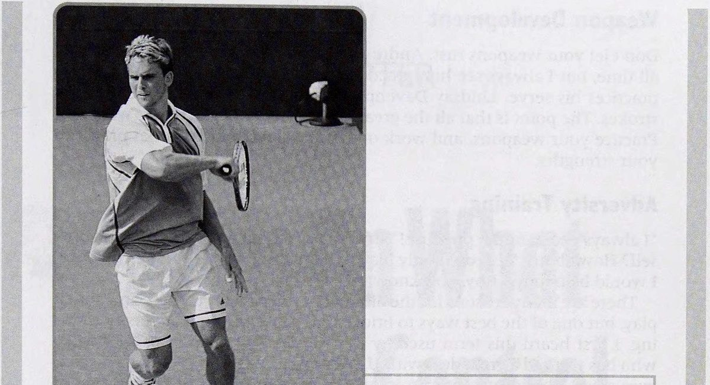
Tăng cường mô phỏng: những yếu tố cần đưa vào
Thay đổi độ xoáy, tốc độ và vị trí của quả bóng được đưa cho bạn trong các bài tập.
Khi khoan, hãy tạo ra sự không chắc chắn về việc quả bóng sẽ đi đến đâu.
Kết hợp tập luyện bóng sống thường xuyên.
Hãy luyện tập ở trạng thái tối ưu, cả về thể chất và tinh thần.
Luyện tập ở tốc độ hoặc cao hơn tốc độ bạn sẽ thi đấu trong một trận đấu.
Chơi với nhiều loại người chơi khác nhau.
Hãy cho bản thân thời gian nghỉ ngơi thích hợp giữa các đợt tập luyện trong khi tập luyện.
Tạo áp lực trong quá trình luyện tập của bạn.
Đánh mỗi quả bóng có mục đích.
Thực hành bài tập mở để kết hợp việc đưa ra quyết định và lựa chọn cú đánh.
Thực hành các mô hình phát huy thế mạnh của bạn.
Tỷ lệ làm việc và nghỉ ngơi
Hãy dành thời gian để nghỉ ngơi nhé! Bạn chỉ có thể chạy hết sức trong thời gian dài trước khi kỹ thuật và sự tập trung của bạn bắt đầu suy giảm và lợi ích chung của việc tập luyện bắt đầu giảm đi. Khi bạn đang luyện tập chăm chỉ, hãy nghĩ đến tỷ lệ giữa công việc và nghỉ ngơi, chẳng hạn như 1 trên 1, 1 trên 2 hoặc 1 trên 3. Đây là một cách nói thú vị rằng, nếu bạn chạy chăm chỉ trong 10 giây (dài hơn hầu hết mọi thời điểm bạn từng thi đấu trong một trận đấu), hãy dành ít nhất 10 giây để nghỉ ngơi (1 đến 1) hoặc 20 giây (1 đến 2). Nếu bạn thực hiện nhiều lần lặp lại, bạn thường sẽ cần 30 giây (1 đến 3) để hồi phục. Sau khi thực hiện động tác này từ 5 đến 7 lần, bạn có thể phải ngồi xuống và nghỉ từ 60 đến 90 giây, giống như khi bạn thay đổi người trong một trận đấu. Nghe có vẻ không vất vả lắm nhưng ngay cả những chuyên gia hàng đầu thế giới cũng sẽ kiệt sức trong vòng 45 phút nếu họ cố gắng tập luyện mà không có tỷ lệ làm việc và nghỉ ngơi hợp lý. Đúng là nếu bạn chỉ luyện tập bằng cách đứng một chỗ và đánh bóng, bạn không thực sự nỗ lực hết mình; nhưng loại hình đào tạo đó nên tránh nếu có thể. Tôi đã chứng kiến nhiều người chơi quần vợt háo hức hơn và những buổi tập luyện tốt có thể bị phá hủy do thiếu hiểu biết về khái niệm đơn giản này.
Điều đó không có nghĩa là bạn không bao giờ nên ép mình đến mức mệt mỏi khi luyện tập—hoàn toàn ngược lại. Tuy nhiên, nếu bạn làm vậy, hãy cố gắng hết sức để duy trì chất lượng cú đánh của mình. Cường độ luyện tập, tần suất chạy, mức độ điều hòa và độ tuổi của bạn đều sẽ ảnh hưởng đến mức độ và tần suất bạn cần nghỉ ngơi. Nhưng hãy nhớ rằng nghỉ ngơi hợp lý là một phần quan trọng để thực hành thành công.
Thời lượng mỗi buổi tập
Thời lượng của một buổi luyện tập sẽ thay đổi đáng kể tùy thuộc vào các yếu tố như mục tiêu, độ tuổi, thời tiết và những yếu tố tương tự của bạn. Tuy nhiên, hầu hết các chuyên gia sẽ không vượt quá hai giờ cho một buổi tập. Nhiều hơn không nhất thiết là tốt hơn. Đối với người lớn trung bình, 90 phút là đủ. Ngay cả những đàn em hàng đầu cũng không nên vượt quá hai giờ mỗi lần. Rõ ràng, các vận động viên có thể trạng tốt có thể tập luyện hai lần một ngày nếu họ nghiêm túc trong việc cải thiện thành tích của mình. Tuy nhiên, điểm mấu chốt là chất lượng so với số lượng.
Nhiều năm trước, trước khi giải vô địch trong nhà Australia bắt đầu, cậu bé Eliot Telscher (anh ấy lọt vào top 5 bảng xếp hạng thế giới vài năm sau đó) và tôi dậy sớm hai ngày liên tiếp để tập luyện với Jimmy Connors tại sân vận động. Đó thực sự là sân duy nhất mà họ có và tất cả các trận đấu đều diễn ra ở đó. Vì vậy, chúng tôi phải đặt lịch tòa sớm, trong trường hợp này là từ 7 giờ đến 8 giờ sáng, chỉ để có phiên tòa trong một giờ. Khi tập với Jimmy, bạn không muốn bị trễ nên Eliot và tôi đến đó lúc 6 giờ 45 sáng.
Jimmy đã ở đó chạy bộ quanh đường biên, sau đó thực hiện một số động tác nhảy dây. Sau đó, chúng tôi bắt đầu khởi động, với Eliot và tôi ở một bên và Jimmy ở bên kia. Ôi chàng trai, cậu phải sẵn sàng vì Jimmy sẽ bắt đầu ngay thôi
di chuyển chân nhanh chóng, vào vị trí hoàn hảo cho mọi đường bóng. Và mặc dù chúng tôi chưa đánh mạnh nhưng đó đã là một buổi tập luyện—Jimmy đến bóng sớm nên bạn có ít thời gian hơn bình thường để đến bóng và anh ấy sẽ hiếm khi đánh trượt. Không cần phải nói, chúng tôi đã ấm lên nhanh chóng. Sau đó, chúng tôi sẽ khởi động các cú giao bóng và điểm chơi của mình. Eliot và tôi sẽ luân phiên đấu với Jimmy. Đó là một trải nghiệm tuyệt vời! Jimmy chạy theo từng đường bóng và khiến chúng tôi phải nỗ lực để giành được từng điểm. Sự quyết tâm và cam kết về chất lượng của anh ấy đã thực sự giúp cả hai chúng tôi mở mang tầm mắt, chứ đừng nói đến việc mệt mỏi. Vào cuối buổi, sau khi Eliot vừa chơi xong một đoạn dài, tôi nói: "Bạn đã bao giờ cảm thấy mệt mỏi thế này khi luyện tập kéo dài một giờ chưa?" Anh ấy chỉ nhìn tôi, lắc đầu và nói: "Anh đùa à? Tôi kiệt sức rồi!" Trong hai ngày đó, cả hai chúng tôi đã học được rất nhiều điều về chất lượng luyện tập và rằng bạn không cần phải tập luyện hàng giờ liền để có được một buổi tập luyện hiệu quả. Nhân tiện, không phải ngẫu nhiên mà tôi đã có một giải đấu tốt và lọt vào bán kết trước khi thua Jimmy Connors, bạn đoán được rồi.
Jimmy Connors luyện tập với cường độ tương tự như anh ấy đã mang đến cuộc thi.
Chính xác và sức mạnh
Nhiều sức mạnh hơn đồng nghĩa với độ chính xác kém hơn. Người chơi muốn cạnh tranh với những người chuyên nghiệp và tin tưởng một cách sai lầm rằng họ nên nổ mọi quả bóng mạnh nhất có thể.
Không phải vậy đâu. Các chuyên gia sử dụng độ xoáy và các biến thể của tốc độ để kiểm soát bóng. Một quan niệm sai lầm khác là các tay vợt chuyên nghiệp luôn đánh theo đường thẳng. Trên thực tế, trong hầu hết các trường hợp, họ có phạm vi mục tiêu lớn hơn bạn nghĩ.
Rất nhiều người xé lớp vỏ bọc bóng và bỏ lỡ hầu hết các cú đánh của họ, nghĩ rằng một ngày nào đó các cú đánh của họ sẽ bắt đầu thành công. Nhưng việc bỏ lỡ mọi quả bóng khác trong luyện tập sẽ không mang lại lợi ích gì cho bạn (chưa kể đến việc sẽ không ai muốn đánh với bạn!). Tôi khuyên bạn nên sử dụng quy tắc 50 phần trăm. Đặt khu vực mục tiêu của bạn để bạn có thể đạt được chúng trong 50% thời gian.
Nếu bạn có thể đánh chúng thường xuyên hơn thế, hãy đặt các vùng mục tiêu nhỏ hơn. Ví dụ, nếu bạn là người mới bắt đầu, mục tiêu của bạn chỉ là đưa bóng qua lưới và trong sân. Khi kỹ năng của bạn được cải thiện, mục tiêu của bạn có thể trở thành một nửa sân đấu.
Người chơi cao cấp hơn có thể đặt khu vực mục tiêu của mình có đường kính từ 5 đến 7 feet. Các chuyên gia đẳng cấp thế giới có thể có khu vực mục tiêu rộng khoảng 2 feet. Khi giao bóng, các vận động viên chuyên nghiệp sẽ nhắm mục tiêu cách nơi họ định giao bóng trong vòng vài inch. Bạn có thể muốn bắt đầu bằng cách đánh cú giao bóng theo hướng chung trước khi thu hẹp mục tiêu của mình.
Vấn đề là sức mạnh có thể tốt, nhưng bạn phải nhận ra rằng nhiều sức mạnh hơn đồng nghĩa với độ chính xác kém hơn. Nếu bạn đánh bóng mạnh, hãy đặt vùng mục tiêu lớn hơn.
Nếu bạn mắc quá nhiều lỗi, hãy giảm tốc độ bắn hoặc nhắm đến một khu vực mục tiêu lớn hơn.
Các mô thức thi đấu
Nghiên cứu phát triển các kiểu chơi mà bạn sẽ sử dụng trong trận đấu là một trong những cách tốt nhất để mô phỏng cách chơi trận đấu trong thực tế.
Tôi khuyên rằng, ngoài việc luyện tập các mẫu đơn giản để cải thiện một kỹ năng cụ thể, hãy cố gắng hoàn thiện các mẫu phát huy điểm mạnh của bạn và buộc người chơi tránh xa điểm yếu của bạn.
Ví dụ: nếu bạn có một cú trái tay tốt và một cú thuận tay yếu, bạn có thể muốn thực hiện theo kiểu trái tay chéo sân hơn là xé bóng xuống. vạch khi bạn nhận được bóng ngắn để bạn có thể đánh bóng trái tay thường xuyên hơn. Và thực hành cú thuận tay dọc theo đường trái tay chéo sân của đối thủ. Điều này sẽ buộc đối thủ của bạn phải đánh cú đánh tiếp theo về phía trái tay của bạn. Hãy tham khảo chương 3, nơi tôi sẽ cung cấp thông tin chi tiết về những mẫu hình nào là quan trọng nhất đối với phong cách chơi cụ thể của bạn.
Bài tập đóng và bài tập mở
Khi bạn đang cố gắng cải thiện các kiểu đánh và lựa chọn cú đánh mà bạn thực hiện trong một trận đấu, hãy sử dụng cái được gọi là các bài tập có kết thúc mở, trái ngược với các bài tập có kết thúc đóng.
Một bài tập khép kín là khi bạn biết chính xác mình sẽ đánh những cú đánh nào trong quá trình tập. Giả sử bạn đang thực hành từ trong ra ngoài
Buổi tập đẳng cấp thế giới
Đây là ví dụ về buổi tập gần đây của tôi với Jan-Michael Gambill (tay vợt Davis Cup người Mỹ và top 20 thế giới) và cha/huấn luyện viên của anh ấy, Chuck. Khi đọc phần này, bạn có thể thấy một số nguyên tắc cơ bản trong chương này được áp dụng như thế nào.
Bạn cũng có thể sử dụng phần này làm hướng dẫn để thiết lập phương pháp thực hành của riêng mình.
Mục tiêu chính của buổi học:Làm việc về việc trả giao bóng, nhấn mạnh vào việc trả giao bóng thuận tay
Mục tiêu: Ổn định hơn và cải thiện khả năng di chuyển với bóng
Khởi động: Đã trải qua quá trình khởi động tiêu chuẩn, căng cơ và đánh tất cả các cú đánh của anh ấy. Đảm bảo anh ấy đã đổ mồ hôi.
Mục tiêu lợi nhuận: Thiết lập các khu vực mục tiêu lớn cách xa các dòng để có tỷ lệ lợi nhuận cao. Dùng những quả bóng tennis để “vẽ” khu vực mục tiêu.
Mười phút trả bóng mà không ghi điểm: Trong phân đoạn này, mục tiêu là thực hiện tỷ lệ trả bóng cao ở các khu vực rộng lớn và giám sát các nguyên tắc cơ bản của kỹ thuật khi trả bóng. Đối tác của anh ấy giao bóng chủ yếu bằng thuận tay nhưng đôi khi là trái tay, để đảm bảo rằng sự chuẩn bị cho trận đấu lượt về được mô phỏng. Nếu Jan-Michael biết bóng chỉ đi về phía thuận tay của mình, anh ta có xu hướng xoay người trước cú đánh hoặc "gian lận" về phía thuận tay, điều này không mô phỏng lối chơi đối kháng.
Tính điểm: Sau khi cảm thấy thoải mái với cơ chế và vị trí trả bóng, anh ấy chuyển sang chơi tính điểm thông thường. Anh ấy làm điều này thêm 10 đến 5 phút nữa nhưng không ghi được điểm. Ở giai đoạn này, chúng tôi không muốn anh ấy quá cạnh tranh.
Chúng tôi tiếp tục theo dõi kỹ thuật và lựa chọn cú đánh.
Chơi tính điểm cạnh tranh: Giai đoạn tiếp theo là chơi 30 phút tính điểm cạnh tranh, với cả hai người chơi xen kẽ giữa giao bóng và trả giao bóng.
Kết thúc bằng tiebreak: Chúng tôi kết thúc hiệp đấu với một tiebreak có tính cạnh tranh cao dành cho nước ngọt. Điều này cung cấp một thước đo tốt về cách anh ta hiện đang thực hiện việc trả lại.
Tóm tắt buổi học:
Chúng tôi đã thảo luận về những gì đã hiệu quả, cảm giác trở lại như thế nào và bất kỳ đề xuất nào cho các bài tập trong tương lai.
Jan-Michael Gambill nhanh chóng học được tầm quan trọng của việc mô phỏng các điều kiện trận đấu trong luyện tập và sử dụng thời gian đó = thế đứng để cải thiện điểm yếu của mình.
thuận tay. Bài tập bạn thiết lập yêu cầu bạn đánh bóng từ trong ra ngoài về phía trái tay của đối tác. Đối tác của bạn đánh hoặc đưa ra câu trả lời dọc theo dòng, và bạn chạy tới và đánh cú thuận tay chéo góc của mình. Đây là một cách hoàn toàn tốt để thực hành mẫu, nhưng về cơ bản không liên quan đến việc ra quyết định.
Để đưa bài tập lên một tầm cao hơn và mô phỏng chặt chẽ hơn lối chơi trong trận đấu, hãy thêm biến thể và ra quyết định để biến bài tập thành một bài tập có kết thúc mở. Ví dụ: sử dụng cùng một bài tập này, đánh bóng từ trong ra ngoài và để đồng đội của bạn có quyền lựa chọn đánh hoặc đưa bóng tiếp theo dọc theo đường biên hoặc chéo sân. Điều đó buộc bạn phải lựa chọn cú đánh phù hợp và đánh đúng cú đánh. Bạn đang thực hành cùng một kiểu đánh (cú thuận tay từ trong ra ngoài) nhưng cũng đang học các phương án và quyết định chọn cú đánh khác nhau.
Phát triển vũ khí
Đừng để vũ khí của bạn bị rỉ sét. Andre Agassi có một trong những cú thuận tay hay nhất mọi thời đại, nhưng tôi luôn thấy anh ấy luyện tập cú đánh. Pete Sampras thường xuyên thực hành cú giao bóng của mình. Lindsay Davenport không bao giờ thất bại trong việc luyện tập các cú đánh trên mặt đất của mình. Vấn đề là tất cả những cao thủ không bao giờ bỏ bê vũ khí của mình.
Luyện tập vũ khí của bạn và phát triển các mô hình phát huy thế mạnh của bạn.
Luyện tập nghịch cảnh
"Tôi luôn nghẹt thở trước áp lực!" Có bao nhiêu bạn đã nói với chính mình điều đó? Thế còn, "Nếu tôi có thể thi đấu trong các trận đấu như cách tôi chơi khi tập luyện thì tôi sẽ rất vui." Này chàng trai, em có biết cảm giác đó không!
Có nhiều lý do dẫn đến sự khác biệt giữa luyện tập và thi đấu, nhưng một trong những cách tốt nhất để thu hẹp khoảng cách đó là thông qua luyện tập trong nghịch cảnh. Lần đầu tiên tôi nghe thuật ngữ này được sử dụng bởi Tiến sĩ Dan Gould, một nhà tâm lý học thể thao, người đã làm việc rất nhiều với các vận động viên Olympic Hoa Kỳ, và tôi đã sử dụng nó kể từ đó. Ý tưởng là tập luyện trong một môi trường tạo ra một số nghịch cảnh và áp lực mà bạn phải đối mặt trong một trận đấu. Nếu ngoài trời có gió, đừng bỏ tập hoặc chơi trong nhà. Hãy ra ngoài đó và chơi. Bạn sẽ học cách đối phó với gió trong trận đấu bằng cách nào khác ngoài việc luyện tập trong điều kiện có gió? Còn việc đối mặt với một cầu thủ đánh với quá nhiều xoáy lên hoặc quá mạnh thì sao? Hãy học cách đối phó với nó trong thực tế và bạn sẽ xử lý nó tốt hơn trong một trận đấu. Một lĩnh vực lớn mà mọi người cần phải giải quyết là áp lực. Cố gắng mô phỏng áp lực trong quá trình luyện tập của bạn. Thử thách bản thân trong các bài tập bằng cách xem bạn có thể thực hiện được bao nhiêu cú đánh hoặc ghi điểm trong một bài tập hoặc tập luyện và chơi nước ngọt. Để mô phỏng khán giả, hãy nhờ một hoặc hai người bạn xem bạn chơi một bộ. Chơi một trận đấu tập với người mà bạn biết mình nên đánh bại. Học cách đối mặt với nghịch cảnh trong luyện tập để bạn có sự chuẩn bị tốt hơn để đối phó với nghịch cảnh trong trận đấu.
Hãy nhớ rằng, nếu bạn muốn tối ưu hóa thời gian của mình trên sân, hãy mô phỏng nhu cầu cạnh tranh trong quá trình luyện tập của bạn. Bằng cách này, bạn sẽ ngạc nhiên về mức độ cải thiện trò chơi của mình trong một thời gian ngắn. Để biết thêm thông tin cụ thể về những bài tập cụ thể mà bạn nên sử dụng hoặc cách thiết lập các buổi thực hành cá nhân, hãy liên hệ với chuyên gia USPTA hoặc PTR được chứng nhận tại địa phương để giúp bạn. Hãy luyện tập như bạn chơi và chơi như bạn luyện tập, bạn sẽ đạt được kết quả tối đa như mong muốn.
Chương 7: Tập trung vào điều bạn có thể kiểm soát
Mọi người đều phải đối mặt với những thử thách về tinh thần trên sân. Chìa khóa để vượt qua chúng là tập trung vào khả năng của bạn và bỏ qua phần còn lại.
Tôi không phải là nhà tâm lý học thể thao, nhưng với tư cách là huấn luyện viên, tôi chơi một trận trên sân tennis mỗi ngày. Sau 35 năm chơi, huấn luyện và quan sát quần vợt ở mọi cấp độ của môn thể thao cũng như tương tác với một số nhà tâm lý học thể thao hàng đầu, tôi đã có thể hình thành những gì mà tôi tin là những nguyên tắc vững chắc của tâm lý học thể thao. Chúng là những khái niệm được sử dụng bởi các chuyên gia hàng đầu trên thế giới. Chúng có phải là bí mật không? Không và có. Chúng không phải là bí mật ở chỗ nhiều người hiểu biết biết về chúng; tuy nhiên, chúng là những bí mật nên rất ít người chơi hiểu được ý nghĩa hoặc áp dụng chúng. Có một điều chắc chắn. Nếu bạn thấy một nhà vô địch vĩ đại đang thi đấu thì có nghĩa là cô ấy đang sử dụng nhiều hoặc tất cả những bí mật này. Chúng là những khái niệm đơn giản, dễ hiểu và dễ nắm bắt. Tuy nhiên, chúng thực sự vượt qua tất cả các môn thể thao và có thể tối đa hóa khả năng thi đấu của bạn ở mọi tầng lớp xã hội. Nếu bạn nỗ lực và cải thiện bất kỳ lĩnh vực nào sau đây, điều đó sẽ có tác động đáng kể đến trò chơi của bạn.
Huấn luyện viên quần vợt nam Đại học Stanford,
Đây là sự thật đơn giản:Bạn có thể chơi thứ quần vợt hay nhất trong đời mình nhưng vẫn thua một trận.
Bạn thậm chí có thể chơi một số môn quần vợt tệ nhất của mình mà vẫn tìm được cách giành chiến thắng. Tại sao?
Bởi vì trong quần vợt, kết quả cuối cùng thường có thể nằm ngoài tầm kiểm soát của chúng ta. Một số ngày điều tốt nhất của chúng ta không đủ tốt. Chính khả năng tập trung vào những gì bạn có thể kiểm soát và thực hiện với khả năng tốt nhất của mình trong các tình huống sẽ khiến ai đó trở thành một đối thủ cạnh tranh tuyệt vời. Nói cách khác, trò chơi tinh thần của bạn rất quan trọng đối với sự thành công của bạn với tư cách là một người chơi.
Trong một trận đấu có rất nhiều yếu tố nằm ngoài tầm kiểm soát của bạn và có thể tàn phá tâm lý của bạn. Ví dụ: giả sử bạn đang tham gia vào một trận đấu qua lại và ở một thời điểm quan trọng, cú thuận tay của đối thủ chạm vào lưới và chỉ rê bóng về phía bạn. Hoặc bạn chơi một điểm tuyệt vời và thiết lập một cú đánh dễ dàng trên cao khiến gió bất ngờ quyết định thổi ngược về đường cơ sở và ngoài tầm với của bạn. Nghe có vẻ quen thuộc? Cách duy nhất để ngăn chặn những tình huống ác mộng này làm tổn hại đến hiệu suất tổng thể của bạn là phải có tinh thần thoải mái. Đó là lý do tại sao chương về tâm lý quần vợt này lại quan trọng đến vậy.
Trở thành người giỏi nhất về mặt tinh thần hiếm khi đến một cách tự nhiên. Người ta thường nói phải có kinh nghiệm mới có thể chiến thắng. Nhưng tôi nghĩ đó có thể là một thuật ngữ khá mơ hồ.
Chơi nhiều trận đấu không thử thách bạn sẽ không giúp ích được gì khi tỷ số cuối cùng cũng gần kề. Những gì bạn cần là loại trải nghiệm phù hợp. Việc bị đặt vào những tình huống áp lực trong các trận đấu trong giải đấu và trong luyện tập giúp bạn học cách tập trung vào những gì có thể kiểm soát được—giúp bạn xây dựng thái độ chiến thắng học cách tập trung vào những gì có thể kiểm soát được chính là điều tạo nên thái độ chiến thắng. Nó không dễ dàng. Bạn phải dành thời gian để rèn luyện trí óc cũng như cơ thể của mình.
Là huấn luyện viên đại học, tôi đóng vai trò là nhà tâm lý học cho các cầu thủ của mình trong suốt trận đấu. Điều tôi nhận thấy qua nhiều năm huấn luyện là khi một cầu thủ gặp khó khăn, sự tập trung của họ sẽ bị mất đi khỏi công việc hiện tại. Trách nhiệm của tôi là hỏi họ những câu hỏi về chiến lược của họ để buộc họ tập trung lại vào từng điểm và giúp họ cạnh tranh tốt hơn. Nick cung cấp các kỹ thuật để thực hiện bài tập chính xác này trong chương này. Anh ấy trình bày cho tôi 3 mẹo hữu ích.
như một nền tảng để phát triển một cách tiếp cận tinh thần vững chắc cho trò chơi. Chúng là những nguyên tắc cơ bản thực tế và thiết yếu sẽ giúp người chơi ở mọi cấp độ khả năng chơi và thi đấu một cách tốt nhất. Ngay cả khi bạn có tất cả các công cụ vật chất trên thế giới, bạn sẽ không thể trở thành một cầu thủ giỏi trừ khi bạn có trò chơi tinh thần phù hợp.
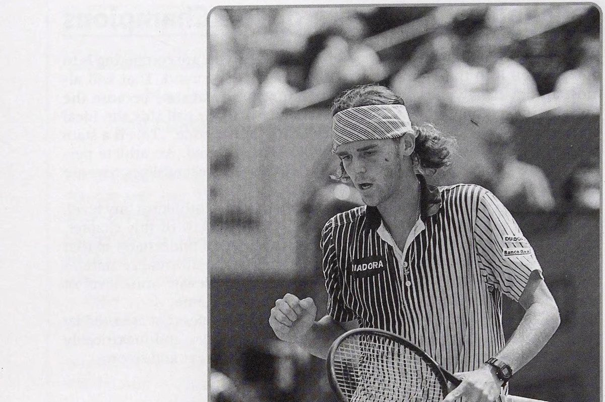
Bí quyết tâm lý của các nhà vô địch
Từ góc độ tâm lý học, mục tiêu của bạn khi thi đấu là đặt bản thân vào trạng thái tâm lý tối ưu. Điều đó gần như sẽ tự động đưa bạn vào trạng thái thể chất tối ưu vì cả hai đều liên kết chặt chẽ với nhau. Các nhà tâm lý học thể thao thường gọi đây là trạng thái hoạt động lý tưởng. Bạn có thể biết nó là "trong khu vực." Đây là trạng thái tập trung và tập trung cao độ, đồng thời được thư giãn. Một vận động viên thể hiện hết khả năng của mình trong trạng thái này. Tất cả chúng ta đều đã thấy những vận động viên xuất sắc trong khu vực. Đó là một điều đẹp để xem.
Việc rơi vào trạng thái này không thường xuyên xảy ra với bất kỳ vận động viên nào ở bất kỳ cấp độ nào.
Vì vậy, tôi không muốn coi đây là trọng tâm chính của chương này.
Thay vào đó, tôi sẽ thảo luận về các khái niệm chính mà bạn cần hiểu để bạn có thể cố gắng đạt được hoặc tiến gần hơn đến trạng thái hiệu suất lý tưởng của mình thường xuyên nhất có thể. Làm điều này sẽ liên tục nâng cao trình độ chơi của bạn và bạn sẽ cảm thấy thích thú hơn với trò chơi.
Các khái niệm sau đây là nguyên tắc tâm lý được các nhà vô địch sử dụng. Chúng được sắp xếp theo thứ tự ưu tiên tuần tự và liên kết chặt chẽ với nhau. Làm điều đầu tiên sẽ giúp bạn đạt được điều tiếp theo, v.v.
Bí mật tôi
® Chỉ tập trung vào những thứ mà bạn có thể kiểm soát và bỏ qua những thứ còn lại @
Đây là khái niệm đầu tiên và quan trọng nhất, và nó phải là nền tảng để xây dựng cách tiếp cận tâm lý của bạn trong cạnh tranh. Nếu bạn có thể nắm bắt và áp dụng nó, nó sẽ giúp bạn giải phóng tâm lý và thể chất để chơi thứ quần vợt tốt nhất mà bạn có thể.
Các vận động viên giỏi luôn nhắc đến khái niệm này. Đôi khi, họ nói ít từ hơn nhưng dường như chúng ta thường không nghe thấy. Monica Seles (người mà tôi cảm thấy là một trong những đối thủ vĩ đại nhất mà tôi từng thấy trong bất kỳ môn thể thao nào trước khi cô ấy bị một người hâm mộ cuồng nhiệt tấn công đáng tiếc) đã nói trước Giải Pháp Mở rộng 2000:
"Tôi thực sự sẽ cố gắng lo lắng về những thứ tôi có thể kiểm soát và không lo lắng về những thứ thực sự nằm ngoài tầm kiểm soát của tôi." Andre Agassi được USA Today dẫn lời trước một giải đấu rằng: "Nếu tôi đến đây với thể lực sẵn sàng và đói, thì tôi đang tạo cho mình cơ hội tốt nhất để giành chiến thắng ở đây." Và có lẽ John Wooden, huấn luyện viên bóng rổ giỏi ở UCLA, đã nói điều đó hay nhất: “Chúng ta càng quan tâm đến những thứ chúng ta không thể kiểm soát thì chúng ta sẽ càng ít làm những việc chúng ta có thể kiểm soát.”
Tại sao điều này lại quan trọng đến vậy? Nếu bạn không tập trung vào những gì bạn có thể kiểm soát, bạn sẽ không còn cho mình cơ hội tốt nhất để phát huy hết tiềm năng của mình. Nó sẽ tạo ra những vấn đề như sợ hãi, lo lắng, thất vọng, những biến động đáng kể trong động lực và sự trì trệ trong sự phát triển của bạn. Nó cũng sẽ ảnh hưởng tới khả năng phân tích trận đấu và điều chỉnh chiến thuật của bạn.
cách tiếp cận cạnh tranh xuất sắc—mạnh mẽ nhưng thoải mái. Không có gì lạ khi tôi thấy anh ấy cười trên
Ngược lại, khi bạn mải mê với những gì bạn có thể kiểm soát, bạn sẽ thấy mình thoải mái hơn và khả năng tập trung của bạn được cải thiện. Kết quả là bạn không chỉ đánh bóng tốt hơn mà khả năng phân tích trận đấu và điều chỉnh chiến thuật tốt cũng được nâng cao. Cuối cùng và quan trọng nhất, bạn sẽ thích thú với cuộc thi! Đừng hiểu lầm tôi. Bạn nên biết những thứ như đối thủ, tỷ số, môi trường và những thứ tương tự, nhưng chúng chỉ đơn giản là một phương tiện để thu thập thông tin để bạn biết mình có thể thực hiện những hành động nào. Khía cạnh khó khăn nhất của khái niệm này đối với người chơi là họ không thể kiểm soát việc thắng thua.
Câu nói “Tôi làm chủ vận mệnh của mình” không hoàn toàn đúng trên sân tennis hay trong cuộc sống. Dưới đây là một vài ví dụ có thể giúp minh họa điểm này.
Hãy tưởng tượng rằng bạn đang đóng vai Andre Agassi trong một cuộc thi hai phần ba điểm. Anh ta có thể đảm bảo giành được điểm không? Không. Anh ta có thể mắc một lỗi không đáng có hoặc trẹo mắt cá chân, hoặc bạn có thể đánh một sợi dây rơi xuống để giành chiến thắng. Ngay cả khi đối đầu với bạn, Andre cũng không thể kiểm soát được việc thắng thua.
Tuy nhiên, những gì anh ấy có thể kiểm soát là cách anh ấy chơi, tốc độ giữa các điểm, lựa chọn cú đánh của anh ấy, v.v. Nếu anh ta tập trung vào những thứ anh ta có thể kiểm soát (điều mà anh ta làm ở mức độ lớn), khả năng bạn đánh bại anh ta sẽ không cao!
Bất kể tình hình có thế nào đi chăng nữa. Bạn không kiểm soát được việc thắng thua. Bạn có thể tác động sâu sắc đến kết quả và đặt lợi thế theo hướng có lợi cho mình bằng cách tập trung vào những gì bạn có thể kiểm soát. Hãy tác động tích cực đến những gì bạn có thể và đừng lo lắng về những gì bạn không thể. Bạn sẽ ngạc nhiên về mức độ thành công của mình. Một khi bạn từ bỏ quan niệm sai lầm rằng bạn hoàn toàn có thể xác định được kết quả, bạn sẽ thấy rằng mình có nhiều khả năng đạt được kết quả mong muốn hơn.
Khi bạn bắt gặp tâm trí mình đang trôi dạt về phía bãi cát lún tinh thần của những thứ mà bạn không thể kiểm soát (có nghĩa là không có cơ hội cho "trạng thái dòng chảy"), hãy tự nhủ mình dừng lại và tập trung lại. Hãy đưa bản thân trở lại nền tảng vững chắc bằng cách tập trung vào những điều bạn có thể tác động. Khi bạn có thể làm được điều này, bạn đã tiến một bước quan trọng gần hơn đến việc đạt được trạng thái tối ưu về thể chất và tinh thần. Cơ hội để bạn có thể trôi chảy trong lối chơi và đạt được trạng thái hoạt động lý tưởng sẽ cao hơn nhiều. Những bí mật còn lại là tất cả những thứ mà bạn có nhiều quyền kiểm soát và gắn bó chặt chẽ với bí mật đầu tiên.
Điều bạn không thể kiểm soát
Thắng và thua. (Không quan trọng đó là điểm, trận đấu hay trận đấu. Bạn có thể ảnh hưởng đến kết quả, nhưng bạn không thể kiểm soát nó.)
Cách đối thủ của bạn chơi ở một điểm nhất định, trong một trò chơi (hoặc trận đấu)
Môi trường, chẳng hạn như gió, nắng, mưa, v.v. (Hãy nhớ rằng bạn có thể kiểm soát cách bạn đối phó với chúng và đó là một sự khác biệt lớn!)
Những sự cố không may xảy ra như đứt dây, đánh nhầm, nảy không tốt, v.v.
Thành tích của người khác trong một giải đấu hoặc bảng xếp hạng như thế nào
Người khác sẽ nghĩ gì về trò chơi hoặc kết quả của bạn
Bí mật 2
®@ Chiến thắng không phải là mục tiêu số một khi bạn thi đấu ®
Chiến thắng là vô cùng quan trọng, và tất nhiên, nó luôn là một trong những mục tiêu quan trọng nhất của bạn khi thi đấu. Nhưng khi chiến thắng trở thành mục tiêu số một của bạn trong khi thi đấu, nó sẽ khiến bạn kiệt sức về mặt tâm lý vì bạn sẽ tập trung sức lực vào điều gì đó mà bạn không thể kiểm soát. Điều này sẽ khiến bạn mất tập trung vào việc thực hiện trò chơi với khả năng tốt nhất của mình. Vào thời điểm đó, bạn không còn cho mình cơ hội tốt nhất để giành chiến thắng nữa và điều đó có nghĩa là bạn sẽ không giành chiến thắng thường xuyên nữa. Những nhà vô địch vĩ đại biết rõ khái niệm này, và trận đấu càng lớn thì họ càng cố gắng rèn luyện trí óc của mình. Tập trung vào những thứ họ có thể kiểm soát, họ biết rằng chiến thắng sẽ là sản phẩm phụ của việc thực hiện hết khả năng của mình.
Chiến thắng, mục tiêu số một của bạn, trên thực tế có nghĩa là phấn đấu ở mức tầm thường so với khả năng của bạn. Vấn đề không phải là bạn thắng hay thua. Billie Jean King đã nói: “Khi bạn ở lại trong quá trình là khi bạn thắng. Không phải khi bạn đi đến kết quả cuối cùng”. Câu hỏi đặt ra là bạn có làm mọi thứ trong khả năng của mình để tạo cho mình cơ hội tốt nhất để phát huy hết tiềm năng của mình và bạn có không ngừng cố gắng cải thiện không? Sau khi Tiger Woods giành chức vô địch Masters lần thứ ba, mọi người đều suy đoán xem anh sẽ giành được bao nhiêu giải đấu chuyên nghiệp. Những gì anh ấy nói minh họa cho quan điểm của tôi: "Điều tôi luôn nói với bản thân là tôi muốn trở thành một cầu thủ giỏi hơn vào cuối năm. Và nếu tôi có thể tiếp tục làm điều đó năm này qua năm khác trong phần còn lại của sự nghiệp, tôi sẽ có một sự nghiệp khá tốt." Đó là sự theo đuổi sự xuất sắc cá nhân! Chiến thắng là sản phẩm phụ tự nhiên của việc theo đuổi này.
Cam kết về sự xuất sắc của cá nhân không đảm bảo chiến thắng. Tuy nhiên, nó đảm bảo thành công. Kết quả cuối cùng là bạn sẽ giành được nhiều chiến thắng hơn những gì bạn có thể đạt được, và bạn thường sẽ vượt quá giới hạn tự đặt ra cho mình.
Ngôi sao đang lên của Mỹ Andy Roddick, khi chuẩn bị cho Giải Pháp mở rộng 2001, đã nói: "Tôi thực sự không có bất kỳ kỳ vọng nào [liên quan đến thắng hay thua]. Tôi muốn chơi tốt [nói cách khác, thực hiện trò chơi của anh ấy]. Nếu ai đó định đánh bại tôi, tôi muốn anh ấy phải chơi một trận đấu hay [chỉ tập trung vào những gì anh ấy có thể kiểm soát]."
Cuối năm đó, khi Roddick đang chuẩn bị cho 2001 US Open sau khi vô địch bốn giải đấu, anh ấy nói, "Tôi sẽ tham gia và cố gắng chơi tốt [tập trung vào những gì anh ấy có thể kiểm soát], vui vẻ một chút và xem điều gì sẽ xảy ra." Andy lọt vào tứ kết, nơi anh thua 6–4 trong set thứ năm trước nhà vô địch cuối cùng là Lleyton Hewitt.
Roddick tập trung vào những gì anh ấy có thể kiểm soát và tạo cho mình cơ hội tốt nhất để giành chiến thắng. Đây là cách tiếp cận tinh thần mà các chuyên gia hàng đầu thực hiện.
Đừng hiểu điều này có nghĩa là chiến thắng không quan trọng đối với họ. Hoàn toàn ngược lại, đó chính xác là lý do tại sao họ cố gắng không nghĩ đến chiến thắng khi thi đấu.
quan tâm đến những gì anh ấy có thể kiểm soát hơn là lo lắng về - kết quả của trận đấu.
Bí mật 3
® Nhấn mạnh mục tiêu hiệu suất để đạt được mục tiêu kết quả @
Đặt mục tiêu là điều cần thiết đối với bất kỳ ai mong muốn đạt được trình độ chơi cao hơn. Điều quan trọng không kém là bạn hiểu loại mục tiêu bạn đang đặt ra để chúng ảnh hưởng tích cực đến hiệu suất của bạn.
Mục tiêu hiệu suất là những mục tiêu mà bạn có nhiều quyền kiểm soát hơn. Mục tiêu kết quả dựa trên kết quả, như bạn đã thấy, không phải là thứ bạn có quyền kiểm soát trực tiếp. Lý tưởng nhất là nếu bạn đang thiết lập và đạt được các mục tiêu hiệu suất chính xác thì chúng sẽ giúp bạn đạt được các mục tiêu kết quả của mình. Nó không hoạt động theo cách khác. Nói cách khác, việc đạt được mục tiêu hiệu suất sẽ mang lại cho bạn cơ hội tốt nhất để phát huy hết tiềm năng của mình và giành chiến thắng. Chris Carmichael, Huấn luyện viên xuất sắc nhất năm 1999 của Ủy ban Olympic Hoa Kỳ và huấn luyện viên của vận động viên đua xe đạp Lance Armstrong, nói: “Đó là
điều quan trọng là phải đặt ra các mục tiêu ngoài việc thắng và thua [các mục tiêu về thành tích] bởi vì ngay cả những tay đua tài năng nhất cũng sẽ thua nhiều hơn là thắng."
Dưới đây là một số ví dụ về mục tiêu hiệu suất điển hình. Người chơi sẽ có các mục tiêu hiệu suất khác nhau, tùy thuộc vào tài năng, lối chơi của họ và những gì họ cần nỗ lực để phát huy hết tiềm năng của mình. Một lần nữa, mục tiêu hiệu suất cụ thể sẽ khác nhau đối với mọi người, nhưng chúng phải là những mục tiêu giúp bạn chơi thứ quần vợt tốt nhất của mình.
e Tôi sẽ ở trong trạng thái "bây giờ", tập trung vào một điểm tại một thời điểm.
e Tôi sẽ dành thời gian giữa các điểm.
e J sẽ tấn công quả giao bóng thứ hai của đối thủ.
e Tôi sẽ thực hiện các mẫu từ trong ra ngoài mà tôi đã làm trong thực tế.
e Tôi sẽ chỉ tham gia vào việc tự nói chuyện tích cực.
Mục tiêu kết quả cũng thực sự mang tính cá nhân. Chúng phụ thuộc vào những gì bạn muốn đạt được với môn quần vợt của mình. Dưới đây là một vài ví dụ về mục tiêu kết quả.
e Thắng trận này
e Đạt thứ hạng top 10 tại câu lạc bộ
e Thắng giải đấu này
- Đánh bại John Doe trong trận đấu giải đấu
Bí mật 4
@ Nuôi dưỡng động lực bên trong và không chú trọng đến động lực bên ngoài @
Tương tự như mục tiêu hiệu suất, bạn nên nuôi dưỡng động lực bên trong bản thân và không quan tâm đến những thứ nằm ngoài bản thân.
Có hai nguồn động lực cơ bản tồn tại: bên trong, đến từ bên trong con người và bên ngoài, đến từ bên ngoài con người. Về lâu dài, động lực nội tại là động lực mạnh mẽ hơn. Nếu bạn có động lực từ bên trong, điều đó có nghĩa là cá nhân bạn đang phấn đấu để thành thạo môn thể thao hoặc kỹ năng hiện có. Sự nhấn mạnh là bạn phải trở thành người giỏi nhất có thể. Điều đó có nghĩa là bạn không ngừng phấn đấu để cải thiện hiệu suất, kỹ năng và khả năng làm chủ trò chơi của mình.
Đây là những gì Andre Agassi nói về động lực: "Mục tiêu trở nên tốt hơn [động lực bên trong] phải là động lực quan trọng nhất bởi vì nếu chỉ đơn giản là thắng một giải đấu [động lực bên ngoài] và sau đó bạn thắng nó, bạn sẽ làm gì sau đó? Đối với tôi, đó là để xem liệu bây giờ tôi có thể chơi tốt hơn hôm qua hay không."
Những người chơi có động lực nội tại sẽ phát triển niềm đam mê và tình yêu thực sự đối với trò chơi. Một lần nữa, trọng tâm là những thứ bạn có thể kiểm soát. Những phần thưởng bên ngoài, chẳng hạn như danh hiệu, chiến thắng, thứ hạng và sự tán dương của công chúng, là những động lực mạnh mẽ, nhưng những cảm xúc mà chúng tạo ra có xu hướng phai nhạt nhanh chóng. Về lâu dài, chúng không phải là động lực thúc đẩy mạnh mẽ như động lực nội tại. Ngoài ra, động lực bên ngoài là những thứ bạn không thể kiểm soát được.
Bằng cách phấn đấu và hoàn thành các mục tiêu, bạn có thể kiểm soát những mục tiêu được nuôi dưỡng từ bên trong, bạn sẽ có được cảm giác hài lòng hơn.
Tôi tin rằng, nếu bạn trau dồi và nhấn mạnh động lực bên trong của mình cũng như không chú trọng đến các yếu tố bên ngoài, điều đó sẽ giúp tạo ra một công thức để bạn phát huy hết tiềm năng của mình. Về cơ bản, nó liên quan trực tiếp đến việc đưa tâm lý của bạn vào trạng thái hoạt động lý tưởng. Tập trung vào những gì bạn có thể kiểm soát và thử thách bản thân để xem bạn có thể chơi và thi đấu tốt đến mức nào. Những người thực sự phấn đấu để đạt được sự xuất sắc chủ yếu có động lực từ bên trong.
Bí mật 5
® Sống trong hiện tại @
Đây là một trong những chìa khóa của sự tập trung. Hãy học hỏi từ quá khứ và lên kế hoạch cho tương lai, nhưng trong lúc căng thẳng của cuộc chiến, nếu tâm lý của bạn ở bất cứ đâu ngoại trừ hiện tại thì bạn đang gặp rắc rối. Trong thuật ngữ quần vợt, điều này tương đương với việc chơi từng điểm một. Andre Agassi đã tóm tắt điều đó một cách ngắn gọn khi nói: "Tôi đã học được một cách khó khăn rằng việc mất tập trung vào một điểm sẽ cản trở công việc của bạn. Nếu bạn lơ là một điểm, điều gì sẽ ngăn cản bạn làm được điều đó ở hai điểm? Bạn không thể chạy hết giờ. Bạn phải hoàn thành."
Nếu bạn thấy mình đang đắm chìm trong cú đánh mình vừa đánh, set bạn vừa thua, hoặc một cú call tồi hoặc nếu bạn bắt đầu nghĩ về chiếc cúp mình sắp giành được, thì bạn đang không tạo cho mình cơ hội tốt nhất để giành được điểm bạn sắp chơi. Hãy nhớ rằng, khi vấn đề kết thúc, đó là lịch sử. Nó đã kết thúc, đã biến mất và bạn không thể làm gì được ngoài việc chuyển sang điểm tiếp theo. Điều đó có dễ thực hiện không? Không. Tôi chưa bao giờ nói nó sẽ dễ dàng, nhưng nếu bạn muốn chơi thứ quần vợt tốt nhất của mình thì đó là điều bắt buộc.
Đó là năm 1977, khi tôi đang thi đấu ở giải vô địch Wimbledon đầu tiên với một tay vợt tên là Freddy McNair. Đó là một trận chiến kéo dài và khó khăn ở vòng đầu tiên. Tôi đã bị hạ gấp đôi match point trong set thứ tư, và bây giờ tôi đang giao bóng với tỷ số 5-4 ở set thứ năm. Tôi đánh đầu tung lưới người chiến thắng để nâng tỷ số lên 40-0, nhân ba điểm trận đấu. Tôi quay sang bạn mình và nói nhỏ: "Tôi không thể tin được mình sẽ thắng trận đấu này". Đoán xem cái gì? Freddy đánh được một vài quả thắng, tôi mắc một vài sai lầm, và điều tiếp theo tôi biết là tôi đã thua giao bóng và sau đó là trận đấu, tôi với tỷ số 6–14, ở set thứ năm. Bài học khó khăn. Hãy sống trong hiện tại và đừng tập trung vào việc thắng hay thua khi bạn đang thi đấu.
Bí mật 6
® Tạo ra sự hiện diện tích cực, mạnh mẽ @
Dù trong hoàn cảnh nào, hãy cố gắng luôn thể hiện sự hiện diện mạnh mẽ, tích cực trên sân. Điều đó không có nghĩa là bạn phải khắc kỷ vì điều đó không phù hợp với tính cách của mỗi người. Bạn có thể tức giận nhưng vẫn thể hiện một hình ảnh mạnh mẽ. Đôi khi, bạn chỉ cần là một diễn viên giỏi
hoặc nữ diễn viên để ngụy trang cảm giác của bạn. Tuy nhiên, đừng bao giờ, đừng bao giờ để ai đó nghĩ rằng họ đang tiếp cận bạn về mặt tinh thần. Bạn có thể thua trận nhưng đừng mang lại cho đối thủ sự hài lòng hay tự tin khi nghĩ rằng họ đã khiến bạn suy sụp về mặt cảm xúc. Cho dù bạn đang thắng, thua hay chơi với một người đơn giản là giỏi hơn bạn, hãy hành động tự tin và có kiểm soát. Điều này sẽ để lại ấn tượng lâu dài cho đối thủ của bạn, và nhiều khi, khi bạn ít ngờ tới nhất, anh ta có thể là người đầu tiên “suy sụp” về mặt tinh thần. Tuy nhiên, quan trọng nhất, bằng cách duy trì kiểu hiện diện này, bạn đang thực hiện một bước quan trọng trong việc kiểm soát cảm xúc của mình.
Đó là năm 1987, trong giải vô địch trẻ em Pháp. Tôi đi du lịch cùng bốn cậu học sinh lớp dưới, Jim Courier, Jonathan Stark, David Wheaton và Chris Garner. Jim Courier, lúc đó 17 tuổi (và là tay vợt nam số một thế giới trong tương lai và là nhà vô địch đơn Pháp mở rộng hai lần), và Jonathan Stark (tay vợt nam số một thế giới trong tương lai ở nội dung đôi và vô địch đôi Pháp mở rộng) đang thi đấu ở vòng đầu tiên của nội dung đôi trẻ em Pháp. Trước đó, cả hai chàng trai đều tỏ ra khó chịu ở hiệp đầu tiên của nội dung đánh đơn và do đó, họ tỏ ra chán nản khi ra sân thi đấu nội dung đôi. Họ đang đấu với một đội đến từ Bờ Biển Ngà, đội mà họ vừa thua set đầu tiên và lẽ ra phải đánh bại một cách thoải mái.
cậu bé thật xấu xí! Ngôn ngữ cơ thể của họ thật tệ, họ nói chuyện tiêu cực sau hầu hết mọi quan điểm và trông họ giống như kẻ thua cuộc. Điều thậm chí còn khó chịu hơn nữa là trước trận đấu, chúng tôi vừa nói chuyện về việc quên đi trận thua đơn, giữ thái độ tích cực và không để đối thủ biết rằng họ đã thất vọng. Sau set đầu tiên, tôi đã quyết định rằng mình sẽ cố gắng đưa ra một nhận xét tích cực để làm họ vui lên khi họ đến bên sân nơi tôi đang ngồi. Nhưng trước khi điều đó xảy ra, họ đã thua giao bóng và phải nghỉ một set. Jim đưa ra một nhận xét tiêu cực khác và đánh rơi cây vợt của mình xuống đất. Tôi đã thấy đủ rồi. Jonathan liếc nhìn tôi khi họ bắt đầu đổi bên. Anh ấy biết tôi đang giận dữ. Jim cúi đầu xuống và không nhìn. Tôi nói với Jonathan khi anh ấy đi ngang qua, "" Thêm một lời nhận xét nữa từ một trong hai bạn, và bạn đang gặp rắc rối lớn!" và tôi ra hiệu cho anh ấy thu hút sự chú ý của Jim. Cuối cùng, Jim miễn cưỡng nhìn sang. "Bạn có nghe thấy tôi nói không? Thêm một lần nữa là rắc rối to rồi!” Tôi thực sự không định làm gì cả.
Tôi chỉ muốn nêu quan điểm. Cả hai đã ổn định lại, lấy lại năng lượng, bắt đầu động viên nhau và giành chiến thắng trong ba set sát nút. Nhưng đó không phải là kết thúc của câu chuyện. Họ đã giữ thái độ tích cực đó suốt cả tuần và tiếp tục giành chiến thắng trong giải đấu! Họ đã đánh bại hai tay vợt vĩ đại người Argentina (cả hai đều lọt vào top 100 thế giới ở giải nam và vẫn trở lại thi đấu đàn em) trong trận chung kết. Đây là một trong những câu chuyện thành công đáng hài lòng nhất trong sự nghiệp huấn luyện non trẻ của tôi vì tôi cảm thấy các chàng trai thực sự đã học được một số bài học quan trọng trong quá trình sống trong hiện tại; sử dụng cách tự nói chuyện tích cực; và duy trì sự hiện diện mạnh mẽ, tích cực trên sân đấu. Điều tuyệt vời là họ đã được khen thưởng cho những nỗ lực của mình. Bài học rút ra!
Jonathan Stark, Nick Saviano, và Jim Courier sau khi các chàng trai vô địch giải Juniors Pháp năm 1987.
Bí mật 7
® Tham gia vào việc tự nói chuyện tích cực @
Điều quan trọng là phải trò chuyện với chính mình theo hướng tích cực khi bạn ở trên sân. Đừng mắng mỏ bản thân hoặc nói tiêu cực về trò chơi của bạn. Bạn không thể chiến đấu với hai đối thủ, người ở bên kia lưới và chính bạn. Một đối thủ là đủ. Tham gia vào việc tự nói chuyện tiêu cực sẽ khiến bạn thất bại nhanh hơn so với đối thủ vượt trội. Nếu bạn bắn trượt một cú đánh dễ dàng, điều tồi tệ nhất bạn có thể làm là củng cố sai lầm đó bằng cách nói, "Ôi, tôi thật là ngu ngốc. Lẽ ra tôi không thể bỏ lỡ cú đánh đó!"
Thay vào đó, hãy nói điều gì đó như, "Lần sau bạn sẽ hiểu được." Hoặc không nói gì cả và nhanh chóng hình dung bạn đã thực hiện cú đánh đó để giành chiến thắng.
Bạn thậm chí có thể thực hiện một cú vung tập để ghi nhớ hình ảnh tích cực vào não mình. Tương tự như vậy, hãy cố gắng luôn lạc quan và suy nghĩ về những gì bạn muốn xảy ra thay vì những gì bạn không muốn xảy ra. Ví dụ: giả sử bạn đang giao bóng cho trận đấu. Trong quá trình chuyển đổi, hãy nghĩ đến việc muốn giữ cú giao bóng và những gì bạn cần làm để thành công, thay vì tự nghĩ: "Bây giờ tôi không thể thua cú giao bóng" hoặc "Chỉ cần đừng bỏ lỡ cú giao bóng đầu tiên của bạn". Vấn đề là bạn càng nói nhiều
Bản thân việc gì bạn không muốn xảy ra thì càng có nhiều khả năng xảy ra.
Vì vậy, hãy luôn suy nghĩ và dự đoán một cách tích cực, lạc quan và tập trung vào những lời khẳng định tích cực.
Bí mật 8
® Thở @
Hãy hình dung thế này: đó là match point trong trận chung kết US Open, và một tay vợt chuẩn bị bước lên vạch giao bóng cho điểm quan trọng nhất trong cuộc đời cô ấy. Một điều mà hầu hết người chơi sẽ làm là gì? Hít một hơi thật sâu và thở ra.
Tại sao? Bởi vì họ đang sử dụng hơi thở của mình như một cách giúp kiểm soát bản thân về mặt thể chất và tinh thần. Kiểm soát hơi thở của bạn không phải là cách tốt nhất để đối phó với sự lo lắng cả về tinh thần và thể chất.
ủng hộ việc bạn chạy ra ngoài và tham gia một lớp yoga (mặc dù đó không phải là một ý tưởng tồi). Đơn giản chỉ cần nhớ rằng, bằng cách tạm dừng và hít một hơi thật sâu giữa các điểm, bạn thực sự có thể giúp kiểm soát bản thân. Vì vậy, khi bạn cảm thấy căng thẳng và căng thẳng, hãy dừng lại và hít thở sâu vài lần, bạn có thể ngạc nhiên về tác dụng của nó.
Bí mật 9
® Nếu bạn không hình dung được thì rất có thể nó sẽ không trở thành hiện thực ®
Khả năng hình dung bản thân đang thi đấu là điều cần thiết để đạt được mục tiêu của mình. Khi các huấn luyện viên Olympic hàng đầu và các vận động viên ưu tú từ nhiều môn thể thao khác nhau được khảo sát về các yếu tố quan trọng nhất trong chương trình rèn luyện tâm lý của họ, họ coi hình dung, hay hình ảnh, là tầm quan trọng số một.
Hãy thử hình dung bản thân bạn đang biểu diễn trên sân theo đúng cách bạn muốn. Nếu bạn gặp khó khăn với một cú đánh cụ thể, hãy học cách hình dung mình thực hiện cú đánh đó một cách đặc biệt tốt. Nếu bạn gặp khó khăn khi giao bóng trong trận đấu, hãy hình dung mình đang giao bóng một cách tự tin. Để chuẩn bị cho một trận đấu, nhiều chuyên gia thực sự sẽ tự mình rời đi ngay trước khi thi đấu và hình dung ra các khía cạnh nhất định của trận đấu hoặc các cú đánh cụ thể. Những người khác thực hành việc tưởng tượng của họ vào ban đêm.
Nghe có vẻ ngô nghê nhưng đối với hầu hết người chơi, nó thực sự hiệu quả. Nếu bạn sắp thi đấu ở giải vô địch cấp câu lạc bộ và đơn giản là bạn không tin mình có thể giành chiến thắng, hãy dành chút thời gian mỗi ngày và hình dung mình đang chơi trận chung kết. Hãy tưởng tượng bạn đang hoàn toàn kiểm soát được, thực hiện những cú đánh tuyệt vời và giành được điểm cuối cùng. Hình dung của bạn càng sống động thì càng tốt. Hãy thử nó và bạn sẽ ngạc nhiên vì nó là một công cụ hiệu quả.
Bí mật 10
® Duy trì thói quen của bạn @
Điều quan trọng là phải thiết lập các thói quen chuẩn bị hợp lý và duy trì chúng trong suốt quá trình thi đấu. Tôi không nói về những điều mê tín, như việc không bước vào ranh giới. Theo tôi, sự mê tín là phản tác dụng. Chúng là niềm tin vào những nguồn bên ngoài không liên quan gì đến khả năng của chính bạn, điều này sẽ không giúp ích gì cho bạn trong một trận đấu quần vợt. Tôi đang đề cập đến những thói quen mà các cầu thủ đẳng cấp thế giới sử dụng để giúp họ chuẩn bị về mặt thể chất và tinh thần cho mỗi điểm.
Tất cả người chơi đều có quy trình tính điểm trước cho dù họ có nhận ra hay không. Chúng có thể là những việc như hít một hơi thật sâu và thở ra trước khi bạn giao bóng hoặc nhìn vào dây của bạn ngay trước khi bạn vào vị trí để trả giao bóng. Các thói quen giúp bạn thư giãn, tập trung và duy trì kỷ luật tinh thần cần thiết khi thi đấu.
Trước tiên, bạn nên kiểm tra thói quen của mình để xem liệu chúng có chuẩn bị tích cực cho bạn chơi điểm tiếp theo hay không. Bạn có thể muốn có một người bạn hoặc tốt hơn nữa là một chuyên gia giảng dạy của Hiệp hội Quần vợt Chuyên nghiệp Hoa Kỳ hoặc Cơ quan Đăng ký Quần vợt Chuyên nghiệp được chứng nhận sẽ đánh giá các thói quen của bạn để đảm bảo rằng chúng không quá mức hoặc khiến bạn tiêu hao năng lượng. Thứ hai, hãy nhớ duy trì những thói quen này trong suốt trận đấu. Khi mọi thứ đang diễn ra tốt đẹp, điều này thật dễ dàng để thực hiện. Trên thực tế, bạn có thể sẽ thực hiện chúng mà không hề có bất kỳ suy nghĩ tỉnh táo nào.
Tuy nhiên, khi bạn đang gặp khó khăn, lo lắng, phấn khích, khó chịu hoặc đơn giản là chơi kém chính là lúc họ bắt đầu trở nên tồi tệ.
Khi bạn cảm thấy mình không ổn về mặt cảm xúc, hãy nhận ra rằng đây là lúc người chơi có xu hướng đi chệch khỏi thói quen định điểm của họ. Đừng để điều đó xảy ra. Khi bạn cảm thấy khó chịu là lúc bạn cần những thói quen của mình nhất. Hãy sử dụng chúng để giúp bạn duy trì tính kỷ luật và khả năng tự chủ trong quá trình thi đấu. Cái hay của khái niệm này là bạn có toàn quyền kiểm soát các thói quen chuẩn bị trước của mình.
Bạn nên lưu ý rằng có những trường hợp bạn có thể cần phải điều chỉnh một số thói quen của mình. Ví dụ: nếu trận đấu diễn ra không suôn sẻ với bạn, bạn có thể muốn dành nhiều thời gian hơn giữa các điểm để làm chậm trận đấu.
Tuy nhiên, những trường hợp như thế là ngoại lệ chứ không phải là quy luật.
® Đừng coi đó là vấn đề cá nhân @
Đừng biến trận đấu quần vợt của bạn thành cuộc chiến cá nhân giữa bạn và đối thủ, ngay cả khi bạn ghét anh ta đến tận xương tủy. Sẽ phản tác dụng nếu tập trung vào người bạn đang chơi, trái ngược với việc anh ta chơi như thế nào, anh ta là ai
đang làm gì và xu hướng của anh ấy là gì. Nếu bạn đang nghĩ về đối thủ, bạn sẽ không còn tập trung vào việc thực hiện của chính mình nữa.
Jennifer Capriati, sau khi đánh bại Serena Williams trong trận tứ kết đầy tranh cãi tại Wimbledon 2001, nói: "Tôi không lo lắng về những gì cô ấy [Serena Williams] đang làm. Tôi chỉ cố gắng tập trung vào trận đấu của riêng mình."
Có lẽ Jim Courier đã nói điều đó hay nhất, ngay trước khi vô địch Pháp mở rộng năm 1992:
"Đối thủ đừng làm tôi lo lắng. Nó giống như đóng vai một người vô danh ở bên kia lưới. Tôi tập trung vào mình và cách mình chơi."
Bí mật 12
® Lo lắng cũng không sao; đừng sợ ®
Tóm lại, tôi đang nói về quan điểm. Bạn luôn mong muốn được cạnh tranh như một cơ hội để thử thách bản thân để trở thành người giỏi nhất. Việc lo lắng trước và trong trận đấu là điều bình thường và bình thường. Đó không phải là một vấn đề lớn. Bạn có thể học nhiều kỹ thuật để kiểm soát phản ứng của mình, giống như nhiều điều tôi đã thảo luận—tự nói chuyện tích cực, dành thời gian giữa các điểm và hít thở sâu để thư giãn. Tuy nhiên, bạn không bao giờ nên sợ cạnh tranh. Nói một cách đơn giản, sợ hãi có nghĩa là bạn có những điều không đúng với quan điểm của mình.
Mọi loại vấn đề đều phát sinh từ nỗi sợ hãi. Nó ảnh hưởng đến toàn bộ hệ thống của bạn, sinh lý cũng như tâm lý, từ thị giác đến hơi thở, phối hợp và tập trung. Nỗi sợ hãi đưa bạn ra khỏi trạng thái "bây giờ". Khi bạn tràn ngập nỗi sợ hãi, bạn sẽ không thể chơi đùa hoặc suy nghĩ ở bất cứ đâu gần khả năng của mình. Và quan trọng nhất, cạnh tranh không còn thú vị nữa.
Đây là trích dẫn của hai nhà vô địch vĩ đại. Boris Becker, sau khi thua ở vòng đầu tiên Wimbledon năm 1987 với tư cách là đương kim vô địch, đã nói: "Không ai chết. Không có chiến tranh. Tôi chỉ thua một trận quần vợt". Jennifer Capriati, sau trận thua bán kết tại Wimbledon năm 2001 sau khi vô địch hai giải Grand Slam đầu tiên (Úc và Pháp) năm đó đã nói: "Tôi chỉ nhìn nhận lại rằng việc thua một trận quần vợt thực sự không phải là vấn đề lớn. Có rất nhiều điều tồi tệ hơn có thể xảy ra."
Nếu bạn xem xét các tình huống cạnh tranh của mình một cách hợp lý, bạn sẽ hoạt động tốt hơn. Hãy nhớ rằng điều tồi tệ nhất có thể xảy ra là bạn thua trận.
Bí mật 13
® Luyện tập dưới áp lực ®@
Để đối phó tốt nhất với áp lực cạnh tranh, hãy thường xuyên mô phỏng những kinh nghiệm đó vào thực tế. Huấn luyện viên huyền thoại của triều đại UCLA, John Wooden, tán thành triết lý này: “Áp lực mà tôi tạo ra trong quá trình luyện tập có thể đã vượt quá áp lực mà đối thủ tạo ra. Tôi tin rằng khi
một cá nhân liên tục làm việc dưới áp lực, họ sẽ tự động phản ứng khi đối mặt với nó trong quá trình cạnh tranh."
Cố gắng lặp lại các tình huống khác nhau mà bạn gặp phải trong trận đấu.
Nếu bạn gặp khó khăn khi giao bóng trong một trận đấu, hãy chơi một số hiệp với một người bạn, trong đó bạn bắt đầu với 5–4 lần giao bóng và sau đó chơi hết hiệp đó. Nếu bạn không chơi tốt break point, hãy chơi một hiệp trong đó mỗi trận đấu bắt đầu tại điểm break và chơi hết hiệp đó. Thực hiện các bài tập nơi bạn ghi điểm. Chơi một bộ thực hành và yêu cầu người thua mua bữa trưa. Nếu trong những tình huống "áp lực" này mà bạn cảm thấy lo lắng hoặc thực hiện không tốt, hãy áp dụng các nguyên tắc tâm lý trong chương này, bắt đầu từ bí quyết 1. Bằng cách tạo thêm áp lực cho bản thân khi luyện tập, bạn sẽ nhanh chóng học được cách cải thiện khả năng thực hiện dưới áp lực trong các trận đấu.
Hãy nhớ rằng, thách thức lớn nhất (và vũ khí tốt nhất mà bạn có) khi cạnh tranh đến từ chính tâm trí của bạn. Như bạn đã đọc, bí mật tâm lý của các nhà vô địch không hề phức tạp. Trên thực tế, chúng rất đơn giản và dễ nắm bắt. Phần khó khăn nằm ở việc áp dụng những nguyên tắc này hàng ngày. Đừng mong đợi một sự biến thái qua đêm. Hãy bắt đầu với khái niệm đầu tiên và quan trọng nhất là chỉ tập trung vào những thứ bạn có thể kiểm soát. Sau đó cố gắng thực hiện ít nhất một số nguyên tắc được thảo luận trong chương này. Nếu làm như vậy, bạn sẽ thấy sự cải thiện đáng kể theo thời gian và sự thích thú với trò chơi của bạn sẽ tăng lên theo cấp số nhân.
Chỉ tập trung vào những thứ mà bạn có thể kiểm soát và bỏ qua những thứ còn lại.
đang cạnh tranh.
Nhấn mạnh các mục tiêu hiệu suất để đạt được mục tiêu kết quả.
động lực bên ngoài.
Hãy sống trong hiện tại.
Thể hiện sự hiện diện tích cực, mạnh mẽ.
Tham gia vào việc tự nói chuyện tích cực.
Thở đi.
Nếu không hình dung được thì rất có thể nó sẽ không trở thành hiện thực.
Duy trì thói quen của bạn.
Đừng biến nó thành chuyện cá nhân.
Lo lắng cũng được; đừng sợ.
Luyện tập dưới áp lực.
Chương 8: Bảo đảm thành công
Thắng và thua không phải lúc nào cũng quyết định thành công. Thông qua sự chuẩn bị, lập kế hoạch dài hạn và đánh giá, bạn có thể tiến bộ sau mỗi trận đấu.
Sẽ thật tuyệt vời nếu bạn cảm thấy mình thành công trong mọi trận đấu mình tham gia phải không? Vâng, điều đó là có thể, và đó là điều bạn nên cố gắng hoàn thành. Tôi đã nói chiến thắng mọi trận đấu phải không? KHÔNG! Tôi nói cảm giác như bạn đã thành công chứ không nhất thiết phải thắng. Vì vậy, tôi có ý nghĩa gì khi nói thành công? Ý tôi là hãy cho bản thân cơ hội tốt nhất để giành chiến thắng và phát huy hết tiềm năng của mình. Nếu bạn làm được điều này thì bạn thực sự đã thành công.
tay vợt nam được xếp hạng thế giới và ngôi sao Davis Cup
Khái niệm thành công của Nick là đúng đắn. Nhiều cầu thủ quá chú tâm vào kết quả trong khi lẽ ra họ nên tập trung vào cách họ đang phát triển với tư cách là một cầu thủ. Để thành công, bạn phải chuẩn bị tốt nhất có thể, nỗ lực hết mình cho trận đấu và đánh giá trận đấu một cách trung thực sau khi nó kết thúc. Điều đó loại bỏ hoàn toàn phương trình thắng và thua—để bạn thực sự có thể "đảm bảo" thành công. Một trận thua sát nút có thể cung cấp cho bạn thông tin cực kỳ quý giá về trò chơi của bạn.
Từ đó, bạn có thể thực hiện các cải tiến để trở thành một người chơi giỏi hơn nhiều về lâu dài.
Tất cả đều bắt đầu từ sự chuẩn bị. Mặc dù tôi đã đạt được một số kết quả tuyệt vời trong những năm qua nhưng tôi không phải là cầu thủ tài năng nhất.
Để cạnh tranh với người giỏi nhất, tôi thực sự phải chuẩn bị thi đấu. Chuẩn bị không chỉ có nghĩa là sẵn sàng cho từng trận đấu. Bạn phải cân nhắc việc chuẩn bị trong suốt mùa giải. Trong thời gian ngoài mùa giải, tôi thường tập luyện và thi đấu chăm chỉ như thời gian còn lại của năm, làm việc với huấn luyện viên về những vấn đề chính trong trận đấu của tôi và bất kỳ thay đổi lớn nào về kỹ thuật. Bằng cách đó, tôi có thể bắt đầu mùa giải tiếp theo một cách tự tin. Tôi bắt đầu thực hiện trò chơi của mình cho các giải Grand Slam ngay từ tháng 2, tháng 3 và tháng 4 nên khi các giải đấu đến, tôi sẵn sàng cống hiến hết mình cho họ.
Trong thời gian giữa mùa giải, tôi sẽ xem xét việc chuẩn bị trong mỗi tuần và tập trung vào công việc luyện tập và kỹ thuật trước tiên. Sau đó, khi tuần trôi qua, tôi sẽ chơi nhiều tình huống tính điểm hơn và luyện tập các trận đấu. Khi trận đấu diễn ra, tôi muốn toàn bộ sự tập trung của mình tập trung vào chiến lược cho trận đấu chứ không phải kỹ thuật hay điều hòa. Tất nhiên, việc lập kế hoạch cho tuần của mình với tư cách là một người chuyên nghiệp sẽ dễ dàng hơn đối với tôi; nhiều người chơi phải sắp xếp các cam kết cho công việc, trường học hoặc gia đình. Nếu bạn bị ép về thời gian, hãy chỉ tập trung vào một hoặc hai việc bạn cần làm cho trận đấu tiếp theo và bám sát chúng. Sau đó lấy đánh giá khách quan từ nguồn bên ngoài để xem hoặc xem lại trận đấu.
Trước trận đấu tiếp theo, hãy lùi lại một bước và suy nghĩ về những gì bạn có thể đạt được. Nếu bạn làm theo các bước mà Nick vạch ra trong chương này, bạn sẽ yên tâm bước vào trận đấu vì biết rằng mình đã chuẩn bị tốt nhất có thể. Sau đó bạn có thể thư giãn và tận hưởng cuộc thi! Hãy nhớ rằng, chỉ có một người thắng một giải đấu. Nếu bạn cải thiện những lĩnh vực bạn đã xác định trước thì trận đấu của bạn đã thành công ngoài mong đợi.
Thành công thường được đánh đồng với chiến thắng và thất bại được đánh đồng với thất bại. Mặc dù chiến thắng là một trong những thước đo quan trọng của sự thành công nhưng nó không phải là thước đo quan trọng nhất. Hãy nhớ rằng việc theo đuổi chiến thắng đơn giản thực chất là theo đuổi sự tầm thường. Phấn đấu phát huy hết tiềm năng của mình và tạo cho mình cơ hội tốt nhất để giành chiến thắng chính là theo đuổi sự xuất sắc. Cam kết về sự xuất sắc cá nhân trong quần vợt của bạn là điều sẽ giúp bạn đạt được một số thành công từ bất kỳ trận đấu nào, dù thắng hay thua. Đừng hiểu lầm tôi. Tôi hiểu rằng không phải ai cũng có thời gian vô tận để cống hiến cho môn quần vợt của mình. Nhưng những khái niệm tương tự này có thể được áp dụng ngay cả khi bạn có rất ít thời gian dành cho môn quần vợt của mình. Điều tôi khuyến khích bạn làm là theo đuổi sự xuất sắc trong bối cảnh khả năng cam kết của bạn với cuộc chơi. Vì vậy, cho dù bạn là một chuyên gia đầy tham vọng hay một chiến binh cuối tuần, bằng cách áp dụng những khái niệm này, bạn có thể đạt được thành công và phấn đấu để đạt được sự xuất sắc.
Trong chương này, tôi sẽ thảo luận về các yếu tố chính giúp biến cam kết này thành hiện thực. Chu kỳ cạnh tranh có bốn thành phần để thành công: chuẩn bị, cạnh tranh, đánh giá và áp dụng. Đầu tiên, hãy chuẩn bị cho trận đấu; sau đó cạnh tranh; sau đó đánh giá những gì bạn cần cải thiện hoặc cải thiện, tiếp theo là áp dụng bất kỳ điều chỉnh nào bạn cần thực hiện; và cuối cùng bạn quay lại để chuẩn bị cho trận đấu tiếp theo của mình. Quá trình này có thể được thực hiện ngay cả khi bạn chơi các trận đấu hàng ngày.
Gần đây, tôi đang huấn luyện tại trại huấn luyện chuyên nghiệp giải quần vợt thành tích cao của Hoa Kỳ. Nhiều tay vợt chuyên nghiệp trẻ hàng đầu của Mỹ đã có mặt ở đó, cùng với hai cựu binh là Michael Chang (cựu vô địch Pháp mở rộng và số hai thế giới) và Todd Martin (cựu top 5 thế giới, tuyển Mỹ).
Vào chung kết mở rộng và là ngôi sao của Davis Cup. Michael và Todd là hai trong số những cầu thủ sáng giá nhất, ăn nói lưu loát nhất và "thành công" trong giải đấu suốt 12 đến 15 năm qua. Tôi nói rằng họ thành công không chỉ vì kết quả trên sân mà còn vì họ thể hiện rõ ý nghĩa của việc cam kết đạt đến sự xuất sắc. Năm này qua năm khác, họ áp dụng một cách trực quan các nguyên tắc để hoàn thành thành công chu trình thi đấu. Không có cầu thủ nào có thể chuẩn bị tốt hơn, thi đấu chăm chỉ hơn, phân tích màn trình diễn của mình một cách chăm chỉ hơn và sau đó siêng năng làm những gì họ cho là cần thiết hơn hai người này. Nhận thấy rằng tôi có hai ví dụ tuyệt vời về điều mà tôi đang cố gắng truyền đạt tới khán giả, tôi thường xuyên lôi kéo họ vào cuộc thảo luận để rút ra kinh nghiệm sâu rộng của họ. Thật tuyệt vời vì cả hai đều liên tục nói về cách tiếp cận thi đấu của họ— tầm quan trọng của việc chuẩn bị, cách thi đấu, phân tích màn trình diễn và không ngừng cố gắng cải thiện với tư cách là một tuyển thủ. Về bản chất, họ giải thích ý nghĩa của thành công.
Họ đã củng cố một cách mạnh mẽ cho các chuyên gia trẻ những khái niệm cơ bản mà tôi đang cố gắng truyền đạt đến mức nó thực sự giúp cho bài thuyết trình (đặc biệt là sau một ngày dài luyện tập) thành công. Nó cũng khẳng định lại trong đầu tôi rằng những khái niệm tôi nói đến trong chương này thực sự là phương tiện đảm bảo thành công trong mọi trận đấu.
Todd Martin và Michael Chang hiểu sự siêng năng và kiên trì cần có để trở thành người chơi thành công.
Hầu hết các trận đấu đều phân thắng bại rõ ràng trước khi bạn bước ra sân. Sự chuẩn bị của bạn cho một trận đấu hoặc giải đấu thay đổi đáng kể tùy thuộc vào hoàn cảnh cá nhân của bạn. Những người chơi quần vợt chuyên nghiệp thiết lập cái gọi là chương trình định kỳ có thể kéo dài đến một năm. Mục tiêu của các chương trình này là đạt được thành tích cao nhất cho một số sự kiện quan trọng trong năm, mà đối với các tay vợt hàng đầu thường có nghĩa là bốn giải đấu lớn của Grand Slam (Úc mở rộng, Pháp mở rộng, Wimbledon và Mỹ-Mở rộng):.
Lập trình định kỳ có nghĩa là tổ chức các hoạt động tập luyện của một vận động viên để giảm thiểu nguy cơ tập luyện quá sức và tối ưu hóa cơ hội đạt được thành tích cao nhất. Các chương trình định kỳ bao gồm mọi thứ, từ chương trình rèn luyện thể chất đến đột quỵ kỹ thuật.
phát triển. Tôi nhớ vào mùa đông năm 1992, tôi nhìn thấy Jim Courier chạy dọc phố tại Khu nghỉ dưỡng Saddlebrook ở Florida, nơi anh đang tập luyện với huấn luyện viên thể chất Pat Etcheberry. Tôi kéo xe cạnh Jim và hỏi anh ấy đang tập luyện kiểu gì. Anh ấy nói, "Tôi đang chạy một quãng đường dài để thiết lập cơ sở hiếu khí của mình, điều này rất quan trọng đối với tôi khi tôi vượt qua người Pháp." Giải Pháp mở rộng còn 5 tháng nữa mới diễn ra và Courier đã bắt đầu chuẩn bị.
Vào tháng 3 năm 2000, 30 phút sau khi thua trận chung kết Ericcson (nay là NASDAQ 100) trước Pete Sampras, Gustavo Kuerten đã ở trong phòng tập tạ với huấn luyện viên của mình, Larri Passos. Passos nói rằng Gustavo đang tập luyện chăm chỉ về thể lực và các khía cạnh khác trong trận đấu của anh ấy để chuẩn bị cho giải Pháp, vẫn còn hai tháng nữa. Cả Courier và Kuerten đều đang trong chu kỳ đào tạo kéo dài sáu tháng để chuẩn bị cho các sự kiện lớn nhất của họ.
đó là cam kết!
Các chương trình định kỳ mà các chuyên gia sử dụng thường bao gồm bốn giai đoạn:
1. Giai đoạn I—giai đoạn chuẩn bị. Trong giai đoạn này, người chơi luyện tập quần vợt của mình nhưng sẽ không có bất kỳ giải đấu nào sắp diễn ra trong một thời gian. Thông thường, họ nghiên cứu kỹ thuật hoặc thêm những điều mới vào trò chơi của mình. Họ luyện tập nhiều hơn và chơi ít hiệp tập hơn. Họ cũng làm việc cực kỳ chăm chỉ về mặt thể chất để tạo dựng một nền tảng thể lực tốt.
2. Giai đoạn II—giai đoạn tiền cạnh tranh. Trong giai đoạn này, người chơi đang tiến gần hơn đến việc cạnh tranh. Các giải đấu của họ thường diễn ra trong vòng một hoặc hai tuần. Mục đích của giai đoạn này là mài giũa và hoàn thiện các kỹ năng chơi quần vợt để chuẩn bị cho trận đấu. Người chơi chơi nhiều tình huống điểm và tập luyện khi họ hoàn thiện trò chơi của mình và xây dựng sự tự tin cho sự kiện sắp tới.
3. Giai đoạn lI—giai đoạn cạnh tranh. Các cầu thủ hiện đang thi đấu trong các giải đấu. Đối với những người chuyên nghiệp, giai đoạn này có thể kéo dài hàng tháng. Trong giai đoạn này, họ sử dụng một chương trình đào tạo rất linh hoạt để điều chỉnh cách họ thi đấu. Ví dụ, người chơi sẽ có những chương trình tập luyện hoàn toàn khác nếu họ tiến đến được trận chung kết của các giải đấu, thay vì thua ở những vòng đầu tiên. Mục tiêu chính của giai đoạn này là rèn luyện kỹ năng chơi quần vợt, duy trì thể trạng và ngăn ngừa chấn thương để họ chuẩn bị cho trận đấu tiếp theo.
4, Giai đoạn IV—giai đoạn nghỉ ngơi. Sau một thời gian dài tập luyện vất vả, các cầu thủ cần được nghỉ ngơi và hồi phục cả về tinh thần lẫn thể chất. Điều này thường xảy ra trong thời gian ngoài mùa giải, khi người chơi đặt vợt xuống và ngừng thi đấu trong một thời gian ngắn. Nhưng nghỉ ngơi đối với vận động viên chuyên nghiệp có nghĩa là nghỉ ngơi tích cực. Họ thường sẽ tham gia một số môn thể thao hoặc tập luyện khác ngoài thói quen chơi quần vợt thông thường. Lý do cho giai đoạn này là gấp đôi. Đầu tiên, nó mang lại sự nghỉ ngơi về thể chất sau trò chơi để phục hồi sau sự mệt mỏi về thể chất và để các cơ bị thương hoặc căng thẳng lành lại. Thứ hai, nó cho phép các vận động viên nạp lại năng lượng cảm xúc để duy trì sự nhiệt tình của họ đối với trò chơi. Điều này cực kỳ quan trọng để giảm nguy cơ kiệt sức sau khi làm việc và thi đấu vất vả.
Có thể bạn đang nói, "Tôi không phải là người chuyên nghiệp và tôi không có thời gian hay cam kết như vậy." Chà, điều đó có thể đúng, nhưng vấn đề là các nguyên tắc huấn luyện cơ bản giống nhau đều áp dụng cho tất cả người chơi. Bạn có thể có những "chương trình định kỳ nhỏ" kéo dài khoảng một tuần. Hầu hết người chơi có ít nhất một tuần trước khi tham gia một trận đấu hoặc giải đấu lớn. Sau đây là mô tả về chương trình định kỳ nhỏ kéo dài một tuần mà bạn có thể sử dụng để chuẩn bị cho sự kiện lớn tiếp theo của mình.
Giả sử giải đấu của bạn diễn ra vào Thứ Bảy và Chủ Nhật. Tôi sẽ bắt đầu chuẩn bị vào thứ Hai trước trận đấu và trải qua từng ngày.
Những đề xuất này không được viết bằng đá. Chúng là những khái niệm cơ bản, tổng quát nhằm cung cấp cho bạn ý tưởng cho việc chuẩn bị cá nhân của riêng bạn. Chương trình chuẩn bị mẫu này sẽ giúp bạn tối đa hóa thời gian bạn có.
All England Club (1987) trong Giải vô địch Wimbledon: MaliVai Washington, David Wheaton, Nick Saviano, Jonathan Stark và Jim Courier. Lần đầu tiên tôi đã sử dụng các khái niệm cơ bản về định kỳ để giúp các cậu bé tham dự các sự kiện của Liên đoàn Thiếu niên Quốc tế thành công rực rỡ.
Thứ Hai (nghỉ vận động hoặc giai đoạn chuẩn bị nhỏ)
Đây là thời điểm tốt để xem lại kế hoạch phát triển của bạn để bạn không đi chệch hướng về những gì bạn nên làm. Nếu bạn vừa kết thúc một cuộc thi đấu vào Chủ nhật và cảm thấy mệt mỏi thì đây là ngày tốt để bạn nghỉ ngơi tích cực. Tránh xa quần vợt, chạy bộ nhẹ nhàng hoặc tập một số bài tập nhẹ nhàng khác.
Nếu bạn còn mới mẻ và háo hức, đây là một ngày tuyệt vời để thực hiện bất kỳ thay đổi hoặc cải tiến kỹ thuật nào trong trò chơi của bạn. Hãy làm việc theo những khuôn mẫu cụ thể hoặc bất kỳ điều gì khác mà bạn cảm thấy cần phải cải thiện trong trò chơi của mình. Chơi theo bộ nếu bạn muốn, nhưng hãy tập trung nhiều hơn vào việc phát triển trò chơi của bạn hơn là cạnh tranh gay gắt. Bạn không cần hoặc không muốn trở nên sắc bén ngay bây giờ. Hãy để dành điều đó cho cuối tuần. Về mặt thể chất, bạn có thể tập luyện chăm chỉ và nỗ lực hết mình vì bạn sẽ có thời gian để hồi phục.
Thứ Ba (giai đoạn chuẩn bị nhỏ)
Tiếp tục thực hiện bất kỳ kỹ thuật, chiến thuật hoặc mô hình nào bạn đã bắt đầu ngày hôm qua, nhưng tránh mày mò bất cứ điều gì khác hoặc thêm điều gì đó mới trừ khi điều đó thực sự cần thiết. Chơi theo điểm hoặc bộ đều được, nhưng một lần nữa tôi sẽ nhấn mạnh đến việc rèn luyện các kỹ năng hoặc kiểu mẫu của bạn hơn là cạnh tranh. Bạn chưa cần phải sẵn sàng cho trận đấu. Bạn có thể rèn luyện thể chất chăm chỉ, nhưng nếu bạn mệt mỏi từ ngày hôm trước, hãy thư giãn một chút. Không cần thiết phải tự sát. Các bài tập thể chất và luyện tập của bạn nên ngắn và cường độ cao. Cần tập trung vào cơ sở kỵ khí của bạn vì không có đủ thời gian để cải thiện đáng kể cơ sở hiếu khí của bạn. Thực hành hình dung. Hãy dành năm phút để hình dung bạn đang chơi tốt, thực hiện những cú đánh bạn muốn và giành được điểm. Bạn muốn có những dự đoán tích cực về cuộc cạnh tranh.
Thứ Tư (giai đoạn tiền thi đấu nhỏ)
Đừng cố gắng thêm bất cứ điều gì mới vào thời điểm này vì nó sẽ phản tác dụng với bạn trong suốt cuộc thi. Trong giai đoạn này, bạn cần tinh chỉnh lại những gì bạn đang làm và bắt đầu trau dồi kỹ năng đấu trận của mình. Đây là một ngày tuyệt vời để chơi một trận đấu tập mang tính cạnh tranh. Điểm chơi cũng rất tốt. Nếu bạn thực hiện bất kỳ bài tập nào, bạn nên sử dụng hầu hết các bài tập mô phỏng trận đấu, bóng sống. Kiểm tra thiết bị của bạn: vợt, giày, quần áo, chai nước và bất cứ thứ gì khác mà bạn có thể cần cho trận đấu của mình. Thật tốt khi lên kế hoạch sớm. Về mặt thể chất, bạn vẫn có thể tập luyện chăm chỉ trên sân vì còn nhiều thời gian để hồi phục. Đây là một ngày tuyệt vời để thực hiện một số bài tập để mài giũa những bức ảnh yêu thích của bạn. Bạn muốn cực kỳ tự tin vào vũ khí của mình. Bạn rất dễ bị cuốn vào những thứ khác và coi thường vũ khí của mình. Đó là một sai lầm phổ biến nhưng lớn. Sau khi luyện tập, hãy tránh xa quần vợt. Điều này sẽ giúp bạn luôn tươi mới. Nếu có thể, hãy trinh sát đối thủ hoặc tìm hiểu sâu hơn về trò chơi của cô ấy. Ví dụ, hãy lưu ý nếu đối thủ của bạn thuận tay trái hoặc thích giao bóng và bắt vô lê. Hãy xem liệu bạn có thể sắp xếp một trận đấu tập với người thuận tay trái hoặc người có lối chơi giống đối thủ của bạn hay không. bạn
có thể thực hiện những điều chỉnh nhỏ trong cách thực hành của bạn, nhưng bạn nên giữ nguyên chiến lược cơ bản của mình và cố gắng áp đặt trò chơi của mình lên đối thủ.
Thứ Năm (Giai đoạn Tiền thi đấu Nhỏ) Hầu hết quá trình luyện tập của bạn nên hướng tới việc mài giũa kỹ năng chơi của bạn.
Chơi các điểm và luyện tập ở tốc độ tối đa. Ngoài ra, điểm chơi:và các bộ luyện tập như bạn muốn chơi chúng trong trận đấu. Đến cuối ngày, nhu cầu về thiết bị của bạn sẽ được đáp ứng tốt nhất có thể. Bạn có thể làm đứt một sợi dây vào phút cuối, nhưng bạn không thể làm gì về điều đó. Đảm bảo vợt của bạn được căng dây và sửa chữa khi cần thiết và bạn có đôi giày cần thiết cho bề mặt bạn đang chơi. Đừng để việc này đến phút cuối cùng để rồi bạn phải bắt đầu chạy đua suốt ngày trước sự kiện để cố gắng căng dây cho cây vợt yêu thích của mình. Nếu bạn biết trước mình sẽ đấu với ai, bạn có thể muốn tìm ra các chiến thuật cụ thể sẽ có hiệu quả với người chơi đó (tham khảo chương 3 về chiến thuật để xem những điều bạn có thể làm khi đối đầu với các kiểu chơi khác nhau). Thực hành vũ khí của bạn.
Hãy mài giũa chúng cho đến khi chúng sắc như dao cạo. Hãy nhớ rằng đây là xương sống của sự tự tin của bạn. Bắt đầu chơi các mẫu và điểm giống như bạn muốn chơi chúng trong trận đấu. Chơi một trận đấu tập hoặc tập luyện để mô phỏng cuộc thi đấu. Nếu bạn biết người bạn sắp chơi, hãy thử chơi với người có phong cách tương tự. Theo nguyên tắc chung, bạn có thể tập luyện chăm chỉ hai ngày trước trận đấu lớn, nhưng đừng lạm dụng. Khi kết thúc quá trình luyện tập này, trò chơi của bạn sẽ trở nên sắc bén và bạn sẽ cảm thấy thể chất khỏe mạnh và tinh thần sảng khoái.
Đây là một ngày trước trận đấu lớn. Nếu bạn có thể đến địa điểm nơi bạn đang chơi và đánh một vài quả bóng trên sân để làm quen, điều đó thực sự có thể hữu ích. Đừng tập luyện quá lâu. Mục tiêu của bạn là duy trì kỹ năng của bạn. Hôm nay là lúc để bạn thư giãn và thực hành nhẹ nhàng. Giữ nó ngắn gọn và đơn giản. Mục tiêu chính là có một buổi tập luyện ngắn, tích cực, giúp bạn cảm thấy tự tin về trận đấu cũng như thể chất tươi mới. Đừng tập trung vào trận đấu hoặc giải đấu sắp tới. Rất nhiều vận động viên chuyên nghiệp sẽ có một bữa tối yên tĩnh hoặc xem phim chỉ để thoát khỏi quần vợt và giữ tinh thần sảng khoái. Đóng gói túi của bạn để tất cả các thiết bị của bạn đã sẵn sàng. Mang thêm vợt, thêm một bộ quần áo để thay và một đôi giày thứ hai để đảm bảo an toàn. Mang theo mồ hôi Hoặc một bộ đồ giữ ấm, ngay cả khi trời nóng, vì đôi khi bạn có thể ở trong phòng máy lạnh trong ngày và không muốn bị cảm lạnh. Ngoài ra, hãy nhớ mang theo bình đựng nước, khăn tắm, bóng tập, băng cá nhân, băng thể thao, kem chống nắng, mũ và bất cứ thứ gì khác mà bạn có thể cần. Hãy đảm bảo rằng bạn đã chuẩn bị sẵn phương tiện đi lại, có chỉ đường và biết thời gian xuất phát của mình. Hãy sắp xếp một đối tác khởi động nếu bạn có thể. Nếu bạn thấy việc hình dung đó có hiệu quả với mình, tôi cũng khuyên bạn nên dành chút thời gian để hình dung bản thân trên sân, tận hưởng cuộc thi và chơi cực hay. Bạn muốn dự đoán tích cực về trận đấu. Thiết lập mục tiêu hiệu suất của bạn. Hãy nhớ,
chúng phải là những thứ mà bạn có thể kiểm soát và giúp bạn phát huy hết tiềm năng của mình. Cuối cùng, hãy đi ngủ sớm và nghỉ ngơi thật nhiều.
Đây là ngày trọng đại—ngày thi đấu! Để mọi thứ diễn ra suôn sẻ, mục tiêu của bạn là tránh càng ít phiền nhiễu càng tốt và chuẩn bị tinh thần thoải mái cho trận đấu.
e Nếu bạn có trận đấu vào sáng sớm, hãy dậy trước trận đấu ít nhất ba giờ, ăn sáng ngon miệng và đảm bảo uống nhiều nước. Điều quan trọng là phải cung cấp đủ nước trước khi ra ngoài chơi.
e Tránh đọc sách và xem TV vì có thể làm mỏi mắt. Mọi việc bạn làm phải mang tính tích cực, thư giãn và vui vẻ.
- Kiểm tra kỹ túi xách của bạn để đảm bảo bạn có mọi thứ mình cần.
- Đến sớm. Bạn không bao giờ muốn vội vàng trước một trận đấu. Nếu bạn sống gần đó, bạn nên có mặt tại địa điểm này một giờ trước trận đấu. Nếu đó là một chuyến đi dài, hãy nghĩ đến việc đi trước hai giờ. Điều này sẽ giúp bạn có đủ thời gian để thư giãn sau khi lái xe, khởi động dễ dàng và tắm thư giãn nếu muốn.
- Hãy chú ý đến thời tiết và nó có thể ảnh hưởng như thế nào đến sự chuẩn bị của bạn cũng như trận đấu. Ví dụ, nếu trời nóng ngột ngạt, bạn có thể muốn khởi động trong thời gian ngắn hơn.
e Đảm bảo rằng bạn uống đủ lượng nước để giữ cơ thể đủ nước trong quá trình khởi động. Ngoài ra, khoảng một giờ trước trận đấu là thời điểm thích hợp để uống đồ uống thể thao. Điều này sẽ giúp thay thế chất lỏng và cung cấp cho bạn chất điện giải cũng như carbohydrate mà bạn cần cho một trận đấu căng thẳng dưới trời nóng.
- Thực hiện quá trình khởi động bình thường. Tập thể dục để đổ mồ hôi trước khi đánh bất kỳ quả bóng nào và bắt đầu chậm rãi. Hãy nhớ rằng, mục tiêu của bạn không phải là giành chiến thắng trong phần khởi động; đó là để chuẩn bị cho trận đấu.
e Thay quần áo sau khi đánh trừ khi bạn chuẩn bị thi đấu sau vài phút nữa. Đừng ngồi một chỗ trong bộ quần áo ướt đẫm mồ hôi. Tại nhiều giải đấu, bạn phải chờ một khoảng thời gian đáng kể từ lúc khởi động đến khi thi đấu. Hãy tắm nhanh nếu có thể, mặc quần áo khô và giữ ấm. Đừng ngồi trong phòng máy lạnh trừ khi bạn đổ mồ hôi, nếu không bạn sẽ bị cứng người.
e Thư giãn. Khi trận đấu đến gần, hãy làm điều gì đó giúp bạn thư giãn. Mỗi người là khác nhau, vì vậy bạn cần tìm những gì phù hợp với mình. Nhiều người chơi chỉ chọn cách có chút thời gian yên tĩnh cho riêng mình. Điều này sẽ giúp bạn có cơ hội xem xét lại các mục tiêu hiệu suất và kế hoạch trò chơi của mình cũng như chuẩn bị tinh thần. Đây cũng là thời điểm tốt để thực hiện một số hình dung. Ngôi sao trẻ người Mỹ Andy Roddick, sau khi vô địch Legg Mason Tennis Classic năm 2001 ở Washington, D.C., cho biết: "Tôi khá tập trung từ 5 đến 10 phút trước khi trận đấu bắt đầu. Tôi trở nên điềm tĩnh, tập trung. Điều đó chỉ xảy ra thôi." Người chơi khác chọn
để nói chuyện với bạn bè về các môn thể thao, chính trị khác hoặc bất cứ điều gì để khiến họ không bận tâm đến trận đấu. Nhiều người nghe nhạc. Hãy làm bất cứ điều gì có lợi nhất cho bạn. Điểm mấu chốt là bạn nên thư giãn và có tinh thần tích cực ngay trước khi ra ngoài chơi.
- Đừng nói về quần vợt của bạn với bất kỳ ai ngoại trừ huấn luyện viên của bạn ngay trước khi bạn ra sân thi đấu. Nói chuyện với người khác về môn quần vợt của bạn có thể khiến bạn bị ám ảnh hoặc lo lắng và thường sẽ phản tác dụng với bạn.
e Nếu bạn có cơ hội xem đối thủ đánh trước trận đấu thì không sao, nhưng chỉ xem trong vài phút và chỉ để tìm hiểu cụ thể những điều về trận đấu của anh ta. Đừng đọc quá nhiều vào những gì bạn nhìn thấy. John McEnroe là một trong những cầu thủ khởi động tệ nhất tôi từng thấy. Tuy nhiên, khi trận đấu bắt đầu, John đã trở thành một người chơi khác. Đừng hỏi nhiều người về trò chơi của đối thủ. Thông thường, họ sẽ đánh giá quá cao hoặc đánh giá thấp khả năng của đối thủ.
e Độ tin cậy của dự án. Hãy suy nghĩ sự hiện diện mạnh mẽ, tích cực. Nhà tâm lý học thể thao, Cha Joe Dispenza có lần nói với tôi với giọng mỉa mai: “Nick, có hai cách để dạo quanh địa điểm tổ chức giải đấu—như bạn sở hữu địa điểm đó hoặc bạn đang tìm mua nó.” Bạn hiểu rõ vấn đề.
người chơi tập luyện nhưng khi thi đấu thì lại là một câu chuyện khác!
- Hãy đón nhận thử thách cạnh tranh và đừng cố gắng đảm bảo chiến thắng. Chỉ cần tập trung vào những gì bạn có thể kiểm soát và chơi từng điểm một.
Bây giờ bạn đã chính thức sẵn sàng chơi. Bạn đã có một tuần luyện tập tuyệt vời và bạn đã làm tốt mọi việc trong quá trình khởi động trước trận đấu. Bây giờ hãy tận hưởng trận đấu!
Đánh giá
Một phần quan trọng để giúp mỗi trận đấu bạn chơi thành công là học hỏi từ trận chiến. Hãy cố gắng khách quan về trận đấu. Đừng quá đề cao chiến thắng và ngược lại, đừng quá coi thường việc thua cuộc. Mục tiêu của bạn là có được thông tin tốt, đúng đắn về trận đấu của bạn để có thể giúp bạn cải thiện. Dưới đây là một số gợi ý hữu ích về cách đạt được đánh giá tốt sau trận đấu.
- Cho phép bản thân có thời gian hồi chiêu về mặt cảm xúc. Cho phép bản thân bình tĩnh lại trước khi nhận được phản hồi hoặc tự phân tích. Đối với một số người, thời gian đó có thể là năm phút; những người khác có thể cần một hoặc hai giờ. Tuy nhiên, bạn càng sớm bắt đầu nhận được hoặc đưa ra cho mình những phản hồi tích cực thì càng tốt.
- Xem xét các mục tiêu hiệu suất. Hãy dành chút thời gian để xem lại mục tiêu của bạn cho trận đấu và xem bạn đã làm như thế nào. Dưới đây là ba câu hỏi bạn nên tự hỏi mình: Tôi đã làm tốt điều gì? Bắt đầu với sự tích cực. Hãy nhớ rằng, bạn sẽ đạt được một mức độ thành công nào đó ngay cả khi thua cuộc. Tôi không quan tâm nếu bạn chơi trận đấu mà bạn cho là tệ nhất trong cuộc đời mình. Có một số điều tích cực về những gì đã xảy ra trên sân. Hãy thừa nhận những điều đó và học hỏi từ họ. Điều gì đã tan vỡ? Đây có thể là những lĩnh vực mà bạn thường làm tốt nhưng vì lý do nào đó chúng đã bị hỏng trong trận đấu. Lĩnh vực thiếu sót của tôi là gì? Đây là những lĩnh vực thường xuyên gây rắc rối cho bạn.
e Nhận được góc nhìn của huấn luyện viên. Nếu có thể, hãy nhờ chuyên gia giảng dạy của bạn đến xem trận đấu của bạn, ngay cả khi bạn phải trả phí. Phản hồi mà chuyên gia của bạn có thể cung cấp cho bạn vì họ biết trò chơi của bạn sẽ là một trong những bài học quý giá nhất mà bạn có thể nhận được.
- Biết quan điểm của đối thủ. Thông thường, đối thủ của bạn sẽ cung cấp cho bạn một số thông tin chi tiết có giá trị về cách bạn chơi, điều gì hiệu quả và điều gì không. Đặt câu hỏi và lắng nghe.
- Nhận phản hồi từ bên ngoài. Đôi khi một người bạn đã theo dõi bạn chơi—đặc biệt là người có kiến thức về trò chơi—có thể cho bạn một số phản hồi cơ bản, tốt.
- Xem số liệu thống kê. Các số liệu thống kê, chẳng hạn như tỷ lệ phần trăm giao bóng đầu tiên, lỗi không bắt buộc, người chiến thắng và điểm break, có thể cực kỳ hữu ích. Tuy nhiên, chỉ riêng số liệu thống kê có thể gây hiểu nhầm. Ví dụ: bạn có thể thực hiện được 80% số lần giao bóng đầu tiên và không phạm lỗi kép nào, điều này nghe có vẻ
ấn tượng. Nhưng nếu bạn chỉ nhẹ nhàng nâng cả hai quả giao bóng lên sân, thì tỷ lệ phần trăm cao như vậy có thể không mang lại lợi ích gì cho bạn. Có một câu nói xưa cần ghi nhớ: “Có những lời nói dối, có những lời nói dối chết tiệt và có những số liệu thống kê”.
e Ghi chép. Nghe có vẻ ngô nghê nhưng đối với hầu hết người chơi thì nó có tác dụng. Bạn sẽ ngạc nhiên về mức độ quên của mình ngay cả sau một ngày.
Sau khi nhận được một số phản hồi tốt và thực hiện một số tự phân tích, bạn có thể xác định các lĩnh vực bạn cần nỗ lực để cải thiện trò chơi của mình.
Tìm kiếm xu hướng từ các trận đấu trước. Nếu bạn liên tục gặp cùng một vấn đề với một khía cạnh trong trò chơi của mình, đó là điều bạn sẽ muốn giải quyết trong thực tế. Hãy chắc chắn không phản ứng thái quá trước một màn trình diễn tồi tệ.
Có lẽ đó chỉ là một ngày nghỉ. Ví dụ, nếu bạn đánh trượt nhiều cú trái tay, đừng đột nhiên nghĩ rằng bạn cần chuyển từ trái tay hai tay sang trái tay một tay. Bây giờ, bạn đã sẵn sàng áp dụng những gì bạn
Để hoàn tất quá trình đảm bảo thành công, bạn phải áp dụng những gì bạn đã học được từ cuộc thi và kết hợp điều đó vào chương trình thực hành của mình. Sau đó, nó trở thành một phần trong quá trình chuẩn bị cho cuộc thi tiếp theo của bạn.
Giả sử kỹ thuật giao bóng của bạn liên tục bị hỏng. Kết quả là có rất nhiều lỗi kép. Vào thứ Hai, bạn có thể yêu cầu một chuyên gia địa phương giao bóng cho bạn một lần. Sau đó, bạn có thể thực hành "kỹ thuật mới" trong một hoặc hai ngày bằng cách đánh thêm một vài rổ bóng và chơi các điểm luyện tập mà bạn chỉ nhận được một lần giao bóng, để giúp bạn thực hiện và tự tin trong lần giao bóng thứ hai. Cuối cùng, hãy chơi một số trận đấu tập căng thẳng để đánh giá xem cú giao bóng được giữ vững như thế nào.
Trong trận đấu, có thể bạn đã bối rối về mặt chiến thuật không biết nên thực hiện cú vô lê ở đâu khi vào lưới. Hãy ngồi lại với một vận động viên chuyên nghiệp hoặc xem một cầu thủ đẳng cấp thế giới trên TV để xem cô ấy sử dụng kiểu đánh và lựa chọn cú đánh nào khi vào lưới. Sau đó chọn ra một mẫu bạn thường chơi khi vào lưới. Giả sử bạn muốn đánh thuận tay của mình dọc theo đường trái tay của đối thủ và vào cuộc. Đi chơi với một người bạn và xem qua các tình huống khác nhau. Nếu cô ấy thực hiện đường chuyền dọc biên, hãy chuyền bóng sang phần sân rộng mở. Nếu cô ấy thực hiện đường chuyền chéo sân, hãy thực hiện cú vô lê dọc theo đường biên hoặc lùi về phía sau anh ta. Sau đó, hãy tập đánh những cú đánh tiếp cận thuận tay, vào lưới và ghi điểm. Hãy thực hành mô hình này trong các tình huống diễn tập và tính điểm, sau đó thực hành các trận đấu.
Bây giờ bạn có thể kết hợp mẫu này vào một trận đấu.
Đó chỉ là một vài ví dụ về cách áp dụng một số thông tin bạn nhận được từ việc đánh giá hiệu suất trận đấu của mình. Nhưng dù bạn sử dụng hệ thống nào, hãy áp dụng vào chương trình thực hành của bạn những gì bạn đã học được từ
phù hợp. Nếu không, bạn sẽ chỉ mắc phải những lỗi tương tự hết trận này đến trận khác và bạn sẽ thất vọng và khó chịu.
Bằng cách áp dụng các nguyên tắc chuẩn bị, đánh giá và áp dụng với các khái niệm cạnh tranh mà tôi đã thảo luận xuyên suốt cuốn sách này, bạn sẽ tạo cho mình cơ hội tốt nhất để giành chiến thắng và phát huy hết tiềm năng tối đa của mình, điều mà tôi đã nói trước đó là công thức đảm bảo thành công mỗi khi bạn thi đấu. Mỗi lần thực hành sẽ trở nên có mục đích hơn. Sẽ trở nên thú vị khi bạn thấy tốc độ tiến bộ của mình tăng tốc vượt xa những gì bạn nghĩ là có thể. Vì vậy, hãy hoàn thành chu trình cạnh tranh và đảm bảo thành công vào lần cạnh tranh tiếp theo!
ee ee am ee tức là
Verso.
Chương 9: Cộng hưởng sức mạnh trong đánh đôi
Thực hiện chuyển đổi thành công từ đánh đơn sang đánh đôi bằng cách tạo ra sức mạnh tổng hợp trong giao tiếp, di chuyển, định vị và chiến lược.
Bạn đã bao giờ theo dõi hai tay vợt thực sự xuất sắc ở nội dung đánh đôi nhưng gần như không giỏi bằng ở nội dung đánh đơn chưa? Có vẻ như họ không có nhiều vũ khí nổi bật. Họ không áp đảo hoặc hào nhoáng. Phong cách của họ có thể hoàn toàn khác nhau. Tính cách của họ có thể trái ngược nhau, nhưng họ lại chơi đôi với nhau một cách đáng kinh ngạc.
Những gì bạn đang thấy là sự tạo ra sức mạnh tổng hợp trên sân tennis.
Hai người chơi kết hợp các khả năng riêng biệt của họ với kỹ năng giao tiếp và di chuyển tuyệt vời để tạo ra một đội đôi tốt hơn tổng các phần của nó. Thật là một điều tuyệt vời khi được xem ở mọi cấp độ của trận đấu, từ cấp câu lạc bộ địa phương đến các sự kiện Grand Slam.
Người được vinh danh tại Đại sảnh Danh vọng Quần vợt Quốc tế và là người giành được 21 danh hiệu Grand Slam đôi
Sức mạnh tổng hợp là một thuật ngữ hoàn hảo để nói rõ những gì bạn cần đạt được trong nội dung đánh đôi.
Khi tôi thi đấu với Martina Navratilova, chúng tôi đã giành được 20 danh hiệu Grand Slam. Chúng tôi đã tạo nên một cặp đôi tuyệt vời vì chúng tôi thực sự là một 'đội' trên sân. Chúng tôi đã có sức mạnh tổng hợp tuyệt vời. Cô ấy là một cầu thủ thuận tay trái, thực hiện cú sút, có sức mạnh, với sự tinh tế của việc tôi là một cầu thủ thuận tay phải, ổn định, có tỷ lệ phần trăm trông có vẻ ấn tượng.
Chúng tôi bổ sung cho nhau đối tác của mình chứ không phải là đi tìm nhiều người chiến thắng.
Martina là một tay vợt đánh đơn đáng kinh ngạc (có thể là người giỏi nhất từ trước đến nay) nhưng khó có gì đảm bảo rằng việc kết hợp hai tay vợt đánh đơn giỏi với nhau sẽ mang lại chiến thắng cho cả hai. Thông thường, điều ngược lại hoàn toàn đúng. Nhiều người chơi đơn đã quá quen với việc ở trạng thái độc lập hơn nhiều. Họ tự chủ.
Họ không biết cách xây dựng mối quan hệ, cả về tinh thần và thể chất, với một đối tác trên sân. Tuy nhiên, trong đánh đôi, tổng luôn lớn hơn hai phần riêng lẻ. Đó là lý do tại sao bạn sẽ thấy hai tay vợt xuất sắc kết hợp với nhau để tham dự một giải đấu đặc biệt nào đó như Davis, Fed Cup hoặc Grand Slam, bị đánh bại bởi một đội dày dạn kinh nghiệm và bổ sung cho nhau gồm những cá nhân kém tài năng hơn.
Điều đó không có nghĩa là một người chơi tham gia nhiều hơn vào trò chơi đơn của họ không thể xuất sắc, tận hưởng và cải thiện trò chơi tổng thể của họ bằng cách tham gia vào các trận đấu đôi. Trên thực tế, từ quan điểm thể chất, người chơi chỉ có thể giúp họ chơi đơn bằng cách chơi đôi, còn về mặt cảm xúc, đó có thể là một điểm cộng thực sự. Những người chơi quá tập trung và quá chú trọng vào môn quần vợt của mình có thể tìm thấy sự cân bằng thực sự ở nội dung đánh đôi. Chơi đôi cho phép cá tính của bạn thể hiện nhiều hơn trên sân. Điều đó đã giúp ích cho tôi và đó là lý do tại sao cá nhân tôi nghĩ rằng bạn có thể thấy vui hơn khi chơi đánh đôi. Phần lớn điều đó liên quan đến đối tác của bạn. Bạn phải tìm một đối tác phù hợp với bạn trên sân. Điều đó không phải lúc nào cũng xảy ra ngay lập tức và cũng không xảy ra với mọi người chơi. Đó là điều tôi thích ở chương này. Nick không chỉ đề cập đến những nguyên tắc cơ bản về di chuyển và chiến thuật, những điều mà khi tôi chơi hết sức mình là những điều tôi đã làm tốt, mà anh ấy còn nói về những quy tắc vàng để chọn đối tác và xây dựng một mối quan hệ tốt. Trên hết, khi bạn thi đấu đôi, đừng quên mỉm cười và thỉnh thoảng cười lớn trên sân. Đó là một cách tuyệt vời để phá vỡ sự căng thẳng và giúp bạn tận hưởng trọn vẹn và đánh giá cao môn quần vợt đôi.
on mE ncaa ngồi ete ete cote asta esto neesetact ae ecee ne e e
Tạo cộng hưởng
Sự hiệp lực là sự tương tác của các yếu tố mà khi kết hợp lại sẽ tạo ra hiệu ứng tổng thể lớn hơn tổng của các yếu tố riêng lẻ. Về cơ bản, đó là những gì bạn muốn đạt được trên sân khi thi đấu đôi.
Mục tiêu của chương này là giúp bạn tạo ra trải nghiệm tuyệt vời đó.
Có nhiều yếu tố tạo nên sức mạnh tổng hợp trên sân. Tất nhiên, bạn cần phải có chiến thuật và kỹ năng cầm vợt tốt. Tuy nhiên, nhiều tay vợt giỏi rất thông thạo chiến thuật đánh đôi và là những người đánh bóng cừ khôi, tuy nhiên họ lại không trở thành đối tác tốt trong đánh đôi. Sự hiệp lực thực sự cần nhiều thứ hơn là chỉ biết đánh bóng như thế nào và ở đâu. Điều quan trọng là ở mối quan hệ giữa các đối tác.
Trước khi bạn có thể mong đợi tạo ra sự hiệp lực thực sự trên sân, bạn phải tuân theo một số quy tắc vàng trong việc xây dựng một mối quan hệ đôi tốt đẹp. Hầu hết các quy tắc này đều áp dụng ngay cả khi bạn đang chơi trò chơi bán tải. Chúng giúp tạo nghiệp tốt trên sân, đây là điều kiện tiên quyết để tạo ra sự hiệp lực.
Chọn người đồng đội phù hợp
Đương nhiên, số một là phải chọn đúng đối tác. Điều đó không dễ dàng như bạn tưởng. Động thái rõ ràng là chọn tay vợt giỏi nhất mà bạn có thể có được có thể không phải là lựa chọn tốt nhất của bạn; khả năng tương thích giữa các đối tác có thể quan trọng hơn. Làm thế nào để bạn tìm được đối tác phù hợp? Bạn phải ghi nhớ nhiều điều, chẳng hạn như sự cam kết, phong cách chơi, sự tôn trọng, trung thực và tự nhận thức, cũng như các yếu tố thực tế hơn như lịch trình và khả năng giao tiếp.
Triết lý tiếp cận và cam kết
Bạn không cần phải có tính cách giống như đối tác của mình. Bạn không cần phải là bạn thân. Tuy nhiên, điều quan trọng là phải có mức độ cam kết và khả năng cạnh tranh tương tự. Nếu bạn sắp tham gia một giải đấu và bạn chăm chỉ chuẩn bị để thi đấu tốt nhất có thể nhưng đối tác của bạn không có cùng cam kết với bạn, thì bạn sẽ gặp đủ loại vấn đề. Nếu bạn đang chơi với một người có cùng chí hướng cạnh tranh như bạn, điều đó sẽ giúp xây dựng mối quan hệ tôn trọng lẫn nhau, ngay cả khi các bạn không có điểm chung nào ngoài sân đấu.
Phong cách thi đấu bổ trợ
Cố gắng tìm một người chơi sở hữu các kỹ năng hoặc vũ khí mà bạn có thể không có. Ví dụ: nếu bạn có một cú giao bóng lớn nhưng trả giao bóng kém, sẽ rất có lợi nếu có được một đối tác có khả năng trả giao bóng tốt. Hai cầu thủ có thành tích kém trong một đội là công thức dẫn đến thảm họa. Nếu đối tác đó cũng có một cú giao bóng tốt thì càng tốt.
Tôn trọng và trung thực
Cho dù bạn đang chơi xã hội hay nghiêm túc trong các giải đấu, hãy chơi với người mà bạn tôn trọng và thích ở cùng trên sân. Điều đó không có nghĩa là bạn phải đi ăn tối với người này. Tuy nhiên, nếu bạn không thích ở bên cô ấy, mối quan hệ hợp tác đôi của bạn sẽ không thành công. Và hãy nhớ luôn thể hiện sự tôn trọng đối tác của mình. Hãy nhạy cảm với cảm xúc của cô ấy. Điều đó thay thế tất cả những cân nhắc khác.
Một phần của sự tôn trọng là sự trung thực, vì vậy hãy đưa ra đánh giá trung thực về trò chơi của bạn.
Điều này đi đôi với sự tự nhận thức. Hãy đặt cái tôi của bạn vào sân tập và thừa nhận chính xác điểm mạnh và điểm yếu của bạn là gì. Bằng cách đánh giá trung thực kỹ năng chơi của mình, bạn sẽ giúp việc phát triển chiến lược giành chiến thắng với đối tác của mình trở nên dễ dàng hơn rất nhiều. Ngoài ra, hãy đưa ra đánh giá trung thực về trò chơi của đối tác của bạn. Đây là lĩnh vực nhạy cảm, vì vậy hãy để cô ấy nói cho bạn biết điểm mạnh và điểm yếu của cô ấy nằm ở đâu. Thông thường, có một khoảng cách lớn giữa nhận thức và thực tế. Đừng đối đầu với sự khác biệt; thay vào đó, hãy cân nhắc nhưng hãy lập một kế hoạch chiến lược thực tế.
Pam Shriver và Martina Navratilova—một trong những đội đánh đôi vĩ đại nhất từng có
Khi tôi thi đấu nghiệp dư vào năm cuối, tôi đã chơi đánh đôi với một anh chàng tên là Peter. Anh ấy là một tay vợt giỏi, nhưng tôi không chắc anh ấy có tương lai lâu dài trong quần vợt chuyên nghiệp hay không.
Với tư cách là một đội, chúng tôi đã kết thúc sự nghiệp thi đấu cấp cơ sở của mình với vị trí thứ ba tại Hoa Kỳ và giành chức vô địch Sân đất nện nghiệp dư quốc gia Hoa Kỳ vào năm sau. Tuy nhiên, với trí tuệ vô hạn của mình, tôi đã quyết định rằng tôi cần phải chơi với một người sẽ trở thành tuyển thủ nổi tiếng trong giải đấu chuyên nghiệp. Vì thế tôi quyết định không chơi với Peter nữa.
Vài năm sau, tại giải Pháp mở rộng, tôi đang ngồi trong phòng khách của khách sạn Sofitel ở Paris với một thanh niên 18 tuổi đến từ New York tên là John. Tôi biết John từ khi anh ấy 12 tuổi, anh ấy đã ở nhà anh ấy tham dự một sự kiện cấp cơ sở nhiều năm trước đó. Anh ấy là tay vợt trẻ hàng đầu của Mỹ vào thời điểm đó và được lên kế hoạch thi đấu vòng loại cho lễ bốc thăm chính của Giải Pháp mở rộng, cũng như sự kiện French Juniors. Khi anh ấy đang bước đi. trong phòng chờ, anh ấy hỏi tôi về khả năng thi đấu cùng anh ấy trong một sự kiện chuyên nghiệp ở Newport, Rhode Island, một tuần sau Wimbledon.
Tôi đã được xếp hạng đủ cao trong giải đấu chuyên nghiệp để được vào vòng đấu chính của giải đấu đó, nhưng anh ấy lại không có thứ hạng. Anh ấy nói rằng anh ấy cần phải đạt được một số điểm ATP (Hiệp hội các nhà quần vợt chuyên nghiệp) để có thể thăng hạng. Anh ấy tin rằng mình có thể có được một lá bài hoang dã trong lần rút thăm chính. Tôi nói với anh ấy rằng đó là một khả năng nhưng tôi không chắc chắn và tôi phải xem mọi thứ diễn ra như thế nào ở Wimbledon. Chuyện này dẫn đến chuyện khác, và tôi chưa bao giờ khẳng định lời đề nghị đó từ John.
Chà, đoán xem? Chàng trai trẻ đó đã đủ điều kiện tham dự Pháp mở rộng, hợp tác với Mary Carrillo để giành chức vô địch đôi nam nữ Pháp mở rộng, và hai tuần sau đã vượt qua vòng bán kết Wimbledon. Tất nhiên, tôi đang nói về John McEnroe.
Để tăng thêm sự xúc phạm đến chấn thương, anh ấy đã hợp tác với cầu thủ mà tôi từng chơi đánh đôi cùng, và John McEnroe và Peter Fleming trở thành một trong những đội đánh đôi vĩ đại nhất từ trước đến nay.
Lập lịch và giao tiếp
Chọn một người có thể chơi theo lịch trình tương tự và là người mà bạn dễ dàng giao tiếp. Nếu đối tác của bạn không thể chơi khi nào và ở đâu có thể thì bạn đang lãng phí thời gian. Hãy nhận biết những đặc điểm và nhu cầu riêng của bạn trên sân. Tôi đang nói về những thứ như cách bạn phản ứng trước những tình huống áp lực, cách bạn xử lý những lời chỉ trích và những loại thông điệp phi ngôn ngữ nào
bạn gửi đi. Nhận thức được chúng, bạn có thể thực hiện các điều chỉnh để thay đổi chúng nếu bạn biết chúng sẽ làm phiền đối tác của bạn hoặc thông báo cho anh ấy về những điều đó để anh ấy biết những gì mong đợi ở bạn. Đây là điều kiện tiên quyết để giao tiếp tốt. Điều quan trọng nữa là phải biết những đặc điểm riêng của đối phương. Cô ấy phản ứng thế nào dưới áp lực? Cô ấy thích nói chuyện đến mức nào trong trận đấu? Cô ấy có cần được động viên liên tục không?
Cô ấy phản ứng thế nào trước những lời chỉ trích? Sở thích của cô ấy về các bức ảnh là gì? Nếu bạn biết những điều này về đối tác của mình, bạn sẽ có thể phát triển khả năng giao tiếp tuyệt vời - hoặc quyết định rằng bạn không muốn chơi với cô ấy.
Giao tiếp
Một trong những yếu tố quan trọng nhất của một đội đánh đôi thành công là giao tiếp hiệu quả. Được trang bị kiến thức về bản thân và đối tác của mình, giờ đây bạn đã tạo được môi trường để thiết lập mối quan hệ giao tiếp tuyệt vời. Hãy nhớ rằng giao tiếp tốt cần có sự cam kết thực sự và không xảy ra chỉ sau một đêm. Nhưng nó chắc chắn có giá trị nỗ lực và thời gian. Dưới đây là một số mẹo để tạo ra sự giao tiếp tốt.
Chúng có thể giống như những điều bạn nghe thấy trong tư vấn hôn nhân, nhưng chúng thực sự có tác dụng.
Mẹo giao tiếp hiệu quả
Hãy ủng hộ và thấu hiểu.
Điều này đặc biệt quan trọng khi mọi việc không suôn sẻ. Hãy nhớ rằng, thành thật đôi khi không mang lại lợi ích gì. Ví dụ: nếu đối tác của bạn đã bỏ lỡ mọi lượt trả về điểm break, bạn không cần phải nói với anh ấy điều đó. Thay vào đó hãy tiếp tục khuyến khích anh ấy.
Xây dựng sự tự tin. Hãy thường xuyên khen ngợi đối tác của bạn. Dù đó là một cú đánh tốt hay một quyết định đúng đắn, điều đó không bao giờ gây tổn hại. Hãy tích cực và lạc quan. Hãy nhớ rằng, các bạn là một đội và các bạn cần có nhau để thành công. Xây dựng niềm tin cho đối tác sẽ mang lại kết quả tích cực.
Hãy tận hưởng đi. Cho đối tác của bạn thấy rằng bạn thích chơi với cô ấy và vui vẻ trong cuộc thi. Không có gì khiến đối tác của bạn thư giãn hơn khi cô ấy thấy bạn đang thư giãn và tận hưởng.
Thiết lập phong cách giao tiếp của bạn. Vì mỗi tuyển thủ đều có sở thích cá nhân khác nhau nên mỗi đội đánh đôi sẽ có phong cách giao tiếp riêng. Một số sẽ nói rất nhiều và bất cứ lúc nào có cơ hội, trong khi những người khác dường như chỉ giao tiếp bằng cử chỉ hoặc gật đầu. Bạn phải tìm ra những gì tốt nhất cho bạn.
Todd Woodbridge và Mark Woodford biết những gì cần thiết để tạo nên một đội đôi _ tuyệt vời.
Gần đây, tại một buổi tập trước một sự kiện chuyên nghiệp ở Delray Beach, tôi đã hỏi Todd Woodbridge điều gì đã khiến anh ấy và Mark Woodford trở thành một đội đặc biệt như vậy. “Chắc chắn, đánh đôi là vấn đề tinh thần đồng đội, nhưng nó còn hơn thế nữa. Vấn đề là có cùng một triết lý về những gì bạn đang cố gắng đạt được.
Đó là lý do vì sao tôi và Mark rất hợp nhau. Rõ ràng, cả hai chúng tôi đều muốn chơi tốt về mặt cá nhân, nhưng chúng tôi rất vui khi giúp nhau chơi tốt. Điều đó có nghĩa là sắp đặt lối chơi cho nhau chứ không chỉ cố gắng trở thành một cá nhân cố gắng đạt được người chiến thắng. Khi trả về, chúng tôi rất vui khi đưa bóng chắc chắn và để người lưới thực hiện công việc. Mark và tôi đã giao tiếp rất tốt.
Đó là yếu tố tạo nên những vở kịch tuyệt vời trên sân." (Woodbridge và Woodford đã cùng nhau giành || danh hiệu Grand Slam.)
Có ba giai đoạn chính trong quá trình giao tiếp của một trận đấu: trước trận đấu, trong trận đấu và sau trận đấu. Dưới đây là một số nguyên tắc cơ bản về giao tiếp cho từng giai đoạn mà bất kỳ ai muốn tạo ra sự phối hợp với đối tác của mình trên sân nên cân nhắc.
Giao tiếp trước trận đấu
Trước khi bắt đầu trận đấu, đặc biệt nếu các bạn chưa chơi nhiều với nhau, bạn nên xem qua mọi thứ bạn cần biết cho trận đấu của mình. Luyện tập cùng nhau trước trận đấu là cơ hội tốt để thực hiện điều này. Nếu không, hãy ngồi lại với nhau và thảo luận chi tiết cụ thể về đối thủ cũng như kế hoạch thi đấu của bạn cho trận đấu. Quyết định phong cách giao tiếp bạn sẽ sử dụng trong trận đấu. Ví dụ: bạn muốn sử dụng tín hiệu tay để săn trộm hay bạn sẽ giao tiếp bằng lời nói? Nếu có một số tình tiết giảm nhẹ, hãy đảm bảo bạn thông báo cho đồng đội của mình ngay bây giờ, thay vì trong trận đấu. Ví dụ, nếu bạn bị đau vai ảnh hưởng đến cú giao bóng của mình, hãy nói với đối tác của bạn, và có thể cô ấy sẽ hung hãn hơn trên lưới khi bạn giao bóng, để giảm bớt áp lực cho bạn. Bạn càng hiểu những gì mong đợi ở nhau thì bạn càng có cơ hội chơi đôi tuyệt vời. Điều này sẽ giúp bạn có được sự đồng bộ và trôi chảy như một nhóm.
Giao tiếp trong trận đấu
Giao tiếp trong trận đấu diễn ra giữa các điểm, trong thời điểm và trong quá trình chuyển đổi. Cách giao tiếp của bạn có thể khác với các nhóm khác. Một số đội sẽ sử dụng tín hiệu bằng tay, một số sẽ nói chuyện với nhau thường xuyên và một số đội sẽ có ít chiến thuật được lên kế hoạch hơn và chỉ phản ứng theo bản năng trong khi chơi. Vấn đề là bạn phải tìm ra điều gì phù hợp nhất với mình. Đội ngũ trẻ đang lên của Mỹ gồm Mike và Bob Bryan gần như phát biểu sau mỗi quan điểm về chiến thuật, trong khi đội lập kỷ lục gồm Pam Shriver và Martina Navratilova gần như không phát biểu thường xuyên. Các anh hùng Davis Cup người Mỹ Ken Flach và Robert Seguso từng ra hiệu cho nhau biết họ sẽ giao bóng ở đâu và liệu họ có định đánh trộm hay không.
Điều quan trọng nhất là phải tích cực, khích lệ và lạc quan. Hãy nhớ rằng giao tiếp phi ngôn ngữ cũng có thể hiệu quả hoặc có hại như lời nói. Một cái gật đầu khích lệ hoặc một cái lắc đầu chán ghét sẽ gửi đi một thông điệp mạnh mẽ. Luôn cho rằng đối tác của bạn có mắt sau gáy. Đừng để sự thất vọng của bạn lộ ra khi bạn cho rằng đối tác của mình không để ý. Hãy tích cực.
Một cú giơ nắm đấm, một cái đập tay, một cái vỗ nhẹ vào lưng hoặc đơn giản là một nụ cười rạng rỡ sẽ giúp bạn động viên bạn tình một cách lâu dài.
Thời điểm tốt nhất để thực hiện bất kỳ điều chỉnh chiến thuật quan trọng nào trong trận đấu là trong thời gian chuyển đổi giữa các trận đấu. Đây là lúc các bạn ngồi lại với nhau để có thể thảo luận nhanh về những gì đang xảy ra và cách ứng phó.
Giữa các điểm là lúc bạn nên cho đối tác của mình biết bạn dự định làm gì trong thời điểm tiếp theo. Ví dụ: nếu bạn định đánh trả lại ở vạch hoặc bạn định câu trộm nếu bạn đang ở trên lưới, hãy cho đối tác của bạn biết. Khi bạn đang giao bóng, hãy cho đối tác của bạn biết bạn sắp đánh kiểu giao bóng nào và bạn định đánh ở đâu để anh ta có thể thực hiện được.
Mike và Bob Bryan nói chuyện về chiến lược sau gần như mọi điểm trong một trận đấu.
chuẩn bị tốt hơn và định vị bản thân một cách hợp lý. Khi đối tác của bạn đang trả giao bóng, hãy nói với anh ấy rằng bạn có ý định tấn công nếu quả giao bóng được đánh xuống thấp dưới chân đối thủ. Giữa các điểm cũng là lúc động viên nhau hoặc ghi nhận một cú đánh đẹp.
Các đội tốt cũng giao tiếp vào thời điểm mà tình huống cho phép. Ví dụ: nếu đối tác của bạn che một cú lốp bóng qua đầu bạn, cô ấy nên nói "chuyển đổi" để nhắc bạn băng qua để che phần sân của cô ấy. Nếu bạn chuẩn bị thực hiện một cú lốp bóng phòng thủ, bạn nên nói điều gì đó như "quay lại" để đối tác của bạn có thể di chuyển trở lại từ lưới. Điều quan trọng nữa là phải gọi "của tôi" hoặc "của bạn" khi đối thủ của bạn thực hiện một cú lốp bóng hoặc cú đánh khác khó tiếp cận hoặc không rõ ràng ở một trong hai lãnh thổ của bạn.
Bất kể phong cách giao tiếp của bạn là gì, mục đích là xây dựng tinh thần đồng đội khi ở trên sân. Vì vậy, hãy luôn tích cực và làm việc với đối tác của bạn.
Là một vận động viên lưu diễn chuyên nghiệp trẻ tuổi, tôi đang chơi ở giải Nam Phi mở rộng thì Bob Hewitt—một trong những tay vợt đánh đôi xuất sắc nhất mọi thời đại thường đá cặp với Frew McMillan—đề nghị tôi chơi đánh đôi với anh ấy. Tôi không thể tin được! Bob đã giành được chín danh hiệu Grand Slam đôi và trước đây được xếp hạng số một trong phần thi Tôi rất lo lắng trong suốt trận đấu và không thi đấu thế giới ở nội dung đánh đôi. Thật không may, chúng tôi đã thua ở vòng đầu tiên, điều mà tôi chắc chắn là rất thất vọng (Bob cũng vậy).
chỉ cho Bob cũng như cho tôi. Nhưng điều nổi bật trong tâm trí tôi và làm tôi ấn tượng nhất ngày hôm đó là, dù Bob là một tay vợt đánh đôi xuất sắc và chơi tệ như tôi ngày hôm đó, anh ấy chưa bao giờ nói hay làm bất cứ điều gì khiến tôi cảm thấy đó là lỗi của tôi hoặc anh ấy không vui khi chơi với tôi. Điều đó thực sự gây ấn tượng với tôi... nhưng anh ấy không bao giờ mời tôi chơi với anh ấy nữa!
Nói chuyện với đồng đội của bạn sau khi trận đấu kết thúc cũng quan trọng như việc giao tiếp trong trận đấu để xây dựng một đội tốt. Dưới đây là một số nguyên tắc để liên lạc với đồng đội của bạn sau trận đấu.
1. Càng sớm càng tốt. Theo nguyên tắc chung, tốt hơn hết bạn nên nói về trận đấu ngay sau khi trận đấu diễn ra khi trận đấu vẫn còn mới mẻ trong tâm trí bạn.
Tuy nhiên, hãy sử dụng lẽ thường. Nếu bạn vừa mất đi một người đau khổ, tốt nhất bạn nên để mọi chuyện lắng xuống trước khi thảo luận về những gì đã xảy ra.
2. Bắt đầu với điều tích cực. Không có gì khiến đối tác của bạn mất hứng nhanh hơn việc nói điều gì đó tiêu cực về trận đấu, ngay cả khi điều đó là sự thật. Hãy nhớ rằng, bạn muốn xây dựng mối quan hệ hợp tác của mình chứ không phải phá bỏ nó. Vì vậy hãy bắt đầu với những gì đã diễn ra tốt đẹp.
3. Hãy phê bình bản thân chứ không phải đối tác của bạn. Trên thực tế, điều có thể khiến đối tác của bạn mất hứng thú nhanh hơn là nói điều gì đó tiêu cực về trận đấu là nói điều gì đó tiêu cực về anh ấy. Luôn xem lại những gì nhóm của bạn đã làm tốt cùng nhau và nếu bạn phải nêu ra bất kỳ điều gì tiêu cực, hãy đảm bảo rằng bạn làm điều đó về lỗi của mình hoặc sử dụng từ "chúng tôi" nếu bạn đang thảo luận về điều gì đó mà đối tác của bạn đã làm. Ví dụ: "Hôm nay chúng tôi chưa săn trộm đủ" thay vì "Bạn chưa săn trộm đủ". Dù thắng hay thua, nếu đối tác của bạn bắt đầu cảm thấy bạn thất vọng hoặc không vui khi chơi với cô ấy, bạn có thể hôn tạm biệt sự hiệp lực.
4. Phân tích chiến thuật của bạn. Đảm bảo bạn thảo luận xem bạn đã thực hiện kế hoạch trò chơi của mình tốt như thế nào và những điều chỉnh nào bạn có thể cần thực hiện để khắc phục những gì đã xảy ra trong trận đấu. Đồng thời xem lại những điều bạn có thể cần luyện tập cho trận đấu tiếp theo.
5. Nếu bạn thắng... Sau khi thắng, mọi người thường rất vui vẻ, điều này khiến đây là thời điểm tuyệt vời để phê bình mang tính xây dựng hoặc giải quyết các vấn đề nhạy cảm khác đang khiến bạn khó chịu. Nếu bạn làm điều này sau khi thua cuộc, nguy cơ tồn tại là đối tác của bạn có thể cảm thấy rằng bạn đổ lỗi cho anh ấy về sự thua cuộc hoặc điều khiến bạn khó chịu là không có thật vì bạn buồn bã vì thua cuộc.
6. Nếu bạn thua..
Đừng bày tỏ sự thất vọng trước lối chơi của đối tác. Đừng đổ lỗi cho đối tác của bạn. Tôi không quan tâm nếu đối tác của bạn đánh bại mọi người trông nom dễ dàng hoặc không giữ được cú giao bóng cả ngày. Hãy để đối tác của bạn biết rằng bạn thích chơi với cô ấy. Nếu cô ấy chơi kém và khiến bạn phải trả giá bằng trận đấu, cô ấy biết điều đó và có lẽ cảm thấy đủ tệ rồi. Nói điều gì đó có tác dụng là không sao đâu. Điều cuối cùng bạn muốn là đối tác của bạn cảm thấy rằng bạn không muốn chơi với cô ấy. Điều đó sẽ chỉ khiến cô ấy lo lắng trong các trận đấu và bạn sẽ không bao giờ tạo ra được sự phối hợp tốt.
Chiến thuật
Chiến thuật hợp lý là yếu tố quan trọng để thành công trong nội dung đánh đôi ở mọi cấp độ.
Một đội đánh đôi sử dụng chiến thuật xuất sắc sẽ đánh bại một đội vượt trội hơn nhiều (liên quan đến kỹ năng và khả năng quần vợt) sử dụng chiến thuật kém. Điểm mấu chốt là, việc sử dụng chiến thuật sai lầm có thể nhấn chìm bất kỳ đội đánh đôi nào bất kể năng lực.
Sau đây là danh sách các nguyên tắc chiến thuật quan trọng để đánh đôi tuyệt vời. Hãy tuân theo những quy tắc vàng này và thực hiện tốt, bạn sẽ đạt được những đỉnh cao mà bạn không biết là mình có khả năng đạt tới.
- Giữ nó cơ bản và đơn giản. Giống như đánh đơn, chiến thuật bạn áp dụng trong đánh đôi phải đơn giản, chú trọng vào việc thực hiện tốt. Ngay cả những chiến thuật thông minh hay phức tạp nhất cũng vô ích nếu bạn không thể thực hiện chúng tốt.
e Tối đa hóa điểm mạnh và giảm thiểu điểm yếu của bạn. Bất kỳ chiến thuật nào bạn sử dụng đều phải làm nổi bật điểm mạnh và che giấu điểm yếu của mình. Ví dụ: nếu bạn có một cú giao bóng tuyệt vời, hãy đảm bảo bạn giao bóng trước khi bắt đầu mỗi hiệp. Nếu bạn có cú trả bóng trái tay yếu, hãy đứng về phía trái tay trong lần giao bóng thứ hai và dụ đối thủ đánh về phía thuận tay của bạn.
- Đơn giản hóa việc chọn bên. Đừng khiến việc lựa chọn phía sân mà bạn sắp chơi trở nên quá phức tạp. Theo nguyên tắc chung, chỉ cần chơi ở bên mang lại cho bạn cơ hội đánh được nhiều cú đánh yêu thích hơn.
Ví dụ: nếu bạn rất tự tin vào cú thuận tay của mình và thuận tay phải, bạn có thể muốn chơi ở sân deuce.
e Khi phục vụ, hãy nghĩ tới tỷ lệ phần trăm cao. Điều này rất quan trọng vì bạn cần tạo cơ hội cho đội của mình giành được điểm. Nếu bạn không đạt được tỷ lệ cao trong số lần giao bóng đầu tiên, đối thủ của bạn sẽ nhìn vào những lần giao bóng thứ hai cả ngày. Điều đó sẽ vô hiệu hóa đối tác của bạn trên lưới và bạn sẽ thấy mình thực hiện cú vô lê từ mũi giày của mình hoặc xem người chiến thắng lao theo bạn.
e Lượt trả về tốt. Nếu bạn không thực hiện cú trả bóng hoặc để đối thủ dễ dàng trông nom thì điểm sẽ kết thúc. Điều quan trọng là phải đưa bóng vào cuộc.
Đánh một người chiến thắng la hét và bốn lỗi sẽ không giúp ích gì cho đội của bạn. Mục tiêu đầu tiên của bạn là quay trở lại. Mục tiêu thứ hai của bạn là đưa bóng xuống thấp dưới chân đối thủ. Nếu bạn làm điều đó thường xuyên, đối tác của bạn sẽ trông giống như một ngôi sao khi anh ta đánh bại những câu trả lời yếu ớt từ đối thủ của bạn. Nếu bạn có tỷ lệ giao bóng đầu tiên cao và tỷ lệ trả bóng ở mức thấp, bạn sẽ thắng rất nhiều trận đấu.
° Thực hiện cú vô lê đầu tiên. Cũng giống như khi giao bóng và trả giao bóng, việc thực hiện cú vô lê đầu tiên là rất quan trọng. Không nhất thiết lúc nào cũng phải là một cú vô lê tuyệt vời vì đội của bạn sẽ có hai người che lưới. Người chơi thường xuyên để đối thủ trên lưới đánh lạc hướng họ. Họ lo lắng rằng cầu thủ này sẽ vượt qua để cướp cú sút của họ, và kết quả là họ sút hỏng cú vô lê. Đừng lo lắng về đối thủ của bạn. Đơn giản chỉ cần quyết định nơi bạn sẽ đánh cú vô lê đầu tiên, và sau đó chỉ cần đánh nó. Ngay cả khi đối thủ của bạn đoán đúng, cô ấy vẫn phải thực hiện cú đánh.
- Hãy suy nghĩ một cách xúc phạm. Đánh đôi là một trò chơi tấn công thường thưởng cho đội hung hãn. Tôi không nói về việc phát bóng trong mỗi cú đánh. Mục tiêu là liên tục cố gắng tạo ra một tình huống tấn công thông qua vị trí hoặc chất lượng cú đánh của bạn. Không giống như trong đấu đơn, nơi một tay đấm giỏi có thể đạt được thành công đáng kể, tỷ lệ xâm lược có kiểm soát, tỷ lệ cao sẽ thống trị sân đôi.
e Phát lại. Nếu nhóm của bạn gặp khó khăn khi quay lại, hãy thử để cả hai bạn ở lại. Đây là một chiến thuật phòng thủ tốt khi đội của bạn không thể đạt được hiệu quả trên sân. Nó sẽ giúp đội của bạn có nhiều khả năng mắc lỗi hơn khi trả bóng và cũng giúp vô hiệu hóa đối thủ của bạn trên lưới.
Khi cả hai bạn đã quay lại, việc đưa bóng đi vào lưới sẽ không dễ dàng như khi một trong hai bạn ở gần lưới. Chiến thuật đơn giản này có thể thay đổi cục diện trận đấu bằng cách buộc đối thủ của bạn phải điều chỉnh về mặt chiến thuật và nâng cao cơ hội giành lại lợi thế trong trận đấu.
e Hãy nhớ rằng, sức mạnh không phải là tất cả. Trong trò chơi quần vợt quyền lực ngày nay, đừng bị cuốn vào tâm lý rằng mọi thứ đều cần phải đánh mạnh.
Một cú sút tốc độ trung bình, qua lưới thấp, vẫn cực kỳ hiệu quả trong đánh đôi vì nó buộc đối thủ của bạn phải đánh lên, tạo cơ hội cho đội của bạn thực hiện cú đánh xa. Đôi khi một cú trả bóng bị chặn, đánh nhẹ vào chân, còn tốt hơn nhiều so với một kẻ hét lên với tốc độ 100 dặm một giờ.
- Sử dụng cú lốp bóng làm vũ khí. Hầu hết mọi người đều nhận ra tầm quan trọng của một cú lốp bóng phòng thủ tốt khi bạn đang ở ngoài vị trí một cách vô vọng và chỉ cố gắng giữ vững vị trí. Tuy nhiên, trong các trận đánh đôi, cú lốp bóng cũng nên được sử dụng làm vũ khí. Đó là một phương tiện để vô hiệu hóa người chơi trên lưới khỏi bị săn trộm, giữ cho cô ta không đến quá gần lưới, để lộ điểm yếu trên cao, làm mù mắt đối thủ bằng cách lốp bóng vào mặt trời, lốp bóng qua đầu họ để kiểm soát lưới, và đôi khi chỉ đơn giản là giành điểm hoàn toàn. Vì vậy, hãy nhớ rằng cú lốp bóng như một vũ khí tiềm năng.
- Thử thách người chơi trên mạng. Ở ván lượt về, hãy thách đấu người trên lưới ngay lập tức. Lob anh ta, đánh thẳng vào anh ta hoặc hạ gục anh ta trong hai trận lượt về đầu tiên. Điều này sẽ khiến anh ta phải đoán trong suốt trận đấu và ít có khả năng vượt qua và săn trộm.
- Tạo người chiến thắng hai lần. Bạn không cần phải giành được mọi điểm chỉ bằng một cú đánh. Cố gắng thiết lập đối tác của bạn bằng cách đánh một cú trả bóng tốt, thấp, một cú giao bóng đúng vị trí hoặc một cú vô lê sâu. Bạn không cần phải làm tất cả. Hãy nhớ rằng, đánh đôi là một trò chơi đồng đội.
- Đừng tán tỉnh con lợn. Đừng quên rằng trách nhiệm chính của bạn là bảo vệ một nửa sân đấu của mình. Liên tục di chuyển quá xa để lấy những quả bóng mà bạn không nên sẽ tạo ra những lỗ hổng trong khu vực của bạn.
* Hãy quyết đoán. Việc dự kiến đánh đôi là nụ hôn của thần chết. Nếu bạn định săn trộm thì hãy đi. Nếu quả bóng được đánh vào giữa, hãy đánh nó. Không có thời gian để thiếu quyết đoán. Đánh đôi là một trò chơi có cường độ cao và quyết liệt.
- Vận dụng lý thuyết trung tâm. Theo nguyên tắc chung trong đánh đôi, khi nghi ngờ, hãy đánh bóng lùi lại thấp và hướng về giữa sân. Bằng cách đó, bóng sẽ di chuyển qua phần thấp nhất của lưới, cắt giảm các góc mà đối thủ của bạn có thể đánh và tạo cơ hội cho đội của bạn giữ vững điểm.
- Tạo góc. Lý tưởng nhất là bạn muốn thực hiện những cú đánh mà cuối cùng sẽ giúp bạn dễ dàng đánh góc hoặc đưa bóng đi. Ngược lại, đừng tạo góc cho đối thủ trừ khi bạn đặt họ vào thế phòng thủ. Ví dụ: nếu bạn đánh xuống đường biên, tốt hơn hết bạn nên đánh một cú đánh mạnh mẽ. Nếu cú đánh của bạn ngắn hoặc nằm ngang, bạn sẽ tạo cơ hội cho đối thủ đánh một góc nhọn hoặc đánh vào giữa hoặc dọc biên. Đột nhiên, bạn và đối tác của mình buộc phải bảo vệ một khu vực rộng lớn hơn. Vấn đề là không nên mở sân cho đến khi bạn sẵn sàng kết thúc lượt chơi. Tạo góc; đừng đưa chúng cho đối thủ của bạn.
e Nụ cười. Vui vẻ là chìa khóa dẫn đến thành công. Đôi khi một nụ cười hay một nụ cười “đúng lúc” là một chiến thuật tốt để phá vỡ sự căng thẳng trong một trận đấu lớn. Vì vậy, nếu mọi thứ đang trở nên căng thẳng ngoài kia, hãy thử mỉm cười thật tươi để nới lỏng mọi thứ.
Phong trào
Xem một đội đôi giỏi di chuyển cũng giống như xem một cặp đôi khiêu vũ. Mỗi người dường như biết chính xác người kia sẽ làm gì, mỗi người đều biết chính xác mình cần ở đâu và họ đồng lòng hành động. Cần có thời gian và luyện tập để đạt được mức độ thành thạo về chuyển động này, nhưng bạn có thể rút ngắn thời gian học tập bằng cách ghi nhớ một số khái niệm cơ bản—di chuyển cùng nhau, giữ nguyên vị trí và dự đoán các chuyển động sắp tới.
Đánh đôi là một trò chơi có diễn biến nhanh, năng động, yêu cầu đội của bạn phải di chuyển cùng nhau nhiều nhất có thể. Khi một trong các bạn tấn công,
người khác cũng vậy. Vị trí tấn công tốt nhất là cả hai bạn ở trên lưới.
Vì vậy, nếu đối tác của bạn ở trên lưới, bạn cũng nên cố gắng vào lưới. Nếu một trong hai bạn đang ở thế phòng thủ, bạn cũng nên đảm nhận tư thế phòng thủ.
Vị trí phòng thủ mạnh nhất là cả hai đấu thủ ở sân sau. Đánh đôi tốt là sự chuyển đổi liên tục qua lại, từ tấn công sang phòng thủ, khi cả hai đội đều cố gắng chiếm lưới và giành điểm. Ý tưởng là tấn công càng nhiều càng tốt. Kịch bản tồi tệ nhất là đội của bạn giữ ở vị trí một đối thủ, một hậu vệ, trong đó bạn bắt đầu mọi điểm. Nếu bạn đang ở trên lưới và đối tác của bạn ở lại, bạn có thể bị đập đầu nếu đối tác của bạn trả lời yếu. Ít nhất, vị trí đó mở ra quá nhiều cơ hội cho đối thủ của bạn đưa bóng đi.
Di chuyển tốt trong đánh đôi có nghĩa là liên tục di chuyển như một đơn vị dựa trên vị trí của bóng trên lưới đối phương. Lý tưởng nhất là bạn và đối tác của mình nên cách nhau một khoảng cách thoải mái để bảo vệ khu giữa, trong khi vẫn có thể bao quát phần còn lại của khu vực chơi nhiều nhất có thể. Phần giữa được xác định bởi vị trí của quả bóng trên phần sân của đối phương. Nếu quả bóng ở giữa sân thì phần giữa của bạn nằm ngay giữa sân. Nếu bóng đi rộng trong phần sân deuce, đội của bạn cần đồng loạt di chuyển sang trái để che chắn những góc có thể xảy ra nhất. Ý tưởng là để giảm thiểu những lỗ hổng trong khả năng phòng thủ của bạn.
Hãy để đồng đội đoán trước được bạn
Luôn cho đối tác của bạn biết khi nào bạn sẽ di chuyển hoặc hiểu bạn sẽ ở đâu trong một tình huống nhất định. Những đội đánh đôi giỏi trông như thể họ có thần giao cách cảm. Ngược lại, bạn muốn khiến đối thủ của mình liên tục mất thăng bằng và đoán xem khi nào bạn sẽ di chuyển và bạn sẽ dừng lại ở đâu. Có thể đoán trước được đối với đối tác của bạn và không thể đoán trước được đối với đối thủ của bạn.
Mọi người nên chơi ít nhất vài trận đôi vì nó có thể là một vụ nổ thực sự. Cách để có được sự thích thú nhất từ trò chơi, chơi hết mình và đạt được kết quả tốt nhất là tạo ra sự hiệp lực với đối tác của bạn.
Hãy bổ sung các kỹ năng của bạn, giao tiếp cùng nhau, ghi nhớ một số quy tắc vàng cơ bản và cùng nhau bạn sẽ thấy rằng mình có thể đưa trò chơi của mình lên một tầm cao mới. Vì vậy, hãy chọn một đối tác tốt; nghiên cứu các khái niệm được thảo luận trong chương này; và xem kết quả của bạn tăng vọt, cùng với sự phấn khích của bạn đối với
Chương 10: Chơi bằng cả trái tim
Niềm vui và sự thích thú với trò chơi là nền tảng để mọi thứ phát triển. Hãy làm theo các bước sau để giải phóng trò chơi của bạn và phát huy hết tiềm năng của nó.
Hãy suy ngẫm một chút về khoảng thời gian bạn chơi thứ quần vợt hay nhất của mình. Có lẽ đó là chiến thắng trước cầu thủ số một ở câu lạc bộ của bạn hoặc khi bạn vô địch một giải đấu lớn. Hoặc có thể đó là một nỗ lực thất bại trước một đối thủ mạnh hơn. Bạn cảm nhận thế nào về môn quần vợt của mình vào thời điểm đó? Bạn có mong chờ được chơi không? Trận đấu có vui và thú vị không? Tôi sẵn sàng đặt cược câu trả lời là có. Trong suốt những năm thi đấu và huấn luyện của mình, tôi không thể nhớ đã từng nghe một cầu thủ nào nói: "Tôi ghét phải ra sân ngày hôm nay, nhưng tôi vừa có được chiến thắng đẹp nhất trong đời." Bạn sẽ hiếm khi nghe ai đó nói, "Việc luyện tập thật là khó khăn, nhưng, ồ, tôi đang tiến bộ đấy!" Thật lố bịch khi nghĩ rằng bạn có thể cải thiện môn quần vợt của mình khi bạn không còn niềm vui, sự thích thú và niềm đam mê với trò chơi này. Nếu thực tế là không có nó, cơ hội đưa trò chơi của bạn lên một tầm cao mới gần như bằng không.
,o hO————C"COé'COCé*é"CriéCC"itCTMCTMC=€TMCTMC"TMFCTMChTMhCTMCFTMFCTMCC'tCUCCOlCul
Người được vinh danh tại Đại sảnh Danh vọng Quần vợt Quốc tế và là người giành được 39 danh hiệu Grand Slam
hoàn toàn đồng ý với các nguyên tắc của chương này rằng niềm vui và sự thích thú với quần vợt là chìa khóa để bạn phát huy hết tiềm năng của mình. Ngay từ ngày đầu tiên tôi đã chọn được cây vợt mà tôi yêu thích để chơi. Và ngay cả bây giờ ở tuổi 58, tôi vẫn không thể chơi đủ với nó. Đó từng là sân khấu của tôi khi còn là tuyển thủ chuyên nghiệp.
Tôi thích cách tâm trí của tôi kết nối với cơ thể. Đó là cơ hội để tôi quên đi mọi thứ khác đang diễn ra trong cuộc sống của mình trong giây lát và làm điều gì đó chỉ dành cho mình. Về cơ bản tôi chỉ yêu quần vợt.
Để trở nên giỏi nhất ở một lĩnh vực nào đó, bạn phải yêu thích Nó. Ra sân, tập luyện chăm chỉ và luyện tập trò chơi của bạn dường như không phải là một công việc. Trên thực tế, nó phải vui vẻ. Nếu không thì việc cải thiện sẽ là một điều khó đạt được.
I wouldn't have been nearly as successful in my career if I didn't possess a passion for the game. Ví dụ, Boris Becker vĩ đại được nhớ đến là một tài năng phi thường, nhưng Liên đoàn quần vợt Đức không phải lúc nào cũng nhìn nhận điều đó. Khi còn nhỏ, họ cực kỳ kỳ vọng vào Becker vì anh ấy không kiểm tra tốt ở các lĩnh vực như tốc độ nhanh và bước nhảy thẳng đứng. But as far as enjoyment and motivation, he was off the charts! So they decided to keep him around and let him practice with the girls, which was considered a kind of insult. Except one of those little girls happened to be Steffi Graf and the two of them pushed each other toward greatness. I saw it firsthand on the Wimbledon practice courts. I stopped my workout (which I normally never did) because I had to see who this kid was on the next court playing with such fire and passion.
You could just feel his presence and his joy to be out there. Hai năm sau anh là nhà vô địch Wimbledon.
Phần còn lại là lịch sử.
Dù có khả năng giống Becker hay không, để bạn có thể tiếp tục phát triển với tư cách là một vận động viên quần vợt, bạn phải hoàn toàn tận hưởng niềm vui được ra sân và mở rộng giới hạn của mình. Nó phải vui vẻ. That's why this chapter is so important—it shows you how to enhance the things you love to do on the court and minimize the things you don't. For most people, playing tennis is not their job. Đó không phải là điều họ phải làm. So if you're going to give up some of your precious free time to do It, you might as well enjoy it!
I guarantee that if you enjoy it, you can't help but improve.
Trước khi bắt đầu trận chung kết Wimbledon 1999 với Andre Agassi, Pete Sampras nói với huấn luyện viên của anh ấy, Paul Annacone, rằng "trận đấu sẽ rất vui. Tôi sẽ tận hưởng khoảng thời gian này. Ai biết được tôi sẽ chơi bao nhiêu trận chung kết nữa ở đây và tần suất tôi gặp Andre?" Cùng năm đó Steffi Graf trở lại sau chấn thương và bất ngờ vô địch Pháp mở rộng. Ba tuần ngắn ngủi sau, cô thua Lindsay Davenport trong trận chung kết Wimbledon và tuyên bố rằng đây sẽ là giải Grand Slam cuối cùng của cô. Graf nói: “Vài tuần qua khá tuyệt vời. “Rõ ràng là tôi thất vọng vì thua trận chung kết, nhưng tôi phải nói rằng nó thật tuyệt vời… Thật là vui.” Sau khi thua trong trận chung kết Wimbledon 2001, 9-7, ở set thứ năm, tay vợt vĩ đại người Úc Patrick Rafter nói: "Ngoài kia thật sôi động, đó là những gì chúng tôi chơi, nó rất vui."
Vui vẻ trên sân là một trong những chìa khóa để bạn trở thành cầu thủ giỏi nhất
Chắc chắn bạn nói. Những tay vợt đó đã giành được hàng triệu đô la khi chơi quần vợt và có thể nói rằng môn thể thao này rất thú vị. Nhưng bạn có thực sự nghĩ rằng họ sẽ phải chịu đựng vô số giờ tập luyện, vượt qua những chấn thương đau đớn và chật vật để đạt được thành công trong nhiều năm nếu việc ra sân không vui vẻ và thú vị không? Quần vợt có thể là một công việc khó khăn và cần phải hy sinh để phát huy hết tiềm năng của bạn ở hầu hết mọi cấp độ. Nếu bạn không tận hưởng thời gian trên sân, phần thưởng thường đủ lớn để bạn tiếp tục chơi quần vợt.
Quần vợt là một trò chơi và vì vậy, nó phải vui nhộn và thú vị, theo thời gian sẽ thể hiện thành niềm đam mê thực sự với trò chơi. Tình yêu với môn thể thao này là yếu tố then chốt giúp bạn thành công trong môn quần vợt. Tất nhiên, quần vợt đã trở thành nhiều thứ khác trong thế giới ngày nay. Nó có thể là con đường dẫn đến danh tiếng và vận may cho những người đủ giỏi để cạnh tranh ở cấp độ cao nhất. Nó có thể là phương tiện kiếm sống cho các cầu thủ, huấn luyện viên, nhà sản xuất, doanh nhân, quản trị viên và doanh nhân. Nó có thể là con đường dẫn đến học bổng đại học. Nó có thể là nền tảng chứng tỏ giá trị bản thân bạn - vị thế của bạn trong nhóm, câu lạc bộ hoặc cộng đồng ngang hàng. Và đó là một cách tuyệt vời để giữ gìn thể chất. Nhưng trước hết, quần vợt là một trò chơi, một trò chơi tuyệt vời để đời, mà từ đó chúng ta nên tìm thấy niềm vui.
Nguyên tắc vui chơi và nuôi dưỡng không chỉ tình yêu mà còn cả niềm đam mê thực sự với quần vợt là điều kiện tiên quyết cho bất kỳ sự cải thiện có ý nghĩa và đáng kể nào trong trò chơi của bạn. Nếu bạn không tận hưởng được thời gian trên sân, dù là tập luyện hay thi đấu, bạn cũng có thể tạm biệt thành công. Điều này đúng với mọi tay vợt - một vận động viên chuyên nghiệp đẳng cấp thế giới, một vận động viên đại học, một sinh viên đầy tham vọng hoặc một tay chơi giải trí.
Tất cả chúng ta đều đã nghe những vận động viên xuất sắc ở mọi môn thể thao nói những câu như, "Tôi chơi vì tôi yêu môn thể thao này," hay một cựu binh nói, "Tôi chơi vì tôi vẫn còn đam mê và hứng thú với cuộc thi," hay thần tượng của hàng triệu người tuyên bố, "Chơi trò chơi này không phù hợp với tôi. Nó rất thú vị." Thông điệp lớn đến mức chói tai, nhưng nó luôn bị bỏ qua và hiểu sai.
Những câu hỏi cần đặt ra
thượng viện mt
Tôi đã có cơ hội và vinh dự trong nhiều năm, đầu tiên là với tư cách là huấn luyện viên riêng và sau đó là huấn luyện viên của chương trình phát triển tay vợt và thành tích cao của Hiệp hội Quần vợt Hoa Kỳ, để làm việc với hàng trăm tay vợt hàng đầu ở cấp độ cơ sở, đại học và đẳng cấp thế giới. Khi người chơi gặp vấn đề với trò chơi của họ, tôi thường được người chơi, cha mẹ hoặc huấn luyện viên cá nhân của họ yêu cầu phân tích trò chơi của họ. Điều đầu tiên tôi đánh giá là tâm trạng của họ. Tôi hỏi hai câu hỏi đơn giản: "Bạn có vui vẻ và thích thú khi chơi quần vợt không?" và "Điều gì đang ngăn cản bạn đạt được niềm vui trên sân?"
Năm 1990, tôi tham dự Giải vô địch toàn Anh tại Wimbledon, với tư cách là huấn luyện viên quốc gia của chương trình phát triển cầu thủ của Hiệp hội Quần vợt Hoa Kỳ. Tôi đang nói chuyện với một chuyên gia du lịch trẻ tên là Jim, người mà tôi đã từng làm việc cùng nhiều năm trước tại nhiều sự kiện quốc tế dành cho lứa tuổi thiếu niên. Anh 19 tuổi, là sản phẩm của Học viện Quần vợt Nick Bollettieri và là một trong những tài năng trẻ triển vọng hàng đầu thế giới. Gần đây anh ấy đang gặp khó khăn và hỏi tôi liệu tôi có thể xem trận đấu đầu tiên của anh ấy và cho anh ấy biết vấn đề có thể xảy ra không. Khi tôi xem anh ấy thi đấu, tôi thấy rõ rằng anh ấy cực kỳ căng thẳng và căng thẳng. Việc chơi đùa dường như là một gánh nặng đối với anh ấy. Anh ấy hoàn toàn không có niềm vui trên sân.
Không có gì ngạc nhiên khi anh ta bị đánh một cách rõ ràng. Sau trận đấu, tôi nói, 'Jim, anh căng thẳng quá nên bất kỳ đề xuất chiến thuật hoặc kỹ thuật nào mà tôi có thể đưa ra sẽ không mang lại nhiều lợi ích vào thời điểm này. Đầu tiên, bạn phải tập trung vào việc thư giãn trên sân và tận hưởng việc thi đấu và luyện tập. Chỉ khi đó bạn mới có thể kết hợp những điều chỉnh cần thiết vào trò chơi của mình."
Người đoạt danh hiệu Grand Slam Jim Courier hiểu được sự cân bằng cần thiết giữa cường độ và sự thư giãn.
Anh ấy hiểu tôi đang muốn nói gì. Đúng với đạo đức làm việc và sự quyết tâm đáng kinh ngạc của mình, Jim không ngần ngại gì khi bắt đầu tìm kiếm sự cân bằng giữa cường độ, sự thư giãn và niềm vui trong môn quần vợt của mình. Dưới sự hướng dẫn tuyệt vời của các huấn luyện viên Jose Higueras và Brad Stine, Jim tiếp tục phát triển trò chơi của mình và tìm thấy sự cân bằng cần thiết để cho phép anh tận hưởng việc chơi và thực sự phát triển tiềm năng to lớn của mình.
Mười một tháng sau, Jim giành được danh hiệu đơn Pháp mở rộng năm 1991, danh hiệu đầu tiên trong bốn danh hiệu Grand Slam của anh và trở thành tay vợt số một thế giới.
Cho đến ngày giải nghệ, anh vẫn được công nhận là một trong những đối thủ lớn của giải đấu và là một trong những cầu thủ "trận đấu lớn" xuất sắc nhất trong trò chơi. Tất nhiên, tôi đang nói về Jim Courier vĩ đại.
Khi một người chơi đang gặp khó khăn, câu trả lời cho câu hỏi đầu tiên thường là không. Một khi đã rõ điều gì đang cản trở cô ấy tận hưởng trải nghiệm chơi quần vợt, như được xác định bằng câu trả lời cho câu hỏi thứ hai, thì việc vạch ra một chiến lược để đưa cô ấy trở lại đúng hướng là tương đối dễ dàng.
Hầu hết người chơi (và không may là nhiều phụ huynh của các cầu thủ trẻ) gặp khó khăn trong việc chấp nhận nguyên tắc cơ bản về niềm vui. Nhiều khi "nghiêm túc"
người chơi có quan niệm sai lầm rằng họ cần phải nỗ lực luyện tập, mài giũa và ghét bỏ từng phút để tiến bộ; họ tin vào ảo tưởng "Không đau đớn, không đạt được". Một cách ngu ngốc, họ tin rằng, chỉ khi họ đã đạt được các mục tiêu phát triển của mình thì khi đó và chỉ khi đó họ mới nên cho phép mình tận hưởng trải nghiệm. Cách tiếp cận này hoàn toàn lạc hậu. Tốt nhất, nó sẽ cản trở sự phát triển của bạn và tệ nhất có thể khiến bạn phải rời khỏi trò chơi.
Xin đừng hiểu lầm ý tôi.
Tôi không đánh giá thấp tầm quan trọng của việc làm việc chăm chỉ. Hoàn toàn ngược lại: khả năng làm việc chăm chỉ, học hỏi và cải thiện của bạn tương ứng với mức độ thích thú và đam mê trò chơi của bạn. Khi bạn mong muốn được chơi, bạn sẽ cảm nhận được sự thư giãn sâu sắc, cả về thể chất lẫn tinh thần. Ngược lại, điều này sẽ nâng cao động lực nội tại của bạn - động lực bên trong thúc đẩy bạn - để chơi trò chơi và đạt được mục tiêu của mình. Nó sẽ cho phép bạn tiếp tục tận hưởng trò chơi ngay cả khi bạn phải chịu đựng một số khoảnh khắc khó khăn để đưa trò chơi của mình lên một tầm cao mới. Đừng nhầm lẫn giữa niềm vui và sự thích thú với thái độ thoải mái trong công việc hoặc thiếu “bản năng sát thủ” để giành chiến thắng trong các trận đấu. Điều ngược lại mới đúng: tận hưởng thời gian trên sân là một trong những chìa khóa để trở thành một đấu thủ giỏi.
Học cách trân trọng niềm vui khi chơi trò chơi là nền tảng để bạn có thể thực sự phát triển thành người chơi giỏi nhất có thể. Các chuyên gia đẳng cấp thế giới hiểu điều này. Bây giờ là lúc để bạn mua vào nó vì
à. Vì vậy, nếu bạn không thấy vui khi chơi quần vợt—đây là vấn đề đầu tiên và quan trọng nhất trong trò chơi của bạn cần được giải quyết. Bạn không thể đưa trò chơi của mình lên một tầm cao mới trừ khi bạn học được bài học này.
Bây giờ câu hỏi lớn: Làm thế nào bạn có thể đảm bảo rằng bạn có được niềm vui và sự thích thú mỗi khi bước ra sân? Bốn bước nhanh chóng và đơn giản sẽ giúp bạn xác định điều này:
1. Hãy nhận biết những cạm bẫy phổ biến nhất để có được niềm vui và sự thích thú (xem bảng 10.1, trang 180-183).
2. Biết những điều đơn giản nhưng mạnh mẽ mà bạn có thể làm để nâng cao niềm vui mà bạn nhận được từ trò chơi.
3. Tự đánh giá để xác định những điều cá nhân bạn thích và không thích về luyện tập và thi đấu.
4. Thực hiện những điều chỉnh cần thiết trong quá trình luyện tập và thi đấu của bạn để bạn có được nhiều niềm vui hơn khi chơi trò chơi.
Tự đánh giá
Hãy dành thời gian để xem xét kinh nghiệm cá nhân của bạn trong môn quần vợt và tự hỏi bản thân hai câu hỏi: "Điều gì mang lại cho tôi niềm vui nhất khi chơi quần vợt?" và "Điều gì tác động tiêu cực nhất đến tình yêu của tôi dành cho trò chơi?"
Ví dụ: bạn có thể thực sự thích chơi một nhóm bài đơn hoặc bạn có thể thích tập thể dục với bạn bè của mình. Đó sẽ là những cải tiến thú vị cho bạn.
Ngược lại, bạn có thể ghét việc tập luyện lặp đi lặp lại, quá nhiều hoặc không thích chơi đôi nam nữ. Đó rõ ràng là những trò vui thú vị dành cho bạn. Hãy xem những phần tăng cường niềm vui và phần phá hủy niềm vui, được liệt kê trong bảng 10.1, và đánh giá từng phần cho bạn, từ 1 đến 10, sử dụng mẫu 10.1 (trang 185). Ngoài ra, hãy viết vào chỗ trống bất cứ điều gì có thể bị bỏ sót mà thực sự ảnh hưởng đến niềm vui chơi quần vợt của bạn.
Sau khi bạn hoàn thành biểu mẫu, hãy điều chỉnh chế độ luyện tập và lịch thi đấu của bạn để tối đa hóa những lĩnh vực bạn thích và giảm thiểu những khía cạnh mà bạn không thích. Ví dụ: giả sử người phá hoại niềm vui cá nhân số một của bạn đang khắc phục điểm yếu của bạn. Hãy thử tập trung hơn vào việc luyện tập vũ khí của bạn. Mặc dù không nên bỏ qua những điểm yếu của mình nhưng bạn có thể dành ít thời gian hơn (nhưng tập trung hơn) để làm việc cho những lĩnh vực mà bạn cần cải thiện. Nếu việc thua trận là điều khiến bạn suy sụp, hãy sắp xếp một số trận đấu với những người chơi mà bạn có cơ hội tốt để đánh bại. Bằng cách nhận thức được điều gì kích thích và thúc đẩy bạn cũng như điều gì khiến bạn chán nản, bạn có thể điều chỉnh trải nghiệm chơi quần vợt của mình để đạt được kết quả và niềm vui tối đa.
Chơi đúng phong cách—Chơi sai phong cách— Phong cách một phong cách trò chơi Chơi một phong cách trò chơi bổ sung cho những gì đi ngược lại với cá tính của bạn- tính cách là một trong những tính cách nhất là một cách chắc chắn để làm hỏng những khía cạnh thú vị của quần vợt.
niềm đam mê quần vợt của bạn.
sz RNA
ê ê
Mất quan điểm—Rắc rối Hãy nhớ mỉm cười—Tennis là Quan điểm bắt đầu khi bạn quên rằng một trận đấu và nó được coi là quần vợt trước hết là niềm vui! Hãy mỉm cười, tận hưởng khoảnh khắc- một trò chơi—dự định là tâm trí. Trò chơi của bạn sẽ cảm ơn vui vẻ! Ngay cả khi bạn là người chơi nghiêm túc nhất thế giới, trò chơi không bao giờ ngừng thú vị.
Quá tải về kỹ thuật— Kỹ thuật Luyện tập điểm mạnh của bạn và Quá nhấn mạnh vào điểm yếu của bạn—Thực hành kỹ thuật và cách phát huy điểm mạnh của bạn, những thứ giết chết tính tự phát và nền tảng của dòng chảy của bạn và cuối cùng sẽ giết chết sự tự tin, nhưng hãy rèn luyện khả năng tìm hiểu điểm yếu của bạn nữa. Đó là để chơi trò chơi. Các huấn luyện viên thực sự vui vẻ khi thường gọi đây là “sự tê liệt bởi sự thành công mà phân tích”. Tốt nhất, bạn sẽ đến từ việc luyện tập cách đánh bóng, những điều bạn làm tốt nhất. Ngoài ra, nếu bạn không học được cách đánh mất vũ khí của mình để thi đấu và không làm đủ việc, bạn sẽ chơi trò chơi. Công nghệ- gặp rắc rối.
nique tự nó không phải là mục đích cuối cùng; nó là người hỗ trợ trong việc chơi trò chơi.
Đi chơi không đúng Chọn bạn tốt— đám đông—Chơi hay chơi Những người tích cực, chơi với những người khiến bạn lạc quan và đam mê là việc quần vợt nhanh chóng chà xát vào bạn, khiến bạn chán nản. Ở lại giúp bạn tận hưởng khoảng cách xa với những người mà chính bạn trên sân, cũng như phàn nàn về cái tốt của họ. Cố gắng đi chơi với
'Những kẻ phá hoại thú vị Những người tăng cường niềm vui
trò chơi, sân đấu, và _ những người thích chúng- điều kiện chơi; tự xưng trước tòa và đưa ra những bình luận xúc phạm; sẽ có một trò đùa có tác động tích cực về trò chơi của họ và của bạn; hoặc những người luôn tiêu cực và dường như không bao giờ vui vẻ trên sân.
Phân tích Phân tích tổng thể—Phân tích Bắt đầu tích cực—Luôn bắt đầu mọi việc bạn làm trên _ việc phân tích sân tập của bạn có thể cướp đi các phiên hoặc trận đấu của bạn một cách tự phát và lấy đi _ những gì bạn đã làm tốt. Đó là niềm vui khi chơi. Điều quan trọng là tôi phải bắt đầu mọi việc cũng dẫn đến "tê liệt theo _ thời gian với sự tái phân tích tích cực."
sự ép buộc sẽ khuyến khích bạn làm việc chăm chỉ và tiếp tục tiến bộ.
Chỉ sau khi xác định được những mặt tích cực trong hiệu suất của bạn, tôi mới nên tập trung vào những gì tôi cần cải thiện hoặc tôi những gì bạn cần cải thiện.
Luyện tập quá nhiều—Nó có thể _ Dự đoán cuộc thi— luyện tập khiến tôi chán nản _ Có một số hình thức ngày qua ngày mà tôi không thi đấu để mong chờ, cho dù đó là một trận đấu câu lạc bộ có mục tiêu gì để hướng tới.
hoặc một giải đấu, sẽ là nguồn phản hồi tích cực và sự thích thú. Không ai có thể luyện tập và rèn luyện mà không lường trước được phần thưởng khi sử dụng những gì mình học được trong thi đấu. Nó cũng cung cấp cho tôi một mục tiêu cụ thể để hướng tới trong quá trình thực hành của mình.
Khoan Khoan khoan bản thân một cách ngớ ngẩn—Làm _ Khoan có mục đích—nếu bạn có số lượng không cân xứng Tôi muốn tận hưởng việc khoan khoan trong thực hành của bạn Tôi thực hiện có mục đích rõ ràng
(tiếp theo trang trước)
Những trò phá hoại vui nhộn
hãy ghi nhớ, hãy ghi nhớ các phiên này là một lỗi phổ biến.
là _ di chuyển bằng cách thêm vào sự đa dạng, và Khoan có thể rất thú vị và _ đôi khi không cần phải nhỏ giọt.
Tôi có kinh.
Tuy nhiên, làm việc đó quá mức có thể khiến bạn chán nản! Một vấn đề lớn là nhiều bài tập được thực hiện không chính xác. Học cách luyện tập hiệu quả và giữ cho nó vui vẻ và thú vị tại
Chiến thắng bằng mọi giá— _ bạn có một trận đấu quan trọng Mọi người đều muốn thắng.
Tuy nhiên, việc quá chú trọng vào _ hoặc một giải đấu lớn sắp diễn ra có thể là một tình huống căng thẳng, về kết quả sẽ khiến những người chơi giỏi nhất bị đánh giá thấp hơn gấp đôi. Nó phá hủy niềm vui của trò chơi về cách lên kế hoạch cho những sự kiện như vậy. Hãy học cách thưởng thức và trớ trêu thay lại ngăn cản bạn đạt được kết quả thử thách. Về mặt tinh thần, bạn có khả năng đạt được mục tiêu khi tiếp cận cuộc thi. Mặc dù bạn cạnh tranh phải mất một chặng đường dài để xác định được niềm vui của mình và chống lại Đối thủ, một trong những bí quyết thành công là niềm đam mê với trò chơi. Khi nhận ra rằng bạn thực sự đang tìm ra cách tiếp cận đúng đắn, bạn sẽ thử thách bản thân.
không chỉ giành chiến thắng thường xuyên hơn mà bạn sẽ thích thú với SPpoRuOty đối với SOP _ Đánh giá cao sự tiêu cực của bạn Hãy chú ý đến những sai lầm của bạn— Bạn không thể dành thời gian để đánh giá cao những sai lầm của mình hoặc thành tích và màn trình diễn kém.
Tôi biết khi nào bạn đã chơi mance và vẫn giữ được mức độ thích thú cao.
một điểm hoặc một cú đánh tốt, ngay cả khi Dừng việc tự đánh đòn, bạn sẽ thua cuộc. Nó và tiếp tục với trận đấu.
sẽ xây dựng sự tự tin của bạn và tăng sự thích thú với trò chơi của bạn.
Những thứ phá hỏng niềm vui
Cải thiện Không bao giờ cải thiện—Không có kế hoạch để cải thiện—Khi bạn gặp vấn đề hoặc có kế hoạch cho tình trạng của bạn, tôi thiếu trong trò chơi của bạn,: sẽ cải thiện, nó sẽ giúp bạn cải thiện nó hàng ngày, chứ không phải tôi, bạn tập trung, có mục đích và thấy bất kỳ sự cải thiện nào.
Tôi dự đoán tích cực. Tìm kiếm sự trợ giúp từ DTL của bạn, một kế hoạch phát triển rõ ràng, quần vợt USPTA hoặc PTR sẽ không chỉ nâng cao tính chuyên nghiệp của bạn.
cơ hội tiến bộ, bạn sẽ _ thấy mình càng phấn khích hơn khi được ra sân / và Batt
Tu tập _ Tu tập vô tâm—Có
không có kế hoạch nào về cách luyện tập- mục đích luyện tập của bạn, luyện tập cái gì hoặc các buổi tập sẽ giúp bạn có tần suất luyện tập _ động lực để đạt được mục tiêu dẫn đến việc thiếu các sân cải thiện và đạt được thành tích của bạn
Tôi mục tiêu.
ê ê
Cân bằng Không bao giờ thắng hoặc không bao giờ thua—Luôn có thể làm hài lòng và phấn khích khi chơi những người chơi được xếp hạng có kỹ năng của bạn vượt trội so với giải đấu của bạn, hoặc tôi thực sự đã kiểm tra thử thách tốt hơn hoặc tệ hơn bạn, _—_ trong tầm tay. Dù bạn có phải là tôi thì đó cũng là một đề xuất ngu ngốc.
Tôi đối mặt với một đối thủ trong _ Điều này thường xảy ra trong _ cuộc thi đấu đẩy bạn quần vợt cấp dưới- _ đến giới hạn hoặc đơn giản là những bậc cha mẹ nhiệt tình chơi _ luyện tập một bài tập khiến con cái họ yêu cầu quá cao về thể chất hoặc trình độ quá thấp của bạn. Một _ và nỗ lực tinh thần, người chơi quần vợt sẽ cảm thấy như người lớn nếu tôi cố gắng đẩy bản thân đến mức chiến thắng xấp xỉ _ giới hạn.
50 phần trăm thời gian. Nếu bạn là một học sinh đang phát triển, tỷ lệ thắng-thua khoảng 2-Tôi là lý tưởng.
Nếu bạn nghiêm túc muốn đưa trò chơi của mình lên một tầm cao mới, bạn phải nhận ra rằng không phải mọi thứ bạn làm trong quần vợt luôn vui vẻ. Bạn sẽ cần phải thực hành một số khía cạnh nhất định trong trò chơi của mình hoặc theo một cách cụ thể mà có thể không thú vị lắm. Nhưng những trường hợp đó sẽ rất ít và xa. Điều quan trọng là tận dụng tối đa mọi tình huống mà bạn đang gặp phải. Hãy nhớ rằng, tận hưởng niềm vui và nuôi dưỡng niềm đam mê với trò chơi là nguyên tắc quan trọng nhất của cuốn sách này. Hãy ghi nhớ điều đó mỗi khi bạn bước vào sân - cho dù bạn đang tập luyện tại câu lạc bộ địa phương hay thi đấu trên sân trung tâm tại Giải Mỹ mở rộng. Hãy vui vẻ và tận hưởng trải nghiệm! Sự tận hưởng thực sự là nền tảng để bạn phát huy và phát huy hết tiềm năng của mình.
Những thứ phá hỏng niềm vui của riêng bạn
Lời kết
Tôi hy vọng bạn thích cuốn sách này và thấy nó hữu ích cho việc chơi quần vợt của bạn. 10 khái niệm tôi trình bày là chìa khóa để mở khóa toàn bộ tiềm năng của bạn với tư cách là một người chơi. Nếu bạn áp dụng bất kỳ khái niệm nào trong số này, nó sẽ cải thiện trò chơi của bạn. Tuy nhiên, nếu bạn làm theo các bước mà tôi đã trình bày trong mỗi chương theo thứ tự tuần tự, từ việc hình dung cầu thủ mà bạn muốn trở thành đến việc phát triển một kế hoạch và chuẩn bị cho bản thân khi thi đấu với các bài tập giống như trận đấu, bạn sẽ thấy trình độ chơi của mình được cải thiện sâu sắc.
Đối với những người trong số các bạn có con đang thi đấu hoặc nếu bạn là huấn luyện viên của các cầu thủ trẻ, việc dạy những khái niệm này sẽ không chỉ giúp ích cho trò chơi của họ mà quan trọng hơn là nó dạy cho họ những bài học vô giá về cách thành công trong bất kỳ nỗ lực nào họ chọn theo đuổi.
Hãy nhớ—vui vẻ, luyện tập thông minh và chơi hết mình. Quần vợt thực sự là một trò chơi để đời.
Tài liệu tham khảo
Brody, H. 1987. Khoa học quần vợt dành cho người chơi quần vợt. Philadelphia: Nhà xuất bản Đại học Pennsylvania.
Covey, S. 1990. Bảy thói quen của những người thành đạt.
New York: Simon & Schuster.
Crespo, M., và D. Miley. 1998: Sách hướng dẫn huấn luyện viên nâng cao. London, Anh: Liên đoàn quần vợt quốc tế.
Elliot, B., và R. Kilderry. 1983. Nghệ thuật và khoa học quần vợt. New York:
Saunders.
Gould, D., K. Dieffenback, và A. Moffett. Tháng 12 năm 2001. Sự phát triển tài năng tâm lý ở các nhà vô địch Olympic Hoa Kỳ.
Martens, R., và B. Sharkey. 1990. Huấn luyện thành công. Champaign, IL:
Động học của con người.
Martens, R. 1987. Hướng dẫn huấn luyện viên về tâm lý học thể thao. Champaign, IL:
Động học của con người.
Roetert, P. Bản tin huấn luyện hiệu suất cao. Hiệp hội quần vợt Hoa Kỳ.
Schonborn, R. 1998. Các kỹ thuật nâng cao để thi đấu quần vợt. Lansing, Michigan: Meyer & Meyer Verlag, Aachen Olten.
Hiệp hội Quần vợt Hoa Kỳ. 2000. Hướng dẫn huấn luyện viên quần vợt thành tích cao của Hoa Kỳ.
hơi thở, thử thách tinh thần và 140 Bryan, Bob 166 Bryan, Mike 166 (Schonborn) 72 cú đánh xây dựng 45 huấn luyện nghịch cảnh trong luyện tập 128 Agassi, Andre 5, 32, 42, 52, 60, 61, 86,
Capriati, Jennifer 5,45, 142 Capriati, Stefano 5, 7 Carmichael, Chris 135 kiểu chơi 33 Chang, Michael 43, 97 trẻ em, 3 đặc điểm thể chất từ 14 tuổi trở xuống 32 Clijsters, Kim 81 kỹ năng và điểm mạnh 32
sự đa dạng trong cách chơi 62 giao tiếp giữa các đôi 164-169 người chơi trên toàn sân mà bạn giữ, vui vẻ và 180-181 cạnh tranh, vui vẻ và 181 kiểu chơi 35 giai đoạn thi đấu 149, 153-154 tính cách 33 Connors, Jimmy 9, 62, 123-124 đặc điểm thể chất 34 khả năng kiểm soát, thử thách tinh thần và 131-133 kỹ năng và điểm mạnh 34 trung tâm điều khiển, khu vui chơi 50
sự đa dạng trong lối chơi 62 chống lại phong cách của đối thủ 37-39 phân tích trận đấu của bạn 181
kỹ năng dự đoán 104-108 phản đòn 37-38 về 104-105 phong cách và chiến lược trò chơi 29-31 ứng dụng, thành công và 156-157
đặc điểm thể chất 30 kỹ năng và sức mạnh 30-31 kiểu chơi lùi 55 xoay lưng 79 thăng bằng, vui vẻ và 183 Courier, Jim: 2/5, 60,138; 149, 177-178 Becker, Boris 20, 142 Blake, James 75 vị trí cơ thể 102-103 vùng chơi sáng tạo 50 giao bóng cơ thể 54 Bollettieri, Nick 42 Borg, Bjorn 9, 20, 76
Về tác giả
Nick Saviano là giám đốc giáo dục huấn luyện của Hiệp hội Quần vợt Hoa Kỳ (USTA) và được coi là một trong những nhà giáo dục huấn luyện quần vợt hàng đầu trên thế giới hiện nay. Ông ấy là một huấn luyện viên có khả năng phát triển được quốc tế công nhận, từng làm việc cùng và phát triển nhiều cầu thủ đã trở thành một trong những cầu thủ giỏi nhất thế giới. Anh ấy là một diễn giả được công chúng đánh giá cao và đã trình bày tại các hội nghị huấn luyện quần vợt trên toàn thế giới.
Là một tay vợt chuyên nghiệp đẳng cấp thế giới trong 9 năm, Saviano đã đạt được thứ hạng trong top 50 ở nội dung đánh đơn và đã giành chiến thắng trước nhiều tay vợt trong top 10. Các vị trí của ông trong USTA bao gồm Huấn luyện viên Quốc gia và Giám đốc Quần vợt Nam. Anh ấy là chuyên gia bậc thầy của Hiệp hội quần vợt chuyên nghiệp Hoa Kỳ (USPTA) và được vinh danh là Huấn luyện viên du lịch của năm vào năm 1993, đồng thời là thành viên Cơ quan đăng ký quần vợt chuyên nghiệp (PTR).
Saviano đã viết cho nhiều ấn phẩm lớn về mọi khía cạnh của trò chơi, bao gồm cả tạp chí Tennis. Ông cũng là biên tập viên cho Bản tin Huấn luyện Hiệu suất Cao của USTA, bản tin này được gửi tới khoảng 25.000 huấn luyện viên hàng quý. Anh sống ở Davie, Florida, cùng vợ Jenny và ba cô con gái Nicole, Amanda và Jennifer.
Bạn sẽ tìm thấy
nổi bật khác
tài nguyên quần vợt tại
no eka reieee 08 8277 1555
bitaeh tetera 09-523-3462
Ta.
"Chỉ một số ít người trong giới quần vợt có được nền tảng như Nick Saviano để đưa trận đấu của một tay vợt lên một tầm cao mới."
Nick Bollettieri
Yếu tố chung nào giúp phân biệt những tay vợt giỏi nhất với những tay vợt còn lại?
Maximum Tennis sẽ dạy cho bạn 10 đặc điểm xác định cho phép các chuyên gia hàng đầu chơi hết mình.
Chơi từ trái tim. Đơn giản hóa đột quỵ của bạn. Tập trung vào các yếu tố bạn có thể kiểm soát. Với tư cách là một cầu thủ chuyên nghiệp, một huấn luyện viên ưu tú và huấn luyện viên của những huấn luyện viên ưu tú, tác giả Nick Saviano đã nhìn thấy những khác biệt mà những chiếc chìa khóa này có thể tạo ra. Anh ấy chắt lọc bản chất của lối chơi vô địch thành bản chất của nó, giúp bạn phát huy thế mạnh của mình và tận hưởng trận đấu mỗi khi bước ra sân. Một số trò chơi hay nhất từng được huấn luyện viên thêm vào các ví dụ của riêng họ vào mỗi bài học của Saviano. Những người đóng góp bao gồm Jim Courier, Chris Evert, Nick Bollettieri, Stan Smith, v.v.
Nhà vô địch không được sinh ra; chúng được tạo ra. Với Maximum Tennis và sự chăm chỉ, bạn sẽ trở thành người chơi giỏi nhất có thể!
Ở Canada $32,95